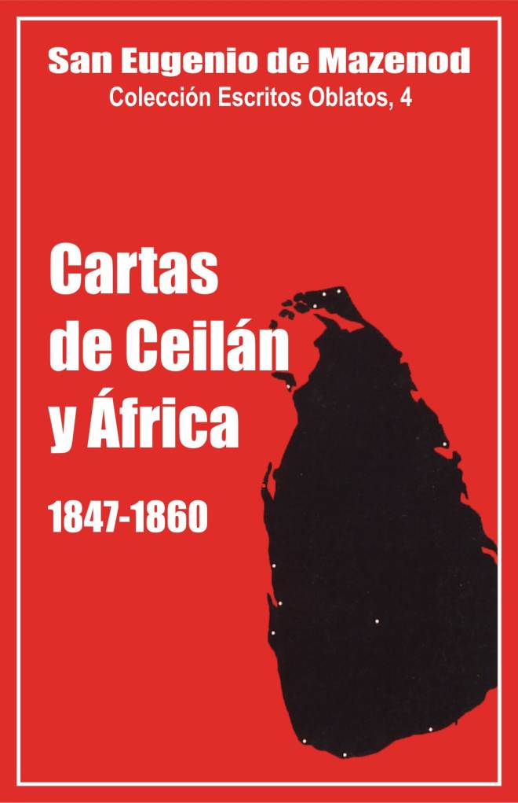

Palo Gordo
2019
Escritos Oblatos: - 01 - 02 - 03 - 04 - 05 - 06 - 07 - 08 - 09 - 10 - 11 - 12 - 13 - 14 - 15 - 16 - 17 - 18 - 19 - 20 - 21 - 22

BIENAVENTURADO
EUGENIO DE MAZENOD
Colección Escritos Oblatos, 4
postulación general o.m.i.
Vía Aurelia 290 Roma 1980
Palo Gordo
2019
CEILÁN: 1847 - 1848 - 1849 - 1850 - 1851 - 1852 - 1853 - 1854 - 1856 - 1857 - 1858 - 1859 - 1860
ÁFRICA: 1848 - 1850 - 1851 - 1852 - 1853 - 1855 - 1856 - 1857 - 1859 - 1860
Mons. Horacio Bettachini, Coadjutor del Vicario Apostólico de Colombo, vino a Europa en 1845, en busca de refuerzos misioneros. Sólo logró un sujeto de su Congregación del Oratorio y un Benedictino Silvestrino. Recorrió en vano el resto de Europa, suplicando en todas partes. Todas las puertas se cerraban ante él.
En su angustia se encontró con Mons. Berteaud, Obispo de Tulle, quien le dijo: Vaya a Marsella, hay allí un Obispo cuya Congregación es todavía pequeña, pero cuyo corazón es grande como el de Pablo: grande como el mundo. Vaya y expóngale con claridad que se trata de salvar a unas pobres almas, pobres, muy pobres; insista en eso, será la palabra irresistible .
Mons. de Mazenod respondió con entusiasmo a esa petición. El 12 de agosto de 1847, expone los motivos al P. Vicens: ¡Qué campo se abre ante nosotros! Un millón quinientos mil Gentiles que convertir, en el país más bello del mundo. Ciento cincuenta mil cristianos para ser instruidos; toda esa inmensa población dispuesta por la bondad de su carácter y por cierta atracción de religiosidad a escuchar con docilidad la palabra de los enviados de Dios que les anunciarán la buena noticia; por otra parte, prevenir la herejía... ¿Cómo resistir a tan poderosos motivos para responder con agradecimiento a los deseos de cooperar poderosamente a ese gran bien? He aceptado pues esa nueva misión, una de las más hermosas que existen en el mundo, previendo que esa gran Isla será algún día el patrimonio de nuestra Congregación, que santificará toda ella.
Que el Obispo de Marsella haya superado ampliamente, en el caso, una vez más y con una mirada muy segura, las posibilidades del presente, para abarcar las realizaciones del futuro, no se puede dudar, — escribe Mons. Leflon —. Pero que se haya dado exactamente cuenta de la situación especial y compleja que desconcertaría a sus hijos y a él mismo, en ese país pronto calificado de extraño por el primer superior de Ceilán, no lo parece... Una carta del 7 de octubre de 1847 a Mons. Casanelli de Istria, Obispo de Ajaccio, deja sin embargo ver que el Fundador preveía bastantes dificultades: Es una misión infinitamente delicada por varias razones y me hacía falta un hombre experimentado como el Padre Semeria para confiársela con toda tranquilidad. Es el sacrificio que Dios nos ha exigido y que he tenido que hacer con alegría con la firme confianza del bien inmenso que debe resultar de ello; la Sagrada Congregación de la Propaganda solicita la ayuda que nos pide ‘opportunissimo et necesario’. Espero que el P. Rolleri que lo sustituirá en Vico cumplirá bien.
Las cartas que publicamos son generalmente respuestas a las que el Fundador recibía, en particular del P. Semeria que escribía muy regularmente. Reflejan pues mucho el estado de alma de los corresponsales, en particular, del Superior, que durante mucho tiempo, estará sobre todo ocupado y preocupado por unas dificultades de orden exterior y pedirá con frecuencia consejo a Marsella en ese sentido. Eso explica el carácter un poco especial de esa correspondencia que nos pone al corriente de problemas y acontecimientos ajenos a la Congregación, dejando en un segundo plano la vida personal y religiosa de los misioneros, contrariamente a lo que se ha podido constatar en las cartas enviadas al Canadá o a los Oblatos de Inglaterra e Irlanda. ¿Cuáles fueron pues esas dificultades? los Oblatos se habían puesto al servicio de Mons. Bettachini y del Vicariato de Jaffna, pero esperaban, al parecer, trabajar bastante alejados del Obispo, en la provincia de Kandy. Ahora bien, cuando llegaron a Ceilán a finales del 1847, la Propaganda había colocado a Kandy desde el 17 de septiembre bajo la autoridad directa de Mons. Musulce, Vicario Apostólico de Colombo. El P. Semeria no dudó en quedarse en Jaffna para trabajar bajo la dirección inmediata de Mons. Bettachini, conforme a las consignas recibidas, y en colaboración con los demás sacerdotes del Vicariato poco numerosos por lo demás: 6 Goaneses que no tardaron en reunirse con sus compatriotas de Colombo, 2 Benedictinos españoles, 3 Sacerdotes seculares lombardos y un Oratoriano italiano. A estos últimos, europeos, no les agradó nada la llegada de 4 Oblatos, que viniendo de Francia, a pesar de que, para evitar malentendidos, el Fundador había elegido, además del Irlandés Keatting, tres italianos: el P. Semeria, piamontés, el P. Ciamin de Niza, y el Hermano De Steffanis, genovés. Se supo que eran una vanguardia, de ahí prevenciones y malentendidos. Desde 1849, se difundió un cábala, que puso muy nervioso al P. Semeria, para lograr que Mons. Bettachini llamara a unos Jesuítas para contrarrestar la influencia de los Oblatos y hasta para alejarlos de Jaffna. Esta escaramuza no tuvo felizmente consecuencias. Los Jesuítas fueron a trabajar al Vicariato, pero lejos de Jaffna, en las misiones de Mannar y de Kayts.
El P. Semeria quiso pues pasar a la acción apostólica y poner en práctica los proyectos que había formado poco a poco, visitando la isla, en su calidad de secretario del Obispo. Pero es sobre ese punto esencial sobre el que la confiada colaboración entre el Superior y el Obispo fue seriamente puesta a prueba. El Vicario Apostólico no tuvo en cuenta los proyectos del P. Semeria y acudió a lo más urgente. Dispuso de los Oblatos como de los demás sacerdotes a su servicio; los dispersó por las diversas misiones y los cambió con frecuencia de puesto. Ese modo de obrar hizo imposible la vida de comunidad e impidió un trabajo de evangelización en profundidad entre los cristianos bastante pendencieros y que se aferraban demasiado a una religiosidad tradicional y superficial.
Los misioneros trabajaron, sin embargo, con generosidad, a pesar de tener que contentarse con seguir la corriente, sin proyectos a largo plazo. El Fundador, un tanto desilusionado, mandó a pesar de todo tres Padres en 1849 y otros dos en 1850. Tuvo, sin embargo, que entablar una controversia cada vez con Mons. Bettachini a propósito de su transporte. Este último recibía para su Vicariato una subvención de la Obra de la Propagación de la Fe; hasta había pedido que no se diera nada directamente a los Oblatos y que su nombre no figurara en los Anales de la Propagación de la Fe. Sorpresa del Fundador cuando se enteró de esos detalles y que sintió la resistencia del Obispo para pagar el viaje de los misionaros. Ya sobrecargado de trabajo y de correspondencia, más de 60 cartas esperaban en su mesa algunas veces una respuesta, Mons. de Mazenod tuvo que escribir carta tras carta a la Obra de la Propagación de la Fe, a la S. Congregación de la Propaganda, al P. Semeria y a Mons. Bettachini para aclarar esa situación y para hacer comprender que el dinero de la Obra servía en primer lugar para los viajes de los misioneros. Se salió con la suya, aunque tuvo que enfadarse un tiempo con los responsables de la Obra de Lyon. Sin embargo, por economía, mandó algunos Padres, no por barcos ingleses que pasaban por el mar Rojo, sino en veleros que daban vuelta a África, viaje interminable y agotador. Eso explica la irritación que se transparenta cuando se entera que Mons. Bettachini, que se queja del costo demasiado elevado de la travesía de los misioneros, se permite el lujo de comprar unos candelabros suntuosos en París, ornamentos en Lyon y contrata en Italia a unos profesores de música a costa suya, por el camino más directo y más confortable.
Llegó un momento de serenidad y de esperanza cuando se abrió un nuevo campo de acción en 1851. A pesar suyo, por necesidad, Mons. Bravi, Silvestrino Coadjutor de Colombo, aceptó cuatro Oblatos que la S. Congregación de la Propaganda pidió a Mons. de Mazenod. Es, sin embargo, ahí donde aparecerán pronto las dificultades más serias. Mons. Bravi exigió en primer lugar que los recién llegados no tuvieran relaciones con su Superior de Jaffna. Las dos comunidades de la isla, escribió, deben pasar por no tener más relaciones entre sí que los canónigos de Génova con los de Ancona. Hasta insistió el Obispo para que los Padres escondieran su cruz oblata y su pertenencia a la Congregación. El Fundador estableció algunos principios claros que salvaguardaban los derechos de los Oblatos; pero, en la práctica, confió en Mons. Bravi y consideró oportuno contemporizar para la mayor gloria de Dios y la salvación de las almas. Los cuatro Oblatos, sin superior inmediato, no tardaron, con el entusiasmo y el ardor de su juventud en tomar unas iniciativas más generosas que prudentes, en particular haciendo, según usos europeos, la primera comunión solemne a los jóvenes y hasta a los niños, cuando los Goaneses sólo permitían con frecuencia a los cristianos comulgar in articulo mortis; eso les atrajo los anatemas de los Goaneses y luego de los Obispos de Colombo. Además en el curso de una larga controversia entre Bettachini y Bravi sobre la propiedad de algunas misiones importantes como la de Santa Ana de Talavila, de Chilaw y de Kurenegala, los Oblatos de Colombo tomaron partido por el Vicariato de Jaffna y se atrajeron la enemistad de Bravi que prometió no aceptar nunca más a otros Oblatos en su Vicariato, aunque tuvieran que ir a buscar sus misioneros en Australia.
Estas dificultades tuvieron como efecto convencer a Mons. de Mazenod para hacer a sus hijos más independientes. Desde 1848, pensó en hacer nombrar al P. Semeria Coadjutor de Jaffna con la responsabilidad de una parte del Vicariato reservada a los Oblatos. Hasta 1855, en todas sus cartas a Bettachini, a Semeria, a la Congregación de la Propaganda, vuelve con insistencia sobre ese proyecto que se realizó en 1856, unos meses antes del fallecimiento de Mons. Bettachini. Esas mismas dificultades harán arduo y lento el apostolado de los primeros Oblatos en Ceilán. El P. Semeria confesó un día que sobre ese particular no podía decir sino cosas incoherentes y sueltas. El Fundador le había predicado mucho tiempo la prudencia y la paciencia, utilizó poco después otro lenguaje. Le escribió el 17 de enero de 1850: No me consta que hagáis mucho, y hasta es a punto de espada. Busco en vano en vuestras cartas cuáles son vuestros trabajos. Hasta ahora no me habéis hablado de ninguna conversión, y francamente sólo he consentido mandar misioneros a Ceilán con la esperanza de verlos empleados en la conversión de las almas.
El P. Semeria se esfuerza, al parecer, luego en darle más noticias sobre la naturaleza de los trabajos y los resultados logrados, aunque el Superior General le acuse todavía de seguir siendo demasiado vago: Suprima los ‘tal vez’ y los ‘un poco’, le escribía un día. En el mes de abril de 1850, en una de sus cartas, el P. Semeria da por fin algunos detalles: Es preciso que estemos decididos a ser casi mártires de paciencia. El bien que se realizará aquí, durante mucho tiempo no será muy visible; pero querer tratar a los Indios como a unos Europeos sería exponerse a echarlo todo a perder... Sin embargo, el bien puede hacerse y se hará. Jaffna es una prueba de ello. Cuando los sacerdotes goaneses desempeñaban el ministerio, los cristianos más fervorosos a penas se confesaban por Pascua, y esos fervorosos eran raros; ahora tenemos diariamente, en nuestra iglesia, unas treinta comuniones. Anteriormente ni siquiera se conservaba la Santa Reserva; actualmente varias personas visitan regularmente, a diario, al Santísimo Sacramento. Antes era imposible reunir a los niños para el catecismo; hace dos años que lo estoy logrando, y a esas reuniones asisten espontáneamente personas mayores. Espero que el número de unos y otros irá creciendo cada vez más. En poco tiempo he bautizado unos 60 a 70 adultos...
Tres años después escribe: Creo a veces más difícil que convertir a un pueblo idólatra, que con frecuencia es repentinamente conmovido por las verdades desconocidas que se fe anuncia, que regenerar a unos medio-cristianos que han abusado de las luces de la gracia. Sin embargo, si no podemos felicitarnos de haber hecho todo el bien que deseábamos, el cambio realizado en las ideas y la conducta de muchos de nuestros cristianos es, me atrevo a decirlo, verdaderamente maravilloso. Quien hubiese conocido hace cinco o seis años la Ciudad de Jaffna, tendría ciertamente grandes motivos para alabar al Señor, si examinara la enorme diferencia que existe entre los cristianos de antaño y los de ahora...
El mismo año, noticias más tranquilizadoras todavía llegaban de los Padres de Colombo que lograban brillantes resultados: Mons. de Mazenod lo cuenta con orgullo al Cardenal Fransoni, el mes de marzo de 1853: Parece que el Señor los ayuda de modo especial. Estoy convencido que han recibido cierta participación en el milagro de Pentecostés; cómo explicar de otro modo que hayan logrado aprender tan bien y rápidamente esas lenguas difíciles para instruir y confesar a los indígenas. Los últimos llegados al Vicariato de Colombo han hecho tal vez demasiado a juicio de los Goaneses que no se mueven. Sin embargo, uno solo ha convertido a nuestra fe a 111 protestantes y otro a 82 budistas. Mucho tendría que decirle sobre las contrariedades que les han ocasionado los Goaneses que soliviantaban contra ellos al viejo Obispo, Mons. Antonio (Musulce). Su gran delito ha sido el de haberse ocupado demasiado de la pobre juventud abandonada y de haber ayudado a hacer la comunión a un gran número de jóvenes de doce a quince, veinte años y más. No era costumbre de los Goaneses que dejan morir a la gente sin haberles ayudado a hacer la primera comunión. Nuestros misioneros se han convencido de que los jóvenes son muy capaces de ser instruidos; la dificultad está en ocuparse de ellos sean cuales sean los sacrificios necesarios. A este propósito me han contado hechos capaces de hacer llorar de devoción y ternura. ..
El nombramiento del P. Semeria como Coadjutor de Jaffna en 1856, luego como Vicario Apostólico en 1857, le permitió por fin ejecutar los proyectos formados diez años antes. Puso en pie un equipo de misioneros cuya dirección tomó con frecuencia, y predicó misiones conforme al método tradicional de la Congregación en la isla de Kayts, trastornada por el cisma, en Valigamme, Trincomali, Batticaloa y Jaffna, etc. Esas misiones fueron tan fructuosas como en Europa o el Canadá. Se ocupó igualmente de otro punto importante de sus proyectos: las escuelas y hasta un seminario con la finalidad de formar catequistas y sacerdotes. Mons. de Mazenod que toleraba la dirección de las escuelas en los países de misiones, tuvo muchas dificultades para encontrar los hermanos que le pedían con insistencia, pero animó al Obispo y sobre todo al P. Bonjean, futuro Vicario Apostólico y Arzobispo de Colombo, que fue el gran Apóstol de las escuelas católicas en la isla.
Los problemas relativos a los misioneros, a su salud, a su vida religiosa y apostólica, quedan en segundo lugar. El grupo Oblato había tomado poco a poco unas proporciones notables, si se le compara por lo menos con el muy pequeño número de los demás obreros apostólicos en la isla. En quince años, treinta y tres Oblatos marcharon de Francia o Inglaterra para Ceilán. Otros dos ingresaron en la Congregación en el lugar: el P. Bonjean y el H. Poorey, primer Oblato Ceilanés.
El fundador recomienda con frecuencia a sus hijos que eviten los excesos de trabajo y se cuiden más, porque cinco de entre ellos murieron en 15 años y otros dos volvieron a Francia enfermos. Las preocupaciones relativas a su vida espiritual y religiosa aparecen pocas veces y para pocos misioneros. El Fundador confía totalmente en el equilibrio y la virtud del P. Semeria, más severo y minucioso que los Padres Honorat y Guigues en el Canadá, más flexible y de criterio más amplio que Mons. Allard en el Natal. Con ocasión de las muertes, Mons. de Mazenod hasta admira las virtudes de sus hijos. Los detalles que el P. Semeria le da, como si se tratara de sucesos, con ocasión de la muerte del P. Leydier, demuestran que los Padres y Hermanos vivían con un espíritu de fervor bastante extraordinario. El Fundador los transcribe, el 19 de septiembre de 1851, en una carta a la Obra de la Propagación de la Fe: Se ha encontrado en los papeles del Padre Leydier fallecido, como os lo he dicho, al servicio de los coléricos que había cuidado con un celo heroico, unos propósitos que prueban la santidad de ese buen misionero. La víspera de la Ascensión del año pasado, saliendo de oración, había escrito los siguientes propósitos: desconfianza absoluta de sí mismo, vigilancia atenta contra el demonio, confianza total en Dios y en la protección de la Santísima Virgen. Evitar la pérdida de tiempo. Comer poco, trabajar siempre. Fidelidad a mis ejercicios de piedad. Ninguna tregua.
Si le ocurriera faltar a esos propósitos, se imponía como penitencia: 1— comer de rodillas su arroz seco (es decir, el arroz cocido simplemente con agua sin ningún aliño), 2— disciplina, 3— dormir sobre el suelo. Había luego escrito con su sangre estas últimas palabras: como señal de fidelidad, firmado con mi sangre. Leydier P., OMi.
Estos detalles no podían sino alegrar al anciano Obispo, que treinta años antes había escrito en el prefacio de la Regla: Los Oblatos deben renovarse sin cesar en el espíritu de su vocación, vivir en estado habitual de abnegación, y con el empeño constante de alcanzar la perfección, trabajando sin descanso para hacerse humildes, mansos, obedientes, amantes de la pobreza, penitentes y mortificados, despegados del mundo y de la familia, abrasados de celo, dispuestos a sacrificar bienes, talentos, descanso, la propia persona y vida por amor de Jesucristo, servicio de la Iglesia y santificación de sus hermanos.
Las últimas cartas traen una nota de alegría y de esperanza. Los Oblatos trabajan con éxito, con absoluta libertad, en el Vicariato de Jaffna. En el mes de septiembre de 1860, se enteran de repente que el Vicario Apostólico de Colombo ha fallecido durante un trayecto de un viaje a Roma, Ha sido muy severo para ese pobre Mons. Bravi, escribe el Fundador a Mons. Semeria, el 17 de septiembre. Hablaba a su Superior, no tenía ningún escrúpulo en darle a conocer tal como me lo mostraban sus actos. Esta muerte dejaba a Colombo sin Obispo. Ahora bien, desde 1847, Mons. de Mazenod había escrito: He aceptado pues esta misión en previsión de que esta gran isla sería un día el patrimonio de nuestra Congregación, que la santificará por entero.
Desde hace tiempo había manifestado sus proyectos a largo plazo al Prefecto de la Propaganda que compartía sus puntos de vista. ¿No había llegado el momento de ver realizarse ese sueño? Morirá sin gustar la alegría de enterarse que sus deseos serían colmados. Después de una vacante de dos años, Colombo fue confiado al Silvestrino Sillani. Sólo en 1883 será atribuido el Vicariato a los Oblatos.
Las cartas relativas a África son poco numerosas. Hubo, sin embargo, dos campos de apostolado: Argelia en el norte y Natal al sur, pero el número de misioneros fue muy restringido y la actividad apostólica muy limitada.
Los Oblatos trabajaron en Argelia durante 17 meses, desde fines de febrero de 1849 hasta finales de julio de 1850. Ocho de ellos fueron enviados para un período más o menos largo, sea a Blida, sea a Philippeville, bajo la dirección del P. Viala primero, luego del P.Martín. Sólo tenemos 15 cartas del Fundador a Argelia y, además, se trata casi únicamente de breves estratos de Yanveux. Sin embargo, dos temas emergen claramente: los Oblatos deben ser los servidores abnegados de los Obispos y el objetivo de su misión en África del norte es la evangelizaron de los Musulmanes. Fue precisamente por la mala inteligencia con el Obispo, Mons. Pavy, y por la imposibilidad inmediata de evangelizar a los Musulmanes por lo que Mons. de Mazenod volvió a llamar a sus hijos para enviarlos a África del Sur.
Un acontecimiento inesperado apresuró su regreso, la conducta escandalosa del P. Bellanger que comprometió el honor de la Congregación y dilapidó sus bienes con una liberalidad y extravagancias inauditas.
* * *
En la primavera del 1850, Mons. Barnabo pidió a Mons. de Mazenod si podía enviar unos Oblatos a África del Sur. Esta misión presentaba dos ventajas: el Vicario Apostólico sería Oblato y estarían entre paganos. La decisión del Fundador fue rápida y fácil. El primero de abril escribía a Roma para aceptar la misión de Natal y proponer al superior, el P. Carlos Bellón. Los misioneros se hallarán entre los Padres de Argelia.
La deteriorada salud del P. Bellón no le permitió aceptar una carga que se anunciaba difícil. Mons. de Mazenod fijó entonces su elección en el maestro de novicios de la provincia del Canadá: el P. Allard. Este, sorprendido de esa elección, buscó buenas razones para negarse, razones apoyadas por los Padres del Canadá que lo juzgaban no apto para ese cargo, a causa sobre todo de su severidad que había agotado los ingresos en el Noviciado. El Superior General, sin duda para no repetir una experiencia que había juzgado poco feliz en el Canadá, prefirió la certeza de una vida religiosa muy ejemplar a las ventajas del talento y del dinamismo del apostolado. Dio órdenes formales al P. Allard que vino a hacerse consagrar a Marsella el 13 de julio de 1851 y salió en febrero de 1852 con cuatro misioneros.
En el curso de los 10 primeros años de actividad en Natal los Oblatos trabajaron en Durban, en Pietermaritzburg y en otros puestos de misión entre los Zulues. Pero su apostolado entre los negros fue un fracaso. No se hizo ni un solo bautismo. El P. Gerard escribía al Fundador, el 10 de junio de 1860: Perdone... mi sencillez. Un hijo aunque sólo tuviera una flor, tendría sumo gusto de ofrecerla a su padre. ¡Pues bien! una florecita ha aparecido en este campo pedregoso, cubierto de abrojos y de espinas, que cultivamos... Hace unas semanas, hemos regenerado, en las aguas bautismales, una niña de nueve meses, enferma...
Ese fracaso explica porqué Mons. de Mazenod envió pocos misioneros. A su muerte, sólo había 5 Padres misioneros y 5 Hermanos.
Hemos encontrado 18 cartas dirigidas a Mons. Allard y a los Oblatos de Natal, felizmente conservadas casi íntegras. El Fundador insiste ante Mons. Allard para que se muestre más comprensivo con los misioneros (tres lo abandonaron desde los primeros años) y más audaz en los riesgos para la evangelización de los Zulúes. A los misioneros, recuerda la grandeza de su vocación y predica la paciencia, el espíritu de fe, el ánimo en las pruebas. Es por otra parte por haber seguido uno de sus últimos consejos, verdadera profecía, por lo que finalmente, después de la muerte del Fundador, esa misión dio frutos abundantes. El 4 de septiembre de 1860, escribía al P. Gerard: Llegará el momento en el que la gracia misericordiosa de Dios hará una especie de explosión y vuestra Iglesia Cafre se formará. Tal vez para eso habría que penetrar un poco más entre esas tribus salvajes. En el mes de octubre de 1861, Mons. Allard y el P. Gerard franquearán el Drakensberg y penetraban en Basutolandia donde encontraron un pueblo que acogió rápidamente el anuncio del Evangelio.
Yvon Beaudoin, O. M. I.
1. Al P. Esteban Semeria, en Vico [1]
Acta de nombramiento como Superior de la misión de Ceilán.
Carlos José Eugenio de Mazenod, por la misericordia divina y la gracia de la Sede Apostólica, Obispo de Marsella. Comendador de la Santa Religión y Orden Militar de los Santos Mauricio y Lázaro. Superior General de la Congregación de los Oblatos de la Santísima e Inmaculada Virgen María. A nuestro amado en Cristo Esteban Semeria, Sacerdote de la misma Congregación.
Salud y Bendición en el Señor.
Habiéndonos pedido insistentemente. Monseñor Bettachini, Obispo de Toron in partibus infedelium, y Coadjutor del Vicario Apostólico en la isla de Ceilán que le adjuntemos algunos de nuestros misioneros como compañeros de viaje y asociados a sus trabajos, Nosotros, a quien está confiado el gobierno de toda la Congregación, considerando menos nuestra penuria de sujetos que la voluntad de Dios, pareciendo haber sido llamados los miembros de nuestra Congregación a trabajar en esa parte de la viña del Padre de Familia, hemos decidido enviar allí unos obreros evangélicos. Estos se dedicarán pues diligentemente, bajo la jurisdicción del Reverendísimo Coadjutor, para mayor gloria de Dios y salvación de las almas, a estimular la piedad de los católicos, a restaurar la fe entre los heréticos, y sobre todo, a arrancar a los desgraciados infieles de las tinieblas y de la sombra de la muerte.
Dada la distancia que nos separará y las dificultadas bastante considerables que podrían surgir en el futuro, pensamos elegir entre los miembros de nuestra Congregación e instituir con facultades extraordinarias como jefe de esa gran empresa y guía de esa excelente misión, a dicho Esteban Semeria, hombre que la prudencia y una oblación prolongada han madurado, recomendable por su celo y su piedad, por último de un apego inviolable hacía Nosotros y la Familia.
Por eso, Reverendo Padre, os elegimos y por las presentes os nombramos Superior de esa misión, otorgándoos sobre todas las misiones que serán confiadas a los cuidados de nuestra Congregación en la isla de Ceilán plena jurisdicción y autoridad, revocables según nuestro beneplácito.
1º — Gozaréis pues, en primer lugar, de todas las facultades que nuestras Reglas y Constituciones atribuyen a los superiores locales.
2º. — Además, os será permitido establecer nuevas misiones y residencias, y a juicio vuestro, aceptar o rechazar cuanto se refiere a su localización y sus condiciones.
3º — Asimismo, os otorgamos el poder especial de dar en nuestro nombre las cartas dimisoríales en favor de los misioneros de nuestra Congregación para que puedan recibir legítimamente cualquier Orden eclesiástica.
40 — En una palabra, queremos que tengáis el poder en virtud del cual el Superior General mismo rige y gobierna toda la Congregación; lo que, sin embargo, no debe exceder los límites de la Isla mencionada, y, además, siendo reservados los siguientes casos: 1º la convocación del Capítulo General; 2º la expulsión de cualquier Oblato de la Congregación; 3º la admisión de los novicios a los votos perpetuos de la Oblación; sin embargo, ésta podrá hacerse antes de que sea conocido el consentimiento del Superior General; pero no será considerada válida por parte dé la Congregación hasta ser conocida la aprobación del Superior General.
Os ayudarán como formando parte de vuestro Consejo, sólo con voto consumativo, aquellos que os serán asociados en la misión a los cuales podréis acudir. De los asuntos tratados y de todo cuanto se refiere al estado de la Congregación, nos daréis cuenta cada semestre, y con más frecuencia si es posible.
Id ahora, querido hijo, a la obra que os ha sido confiada así como a los que hemos elegido para ser vuestros asociados, en esas regiones extremas de Asia, para la mayor gloria de Dios, que se promoverá allí y en todas partes.
Que la Santísima e Inmaculada Virgen María, nuestra previsora Madre, os guarde continuamente bajo su protección. Que los ángeles de Dios os asistan; y en cuanto a Nosotros, hijo amado en Cristo, no dejamos de implorar sobre Usted una abundante lluvia celestial.
Dado en Marsella el 21 de octubre de 1847
+ C. J. Eugenio, Obispo de Marsella. Superior General
2. Al P. Esteban Semeria, en Ceilán.
Alegría al recibir una carta de Ceilán. Prudencia con el Abate Reinaud y los demás misioneros. No ocultar la pertenencia a la Congregación de los Oblatos. Que los Padres vivan en comunidad con forme a la Regla, unidos en la caridad.
L. J. C. et M. I.
Marsella, 25 de enero de 1848
He recibido sus dos cartas, mi querido Padre Semeria, no diré sólo con gran placer, sino con inmensa alegría. Contaba los días y las horas, preguntaba continuamente si no había llegado el barco, cuando por fin me fue entregada vuestra carta. Os agradezco mucho, mi querido hijo, en primer lugar, haberme proporcionado noticias suyas y de sus queridos compañeros de viaje, luego por todos los detalles que contiene su carta. Así es como hay que hacer siempre. Cuando se escribe desde tan lejos y habiendo tantas cosas que decir ¿cómo se puede dejar una línea en blanco en una carta? Quisiera también ennegrecer todo mi papel, pero mi posición no es tan ventajosa. Independientemente de mis ocupaciones habituales que conocéis muy bien, dispongo de poco tiempo para escribiros si quiero aprovechar el regreso del barco. No importa, haré todo cuanto pueda, he cerrado mi puerta a cal y canto, lo que no impide hayan entrado ya varias veces. El P. Aubert se ha adelantado. Ha debido escribiros ayer en el sentido convenido, si es preciso su respuesta podría serviros de regla, pero me he reservado la satisfacción de escribiros yo mismo directamente.
No hablemos de las circunstancias de vuestra hermosa recepción ni del contenido de vuestra primera carta. Quiero llegar al hecho, con temor de no poder hacerlo antes de exponeros mi pensamiento.
Habéis podido juzgar como nosotros, por todo cuanto ha pasado entre usted y Reinaud que teníamos razón al estar convencidos que pensaba más en él que en nosotros con las bellas proposiciones que nos hizo. Es evidente que ese pobre hijo, salido de aquí con la manía de ser elevado al episcopado, se hubiese servido con gusto de nosotros como escabel para lograrlo. Perdidas sus esperanzas en Baghdad, era buena la ocasión de Ceilán con la combinación que había sugerido, y está tan furioso contra Mons. Bettachini porque ha visto fallido su golpe por el nuevo arreglo que se ha hecho. Por eso, observe con qué indiferencia os ha visto llegar, él que en sus cartas parecía atribuir tanta importancia al hecho de que nos introdujésemos en esa misión. Tenga pues en cuenta ese principio para manteneros siempre prudentemente en reserva. Quisiera que extendieseis esa prudencia hasta el punto de no confiaros nunca a los misioneros que habéis encontrado y que os han hecho buena acogida. Sea cortés con ellos, hasta cordial, pero nunca jamás confidencias. Sabéis lo fácil que es interpretar mal las mejores intenciones. Sé con certeza que usted y sus compañeros habéis ido a Ceilán sólo por obediencia y para trabajar conforme a vuestra vocación por la salvación de las almas, pero eso no me consta igualmente de los sacerdotes libres que han podido considerar su misión bajo otro punto de vista. Así las cosas, esos sacerdotes, aún haciéndoos buena acogida han podido quedar en el fondo contrariados con vuestra llegada, sobre todo, si pudieran sospechar que acabaréis influyendo la suficiente confianza para ser los preferidos en las miras de ambición que han podido nacer en ellos viendo a un simple sacerdote antaño ser igual como Vicario Apostólico. Se podría presumir que no pierdan la esperanza de sucederle, llegado un cambio, y que preparan sus baterías para ello. Os hablo humanamente. Tal vez no sea así, pero la experiencia que tengo de los hombres me obliga a premuniros contra cualquier sorpresa e ilustrar vuestra bondad natural para que no se deje engañar por las apariencias creyendo a los hombres mejores de lo que son. Me gusta mucho la sencillez de la paloma, pero no quiero nunca separarla de la prudencia de la serpiente. Habéis hecho muy bien en no seguir al pie de la letra el consejo que Reinaud os había dado a propósito de vuestra santa profesión. No tenéis que presumir de ella ni ostentarla sin razón, pero disimularla nunca jamás. Sería por otra parte esconderse tras el dedo. Lo que debéis hacer es insistir ante Mons. el Vicario Apostólico para que no os separe. No hay que ceder a las razones en contra que podrían aducir. Haréis observar que sería de algún modo hacer violencia a vuestro Instituto, que exige ir de dos en dos y que por consiguiente es más sencillo que se os coloque juntos. Es indispensable que persistáis exigiendo que os dejen siempre dos. Compartiréis si sólo hay para uno, pero no puedo consentir que un sujeto aislado sea separado por lo menos de un compañero. Los Jesuítas lo han establecido hasta en sus misiones del Maduré; ante todo las precauciones necesarias para la salvación de los nuestros, la conversión de los demás quedará mejor asegurada de esa forma. Comprendo que si estuvieseis encargados de la misión de Jaffna lograríamos ese objetivo por difícil que os parezca; hay que hacerlo gustar al digno Mons. Bettachini que comprenderá su importancia. Podrá entonces sacar provecho más fácilmente de vuestra ciencia teológica y litúrgica, si habita en ese mismo país. Dígale que no me niego a enviaros de nuevo sujetos en cuanto me los solicite con tal de que los coloque de dos en dos; pero será siempre de inmensa importancia que establezcáis una especie de casa central en una ciudad principal. A eso os debéis dedicar sobre todo, empleando si hace falta los recursos que intentaremos lograr de la Propagación de la Fe. El P. Aubert ha debido deciros a ese propósito cómo debéis proceder, porque es esencial que independientemente de lo que se pueda conceder a Mons. el Vicario Apostólico se asigne algo a los Padres de nuestra Congregación. No me habéis dicho cómo os habéis arreglado para los gastos de viaje. Había tenido noticias vuestras de desierto. Alguien que desde la diligencia os había visto montados en vuestros burros me había anunciado que estabais cerca de Suez cuando os encontró. Mucho hemos reído de vuestras cabalgaduras, que elogió, sin embargo, el viajero. No pudiendo escribir a cada uno de vosotros, me dirijo a todos, mis queridos hijos, llamados por Dios a una misión tan bella. Honrad vuestro gran ministerio con la práctica de todas las virtudes religiosas. Sed fieles observantes de vuestras santas Reglas, vivid en la unión más perfecta y dejaos guiar sólo por la obediencia. Si surgiera alguna nube, que pido a Dios os preserve, guardaos de quejaros a algún extraño, os arrepentiréis más tarde y no tardaríais en reconocer que habéis causado un gran perjuicio a la familia, mal irremediable que pesaría toda la vida sobre vuestra conciencia. Por otra parte en lugar del alivio que habríais buscado, tened la seguridad que sólo sacaréis amargura y decepción. Amaos bien unos a otros, teneos mutua deferencia y evitaréis esa desgracia, y Dios bendecirá todas vuestras empresas y seréis recompensados desde esta vida en espera de ser coronados en el cielo. A pesar de que seáis todavía poco numerosos, mientras estéis juntos haced todos vuestros ejercicios en común como si formaseis una gran comunidad. Quién puede decir el bien que producirá el buen ejemplo que daréis.
No os dejéis abatir por el calor del clima. Hay que servir a Dios en todas partes con fervor. Si pudiera sospechar que ibais a empeorar en esa tierra que debéis regar con vuestros sudores para devolver a los demás a sus deberes, para instruir a los que no conocen al Dios verdadero, os declararía indignos de vuestra vocación y sentiría haberos elegido con preferencia a tantos otros para la admirable misión de dar a conocer a Jesucristo, de extender su reino siguiendo las huellas de los Apóstoles. Pero no, nunca me daréis esa pena. Por el contrario, tendré que felicitarme por haber confiado los intereses de la gloria de nuestro Dios y el honor de nuestra querida Congregación. Sed pues benditos en el nombre del Padre y del Hijo y del Espíritu Santo y bajo la maternal protección de María Inmaculada. Antes de terminar esta larga carta quiero decir al P. Superior que apruebo transitoriamente lo que ha hecho para el ayuno del viernes, pero le animo para no adoptar fácilmente todos los relajamientos introducidos por la cobardía. Debemos hacer más y mejor que los demás. Si perdéis el espíritu de mortificación, no respondo de vosotros. Padre Semeria, desconfíe de su natural debilidad ocasionada por el exceso de bondad de su carácter. No queda usted exento de reproche sobre ese particular en su gobierno de la casa de Vico. He tenido que reformar varios abusos que habéis dejado introducirse por excesiva condescendencia. Hay que saber resistir a las exigencias de la tibieza que se esconde bajo unos pretextos que hay que saber reconocer para combatirlos. Menos todavía hay que escuchar a los de fuera. No soltéis las riendas antes de poneros en movimiento. Ensayad primero y no cedáis sino con la experiencia. Es lo que debíais de haber hecho antes de reducir vuestros ayunos del viernes. No dispenséis de la disciplina, no hace daño al estómago.
3. Al P. Semeria, en Jaffna.
Salida de misioneros para el Canadá. La Revolución de 1848 en Francia disminuye los recursos de la Obra de la Propagación de la Fe e impide el envío de otros Padres a Ceilán. el P. Ciamin Soto en la misión de Mantotte. Relaciones con Mons. Bettachini el Abate Reinaud y los sacerdotes italianos de Jaffna. Poca esperanza de lograr unas Religiosas y unos Hermanos de /as Escuelas Cristianas, pero hay Oblatos disponibles, en particular el P. Frederick Mouchei. Carta de Mons. Bettachini. Enfermedad del P. Keating. Esperanza de lograr un Vicario reservado a los Oblatos.
L. J. C. et M. I.
Marsella, 9 de mayo de 1848
He aquí, mi querido Padre Semeria, todo cuanto he podido escribiros del 9 al 11 de mayo cuando vuelvo a coger, no diré mi pluma que no he dejado desde entonces, sino esta hoja que os estaba destinada. En el intervalo he escrito a toda América del Norte. Hoy mismo van a embarcarse cuatro de nuestros Hermanos y un Converso para el Canadá. Sólo hay un sacerdote entre ellos, un diácono a quien he conferido esa orden al día siguiente de haberlo hecho subdiácono, y dos minoristas. Estos dos últimos no han empezado su teología que el P. Allard se encargará de enseñarles en Longueuil, el diácono sólo ha cursado un año. Diréis que comemos nuestro trigo verde; pero no, harán sus estudios tan bien en Longueuil como aquí, y se aclimatarán al país al mismo tiempo que aprenderán las lenguas. Había que aprovechar por otra parte un barco que salía directamente de Marsella para Boston y que nos proporcionaría la ventaja de ahorrarnos de cinco a seiscientos francos por cabeza. Ojalá, mi querido Padre, pudiésemos sólo desembolsar de cuatrocientos a quinientos francos para enviaros sujetos, ya hubieseis recibido varios, pero cuando hay que desembolsar 2,000 frs. por cada misionero que se manda hacía vuestra isla, hay que esperar hasta que la Propagación de la Fe se decida a proporcionarnos algo. Los acontecimientos ocurridos en Francia han disminuido tanto los recursos que es de temer que no se pueda hacer nada por las misiones, y entonces ¿qué será de nosotros? He enviado al P. Tempier a Lyon para tratar de lograr algo, pero tengo pocas esperanzas de éxito a pesar de la carta apremiante que lleva. He recibido puntualmente todas vuestras cartas, y os agradezco mucho vuestra exactitud en escribirme. Si no soy tan rápido yo mismo en contestar, hay que atribuirlo a dos causas, la primera a las molestias ordinarias de mi posición considerablemente acrecentadas estos últimos tiempos hasta hacerme perder la ocasión de la salida del barco y también un poco el hecho de que descanso en el fiel e incomparable Padre Aubert que hace frente a todo con una actividad y una presencia de espíritu admirables. Vuelvo a releer vuestras últimas cartas, por miedo a haber dejado escapar algo de lo que decíais. En la del 7 de febrero me decíais que habíais creído deber dejar ir al P. Ciamin a gobernar la misión de Mantotte. Hubiese sido difícil obrar de otro modo, pero es esencial conservéis relaciones habituales con él cuyo Superior seguís siendo. Hay que exigir que os escriba por lo menos cada mes para daros cuenta de su gestión y a ese propósito desearía yo mismo conocer lo que es esa misión, qué va a hacer el misionero, cuáles son sus recursos, etc. A propósito de los recursos pecuniarios, vigilad para que el misionero os de cuenta exacta y que sólo guarde para sí lo que pobremente necesita para sus necesidades, el superávit, si lo hay, debe seros entregado para que empecéis a formar una caja provincial, la cual a falta de las ayudas de la Propagación de la Fe podrá luego ayudarnos para el envío de los sujetos que deseo asociaros, pero que no puedo ante la imposibilidad de haceros embarcar por falta de medios. Me complace mucho os quedéis junto al Vicario Apostólico por varias razones. Se apegará más a usted, os apreciará y conoceréis perfectamente la misión de la isla entera, lo que os será útil para formar vuestros proyectos y comunicármelos cuando estéis bien orientado. Si se tuviera que dividir la isla, tendría mucho interés se reservara un Vicariato para nosotros solos, nos encargaríamos de alimentarlo de sujetos, pero mientras tanto hay que hacerse útiles y hasta necesarios al Obispo que siendo bueno y celoso preferirá asociaros a su solicitud con preferencia a los demás que no le presentarían las mismas garantías. Haga pues todos los esfuerzos posibles para aprender cuanto antes las lenguas que hay que saber en ese país, cuide, sin embargo, a todos esos italianos para que no se hagan enemigos, aún aquellos que no quieren al Obispo, aunque con precauciones para no molestar a éste. En cuanto a Reinaud intente conocer cada vez más sus intenciones, no se enemiste con él y véalo venir. Siempre he creído firmemente que trabajaba para él, que pondría todo en obra para ser Obispo, y que para ello le alegraría utilizarnos bajo su jurisdicción. Qué lástima que no haya podido hablar con Mons. Beni para que no se dejara influenciar demasiado por unos hombres interesados que quaerunt quae sua sunt. Si en estos momentos no estuviera todo revuelto en Roma, hubiese pensado hacer unas gestiones, pero hoy día es imposible. Sin embargo, había escrito a la Propaganda para recomendar personalmente a nuestros mesoneros. Si tenéis ocasión de poneros en relación con ella, no sería malo, aunque sólo fuese para hablar bien de vuestro Vicario Apostólico y defenderlo, si hace falta, de los ataques de los envidiosos y descontentos. Sigo vuestras cartas paso a paso. Os diré pues ahora que el proyecto de Mons. Bettachini de llamar a unas Religiosas y a unos Hermanos de las Escuelas Cristianas es muy hermoso, pero impracticable como lo entiende y sobre todo hoy día con la dificultad de lograr algo de la Propagación de la Fe. Tal vez no haya ni un sólo Hermano de las Escuelas Cristianas que sepa inglés, y entre las Religiosas, a no ser que sean de las Damas del Sagrado Corazón, no creo las haya tampoco. El otro proyecto sería más practicable si se encontraran los medios para pagar las travesías. Podría enviar bastantes sujetos para que empleaseis algunos en la enseñanza aunque no sea la vocación de los que acuden a nosotros, pero dedicándolos sólo para un tiempo tal vez podrían aceptar, pero sería, creo, ilusionarse esperar abastecerse de sujetos entre esos insulares. ¿Cómo esperar que con esa naturaleza se puedan formar unos religiosos? ¿Lograríais hacer de ellos sacerdotes seculares? Vea lo que son vuestros Goaneses. En cuanto a las escuelas, si tuviésemos una casa residencia fuera tal vez más fácil dedicando a ello a nuestros hermanos encargarnos de ellas más tarde, pero las finanzas serán siempre la gran dificultad. ¿Sabe usted cuál sería el primer misionero que le enviaría si tuviera dinero para la travesía? Adivine: el P. Mouchel que aprende el inglés con ardor y que me escribe carta sobre carta pidiéndome con preferencia vuestra misión, temiendo no poder con el frío de la América Septentrional. Ese Padre es muy virtuoso y su atracción para las misiones de los infieles es muy acentuada. Oh, no serían los sujetos los que nos faltarán, es el dinero.
Mons. Bettachini me ha escrito por el mismo correo que usted. Me pinta un cuadro deplorable de la ignorancia y de la depravación de los cristianos del país. ¿De quién es la culpa, me dice? de los pastores que pascebant seipsos et quaerunt quae sua sunt. No hay catecismo, casi ninguna confesión, etc. Ve, sin embargo, por experiencia que se puede instruir a esas pobres gentes que se las puede corregir, reformar los abusos y las costumbres. Me dice que un goanés se ha vuelto loco, que otro ha fallecido y que un tercero se ha hecho cismático, que sólo quedan en la isla 17 de esos pobres sacerdotes, que su viaje a Europa ha mejorado considerablemente el estado de la misión ya que la mitad de la isla le ha sido confiada exclusivamente y que es el Coadjutor del resto de la isla. Podría haber añadido que se llevaba buenos y fieles cooperadores tales como vosotros. Sta a V. S. Illma, me dice, di mandare un compagno al P. Ciamin , Súbito si, ma il denaro dov’é? (A usted toca enviar un compañero al P. Ciamin. — Sí, enseguida; ¿pero dónde está el dinero?). Es cierto que el buen prelado pidiéndome le busque tres Religiosas tal como me las indicáis, añade que la Propagación de la Fe me pasará 8,000 frs. y que supone que 6,000 frs. bastarán para la travesía de las Religiosas, los 2,000 restantes nos servirán para el misionero que espera le mande con las religiosas. El misionero ya está, son las Religiosas las que nos faltan y también los 8,000 frs. Tengo demasiada prisa hoy, que es el día de la salida del correo, para contestar a Mons. Bettachini sobre esos diversos puntos. Comuníquele lo que os digo presentándole mis respetos y mi constante buena voluntad para poner a su disposición tantos misioneros como me sea posible. Por último, llego a vuestra última carta del 7, lleva la misma fecha que la anterior y que la del Obispo. En primer lugar tranquilícese sobre su pretendida incapacidad. No es usted quien se ha destinado. Dios os dará todo cuanto os haga falta para llevar vuestra barca a feliz puerto. Confíe en su bondad y en sus promesas, pídale continuamente las luces de su Santo Espíritu y actúe sin temor en el nombre del Señor. Apruebo todo cuanto habéis hecho. Cuide mucho al P. Keating si ha esputado sangre; debéis concederle todas las dispensas que exige la delicadeza de su complexión. El P, Arnoux nos ha hecho la misma pasada, al ir a celebrar una de sus primeras misas en Ntra. Sra. de la Guardia. Así el P. Keating verá que los accidentes ocurren en todas partes. En cuanto a usted no haga tampoco nada que vaya más allá de sus fuerzas. Pienso que su complexión es delicada, no tenga pues escrúpulo alguno en concederos todos los alivios necesarios para cumplir su misión. Espero me expliquéis algo más claramente el estado de la misión en toda la isla para daros la opinión que me pedís. Hay cierta confusión en lo que me decís, como lo reconoce usted mismo. Me he explicado, sin embargo, bien sobre un punto al comienzo de esta carta manifestándoos el deseo de que se pudiera formar un Vicariato que fuese confiado a los nuestros. Me da la impresión de que parecéis creer que Mons. Bettachini no estaría lejos, si teme fracasar, al proponer otro coadjutor para Colombo. Me cuesta creerlo, pero si fuera así, sería lamentable que uno ajeno a la Congregación fuese preferido. Me habláis luego de Negombo, lo que me ha sumido en la confusión. Vuelva sobre ese asunto y dedique tiempo a reflexionar sobre ello para explicarme bien las cosas y darme su opinión bien motivada. Me es imposible seguir, a cada paso vienen a llamarme. Quería escribir a nuestros dos Padres, tengo que dejarlo para el mes que viene. Os abrazo de prisa y os bendigo a todos de todo corazón.
+ C. J. Eugenio, Obispo de Marsella.
P. D. Tendréis que conceder vuestros sufragios a un novicio que acaba de fallecer en Nancy. ¿Os han avisado de la muerte del H. Arvel, Oblato?
4. Al P. Esteban Semeria, en Jaffna.
La Revolución en Francia y en Roma impide el envío de misioneros, insubordinación del P. Keating. Valentía de los misioneros del Gran Norte. La Congregación tiene muchos estudiantes pero sigue sin dinero.
L. J. C. et M. I.
Marsella, 17 de agosto de 1848
Esperaba, mi querido Padre Semeria, que la Propagación de la Fe hubiese respondido para deciros algo positivo, esta respuesta ha tardado excesivamente, hay que atribuir ese retraso a los acontecimientos que conocéis y que se han sucedido sin parar trastornándolo todo, y dejando grandes inquietudes para el futuro. Comprendéis, sin embargo, que necesitaba saber algo positivo para satisfacer tanto a Mons. el Vicario Apostólico como a usted. Vuestras peticiones suponían que la Propagación de la Fe había puesto en mis manos las sumas destinadas a Monseñor, ahora bien, mi querido amigo, no se ha tratado de eso hasta el presente, ninguna noticia de ese género y nada de dinero. Entonces ¿cómo procuraros unos hermanos y unas religiosas? ¿cómo proporcionaros unos misioneros? Estos están preparados. El día que se tenga para pagar el viaje, embarcarán. El P. Mouchel que tiene mucho interés en ser del grupo, se ha ocupado seriamente del inglés y os sorprenderá con el progreso que ha hecho en esa lengua. Los demás también, porque sólo se habla inglés en los recreos de nuestros Oblatos. No me negaría a cederos algunos para el seminario menor proyectado por Monseñor. Pero hace falta dinero para que viaje toda esa gente. Sabéis que cuesta 2,000 frs. por cabeza. Veo, pues, con pena que tendréis que renunciar para este año el refuerzo considerable que hubiese deseado proporcionarles, porque a falta de Hermanos de las Escuelas Cristianas de los que ninguno sabe el inglés, probablemente hubiese podido disponer de algunos de nuestros Hermanos que se hubiesen unido a los Padres y a los Oblatos destinados para vuestra misión.
Diréis todas estas cosas a Mons. el Vicario Apostólico al cual me propongo escribir por el mismo correo. Está también convencido que la Propagación de la Fe me ha enviado el dinero que le había prometido. La verdad es que no he recibido una perra a su cargo.
Seguís suponiendo, mi querido amigo, que voy a ir a Roma y creéis que tendré que tratar allí los asuntos de vuestra misión. Estáis en un error, no voy a viajar a Roma y en las circunstancias actuales sería más que una imprudencia. Es por otra parte imposible. Aunque pudiera hacer ese viaje, lo que me decís no está claramente expresado para que me fuera posible defender un plan cualquiera. Pensad que no estamos en el lugar y que para ser comprendido hace falta mucha precisión, un proyecto, un plan determinado y apoyado con buenas razones. Crea que el Sr. Abate Reinaud no habrá dejado de hacerlo en el informe que debía mandar a la Propaganda de Roma, del que Mons. Beni, ese Obispo del que me habíais hablado, se habrá encargado probablemente. Necesitáis actuar con mucha prudencia en medio de todas esas divergencias que mencionáis. Pensa primo che parli (piensa antes de hablar). Es el caso de recordar ese proverbio. Pienso que la obligación en que os habéis encontrado de tratar con los hombres os habrá dado experiencia y habréis clasificado en vuestra cabeza a cada uno como merece para saber cómo debéis comportaros con ellos. Tiemblo al enterarme que viajáis por el Maduré y Pondichery, ¿no son países en los que reina el cólera? Hubiese preferido que se encargara cualquier otro de ir tan lejos para comprar unos libros. En cuanto a lo que ocurre en vuestro interior, he quedado especialmente apenado por las veleidades de insubordinación del P. Keating; nunca hubiese pensado que ese joven Padre, tan suave en apariencia, pudiera darnos esa inquietud. Ciertamente no se parece en eso a sus compatriotas que son modelo de regularidad y de obediencia. ¿Qué diré de aquellos de los nuestros que están en el Oregón y a orillas del Río Rojo? Su alimento es un poco de tocino y como cama la tierra y con eso están contentos y felices como unos hombres que cumplen la voluntad de Dios. El P. Richard que estaba moribundo cuando marchó ha recuperado la salud y me escribía últimamente que ni siquiera se había acatarrado 24 horas pasando las noches al raso y acostándose con frecuencia en el barro. Los que viajan por la Bahía de Hudson, con unos fríos de 30°, arrastrados sobre el hielo por unos perros, obligados a hacer un agujero en la nieve para pasar la noche en esa cama, os divierten con el relato de sus aventuras. Que sea así para vosotros en cuya misión, a pesar del calor que os cansa, es menos dura que la de vuestros hermanos. Vivid perfectamente unidos y que los lazos de la caridad y de la obediencia dulcifiquen las penas inseparables de vuestro penoso ministerio. Que Mons. el Vicario Apostólico apremie al Consejo de la Propagación de la Fe para que haga un esfuerzo para proporcionarle lo necesario para pagar el viaje de los misioneros, e inmediatamente os mando un refuerzo que alegrará vuestros corazones y consolidará el bien que os proponéis hacer. No me faltan misioneros, sino dinero para hacerlos viajar, y también lo necesario para alimentarlos. Sabe usted que tenemos más de cuarenta Oblatos y más novicios todavía, pero ya no tenemos nada per andaré avanti (ir adelante) estamos tan adeudados que ya no me quedan garantías que ofrecer para contraer nuevos empréstitos; así que el P. Tempier está totalmente desmoralizado; repite de la mañana a la tarde que no nos queda ya nada, que hay que despedir a los novicios, y llegado el momento de ponerlo en práctica me falta a mí más valor que a él. Tenemos muchas piedras de grandes casas, pero nada de rentas; y en asunto tan importante la Propagación de la Fe falta a su compromiso, porque no nos da nada a nadie. Ahí tiene cosas tristes, sin embargo, no hay que perder la confianza. Dios sabe que sólo deseamos procurar su gloria y la salvación de las almas que ha rescatado.
Os bendigo a todos y os abrazo afectuosamente.
+ C. J. Eugenio, Obispo de Marsella
5. Al P. Semeria, en Jaffna.
Ei P. Strickland, S. J. y algunos colaboradores de Mons. Bettachini intentan eliminar a los Oblatos de Jaffna. No abandonar nunca ese Vicariato sin una orden expresa de Marsella. Imposible enviar unos misioneros mientras el Vicario Apostólico no dé dinero que he recibido para esa finalidad del Consejo de la Propagación de la Fe. Muerte del P. André. Cuarenta y cuatro estudiantes Oblatos en el seminario mayor de Marsella. Noticias del Oregón y de Córcega. Ordenación de Jesuítas Piamonteses en Marsella. Consagración de Mons. Guigues.
L. J. C. et M. I.
Marsella, 3 de noviembre de 1848
No sabría expresaros, mi querido Padre Semeria, la pena que me ha causado el contenido de su última carta con fecha del 8 de septiembre. La conducta del Jesuita inglés, cuyo nombre habéis olvidado darme, es tan horrible que necesito vuestra afirmación para creer en su posibilidad. Pero créalo bien, mi querido amigo, no es el único culpable, y temo que vuestra sencillez y vuestra buena fe se hayan dejado meter en una trama más finamente urdida que la del imprudente emisario. Qué significa ese viaje que habéis tenido la ingenuidad de realizar para ir a pedir ayudas: habéis sido muy complaciente al consentir sacar las castañas del fuego. Qué diréis cuando os enteréis que Mons. Bettachini, utilizando sin duda otro secretario que usted, había escrito aquí al Padre Provincial para pedirle unos Padres de la Compañía y que a petición suya ha sido decidido enviar un refuerzo a Mons. Canoz para que pueda destacar sin inconvenientes unos religiosos de su orden para vuestro Vicario Apostólico que los había pedido con insistencia; eso es lo que el Padre Rector acaba de decirme hoy mismo cómo cosa segura. He quedado muy sorprendido cuando me ha añadido que el P. Provincial ignoraba que nuestros Padres estuvieran en Ceilán. Ese error es difícil de comprender y prefiero culpar su memoria más que su buena fe. Me queda por explicarme cómo el P. Rector de Marsella se ha enterado que tenía motivos para quejarme de sus cofrades de Ceilán. Sea lo que sea el asunto era demasiado grave, tanto en cuanto al fondo como en cuanto a las circunstancias de la forma para que no escribiera al Padre General que conozco particularmente. Comprendéis que no me he creído obligado a guardar un secreto que era conocido con anticipación por toda la provincia de los Jesuítas del mediodía de Francia. Me he quejado fuertemente de los procedimientos tan poco delicados del Jesuita inglés, sintiendo no poder darle el nombre. He establecido luego los principios de conducta seguidos desde San Pablo, el primero que no quiso construir sobre los fundamentos puestos por otros. Sic autem predicavi Evageilum hoc, non ubi nominatus est Christus, ne super alienum fundamentum aedificarem, y hasta hoy día la Iglesia tiene el cuidado de dividir las regiones a evangelizar entre las diversas Ordenes encargadas de extender el reino de Jesucristo. Pero aparentemente los Jesuítas tienen el privilegio, no sólo de introducirse allí donde están ya los demás, sino de echarlos para meterse en su lugar. ¡Pero no! no es ciertamente la intención de su Padre General que es un religioso lleno del espíritu de Dios y cuya opinión no se ha pedido ciertamente en esa empresa tan poco edificante.
Por lo demás no soy de vuestra opinión, lejos de creer como usted que no se intentaría una segunda vez hacer funcionar la mina descubierta, pienso por el contrario que volverán a la carga y que lo lograrán. Es tan fácil hacer pasar del Maduré, o de la costa, unos Padres que han sido enviados para eso, el trayecto no es tan largo ni tan difícil. Hasta ahora habían respetado esa isla, pero ya que los ha llamado usted mismo, pueden alegar una buena razón. ¡Y he ahí cómo con frecuencia una falsa gestión trae consecuencias funestas! No quisiera poner en duda la sinceridad de algún personaje, pero reflexionando sobre lo que me ha dicho aquí el Padre Rector de los Jesuítas, me viene a la cabeza, sin quererlo, lo que había escrito al Sr. Reinaud entre las quejas que de él expresaba. Que eso os sirva para andar con cuidado, pero nunca jamás, ocurra lo que ocurra, penséis abandonar el campo sin haber recibido mi orden expresa.
Me repetís siempre os envié unos misioneros; pero tendréis que reiterarlo mientras no os procuréis el dinero sin el cual no podrá realizar el viaje ni uno solo. No es curioso que el Sr. Vicario Apostólico, con pretensión inaudita, se haya hecho entregar todos los fondos que la Propagación de la Fe debería de haber repartido entre la Congregación y él, que guarde todo ese dinero y luego que no pare de pedir que le envíe unos misioneros. ¿Qué quiere que haga con los 300 frs. que quedan de su billete? De no haber interceptado la suma que nos era destinada, hubiese sido ya empleada para el pasaje de nuestros Padres que estaban destinados para vuestra misión. ¿No habrá dedicado ese dinero a pagar el viaje de los Jesuítas pedidos al Provincial de Lyon? Todas las hipótesis están permitidas cuando se dejan adivinar los intríngulis del asunto. Sea lo que fuere aún reconociendo la utilidad, la ventaja, hasta la necesidad de reforzaros, mientras el Sr. Vicario Apostólico no envíe dinero, ya que se ha apoderado de él, nuestros misioneros no podrán salir. Es tanto más desagradable cuanto que están sin destino y que si eso dura no podré dejar de emplearlos en otro sitio. En segundo lugar, me apremiáis vaya a Roma como si fuera fácil para un Obispo abandonar su diócesis sobre todo en las presentes circunstancias. No veo pasen muchos por aquí para darme ejemplo. Ni uno solo después de nuestra revolución, mientras antaño era una procesión. No, mi querido, un viaje así no se hace con toda facilidad como pensáis, y si hubiese podido hacerlo nunca la Propaganda me hubiese dado una perra para costear a un misionero salido de Francia. Estoy lejos de aconsejaros aparezcáis consultar a Reinaud, pero sería de buena política no romper con él. Conoce ya bastante el país, y sobre todo las gentes con quien tenéis que tratar. Por poco que os acerquéis a él, os iniciaría en el secreto de sus intrigas. Es duro tener que hablar así, pero cómo cerrar los ojos a la evidencia.
Me interrumpen tanto desde que he cogido la pluma para escribiros que de verdad temería perder el correo que sale mañana. Ya no tengo al P. Aubert junto a mí, ha ido a Inglaterra para organizar nuestra nueva provincia, no os sorprendáis pues al no recibir carta de él en este correo, tal vez os escriba desde Inglaterra donde estará hasta Pascua. Por otra parte, no os hubiese dicho sino lo que os digo.
Os he dicho que hemos perdido a nuestro buen P. André, muerto santamente con sufrimientos horrorosos. Como siempre, aquellos de los nuestros que van al cielo nos envían sustitutos. Tendremos este año 44 Oblatos teólogos en mi seminario mayor y 12 filósofos en l’Osier; la mayoría de esos buenos hijos suspiran por las misiones entre infieles, así veis que no son los sujetos los que nos faltan, sino, lo repetiré eternamente, el dinero para encaminarlos a su destino. He recibido cartas del Oregón. El P. Ricard y sus compañeros están a las mil maravillas, los jóvenes Padres Pandosy y Chirouse han sido ordenados subdiáconos, diáconos y sacerdotes en ocho días en el mismo fuerte de Walla—Walla, es lo que no dejo de hacer aquí donde ordeno a todos los Jesuítas del Piamonte y de la Rivera de Génova que irían al servicio militar, a pesar de ser religiosos, si no estuvieran en las órdenes, y los Obispos de esos lugares no podrían ordenarlos sin comprometerse; estoy, me parece, en la quince ordenación para sacar a esos pobres religiosos de apuros. Decía bromeando que hacía ahora unas ordenaciones como oración de la mañana. Es así como trato a los Jesuítas, podéis decírselo al Inglés que lo agradece tanto; pero no es el único culpable. No quisiera hablaros de Córcega. He sacado de allí al P. Rolleri que no se entendía con el Obispo. Esa casa de Vico es una carga pesada, pero sólo dejo allí a dos misioneros esperando retirarlos más tarde si podemos establecernos en otro lugar, en una casa que sea realmente nuestra y donde seamos los únicos dueños. Esta combinación ha sido hecha con reflexión y de común acuerdo, pero el Obispo no conoce nuestra segunda intención, así que no digáis nunca nada a nadie.
Si leéis los periódicos ingleses, habréis visto que el Padre Guigues ha sido consagrado el 30 de julio; desde entonces se ha abierto un establecimiento en Pittsburg en los Estados Unidos. Es el germen o el fundamento de una nueva Provincia.
Adiós, mi querido P. Semeria, sabéis el gusto que me dan vuestras cartas que nunca son demasiado largas, no me privéis de ellas. Os abrazo de todo corazón y os bendigo así como a nuestros Padres.
+ C. J. Eugenio, Obispo de Marsella.
Había escrito a Mons. Bettachini, pero mi carta estaba escrita con genio, se resentía demasiado del efecto de tantos malos procedimientos, que no la he mandado. Hubiese querido escribir una palabrita al P. Keating, pero me falta tiempo. Le recomiendo ser siempre digno de su hermosa vocación. Si no quiere olvidar el francés que me escriba en esa lengua.
6. Al Revdo. P. Semeria, O. M. I. Misioneros Apostólicos, en casa de Mons. Bettachini, Obispo de Toron, Vicario Apostólico de Ceilán.
A petición de Mons. Bettachini, las ayudas de la Obra de la Propagación de la Fe son entregadas sólo al Vicario Apostólico y no a los Oblatos, que están en la imposibilidad de enviar unos misioneros, a falta de dinero. Que los Padres Ciamin y Keating escriban algunas veces.
L. J. C. et M. I.
Marsella, 8 de noviembre de 1848
Quiero aprovechar, mi querido Padre Semeria, de la carta que dirijo a Mons. el Vicario Apostólico para añadir unas líneas para usted. Os he escrito una extensa carta hace pocos días, pero no importa, la ocasión es demasiado buena para no aprovecharla. Desde la salida de mi carta, he recibido la respuesta a la que había escrito a los Señores del Consejo de la Propagación de la Fe en Lyon. Me dicen en esa carta que Mons. Bettachini les ha recomendado expresamente le sea reservada toda la subvención que sería concedida para la isla de Ceilán. Me abstengo de cualquier reflexión sobre el particular, he expresado mi idea a Mons. el Vicario Apostólico. Yo pedía fondos a los Señores de la Propagación de la Fe para pagar los gastos de viaje de los misioneros que Mons. Bettachini pide. Sabéis que me ha costado mil quinientos francos de mi bolsillo para vuestro viaje. Los Señores de la Propagación me hacen saber, pues, que el Vicario Apostólico se lo ha reservado todo. Pero añaden con razón: ¿no es natural que si Mons. Bettachini insiste en tener misioneros, provea los gastos de pasaje de los sujetos cuyo concurso redama? Para eso, a falta de otros recursos, puede autorizar a los Consejos pongan en manos del Superior de la Congregación tal parte del subsidio de la que la Obra podrá disponer en su favor o autorizar un subsidio directo a esa Congregación, para lo cual en el presente caso sólo vemos un obstáculo, la voluntad que nos ha sido tan formalmente expresada por ese venerable prelado, porque no quiere que demos un subsidio directo a una Congregación, ya que nos prohíbe mencionarla en los Anales’’.
Así el dinero de la Propagación de la Fe servirá para comprar unos candelabros y no sólo no proporcionará nada para pagar el viaje de los misioneros, sino que tolerará que desembolse mil quinientos francos de mi bolsillo sin preocuparse de devolverlos. Cuando he tratado con tanta buena fe con Mons. Bettachini, estaba lejos de esperar un modo de proceder tan extraordinario por su parte. Mi delicadeza queda herida por esta extraña precaución. Qué cree que se quería hacer con el dinero de la Propagación de la Fe, sino emplearlo en proporcionar pasajes a los misioneros que pide para el servicio de su Vicariato. ¿Y puedo mantener a la espera a tantos hombres sacrificados que otras misiones reclamarían hasta que se venga a razones? Todo eso es muy extraño. ¿No habrá gato encerrado? Después de lo que me habéis contado se puede esperar todo. Sin embargo, es esencial saber con qué puede contar. Es lamentable encontrar en su camino esa clase de escollos cuando uno se sacrifica para la salvación de las almas y responde generosamente a una invitación tan apremiante como la que nos fue hecha. Sólo puse entonces como condición la de proteger y servir como padre a los miembros de la familia que creía depositar en el seno de otro yo mismo por la solicitud y el efecto. Ahora me queda el temor de haberme mostrado demasiado confiado y la inquietud de saber cómo irán las cosas. Espero de usted, mi querido amigo, más amplias explicaciones, pero sobre todo, apremie para que se levante el embargo que ha sido puesto sobre los fondos de la Propagación de la Fe, porque no podría repetirlo demasiado, hace falta dinero para la travesía de los misioneros. Vea el retraso que esa desgraciada táctica ha puesto en el envío en el cual tenéis tanto interés. Los misioneros estarían ya a vuestra disposición y cuando tengamos que volver sobre ese asunto algunos por lo menos no estarán ya disponibles. No quisiera perder la salida de hoy, sobre todo, para la carta que dirijo a Mons. Bettachini. Acabo, pues, de prisa abrazándoos muy afectuosamente y bendiciéndoos a todos de todo corazón. Haréis observar al P. Ciamin que no me ha escrito después de las dos líneas que añadió a la primera carta que he recibido de usted. De vez en cuando una palabrita de él como del P. Keating me causaría el mayor gusto. Debe haber algo interesante que contar de la misión que le está confiada. Nunca temáis ser demasiado extensos. Cuando he acabado de leer vuestras cartas, doy vueltas y más vueltas a las hojas para ver si no quedan todavía algunas líneas que saborear. Así, mi querido hijo, nunca os podría agradecer demasiado la exactitud y la clase de vuestra correspondencia. Adiós una vez más apretándoos contra mi corazón paternal.
+ C. J. Eugenio, Obispo de Marsella.
7. Al P. Esteban Semeria, en Jaffná.
Envío de un extracto de la carta del Superior General de los Jesuítas a Mons. de Mazenod. Infidelidad del P. Ciamin que debe ser llamado inmediatamente a Jaffna. Prudencia y paciencia en las dificultades de la misión de Ceilán.
L. J. C. et M. I.
Marsella, 22 de noviembre de 1848
Un pequeño contratiempo, mi querido Padre Semeria, ha retrasado la salida de mis cartas. Habían descuidado franquearlas, y mis cartas han ido a París de donde me han sido devueltas de la oficina central con el aviso de franquearlas si quiero que lleguen a destino. Ese contratiempo me ha proporcionado el tiempo de recibir la respuesta del P. General a las quejas que le había formulado. Te envío copia de esta carta para que te enteres. No será necesario que la muestres a Mons. Bettachini ya que se daría cuenta que no ignoramos las gestiones que ha hecho ante el P. General para llevar los Jesuítas a Ceilán, aún después de vuestra llegada. ¿Gomo harán esos Padres para proveer a los gastos de su viaje? No lo sé. ¿Les daría Mons. Bettachini la suma necesaria? No lo sé. Sería, lo confieso, algo gordo darles lo que nos quita. Te he dicho que la Propagación de la Fe estaba dispuesta a darnos lo que nos hacía falta y que no ha sido tocada por la prohibición del Vicario Apostólico. Lo que me dices del P. Ciamin me hace pensar. He ahí el inconveniente de dejarlo solo. Cueste lo que cueste hay que llamarlo junto a tí para que vuelva al cumplimiento de su deber. Si no se puede hay que exigir del Vicario Apostólico lo devuelva a Europa. Esta apostasía delante de vosotros sería intolerable. Por poco que le veáis tentado de llegar a esta infamia, tome la delantera y que el Vicario Apostólico le haga saber que en ese caso no podría aprobarlo en su isla, ni siquiera permitirle celebrar los Santos Misterios. No tendréis dificultad para hacer comprender a Mons. Bettachini que esa medida es indispensable y que la simple amenaza bastará para mantener a ese infiel dentro de su deber. Os compadezco, mi querido hijo, con toda mi alma, hayáis encontrado tantas dificultades y tantas molestias allí donde no deberíais encontrar sino consuelos y ánimos. Pero recordad que la obra de Dios debe provocar el odio del infierno y de todos aquellos que el espíritu del mal inspira. Comprendo que os haría falta alguien con quien pudierais consultar, os lo enviaría con gusto, pero ya sabéis lo que me lo impide. Mientras tanto, confíe en el Señor y en nuestra buena Madre, invoque con confianza las luces del Espíritu Santo, piense mucho antes de decidirse, ojo con los falsos amigos, no tema estar en guardia con respeto a todos; no haga confidencias a nadie. Por milésima vez le diré: procuremos dinero para el viaje de los Padres e inmediatamente os envío unos cuantos, no tantos como desearíais porque tengo interés que acaben sus estudios teológicos para ser más útiles a la misión y no comprometerse nunca; apremiándolos demasiado, se les expondría a no aprender nunca lo que hay que saber. Adiós, mi querido hijo, me apresuro a mandar vuestras cartas a correos para no perder también este correo. Ya está bien el retraso que lamento. No toméis ejemplo de mí para escribirme, hágalo con tanta frecuencia como lo podáis. Si Mons. Bettachini se enfada un poco con mi carta, encárguese de calmarlo. He creído deber escribirle como lo he hecho. [2]
8. A Mons. Bettachini, Vicario Apostólico de Jaffna.
Mons. de Mazenod pedirá prestado dinero y hará salir dos misioneros. A petición de Mons. Bettachini el Consejo de la Propagación de la Fe no da nada a los Oblatos de Ceilán.
Marsella 19 de enero de 1849
Excelencia:
Comprendo más que nunca la necesidad que tenéis de misioneros y os aseguro que no había sufrido todavía una mortificación semejante a la de verme incapaz para satisfacer vuestra justa petición y las apremiantes peticiones del excelente P. Semeria.
No se trata de escasez de misioneros, al contrario, están preparados para salir; pero cuando escribí a la Propagación de la Fe para pedir la suma necesaria para un viaje tan costoso, se me contestó que les habíais dado la orden de reservaros todas las asignaciones destinadas a vuestra misión y que por consiguiente os debíais hacer cargo de ese gasto.
Cuando la salida de los primeros misioneros, había ya desembolsado personalmente 1,500 frs. que no me fueron devueltos. Dé pues, Excelencia, a la Propagación de la Fe de Lyon la orden de abonarme la suma necesaria para el viaje de los misioneros y los hago salir inmediatamente, ya que están preparados desde que me los habéis pedido.
Debéis comprender. Excelencia, que después de la respuesta recibida del Consejo de la Propagación de la Fe, no puedo pedirles nada, he quedado demasiado mortificado por su respuesta, cortés en la forma pero extraña en cuanto al fondo, para exponerme a una nueva negativa que no esperaba.
Vos sólo podéis levantar el embargo y lograr por ese medio el dinero necesario para el viaje por lo menos de dos misioneros, número al cual se reduce ahora vuestra petición en vuestra carta del 10 de noviembre. He dispuesto pues, de otro modo de los demás Padres destinados a vuestra misión.
Tenga la seguridad que tanto como usted y el P. Semeria, deseo ardientemente enviaros a esos dos misioneros. Tanto es así que fiándome en la promesa hecha en vuestra carta del 10 de noviembre de entregarme lo que desembolsaría para el viaje de los dos Padres, haré lo posible hoy mismo para que me presten la suma necesaria; en cuanto la tenga, haré salir con la bendición de Dios, a esos buenos Padres que se han puesto en mis manos. Si más tarde vuestras finanzas os lo permiten, será fácil encontrar otros misioneros. Me parece que la asignación de la Propagación de la Fe debería servir principalmente para los viajes de los misioneros, todo lo demás viene luego...
Crea, Excelencia, en el respeto, etc.
+ C. J. Eugenio, Obispo de Marsella.
9. Al P. Esteban Semeria, en Jaffna.
Dos misioneros saldrán enseguida para Ceilán, aunque el dinero necesario para su viaje no ha sido entregado todavía. El Abate Reinaud viene a Europa para ocuparse de los intereses del Vicario Apostólico de Colombo.
L. J. C. et M. I.
Marsella 20 de enero de 1849
Sus cartas, mi querido P. Semeria, me causan siempre el mayor placer, pero me entristecen cuando insistís para pedirme con tanta urgencia os envíe misioneros. Lo sabéis, mi querido hijo, Mons. el Vicario Apostólico se ha reservado toda la asignación que la Propagación de la Fe debía entregar para la isla de Ceilán. Es la peor medida que se pudiese tomar. Negándonos las ayudas que teníamos derecho a esperar de la Propagación de la Fe, se nos ha colocado en la imposibilidad absoluta de hacer salir unos misioneros. Si la Propagación nos hubiese proporcionado lo necesario para pagar el viaje, los misioneros habrían llegado a Ceilán hace tiempo. ¿Cómo no habéis comprendido eso desde el principio? He escrito sobre el particular a Mons. Bettachini, también se lo he dicho a usted en mis cartas. Como única respuesta me decís: mándenos misioneros. Es verdaderamente desconsolador. Se hubiese podido sin dificultad retrasar el pago de los candelabros, etc., y utilizar el dinero que se ha empleado en eso para hacer llegar los misioneros. Mons. Bettachini ha podido temer que lo hubiese hecho, confieso que no he tenido el pensamiento de ese abuso de confianza, pero ya que me han creído capaz de eso, siento (casi) el pesar de no haberlo hecho.
Me entero que el Sr. Reinaud ha llegado a Malta y que probablemente irá a Gaeta, donde está el Papa, ya que se presentará como encargado de asuntos del Sr. Vicario Apostólico de Colombo. Presumo que Mons. Bettachini ha debido estar informado de esa comisión para escribir por su parte en previsión de lo que el Sr. Reinaud podría decir. Es curioso que ese prelado Goanés haya elegido a Reinaud como embajador. Este se servirá sin duda de ese carácter para hacer prevalecer sus propios pensamientos. Es tan fácil convencer cuando se viene de lejos y se sabe hacer valer sus razones. Se ha sabido encontrar dinero para hacer viajar a ese emisario y no se puede encontrar para encaminar a nuestros misioneros hacía vosotros. Se tienen probablemente más medios en el Vicariato de Colombo que el de Jaffna. Hago para mí una reflexión: ¿Cómo Mons. Bettachini, que tiene la futura sucesión del Vicariato de Colombo, es ajeno a lo que pasa allí? Evidentemente la misión de Reinaud está inspirada para contrariar sus puntos de vista. Debería de haber procurado penetrar el designio de esos Señores para desbaratar su proyecto si Mons. Bettachini piensa que no debe llegar a buen fin. Es demasiado tarde para hacer esas observaciones, es bueno sin embargo, que Mons. Bettachini sepa que el Soberano Pontífice está todavía en Gaeta, pero que la Congregación de la Propaganda sigue siempre en Roma dirigida por Mons. Barnabo, secretario de la Congregación, al haberse refugiado en Nápoles el Cardenal Fransoni con el mayor número de los demás Cardenales. Sería, pues, oportuno que si Mons. Bettachini quiere escribir, suponiendo no lo haya hecho, se dirija por una parte al Papa y por otra al Cardenal Fransoni y a Mons. Barnabo, porque presumo que Rainaud verá probablemente esas tres autoridades.
Ahora os diré que fiándome de la palabra de Mons. Bettachini que por fin me dice en su carta del 10 de noviembre que me reembolsaría los adelantos que podría hacer para pagar el viaje por lo menos de dos misioneros, voy a pedir prestadas las sumas necesarias para enviaros cuanto antes esos misioneros. Comienzo previniéndoos, seguirán de cerca mi carta porque siento la necesidad apremiante que tenéis. Lo esencial es enviaros unos hombres virtuosos y seguros. Se perfeccionarán en la lengua inglesa como han tenido que hacerlo todos los misioneros extranjeros que han sido enviados a Ceilán y el mismo Mons. Bettachini. El P. Mouchelse ocupa seriamente de esa lengua desde hace bastante tiempo. Se puede decir que la sabe, la práctica le facilitará el medio de hablarlo todavía mejor. Conocéis por otra parte su mérito y sus virtudes. El compañero que le daré será más joven, pero no menos bueno. Será un anticipo porque luego podré completar fácilmente el número de seis que me solicitabais primitivamente y que Mons. Bettachini ha reducido a dos en su última carta.
Adiós, tengo prisa para ir a hacer una pequeña ordenación de Capuchinos extra témpora. Os abrazo tiernamente.
+ C. J. Eugenio, Obispo de Marsella.
10. Al Revdo. P. Semeria, Misionero Apostólico, Superior de los Padres Oblatos de María Inmaculada en Jaffna, Ceilán.
Próxima salida de tres misioneros. el Abate Reinaud está en Europa. Cualidades del P. Mouchei. Que el P. Keating sea más valiente como los demás misioneros. Saludos para el P. Ciamin y el H. De Steffanis. Trabajar para la conversión de los infieles.
L. J. C. et M I.
Marsella 21 de febrero de 1849
He recibido, querido y buen hijo, la carta del 8 de enero, al mismo tiempo que la de Mons. Bettachini del 9. Ambas me han causado el mayor placer. A penas tengo tiempo para contestar. Vuelvo de la ceremonia de las Cenizas, y tengo que ponerme de acuerdo con el prefecto y el alcalde sobre el servicio religioso que la Asamblea Nacional ha decretado. ¡Ojalá tuviésemos con Ceilán un medio tan rápido de correspondencia: el telegrama escrito hoy a las 2 en París me ha llegado a las 5 y 8 minutos; 3 horas y 8 minutos para recorrer doscientas leguas, no está mal. Poco ha faltado, mi querido amigo, para que mi carta te fuese llevada por dos de nuestros misioneros preparados para salir mañana por la mañana. La carta de Mons. Bettachini me ha decidido a dejar su salida para el próximo barco. Ganaréis teniendo tres misioneros en lugar de dos. Había que esperar la caja de los ornamentos que deben llevar los misioneros y que no me ha llegado todavía a pesar de haber escrito a Lyon para que me la mandaran a tiempo. Ahora hay que ver el efecto que producirá la carta dé Monseñor a los Señores del Consejo. Si se deciden a enviarme la asignación concedida, sacare 5,000 frs. que Monseñor me autoriza a tomar para el viaje de tres misioneros y cumpliré lo mejor que pueda todos sus encargos. Te diré que he quedado muy satisfecho de la carta que me ha escrito y le testimonio mi satisfacción. Le digo que pienso que es mejor os guarde junto a él. Nunca tendrá hombres más afectos a su persona y al bien de su Vicariato. Le digo que conociendo el viaje del Sr. Reinaud pienso habrá tomado la precaución de escribir por su parte para neutralizar el efecto de esa embajada que no puede ser favorable a Mons. Bettachini. Presumo se tratará de alguna nueva demarcación del Vicariato de Ceilán y, puesto que conocemos las pretensiones de Reinaud, es de suponer que no se olvidará. Sé que el Obispo de Viviers lo ha señalado de nuevo a la Propaganda, pero la Propaganda está en Roma y Reinaud ha debido pasar por Gaeta donde están el Cardenal Fransoni y el Papa. Una sorpresa es fácil, por eso una carta preventiva de Mons. Bettachini no hubiese sido inútil para desbaratar los proyectos probablemente hostiles y hacer saltar la mina. Ha anunciado que pasará por aquí, pero no se le ha visto todavía. Es el P. Aubert a quien ha escrito, y como sabes el P. Aubert está en Inglaterra y para más tiempo del que pensaba.
Quedarás ciertamente contento de los Padres que te mando. Después del P. Mouchel que ha puesto en todos los preparativos de viaje un celo y una inteligencia perfectos, no puedes contar que pueda darte hombres de edad. En primer lugar no los tenemos, luego hay que ser joven para aclimatarse; en cuanto al P. Mouchel no creo que jamás misionero haya tenido una vocación tan pronunciada. Ha estudiado bien el inglés, y puedes considerarlo como un hombre verdaderamente abnegado. Ruego al P. Keating no degenere de sus hermanos. En todas partes son admirables por su celo y caridad. Si hace calor en Ceilán, hace frío en la Bahía de Hudson y todos nuestros misioneros de las misiones salvajes, Franceses, Irlandeses o Canadienses llevan ciertamente una vida mucho más dura que la que tiene la debilidad de quejarse. Viva el P. Ciamin. Su conducta me encanta, y sólo hace mal el no escribirme. En cuanto al Keating, se diría que lo hace adrede, nadie puede descifrar sus garabatos, no hay derecho a garabatear de esa forma; quería escribirle algunas líneas así como al P. Ciamin, pero no tengo tiempo. No quiero olvidar al buen De Steffanis al que saludo muy afectuosamente. No tenemos todavía noticias de la llegada del P. Lempfrit al Oregón, hacen falta 8 meses para recibir una carta. Les he enviado últimamente zapatos, camisas, pantalones, etc. Escasean de todo entre esos salvajes. ¡Y se quejará el P. Keating! Te dejo amplia libertad para todo. Ten en cuenta únicamente que no tendremos nunca de la Propagación de la Fe para Ceilán, sino lo que el Vicario Apostólico os dé. No me das bastantes detalles sobre vuestro modo de ser, vuestra casa, vuestro ministerio. ¿Cuándo empezaréis a convertir los infieles? ¿En vuestra isla sois sólo párrocos de los cristianos viejos? Siempre he creído que se intentaba convertir a los paganos. Estamos más hechos para eso que para lo demás. Existen en Europa bastantes malos cristianos para no ir a buscarlos tan lejos. Deme sobre eso amplias informaciones, aunque todavía sólo haya esperanzas. Adiós, mi querido hijo, te abrazo y te bendigo de todo corazón.
+ C. J. Eugenio, Obispo de Marsella.
El P. Mouchel me encarga te diga que se ha pasado de los 600 frs. que le habéis dicho podía emplear en ese órgano, ha utilizado esos créditos en objetos de gran importancia. Siento que la Propagación de la Fe no dé nada fuera de la subvención concedida al Vicario Apostólico.
11. Al P. Esteban Semeria, en Jaffna.
Cualidades y virtudes del P. Mouchel. Sabiduría y prudencia del P. Semeria al que el Fundador deja mucha libertad en las decisiones a tomar en Ceilán; debe, sin embargo, quedar al servicio de Mons. Bettachini en Jaffna. Se debía de haber aceptado ir a Kandy, aún bajo la dirección del Abate Reinaud.
L. J. C. et M. I.
Marsella, 23 de marzo de 1849
Los asuntos, mi querido hijo, se han acumulado tanto estos últimos días que llega el momento de la salida de nuestros misioneros sin haber podido todavía escribiros. He terminado ya varias cartas para el Superior de los Lazaristas de Alejandría, para Mons. Bettachini, para nuestros Padres Keating y Ciamin, me queda todavía escribir al Superior de los Franciscanos del Cairo y al Cónsul de Francia para encomendarles a nuestros queridos viajeros. Nunca he visto un celo y un ardor parecidos al del buen P. Mouchel. Es increíble los trabajos que se ha impuesto, las gestiones realizadas, la inteligencia empleada para el éxito de ese viaje. No ha ahorrado nada, y debo decir con pleno éxito. De paso su buen aspecto y su perseverancia le han proporcionado el conocimiento de algunos Señores con los cuales ha estado en caso de relacionarse para los preparativos de la travesía, se han mostrado muy afectos para él y la obra, y podremos contar con su benevolencia para otros envíos que estaremos en caso de realizar. Tiene constancia, nuestro buen Padre Mouchel, en lo que emprende. Es por otra parte un tan buen sacerdote, un tan buen religioso, tiene tan buen carácter que será para vosotros un verdadero tesoro. Participará en vuestras penas y estamos convencidos que no os desanimará. Sabe medianamente el inglés y está muy dispuesto para aprender otras lenguas necesarias para ejercer vuestro ministerio. Es tan bueno que se tomó a risa el temor que teníais fuera demasiado viejo para lanzarse al penoso trabajo de aprender a balbucear. Si os hablo ríase con él. Los otros dos misioneros son jóvenes, es decir, sacerdotes noveles, porque creo que tienen una edad conveniente, por lo menos el P. Leydier tiene ya 28 años. De buena fe. Los demás misioneros italianos, españoles o de cualquier otra nación ¿no han tenido que comenzar por aprender las lenguas como lo habéis hecho o la hacéis a vuestra vez? Se ha tenido paciencia para esperarlos, que tengan un poco también con vosotros. Pero los nuestros son buenos, sencillos, rectos, nunca serán culpables de esas maniobras, de esas picardías que no dejan de hacer los que estarían tentados de censurar vuestra juventud o vuestra inexperiencia. A propósito de eso, no puedo dejar de deciros cuán satisfecho estoy de vuestra prudencia, de vuestra conducta en todos los asuntos penosos y complicados que se han suscitado por todas partes. Me pedís os deje libertad completa para decidiros sobre la decisión que tenéis que tomar a propósito de las diversas misiones que se presentan. Me parece, mi querido amigo, que tenéis esa libertad por vuestras cartas de institución. Haga lo mejor que juzguéis a propósito. Habéis podido leer en una carta que me escribía Mons. Bettachini las siguientes palabras: Tenga la seguridad que tomo a pecho todo cuanto se refiere a su Congregación y, lejos de perjudicar sus intereses, haré por el contrario todo cuanto sea posible para establecerla aquí, de modo estable; lo demostraré cuando llegue el momento.
Los puntos y lo subrayado están en la carta del Prelado. Pienso que ese aquí se refiere a Jaffna, por eso me parecía que no convenía abandonar ese distrito y sobre todo no separaros del Obispo que creía por otra parte dispuesto a utilizaros para ayudarle en su administración y en sus escritos. Sigo pensando lo mismo aunque he comprendido por vuestras cartas que se hace acompañar por otros en sus viajes, lo que debe debilitar vuestro crédito ante él, sobre todo si se entrega a unos hombres que hubiesen deseado apartaros. Someto siempre mis pensamientos a vuestro juicio porque estáis en condiciones, estando en los lugares, de juzgar mejor la conveniencia. Creo, pues, que si hubiésemos podido, sin dejar al Obispo ni Jaffna, tomar posesión de la misión de Kandy, hubiese estado bien. Esa misión se presta al celo y parece prometer éxitos. Pero veo que los Jesuítas se apoderarán de ella. Entonces qué será de Reinaud y su embajada en Roma. Francamente, aunque antaño he sentido gran repugnancia a que se utilizaran a nuestros Padres como escabel para aupar a ese Sacerdote, acabaré con decir como tú que los hombres pasan. Conformándome a ese pensamiento no he querido nunca escribir nada contra él a la Propaganda, pero el Obispo de Viviers y el P. Tempier no han hecho lo mismo, y presumo que Reinaud encontrará unos obstáculos difíciles de superar en Propaganda en razón de la desfavorable recomendación que el Obispo de Viviers ha debido hacer. Hubiese pues aprobado con gusto que esa misión de Kandy nos fuese adjudicada, aunque siendo Reinaud el Vicario Apostólico, se le hubiese dado como Coadjutor un Padre de nuestra Congregación. Pero esa combinación no se hará por las razones que acabo de daros. No sé ya qué deciros a ese propósito. Si pensáis que a pesar de todo haya que enviar de los nuestros, hágalo sin dificultad, ojalá pudiésemos servir a la misión de Kandy y la de Jaffna. Una vez más, os dejo toda libertad para decidir lo que mejor conviene hacer.
Esta vez, mi querido hijo, mi carta dejará algo que desear, no he tenido el tiempo de terminarla. El P. Mouchel la espera, voy a dársela tal como es. He escrito al P. Ciamin y al P. Keating. Este último recibirá, espero con agradecimiento, las advertencias paternales que he debido hacerle. He escrito también a Mons. Bettachini, mi carta no podrá disgustarle. Sólo me queda rogarle digáis muchas cosas a nuestro buen Hermano Gaspard que no olvido, así como a los demás. Adiós, mi querido hijo, gozo con la dicha que sentiréis viendo llegar un refuerzo tan considerable. Doblar de una vez la colonia, es maravilloso, y no serán los últimos si nos dan los medios para pagar los viajes. Os bendigo y os abrazo de todo corazón.
+ C. J. Eugenio, Obispo de Marsella.
12. Al P. Esteban Semeria, en Jaffna.
Visita a Marsella del Abate Reinaud que expone sus proyectos sobre Ceilán. El Silvestrino Bravi será nombrado Coadjutor de Colombo. Reinaud podrá ser nombrado Vicario Apostólico de Kandy, Vicariato que sería, sin embargo, confiado a los Oblatos. Mons. Battachini pedirá al P. Semeria como Coadjutor en Jaffna. Aprender las lenguas como los Jesuítas que se establecerán en Ceilán.
L. J. C. et M. I.
Marsella, 14 de mayo de 1849
Hubiese querido escribiros, mi querido P. Semeria, un poco antes, pero al haberse presentado en Marsella el Sr. Reinaud, he esperado que se franqueara conmigo para deciros lo que pienso. Ha llegado con su gran barba, no sabiendo demasiado cómo lo recibiría. No le di motivos de queja, pero como no le indiqué boleto de alojamiento, testimonió su pena al Sr. Jeancard quien me lo dijo aquella misma tarde. Francamente, no creía deber introducirlo en una de nuestras casas; había, sin embargo, contado ser alojado en el Calvario. Preferí alojarlo en mi casa, y al día siguiente se lo propuse y lo aceptó con gusto. Pasaron varios días sin que fuera cuestión de nada personal. Interrogado por mí sobre lo que había hecho en Roma y en Nápoles, me dio a conocer el plan que había propuesto a la Sagrada Congregación que está en pleno desconcierto ahora. Se trataba en su proyecto de dividir la isla de Ceilán en tres Vicariatos Apostólicos. El de Colombo, el de Jaffna y el del centro o de Kandy. El Vicario Apostólico guardaría su Vicariato si no prefería recibir un título de Arzobispo in partibus y dejar su Vicariato a un misionero italiano cuyo nombre no recuerdo ahora, es un Silvestrino muy estimado en Ceilán. Mons. Bettachini sería instituido Vicario Apostólico de Jaffna y el Vicariato del Centro estaría reservado a los Oblatos de María, por supuesto en el pensamiento del negociador él sería nombrado como Vicario, cosa que no ha dicho, que no he querido que diga, pero que seguramente tiene en el alma. Comprendéis, querido amigo, que por mi parte será siempre una dificultad insuperable. Mi negativa claramente expresada hubiese podido enfriar su celo, me he reservado para mis adentros, ver lo que tendría que hacer si ese proyecto de los tres vicariatos tomaba alguna consistencia, y que juzgaseis que conviene a la Congregación hacerse adjudicar ese Vicariato del centro. Reinaud pretende que es ahí donde se puede hacer el mayor bien, porque es un país nuevo y que se pueden lograr felices resultados con los Budistas que lo habitan, mientras en Jaffna no se puede esperar mucho y que por otra parte los Jesuítas son llamados más naturalmente allí. Ese es el proyecto, sobre él tendréis que darme vuestra opinión bien pensada y bien motivada. He querido saber cuál había sido el motivo o pretexto de su viaje a Europa. Dice que lo manda el Vicario Apostólico de Colombo para determinar la propiedad de las misiones, y que no sean dejadas simplemente en manos del misionero, goanés ordinariamente, que puede hacer mal uso de ellos. He comprendido que estaba de acuerdo con algunos misioneros europeos, hasta me ha hablado bien de aquellos de quienes os quejáis, pero lo creo sobre todo de acuerdo con ese misionero silvestrino que reside en Colombo o muy cerca (José María Bravi). A juicio de Reinaud, es un hombre de gran mérito y bien visto en la S. Congregación, de tal suerte que está designado, si no tiene ya las bulas, para ser coadjutor de Colombo en lugar de Mons. Bettachini que dejan de lado para mantenerlo en Jaffna. Eso debe hacerse hasta en la suposición de dejar la isla dividida en sus dos vicariatos. Presumo que Mons. Bettachini ha debido sospechar algo de esa intriga y que habrá tomado algunas precauciones para deshacerlas. He creído comprender que esos honestos misioneros han querido presentarlo en Roma como un mal administrador. Sea dicho entre nosotros, Reinaud hubiese tenido más éxito en Roma, de no haber sido con anterioridad mal calificado. Nunca he escrito nada en contra de él, pero tengo razones para creer que otros lo han hecho. Han podido pues escuchar sus proyectos, pedirle notas sobre los planes, pero nunca pensarán en él para ponerlo a la cabeza de una misión, aunque tenga que contentarse con el título de Prefecto Apostólico en espera de algo mejor. Utilice con discreción estos informes que os doy. Mons. Bettachini que pasa por demasiado confiado y deja adivinar sus intenciones, debería, sin embargo, estar al corriente de todas estas intrigas para quitarle Colombo. He visto en su última carta que tiene alguna sospecha de que tal o cual misionero apetece el episcopado. Ha hecho bien escribiendo por su parte para neutralizar los esfuerzos de esos intrigantes. Me hubiese mezclado directamente en ese asunto sin los disturbios de Roma que me han impedido escribir a Mons. Barnabo, con el cual estoy en correspondencia. Sospecho que algún minutante ha podido cometer alguna indiscreción, sino ¿cómo Reinaud se hubiese enterado de la cualidad que te atribuía en una de mis cartas? Parece que ese fino compadre ha quedado sorprendido por la impresión favorable que ha dejado en el espíritu de Mons. Barnabo. Presumo que habrá podido caritativamente intentar atenuar su efecto. No me lo ha dicho, pero ha tenido que quedar impresionado ya que no ha podido aguantarse de comentarlo con Jeancard. En resumen, he tenido más atenciones y me he portado mejor de lo que Reinaud tenía derecho a esperar para no indisponerlo contra usted y nuestros misioneros a los cuales podría perjudicar a su regreso, como tiene proyectado, a Ceilán.
He quedado muy contento de la última carta de Mons. Bettachini y de las demás también. Es evidente que ese buen Prelado tiene las mejores intenciones para la Congregación y para usted en particular. Usted mismo ha visto cuales son sus proyectos. Os debo decir con sencillez que los apruebo. Cuento bastante con vuestra virtud y vuestros principios religiosos para estar convencido que dado el caso seguiréis siendo lo que debéis ser: el jefe y el modelo de los misioneros y el hijo afecto de la Congregación vuestra Madre. Escribiré sin falta a Mons. Bettachini para agradecerle sus buenas intenciones. No deje nunca vislumbrar que habéis leído la carta que me escribía. La nota que habéis añadido a su carta me demuestra que no habéis reflexionado bastante sobre la posición de las diversas misiones. Hay incertidumbre en vuestro juicio. Tenéis que ocuparos de ese asunto para darme ideas claras y precisas sobre todos esos graves intereses. Tome mucho interés para que nuestros misioneros aprendan las lenguas. Es un deber indispensable para ellos, usted mismo dedíquese a ello. Vea la ventaja que sacan de ello los Padres Jesuítas. Ciertamente no hay que envidiarlos, pero es muy conveniente imitarlos. Hágase a la idea que irán a la isla. Pase que por ahora sólo se les haya llamado para las pequeñas islas adyacentes; arréglese pues en consecuencia para los planes que podríais adoptar en interés de la Congregación. Fuera de la carta que escribí al P. General, a consecuencia de la suya en la que os quejabais del joven Jesuita inglés, no he vuelto a hablar más con ese Padre que está aquí junto a mí, y con el cual vivimos en el más perfecto acuerdo.
20 de Mayo
El retraso que diversas circunstancias me han obligado a no terminar esta carta me permite recibir la vuestra fechada el 9 de abril que me llega hoy mismo. Veo con viva inquietud que estáis malo. Os ruego, mi querido amigo, pongáis en práctica los consejos que estáis dispuesto a dar a los demás. Tenga en cuenta el clima de la región y guárdese como si fuera un crimen abusar de sus fuerzas para el trabajo. ¿Qué sería de esa misión si faltareis? téngalo en cuenta. Nunca hubiese creído que esa misión de Ceilán os causara tantas preocupaciones. Parecía que llegando bajo los auspicios del Vicario Apostólico y con él, bastaría presentarse para hacer mucho bien. La consideraba como la más bella de nuestras misiones, pero veo que me he equivocado. Sin embargo, mi querido hijo, hay que mostrar aplomo y sacar el mejor partido posible de vuestra posición. En primer lugar, es esencial de momento no separarse de Mons. Bettachini. Su delicadeza y su palabra están comprometidos para seguir protegiéndoos. Veis que me lo dice en su carta: El hecho de haber tomado unos compromisos con los Jesuítas os he hecho creer que quería perjudicar a los intereses de los Oblatos pero eso no ocurrirá nunca...Quiero a las dos Congregaciones, pero como me había comprometido en primer lugar con usted, velaré por los intereses de los Oblatos antes que por los de los Jesuítas.
Veis que el Vicario Apostólico se compromete a daros la preferencia, no quiere decir con ello que no llame a otros, o por mejor decir, está ya hecho. Dios tiene sus designios, ya que así están las cosas, y que usted mismo ha cooperado con vuestro viaje. Ahora hay que evitar parecer actuar por envidia, lo que nunca debe ser, sino preocuparse en no ser sacrificados. Los Jesuítas tendrán siempre una gran ventaja sobre nosotros, es que mandan sujetos formados que conocen la lengua, que tienen la experiencia de vuestras regiones, que viven también un poco de su fama, independientemente de su mérito personal. No me sorprende que la carta de Mons. Canoz sea un poco seca. Considera las cosas desde otro punto de vista que usted. Nunca querrá reconocer que su intención hubiese sido la de expulsaros, hasta confieso que no lo creo. Mons. Bettachini los llama ¿es sorprendente que contesten a su invitación? Ha podido quedar sorprendido por la suposición de que haya aprobado los manejos del joven Jesuita y sus aliados. Aquí se desaprueba totalmente la conducta de ese atolondrado. Razonáis siempre, en las insinuaciones que me hacéis, como si las cosas estuvieran en Roma en su estado normal. Desengáñese. El más horroroso desorden reina en esa pobre ciudad y no es posible corresponder con ella. Los miembros de las diversas Congregaciones están dispersos; mientras he podido escribir, he hablado con Mons. Bernabo exponiendo ideas ventajosas para nuestra misión, ahora hay que esperar. Lo que me gusta es que habrá podido recibir los últimos despachos de Mons. Bettachini que sin duda habrán contribuido para neutralizar los proyectos de Reinaud. Tenga cuidado. El misionero que ha venido a cambiar de aires junto a usted podría muy bien ser su compadre, siento no recordar su nombre, pero os lo señalo suficientemente diciéndoos que era silvestrino. Temo no podáis leer esta última parte de mi carta; mi mayordomo ha creído hacer una maravilla inundando mi escritorio con agua pura y no tengo tinta a mi alcance. Adiós, mi querido Padre, os abrazo tiernamente así como a todos nuestros Padres.
+ C. J. Eugenio, Obispo de Marsella.
Espero con impaciencia noticias de la llegada del P. Mouchel y de sus compañeros. He recibido la tarjeta de Alejandría. Los abrazo cordialmente.
13. Al P. Esteban Semeria, en Jaffna.
Motivos del retraso de la correspondencia de Mons. de Mazenod: visitas a algunas casas Oblatas de Francia y cólera en Marsella. Agradecimiento al P. Semeria que escribe fielmente cada mes. El Papa ha creado dos Vicariatos en Ceilán. Decepción del Abate Reinaud. El P. Semeria podrá ser nombrado coadjutor de Mons. Bettachini, no tiene porque temer el orgullo. Velar por la regularidad en todo. Salida del P. de Herbomez para el Oregón.
L. J. C. et M. I.
Marsella, 10 de noviembre de 1849
He perdido, mi querido hijo, la fecha de mi última carta, todo cuanto recuerdo es que es muy antigua y eso es lo que me molesta. Os ahorraré todo cuanto ha podido contribuir a ese retraso inaudito. Mi viaje, o comienzo de gira, está por mucho, aunque no haya podido pasar de Nancy a causa del cólera que me ha obligado a regresar cuanto antes a mi pobre ciudad de Marsella tan cruelmente afligida. Comprendéis cuan ocupado he podido estar regresando en medio de ese desastre, porque morían 70 personas al día cuando he llegado. Mientras tanto, se acumulaban las cartas sobre mi mesa de trabajo, y había que dar paso a las más apremiantes, lo que no impide que siga viendo unas 80 que no puedo cursar por falta de tiempo. No os digo más, aunque esté tentado de quejarme de estar solo, absolutamente solo, para contestar a todos los asuntos de la Congregación que se multiplican a causa de su extensión. El P. Aubert sigue siempre en Inglaterra donde su presencia es juzgada necesaria, es lo que me abruma. Añada que estoy obligado a copiar personalmente las cartas cuyo recuerdo quiero conservar. ¿No soy un Superior General bien servido? Paso rápidamente a agradecerle, querido hijo, su exactitud en escribirme. Es uno de mis consuelos recibir mensualmente alguna de sus cartas. No podríais imaginar con qué gusto las leo. No falla nunca. Confieso que le he enviado excelentes sujetos para robustecer su misión. Si no fuera ese pobre Keating que está un poco loco, según veo, estaríais admirablemente servido, porque nuestros Padres jóvenes están llenos de buena voluntad; por eso los habéis puesto ya al trabajo y la experiencia perfeccionará el bien que habéis empezado. Me parece que Mons. Bettachini os ha dado una prueba de sus buenas disposiciones teniendo en cuenta vuestras observaciones para la colocación de nuestros sujetos. Por mucho que diga el Sr. Reinaud, lo creo sincero en sus buenas disposiciones para usted y la Congregación. Ha creído obrar bien llamando a los Jesuítas que le proporcionan una ayuda rápida cuya necesidad sentía. Es cierto que habría podido preguntarse porqué esos Padres no habían sido introducidos en la isla hasta entonces, pero no podía reprochárselo, usted que ni siquiera había tenido la idea de informarse de él antes de emprender su viaje para hacerlos venir. Veo en eso el proceder de la Providencia que ha querido utilizar el celo de esos buenos obreros evangélicos. Lo esencial es que desaprueben con su actitud la conducta indiscreta y pérfida de aquel cofrade suyo que había trabajado tan bien para desposeeros de la confianza del Obispo y de los puestos que os había confiado. Pienso que todo está en calma en estos momentos, no hay que dormirse sin embargo sobre los manejos que podrían permitirse todavía los misioneros Italianos o Españoles, cómplices del enredo del joven Jesuita atolondrado. Hábleme de ese buen Padre Priori, he ahí un verdadero misionero desinteresado. Espero que haya recibido mi respuesta a la carta que ha tenido la amabilidad de escribirme. Me sorprende no me digáis nada de él ni de su proyecto de ceder su misión o de procurar una a nuestra Congregación en el Vicariato de Colombo. Otra cosa me sorprende, es la fecha de vuestra última carta, 9 de septiembre, no conocíais todavía en Ceilán la decisión del Soberano Pontífice que determina dos Vicariatos (y no tres) en vuestra isla, que nombra a Mons. Bettachini Vicario Apostólico de Jaffna y da como coadjutor al de Colombo al P. Bravi. El Sr. Reinaud se habrá enterado de esta decisión del Papa en Roma, a donde ha ido, y donde está todavía bastante mal recomendado. Hizo aquí una segunda aparición a su regreso de Londres a donde había ido sin prevenirme a pesar de haber llevado la bondad hasta de alojarlo en casa durante su primera estancia en Marsella. Había persuadido al buen P. Aubert que volvía para tratar de su admisión en la Congregación. Yo persistía creyendo que no pensaba en ello seriamente y que tenía su segunda intención siempre fija en su mente. Quiso en primer lugar convencerme que de mí dependía lograr su proyecto favorito de los tres Vicariatos, sosteniendo que sólo se podía verdaderamente hacer el bien en Kandy, mientras que en otros lugares no se haría nada. Le declaré que no diría ni una palabra para influenciar a la Propaganda, pero fue un verdadero mazazo cuando le dije positivamente que en todos los casos sólo le presentaría a usted como Vicario Apostólico. Se le cayeron los brazos y ya no se trató más de ingresar en la Congregación. Encontraba mil dificultades y me libré de sus instancias. A propósito de esta disposición, de mi parte que he expuesto varias veces por escrito a la Propaganda, no veo porqué ha hecho nacer en tí las preocupaciones que me expones en una de tus cartas. Nada tienes que hacer sino dejar actuar a la Divina Providencia. No es tu mérito personal el que te valdría esa pesada dignidad: es sencillamente la posición en la que la Congregación, o yo si tú quieres, te hemos colocado. Si fueras un religioso sin virtudes, sin medios, no te hubiera confiado una misión de esa importancia, claro está. Pero en cualquier otra posición, con más virtudes todavía, con más talentos, nadie pensaría en elevarte al Episcopado. No ayudo o por decir mejor, no urjo esa decisión, sino por el mayor bien de vuestra misión, por el honor y una mayor independencia de la Congregación cuyos intereses representas y cuyo miembro no dejarás de ser. Serás obispo en las mismas condiciones que lo son los demás Vicarios Apostólicos elegidos en el seno de alguna Orden o de alguna Congregación. Construirás tu edificio sobre la sólida base de la humildad, tendrás tantos motivos para confundirte ante Dios y ante la Iglesia que no concebiría tuvieras que temer mucho las salidas de orgullo que temes por no haber reflexionado sobre los motivos que tendrás para reprimirlos. Así ¿no es cierto que si hubieses quedado como el Sr. Abate Semeria, si no hubieses sido acogido en el seno de la Congregación, si hasta como religioso de esta Congregación no hubieses sido elegido para representarla en una misión importante, es más si en esa misma posición no hubieses sido tan fuertemente recomendado por mí para ello a Mons. Bettachini y presentado con todo el crédito que puede dar mi carácter y mi propia posición en la Iglesia, a la S. Congregación, quién hubiese pensado en hacerte obispo? Te sugiero esos pensamientos para responder a los temores, a las penas y a las confidencias que has creído deber hacerme en una de tus cartas. En resumen, no sé lo que ocurrirá, pero si las gestiones que he hecho con miras totalmente sobrenaturales llegan a un resultado conforme a mis deseos, tomo sobre mí toda la responsabilidad, firmemente convencido que nunca perderás de vista a quien debes esa elevación y con qué fines habrá sido conferida. Después de todo no tienes que ocuparte de eso. Sigue cumpliendo con tu deber con el mayor celo que te sea posible, vela sobre tí mismo para mantenerte en el fervor de tu santa vocación, vela sobre aquellos que te he confiado para que honren también su gran ministerio. Tenme siempre al corriente de todo, de las cosas y de las personas, y del interior y del exterior. Exige que nuestros misioneros se relacionen exactamente contigo, para que a tu vez puedas corresponder conmigo con conocimiento de causa. Aunque estéis dispersos, quisiera sin embargo, constituiros regularmente ahora que sois bastante numerosos. el P. Mouchel debe ser naturalmente tu primer asesor y admonitor. Quisiera nombrar al P. Ciamin tu segundo asesor. Es un hombre hecho, tiene aplomo, buena actitud. Si no ves dificultades puedes hacérselo saber como cosa hecha, si no me darás tu opinión. Tus dos asesores serán tu Consejo. Quisiera también nombrar un ecónomo o procurador, porque está mandado haya un control para las finanzas. Hasta ahora nunca has dado cuenta de tu gestión financiera al Procurador General como deberías hacerlo cada seis meses. Regulariza todas las cosas, pon en regla tus cuentas. Hazte un registro bien acondicionado, ingresos y gastos día a día. También los misioneros han de tenerte al corriente de sus cuentas para que las transcribas en tu cuenta general. Diles de mi parte que si no pueden ir a verte de vez en cuando para la dirección prescrita por la Regla, hace falta que suplan por escrito, y no dejes de darles buenos consejos. Sabes que se te ha acusado de algo de debilidad en el superiorato de Vico donde habías dejado deslizarse algunos abusos por bondad de alma o por timidez. Carecías entonces de experiencia, pero hoy día que has recorrido el mundo y que has tenido que tratar con tantas personas diferentes, sabes cómo hay que proceder para mantener a cada uno dentro de su deber. A parte de Keating, que considero como un poco loco, no tendrás grandes dificultades con los demás que son excelentes hijos. En cuanto a ese Keating si sigue disparatando y verdaderamente no puedes sacar partido de él, te autorizaría a enviarlo a Inglaterra si das con el medio de poderle hacer ese viaje sin que cueste nada a la Congregación. Comprendo que será difícil, pero en todo caso será peor para él si no atiendes a razones. No puedo autorizar el menor desembolso para hacerlo viajar. Procuraré escribir por este mismo correo a Mons. Bettachini. La letra de cambio que me ha enviado no está bien en regla, se ha olvidado del endose. Ha puesto su nombre detrás en lugar de ponerlo abajo. Espero sin embargo, que será aceptada tal como está. Bien mirado todo, esperaré recibir la respuesta de París para escribirle. Quisiera escribir también, tanto al buen Padre Mouchel, como a los demás Padres, pero estamos con los apuros de la marcha del Padre d’Herbomez, del Hermano Su reí y del H. Gaspard para el Oregón. ¡Qué misión esa! Es increíble cuanto nuestros Padres sufren con la mayor alegría del mundo. El P. Chirouse me escribía últimamente que había enviado un Padre, al P. Pandosy que no tenía nada para vivir, pero que tenía en su despensa para él un perro y dos lobos que le permitirían llegar hasta el Carnaval. Se había hecho una sotana con una manta. Les había enviado una remesa de zapatos, pantalones, etc. Esta vez el P. d’Herbomez les lleva desde agujas hasta un yunque, 22 bultos en total. Es de risa. Lo que no lo es tener que estar navegando 7 a 8 meses, porque hay que doblar el Cabo de Hornos. Los Jesuítas del Oregón han estado perfectos con nuestros Padres. Unos hermanos no hubiesen hecho más. Lo he dicho al Padre General para consolarlo de la pena que le había causado la conducta de vuestro joven Jesuita inglés. No sé dónde encontrar sitio para abrazaros y bendeciros, así como a todos los demás Padres, a los cuales os encargo les digáis mil cosas amistosas. Adiós.
+ C. J. Eugenio, Obispo de Marsella.
P. D. Acabo de recibir vuestra excelente carta del 9 de octubre. La que habéis escrito a Mons. Bettachini es muy conveniente. Me diréis el resultado en vuestra próxima carta. Desearía que su confianza en usted fuese más firme y un poco más a toda prueba. Tenga paciencia sin embargo, y no rompa nunca. No me habéis dado a conocer nunca vuestros recursos pecuniarios. Ignoráis sin duda que el P. Rolleri estaba en Vico cuando le habéis enviado vuestra tarjeta. ¿No era más seguro enviarla al P. Tempier? Habrá que hacer viajar de nuevo esa tarjeta con riesgo de accidentes.
14. Al P. Esteban Semeria, en Jaffna.
Mons. de Mazenod está solo y sobrecargado de trabajo. Fundación en Búffalo. Dos misioneros saldrán para Ceilán. El P. Semeria no habla nunca del apostolado de los Padres que deberán ocuparse pronto de la conversión de los infieles. La división entre los dos Vicariatos no parece muy justa, pero habría que ir a Roma para ejercer alguna influencia sobre la Propaganda. Que el P. Semeria mande un informe de su administración y diga claramente lo que piensa del futuro de los Oblatos en la isla.
L. J. C. et M. I.
Marsella, 17 de enero de 1850
Créame bien, mi querido P. Semeria, que desearía poder escribir cuatro veces al mes, tan grande es el placer que siento entreteniéndome con usted; pero se me hace cada día más difícil poder dar abasto a la sobrecarga de trabajo que me abruma. La ausencia del P. Aubert me deja solo para aguantar todo el peso de una correspondencia con la que no puedo, por eso estoy atrasado con todo el mundo. Sin embargo, mi querido Padre, no hace seis meses que no os he escrito, ya que encuentro en mis notas que os he mandado una carta del 25 de noviembre. Entonces ya os presenté mis excusas por un retraso bien involuntario debido al viaje que había emprendido, por el cólera que acudí a combatir cuerpo a cuerpo, y por todos los asuntos de la diócesis y de la Congregación que se habían acumulado, así como los años. Tendría que daros las mismas razones para excusar el retraso de esta carta. ¿Cuántas veces he querido escribiros? Siempre me lo han impedido algunos obstáculos. He tenido seguidos a tres Obispos en casa y comprendéis que con tales huéspedes no se puede disponer fácilmente de unos momentos. Uno de esos prelados es Mons. Timón, Obispo de Búffalo, Estados Unidos, que ha pasado ocho días. Me ha dado buenas razones para lograr formar un establecimiento de nuestra Congregación en su interesante diócesis. Es evidente que habrá mucho bien que hacer, su diócesis está por otra parte poco distante de Montreal y servirá como de escalón en los otros establecimientos nuestros. He accedido pues a sus peticiones. Eso no impide que os reserve alguno. Procuraré enviaros dos misioneros, aunque esté menos dispuesto en favor de vuestra misión de Ceilán. No me consta que hagáis mucho, y es además a viva fuerza. Busco en vano en vuestras cartas cuáles son vuestros trabajos, hasta ahora no me habéis hablado de ninguna conversión, y francamente sólo he consentido enviar unos misioneros a Ceilán con la esperanza de verlos dedicados a la conversión de las almas. Para unos misioneros italianos y españoles que buscan el pan, es bueno ganarlo sirviendo unas parroquias; pero nuestros Oblatos están llamados a otro ministerio. Os ruego me deis cuenta detallada de todo cuanto se refiere a vosotros sea en lo espiritual sea en lo temporal. Me había hecho otra idea de vuestra misión. Sólo veo intrigas y muy poco bien. Si estoy equivocado, desmiéntanme, no pido otra cosa. Veis que estaba bien informado sobre los cambios que debían hacerse en vuestra isla. Había que esperar la jugada que le han hecho a Mons. Bettachini, pero ahora, hacer un reparto tan desigual en las jurisdicciones, es llevar demasiado lejos la prepotenza (abuso de poder). Habéis hecho muy bien al uniros a los demás misioneros del Vicariato para informar mejor a la Propaganda, pero pienso que es prudente guardéis cierta medida para no enemistaros con Mons. Bravi. No me habéis vuelto a hablar del P. Priori que se había mostrado vuestro amigo. Sabéis que he contestado con una carta amistosa a la que me había escrito hace tiempo. Os lo recuerdo en caso de que por casualidad no la hubiese recibido. He suprimido la que escribíais al Cardenal Fransoni. Además de no estar bien redactada, insistíais sobre un punto que podría haber servido de argumento contra nosotros. ¿Por qué tenéis que quejaros del inconveniente de tener unos misioneros de diversas lenguas? ¡Somos nosotros que introducimos unos Franceses en una misión que se quería reservar a los Italianos, los que hacemos esa observación! Por lo demás no decíais nada en vuestra carta que eso estuviera en vuestra reclamación común. En cuanto a mí, no puedo ser de un gran peso en este asunto. Es evidente que sólo puedo escribir bajo la inspiración de vuestras cartas y las de Mons. Bettachini. No seré, pues, considerado sino parte en ese litigio. Verbalmente sería otra cosa, pero no estoy en Roma. Mons. Isoard al cual me sugerís acuda, hubiese sido el hombre que hacía falta para tratar esos intereses mano a mano, pero ignoráis que ha fallecido hace dos años, así que no hay que contar con él sino como intercesor en el cielo. Y de hecho, es la oración la que hay que emplear para apartar los malos efectos de una resolución irreflexiva de parte de la Propaganda. Sin embargo, escribiré. Decididamente no puedo sostener una correspondencia seguida. Quien sabe las veces que he vuelto a la carga para escribiros estas dos páginas. Sepa que vuelvo a tomar la pluma hoy 5 de febrero y mi carta está comenzada desde el 17 de enero. ¡Cuántas cartas la han atropellado y cuántas veces me han molestado! Me resigno. Es que no sé ya dónde estoy para seguir.
6 de febrero
Ayer no me han dejado tiempo para seguir con mi carta. ¿Tendré más suerte hoy? Es que verdaderamente no se pueden seguir las ideas con todas esas interrupciones. Sin embargo, hubiese querido deciros que como consecuencia del informe que tenéis que hacerme sobre vuestro trabajo, tendréis que darme también una idea exacta de vuestros recursos pecuniarios. En los gastos conviene que distingáis lo que debería ser desembolsado por usted de lo que podría venir de vuestras fábricas. Comprendéis que no consentiré nunca saquéis de vuestros fondos el precio de un órgano. Cuando hayáis sacado lo que os hace falta para vuestro gasto personal y para vuestro mantenimiento, hay que dar cuenta de lo demás y poner parte a disposición del Procurador General. Si las misiones que son retribuidas no ayudan a nuestros noviciados y a nuestros escolasticados, cómo quiere que nos arreglemos? Es sin embargo ahí donde se preparan con grandes gastos los sujetos que son luego enviados a las misiones. Había hecho pasar a Vico el cheque que habéis mandado al P. Rolleríque es Superior de esa casa. Me han devuelto y he entregado el importe a vuestros acreedores de Marsella. A la distancia en que estáis, no podéis saber a tiempo los cambios que pueden hacerse en el personal. Es mejor pues mandármelos directamente, pero hay que hacerlos correctamente como lo habéis hecho. Mons. Bettachini me había mandado uno con tantos requisitos que tuve que enviarlo a París, desde donde me enviaron otro, por no poder ser admitido aquel al cobro.
En cuanto el Papa vaya a Roma, no tardaré en ir a ofrecerle mis homenajes. Espero entonces poder conversar ampliamente y en detalle de los intereses de vuestra misión en la Propaganda. Quisiera lograr el título de Misioneros Apostólicos para todos nuestros misioneros de Ceilán. Recuérdeme quienes son los que lo tienen ya. Creo que usted y los Padres Ciamín y Keating. No sé lo que ha podido hacer en Roma el Sr. Reínaud. Dudo haya contribuido en prestar servicio a Mons. Bettachini. Se había inclinado mucho en favor de Mons. Bravi. Debe estar de regreso en Ceilán donde se arreglará sin duda con ese Vicariato del que depende su misión. Reinaud fue a Inglaterra sin prevenirme aunque lo hubiese alojado en mi casa. No sé lo que le llevó allí, pero habló con el P. Aubert a quien engañó sin duda dejándole creer que quería ingresar en la Congregación; pero sólo era un juego en el que no piqué. A su regreso a Marsella, empezaba a pulsar esa cuerda cuando le dije positivamente que en cualquier caso sería o debía ser otro distinto de él el Vicario Apostólico. Esta palabra fue como el telón que al caer cambia el escenario. No se trata más del ingreso en la Congregación. Desde entonces la conversación no versó sino sobre generalidades. No necesitaba esa nueva prueba para quedar convencido que este querido hombre sólo tenía en vista sus propios intereses ¡y Dios sabe qué intereses! Antes de terminar esta carta quiero preguntaros lo que pensáis de nuestro futuro en vuestra isla. Veo que es inútil pensar en lograr un establecimiento que nos sirva de casa de comunidad. Vuestro servicio consiste en ser enviados a unas misiones que son unas especies de parroquias aisladas unas de otras. Ya sois seis misioneros en servicio, con los dos que procuraré enviaros este verano, seréis ocho. ¿Será suficiente este número para la parte que debe tocaros en el reparto de las misiones, o habrá que reservaros algunos más para un tiempo más alejado con la esperanza de veros llenar todas las misiones del Vicariato de Jaffna? ¿Cuántas misiones hay en ese Vicariato? ¿Estaría el Obispo dispuesto a confiároslas sucesivamente? Me cuesta creerlo si otros han tomado ya posesión. Reflexionad sobre todas estas cosas y contésteme en detalle, pero suprimid los tal vez y los un poco; hay que pensarlo bien y decir luego francamente lo que se piensa. Estaría bien y hasta sería necesario que escribáis la historia de vuestra misión. En primer lugar vuestro viaje de Marsella a Ceilán y sucesivamente vuestras misiones, vuestras ocupaciones, la llegada de los demás misioneros, su destino, sus trabajos así como los vuestros, los acontecimientos principales favorables o contrarios, en una palabra exactamente todo. Así se hace en otros lugares.
No tengo que olvidar deciros que he recibido con gran sorpresa una carta fechada en Terracina de vuestro hermano Juan Bautista, cirujano. Es una carta de cumplido que le ha sido inspirada por la lectura que han hecho en los Anales de la Propagación de la Fe de una carta que me habéis dirigido: El hecho de haber sido descuidado en el pasado, me dice, no es motivo para persistir así en el futuro, etc. y termina añadiendo: Que el Niño Jesús extienda la prosperidad sobre usted y vuestras familias respectivas y que, después de un inicio de año agradable, siga una larga serie de días llenos de bienes y de alegría, etc.
Podéis ver que si es poeta piensa muy bien.
Adiós, mi querido hijo, os deseo también mil bendiciones para usted y nuestros Padres, y os abrazo.
+ C. J. Eugenio, Obispo de Marsella
En la imposibilidad de escribir a todos, dé noticias mías a todos nuestros Padres, transmitiéndoles mis más afectuosos deseos.
15. Al P. Esteban Semeria, en Jaffna.
La asignación de la Propagación de la Fe para Ceilán está en manos de Mons. de Mazenod. Comisiones. Próximo envío de dos misioneros. Ocuparse de la conversión de los infieles. Capítulo general y viaje del Fundador a Inglaterra, donde espera establecer una procura en Londres. Éxito de las misiones populares en Inglaterra.
L. J. C. et M. I.
Marsella, 2 de abril de 1850
Nuestras últimas cartas, querido P. Semeria, han debido cruzarse. La última que he recibido es del 6 de febrero, contenía una del 9 de Mons. Bettachini a quien he escrito igualmente. No podía darle cuenta de las cantidades que me había encargado retirar, en primer lugar porque su primer cheque no estaba en regla y porque hubo que rectificarlo en París, luego porque no tengo todavía el importe de la segunda. Eso me da tiempo para escribir al Consejo y recibir con su respuesta un cheque complementario para toda su asignación del año 1849. No he podido todavía sacar esta última suma porque está a 20 días vista. Cuando la haya cobrado tendré en mano, si no me equivoco, unas diez y ocho mil francos, propiedad de la misión de Mons. Bettachini. Su asignación de 1849 era de 15,000 frs. sobre los cuales se le habría pasado una letra de cambio de 2,809 frs. Es la que he retirado con una pequeña pérdida para el cambio, además 237 frs. que el Prelado había recogido para la Obra y se había guardado para sí, según la expresión de la carta del Sr. Choiselat, además de 191 frs. que el Tesorero del Consejo Central de Lyon se había encargado de pagar por él. De los fondos que tendré en manos, pagaré el viaje de dos misioneros que os destino que no podrán salir en mayo como lo deseabais, pero que se pondrán en camino en junio. Podéis contar con ellos, y tenerlos en cuenta en la distribución de vuestras misiones. Estarán de camino cuando se haga esa distribución. Si se adelanta al mes de agosto, podéis tenerlos siempre como presentes. Sacaré también de los fondos de Mons. Bettachini los gastos hechos por los encargos que el Prelado me ha hecho, y tomaré también sobre esa suma los anticipos que le devolveréis a prorrata de lo que habré gastado por vuestros propios encargos de los que vamos a ocuparnos. Os aviso de antemano que no será posible mandar todos esos encargos con los misioneros. Pagaríais vuestro órgano a peso de oro y se correría el riesgo de dejar la mitad de las cosas pendientes. Me propongo embarcarlos en algún barco a vela que vaya a Pondichery. De ahí los haréis llegar fácilmente a Ceilán. Según me decís, guardaré sobre la suma en cuestión 3,000 frs. que la Congregación cobrará, y que pagaréis a Mons. Bettachini. Además pagaré con el dinero asignado al Prelado para su misión, no sólo los 2,600 frs. que me autoriza a tomar para el viaje de los dos misioneros, sino lo que realmente costará ese viaje que no creo pueda hacerse por esa cantidad. ¿No debe emplearse el dinero de la Propagación de la Fe para eso ante todo? ¿Y el Prelado me creería dispuesto a desembolsar de mi bolsillo, como lo he hecho para usted 1,500 frs. que no me han sido devueltos? No ocurrirá más eso.
No he descuidado escribir a Roma a quien corresponde a propósito de las afrentas que han hecho padecer a Mons. el Vicario Apostólico de Jaffna. Cuando me decís haga actuar a mi agente, no sabéis lo que es un agente. Es un hombre insignificante que sólo está encargado de cursar los documentos, pero que nunca se le admite para tratar de los asuntos. He escrito pues directamente con mucha prudencia porque era evidente que no podía hablar sino conforme a vuestras ideas, y que debía evitar repetir las mismas cosas. Insisto siempre para que atribuyan el Vicariato de Jaffna a la Congregación. Os confieso con sencillez que hasta he repetido que sería oportuno se os hiciera para ello coadjutor de Mons. Bettachini, tanto confío en vuestra fidelidad y vuestra humildad. Será lo que Dios inspire. Siga en paz a ese propósito, dejando actuar la divina Providencia, pensando sólo con cumplir vuestro deber en cualquier puesto como en cualquier circunstancia. Estoy muy satisfecho de lo que me decís de todos nuestros Padres. Dígaselo claramente de mi parte. Apruebo mucho la idea de nombrar al P. Ciamin como vuestro segundo asesor, está claro que el P. Mouchel debe ser el primer asesor y vuestro admonitor. A causa de la distancia, he tenido que daros unos poderes más extensos que los de los superiores locales ordinarios. Será conforme al buen orden que cuando tengáis que tomar una decisión importante consultéis con vuestros asesores, pero podéis decidir bastantes cosas de las que os cuidaréis de darme cuenta. A propósito de esa especie de seminario menor del que me habláis, ¿creéis seriamente que vale la pena? En ese caso teníais que haber pedido más de dos sujetos, y de momento no hubiese podido dároslos porque tengo que proveer a las necesidades que se hacen sentir un poco en todas partes. Y por otra parte ¿no sería más importante que nuestros sujetos llenen todas las misiones del Vicariato de Jaffna? Nunca me habéis dicho cuántos harían falta para eso. ¿Y qué, no nos ocuparemos nunca de la conversión de los infieles que son tan numerosos en vuestra isla? Deseo ardientemente veros atacar al fuerte armado en esa región donde al parecer se le deja tranquilo desde hace tiempo. Hábleme un poco y bastante de todo eso, de vuestros proyectos, de vuestras esperanzas sobre el particular. Sé que tenéis trabajo con vuestros malos cristianos, me lo probáis con vuestra última carta citándome numerosos matrimonios que habéis hecho y los concubinatos que habéis suprimido con eso, pero ahí están los infieles, hay que trabajar también para su conversión.
Tengo que hablaros ahora de nuestro futuro Capítulo. Os mando la circular de convocación para finales de agosto. Allí leeréis las medidas que he tenido que tomar dada la extensión que ha tomado la Congregación desde que los estatutos han sido hechos. Leeréis atentamente esa circular y os conformaréis con ella. Iré antes del Capítulo a dar una vuelta por Inglaterra e Irlanda. Si puedo establecer una procura en Londres, lo haré para facilitar el servicio de todas nuestras misiones de ultramar. Sería mucho más fácil para usted mismo hacer vuestros encargos en Inglaterra que en Marsella. Al precio que están los fletes para los barcos de vapor y dada la gran dificultad del desembarco de los objetos, de su tránsito a través del desierto, su embarque en el Mar Rojo, etc., es casi imprudente tomar ese camino para haceros llegar lo que pedís, mientras que desde Londres las comunicaciones con las colonias inglesas deben ser frecuentes y fáciles. Me propongo emprender ese largo viaje después de la ordenación de la Trinidad, es decir, los últimos días del mes próximo. Todo ese tiempo me hace falta para estar de regreso antes de finales de agosto. Si calculáis que alguna de vuestras cartas pueda llegarme en julio de Inglaterra, encantado de recibirla. Podríais dirigirla a Maryvale cerca de Birmingham. Maryvale, Perrybarr, Biermingham, es como sabéis nuestra casa noviciado y escolasticado en Inglaterra; tal vez no sepáis cuanto prospera esa misión de Inglaterra, supera todas nuestras esperanzas y es para no dejar de dar gracias al Señor. Nuestros Padres han dado en Manchester una misión como las que dábamos en Francia, que ha producido frutos maravillosos. Acaban de dar otra en Liverpool, donde estamos establecidos, no menos maravillosa. Jamás Congregación alguna había soñado que fuese posible hacer una cosa así en ese centro del Protestantismo. Pues bien, los nuestros tienen la gloria y el consuelo de haberlo emprendido y haberlo logrado perfectamente. En Liverpool han recibido 25 abjuraciones y allí como en Manchester han reconfortado a los católicos que sólo lo eran de nombre. Adiós, os abrazo y os bendigo a todos con toda mi alma.
+ C. J. Eugenio, Obispo de Marsella.
16. Al P. Esteban Semeria, en Jaffna.
El Papa ha aprobado los cambios en las Constituciones. Están muy satisfechos de los Oblatos en la Propaganda, el P. Semeria será nombrado Coadjutor de Mons. Bettachini en cuanto éste lo pida. Envío de cuatro Padres al Vicariato de Colombo. Mons. Allard es nombrado Vicario Apostólico de Natal. Ocuparse de la conversión de los infieles. Subsidio de la Propagación de la Fe para Colombo y Jaffna. Buenas noticias del Oregón. El P. Taché será Coadjutor de Mons. Provencher en el Río Rojo.
L. J. C. et M. I.
Roma, 12 de marzo de 1851
Os escribo desde Roma, mi querido Padre Semeria. Hubiese deseado hacerlo antes, pero he tenido que despachar primero los asuntos que me han traído a esta capital. Empiezo por expresarte mi sorpresa de que no te llegan mis cartas. Últimamente es cierto perdí por un día la salida del correo, pero al mes siguiente la carta ha debido salir. Dios quiera no se haya perdido. El hecho es que no me has acusado recibo todavía. Te diré luego que el Santo Padre ha aprobado todas las decisiones que hemos tomado en el Capítulo, sea para la formación de las Provincias y Vicariatos, sea para lo que añadimos en lo referente a la dirección de los seminarios mayores. Mi presencia en Roma ha servido para ver liquidado ese asunto, con gran sorpresa de todos, en una semana, mientras podría haberse alargado seis meses. He visto al Papa dos veces, cada vez me ha dedicado más de una hora. Lo veré de nuevo antes de marchar. Por discreción no aprovecho el permiso que me ha dado para ir a verlo cuando quiera. Te diré también que nuestra Congregación está muy bien vista en la Propaganda. Me han dicho que es la que más bien hace y podían haber añadido sin ruido ni discordias. Fíjate que el Papa ha tenido que nombrar de oficio y por su autoridad suprema al Rector mayor de los Ligorianos para ponerlos así de acuerdo. Están muy bien dispuestos hacía la Congregación en lo que se refiere a la misión de Ceilán. Desearían llenásemos la isla con nuestros misioneros que en su idea nos será dejada por entero algún día, te digo esto bajo el mayor secreto. He insistido para que te nombraran coadjutor de Mons. Bettachini. No hay objeción de tipo personal, por el contrario, y habiendo sido consultado Mons. Bettachini, tanta impresión había causado lo que yo he escrito, que ha contestado que si creía le hiciera falta un coadjutor, sólo te pediría a tí, pero ese santo varón no ha comprendido lo ventajoso que hubiese sido para él lograr ese coadjutor y ha dicho que no le parecía haber llegado ese momento, lo que ha hecho rechazar la propuesta por parte de la S. Congregación. Volveremos más tarde, porque es una idea fija en mí. No temas, tu elevación al Episcopado no romperá los lazos que te unen a la Congregación y seguirás siendo el hijo querido, no sólo por el principio común, sino por las disposiciones especiales de nuestra Congregación que tiene como Superior General a un Obispo, cuyo Capítulo anterior nombró a otro Obispo asistente del Superior General, cuyos Obispos son o pueden ser Provinciales. Ser Obispo sobre todo en nuestras misiones es ser jefe de los misioneros y su modelo en las virtudes religiosas como en el celo por la salvación de las almas que están igualmente llamadas a convertir y a santificar. Lo importante es que no se ambicione ese cargo que sin duda tiene su aspecto temible, que no se haga nunca nada para lograrlo, pero cuando se es llamado por la voluntad de Dios, se le acepte con sencillez, firmemente decidido a no aprovecharse de ello para su ventaja personal ni en menoscabo de la regularidad religiosa. Dejemos pues que actúe la divina Providencia y pongamos en sus manos todos los intereses de la Congregación y de la misión.
Mientras tanto, me han dado en la Propaganda la facultad de designar a aquellos de los nuestros que deseo sean Misioneros Apostólicos. Me han entregado para ello todos los diplomas en blanco. He pensado que sería bueno conceder a todos nuestros Padres Misioneros de Ceilán ese título y las facultades que lo acompañan. Puedes pues decir a todos nuestros Padres que pueden, a partir de la fecha de hoy, tomar ese título honorable. Conservo en mi poder los diplomas que les enviaré por los primeros misioneros que vayan, y eso será pronto, es decir, en cuanto regrese a Marsella, porque he consentido enviar a cuatro de los nuestros al Vicariato de Colombo para responder a las peticiones de Mons. Bravi. Ese Prelado no ha juzgado a propósito escribirme directamente a mí mismo, en lo que no tiene razón, pero no importa, cuando se trata de la gloria de Dios y de la salvación de las almas, no me detengo en la etiqueta ni en la falta de educación. Se le ha contestado de aquí que su pretensión de tener unos Italianos era extraña y ridícula. No se pueden por otra parte encontrar fácilmente. Sea lo que sea, están contentos que los mande, sean Italianos o Franceses. Te prevengo que podrás disponer de esos misioneros, que estoy a punto de enviarte, como mejor te parezca, con tal de que destines cuatro para el Vicariato de Colombo. Es todo cuanto hace falta. Queda claro que serás el superior de nuestros misioneros de Colombo como de los de Jaffna. Puedes decir a Mons. Bettachini que he insistido mucho para que se dejara a Santa Ana en su Vicariato. Están convencidos de que así debe ser, pero como los dos Vicarios Apostólicos han escrito cada uno en su sentido se ha encargado a un Obispo que debe pasar por Ceilán al volver de no sé que misión, se ponga de acuerdo con ambas partes y dé su juicio que tendrá sin duda que ser confirmado aquí por la Congregación. No sé si esta carta te llegará antes o después del regreso del misionero Priori; lo he visto aquí varias veces. Me habían dicho primero en la Propaganda que no quería volver; se ha decidido aparentemente, pero ese misionero, como creo todos los demás que no pertenecen a una Congregación, van a las misiones para tener una posición, no veo que la salvación de las almas les preocupe mucho. Sin duda, cuando están en su puesto, se emplean a conciencia en la obligación que les es impuesta, pero son como los párrocos de ciudad o de pueblo. Entiendo de otro modo el ministerio apostólico de las misiones. Y ¿crees que Mons. Bravi quiera morir en Ceilán al servicio de los Budistas? lo veo desde aquí cansado y pidiendo volver a Europa para descansar. Deseo para bien de los infieles, que desearía pudiésemos conquistar, que ese buen Obispo se convenciera cada vez más que el clima de Ceilán lo engorda demasiado y le origina unos achaques peligrosos, entonces tendríamos un amplio campo que cultivar con bastantes estorbos de menos. Siento ser tan viejo pensando únicamente que no tendré el tiempo de ver todas esas cosas hermosas que entreveo desde ahora, pero que sólo pueden ponerse en práctica poco a poco. Y no es sólo en Ceilán. ¿No está ahí el hermoso Vicariato de la tierra de Natal, confiado a nuestra Congregación? Es un país con futuro, me decía el otro día el Sr Obispo de Port-Louis, isla de Mauricio, país magnífico que va a poblarse de nuevos colonos y que abarca la misión de los Cafres. He designado a nuestro Padre Allard para ser el Vicario Apostólico de esa hermosa misión. Ha sido admitido sin dudar y se le ha elegido enseguida como Obispo de Samaría in partibus infidelium. Su fuerte repugnancia para aceptar el onus del Episcopado le ha hecho negarse a ese honor, dispuesto a salir para esas regiones como simple misionero. Esa negativa que dice mucho en favor de su humildad no ha hecho sino provocar un retraso perjudicial. El Papa, a quien se lo he expuesto, me ha dicho que mi autoridad de Superior bastaba para obligarle a obedecer pero que añadía su propia prescripción ya que lo deseaba. Me he negado a aceptar otros dos Vicariatos Apostólicos porque he pedido que nos dejaran reforzarnos en el servicio que ejercíamos ya. Hasta ahora no tenemos que quejarnos de la afluencia de sujetos al noviciado; es numerosa y bien compuesta. Entre paréntesis, el tío del P. Mauroit ha recibido el hábito últimamente, su hermano había ya hecho sus votos y había venido a Marsella donde estaban muy contentos con él. Todas las misiones que hemos predicado este año han hecho en todas partes un bien prodigioso. Es lo que me hace desear todavía más que los numerosos sujetos que envío a Ceilán puedan por fin atacar la idolatría y la infidelidad. No puedo estar satisfecho que tanto celo y abnegación sólo logre mantener esa triste y vieja y caduca cristiandad. Son otros cristianos formados en otros moldes lo que me hace falta. Lo he dicho aquí y lo repetiré como te lo he dicho a tí mismo otras veces. Me dicen de Marsella que el Sr. Choiselat ha puesto a mi disposición, a cuenta de Mons. Bettachini, la suma de 7,310 frs. de la que el Sr. Soiderquellé de Lyon reclama 2,500 frs. para pago de los ornamentos que ha enviado a Mons. Bettachini. Parece que son los ornamentos que nuestros Padres Vivier y Mauroit le llevaron. Voy a escribir dos palabras a Mons. Bettachini para preguntarle si puedo pagar esa cantidad de 2,500 frs. que no quiero pagar sin orden suya. Se habían adjudicado 11,000 frs. a Mons. Bravi; ha cobrado la mitad, 5,500 frs. quedan a mi disposición para pagar el viaje de los cuatro misioneros que ha solicitado. Esa cantidad no sería suficiente para encaminarlos por barcos a vapor, parece pues que les mandaremos por los barcos de la compañía inglesa que salen de Londres. Mons. el Obispo de Mauricio viaja siempre así, es algo más largo pero más seguro y mucho más barato. Me proponía para responder a los deseos de Mons. Bettachini y a tu deseo enviaros un Padre sacado de Inglaterra, pero he aquí que el buen P. Aubert, se le ha ocurrido, enviar al Canadá ocho sujetos de aquellos que estaban en Inglaterra de entre los cuales precisamente hubiese sacado el que te hacía falta. Tengo que estar de regreso en Marsella para hacer alguna otra combinación. Guardaré de los fondos de Mons. Bettachini, lo que necesitaré para el viaje de ese profeso. Que se arregle pues en consecuencia para no hacer nuevos pedidos a Lyon. ¡Es algo ostentoso para unas misiones extranjeras surtirse de hermosos ornamentos en Lyon! Con la salida de ese profesor o con los misioneros que enviaré a Mons. Bravi, procuraré completarte lo qué te hace falta de los envíos que se han hecho anteriormente. Mis ocupaciones aumentan cada día más No puedo con la correspondencia, que nuestros queridos y muy amados Padres se quieran encontrar en las cartas que te escribo y la respuesta a las que han podido escribirme y la expresión de mi tierno afecto. Los bendigo a todos así como a tí de lo más hondo de mi corazón. El P. Tempier que me ha acompañado a Roma os dice a todos mil cosas amistosas. Adiós.
+ C. J. Eugenio, Obispo de Marsella.
P. D. Hemos recibido noticias de los Padres del Oregón. El P. d’Herbomez y los dos H. conversos han llegado y han sido recibidos con alegría. Esa misión tan miserable va a bastarse así misma gracias a las sabias medidas de nuestro P. Ricard. Trabajan y están bien.
Pero cuántas contrariedades no han tenido por parte de aquellos mismos que debían de haberlos secundado y protegido. El buen P. Ricard ha hecho que los traten bien, En el Rio Rojo nos han hecho la mala jugada de nombrar a nuestro P. Taché coadjutor de Mons. Provencher. Lo que me consuela es que esa misión sólo la sirven nuestros misioneros Oblatos de María Inmaculada. El nuevo Obispo será el jefe de los misioneros. ¡Qué le vamos hacer! Hay que sacar partido de todo. El P. Tempier se encarga de hablarte de lo referente a la causa de nuestro santo Padre Albini que me propongo introducir. Lo que te pide hagas, tendría que hacerlo también el P. Mouchel, que creo, ha conocido a ese venerable Padre. Escribo por este mismo correo a Monseñor y le pongo la espada contra la pared dándole a conocer lo que me ha sido dicho en la Propaganda y expresándole las disposiciones en las que estoy en caso en que por su culpa necesitamos una seguridad que no podemos tener sin eso y eso se comprende tan bien aquí que se me ha dicho positivamente que (...) no es el Vicariato para nuestra Congregación. En una palabra, si no se ha concedido el coadjutor es que hay (...) (de imposible lectura).
17. Al P. Esteban Semeria, en Jaffna.
En la Sagrada Congregación de la Propaganda están dispuestos a confiar toda la isla a los Oblatos y a nombrar al P. Semeria coadjutor de Mons. Bettachini. A petición expresa de la Propaganda, y no de Mons. Bravi, Mons. de Mazenod enviará cuatro misioneros a Colombo. el Santo Padre concede el pallio al Obispo de Marsella. Muchas vocaciones Oblatas. Éxito de la gira de predicación del P. Laveriochere.
L. J. C. et M. I.
Roma, 25 de marzo de 1851
Aunque te he escrito, mi querido hijo, hace pocos días así como a Mons. Bettachini, estoy contento de aprovechar el paso de un Padre Lazarista que va a visitar China para acusarte recibo de tu última carta con fecha del 8 de febrero que me ha sido enviada de Marsella. Me sorprende mucho y sobre todo me entristece que por lo menos dos de mis cartas se hayan perdido. Comprendo cuan penosa debe ser la privación de noticias. Lo juzgo por mí mismo que espero con tanta impaciencia la llegada del correo con alguna de tus cartas. Nunca te agradeceré bastante la exactitud de tu correspondencia: es un verdadero gozo para mí, que suaviza la pena de mi separación de mis hijos y sobre todo de un hijo como tú. Habrás visto en mi última carta que me han puesto al corriente en la Propaganda de todos vuestros asuntos. Los detalles que me das no hacen sino confirmar lo que ya conocía; comprendes lo que he tenido que decir sobre ese particular. Por consideración hacía Mons. Bettachini no se ha hecho lo que yo pedía y que se había reconocido como muy conveniente. El buen Obispo sólo ha visto el asunto refiriéndolo a su persona, yo lo consideraba de otro modo y lo han entendido así en la Propaganda. Tanto que he sido autorizado a pedirle una explicación franca para saber si quiere seriamente el bien de la Congregación o no. En el primer caso que pida al coadjutor designado y le será concedido inmediatamente, sino veré lo que tendré que hacer. Evidentemente, no se ha preocupado de tener a un igual tan cerca de él y ha podido decir con verdad que dada su edad y sus fuerzas no le hacía falta esa ayuda, pero la Congregación necesita una garantía que le asegure la posesión de esa misión para la cual ha hecho, hace, está dispuesta a hacer tan grandes sacrificios. He escrito al Prelado sobre el particular de tal suerte que se pronuncie. No debo ocultarte, pero te lo digo en secreto, que me han dicho positivamente en la Propaganda que estaban en disposición de entregar la isla entera a la Congregación, por eso consentirían con tanta facilidad en nombrarte coadjutor para secundar mis puntos de vista y tranquilizarme para el futuro. Veremos lo que me contestará Mons. Bettachini. Es su carta Jo que lo ha parado todo aquí donde se quieren salvaguardar las conveniencias y no quieren dar un coadjutor a un Obispo contra su voluntad. No necesitó decirte que tienes que hacerte el ignorante de todas estas cosas.
En cuanto a los 1,500 frs. que reclama, creía haberme explicado suficientemente. Me los he embolsado porque los había adelantado para pagar parte del primer viaje de los misioneros. La Propagación de la Fe quiere ante todo que las asignaciones sirvan para ese gasto de primera necesidad. No hay porqué volver sobre el particular. He cogido esa suma porque me la debían. Te he dicho en mi última carta que había logrado el título y las prerrogativas de Misioneros Apostólicos para todos nuestros misioneros actualmente en Ceilán. Pueden desde ahora utilizar ese derecho, les enviaré el diploma con los cuatro que saldrán para el Vicariato de Colombo. Mientras lleguen, como serás el Superior de todos en los dos Vicariatos, te autorizo, si lo juzgas oportuno, instales enseguida en el Vicariato de Colombo algunos de los que tienes en el de Jaffna, reteniendo en Jaffna algunos de los destinados a Colombo. Te he dicho en mi carta que puedes disponer de los sujetos como lo creas más oportuno para el bien de la misión. No hay que disimular que Mons. Bravi no es amigo de la Congregación. Cede a la necesidad acogiéndola en su casa. Esa es por otra parte la intención de la Propaganda a la que no le ha gustado en absoluto su repugnancia por los Franceses. Aquí están convencidos, te lo digo también bajo secreto, que no se quedará en Ceilán y que encontrará pronto, ahora que es Obispo, algún pretexto, sacado de su gordura u otra cosa para volver a Roma y non far niente (no hacer nada). Eso te da la medida de la opinión que se tiene de él. Mons. Bettachini les ha probado que era poco sincero, y tus cartas lo probarían si hiciera falta. Cual sea su marcha, todo cuanto han podido hallar de sus Silvestrinos se reduce a uno, y sujeto bastante mediocre, y es a mí a quien han acudido para atender a las necesidades de su misión que ven en afirmación suya en muy mal estado. El Sr. Priori volverá también, aunque en el fondo no tiene muchas ganas, pero hay que vivir, y a ese propósito he hecho reconocer en la Propaganda que todos esos misioneros que no pertenecen a una Congregación en la que se actúa por obediencia y por entrega, son sólo unos hombres que quieren alcanzar una posición y es así. No se puede vivir en Europa con una miserable contribución de misa, se intenta entonces abrirse camino en otro lugar. Es triste pero cierto. Todo cuanto acabo de decirte fijará tus ideas. No he sido yo el que ha ofrecido unos misioneros para el Vicariato de Colombo, es la Propaganda la que me los ha pedido con insistencia, haciéndome un elogio pomposo pero merecido de nuestra Congregación. Así que no es dudoso los reciba Mons. Bravi, tanto más cuanto que ha pedido hasta de los nuestros, aunque en el peor de los casos, escuchándose en último análisis queriéndolos italianos. Me explico el silenzio que me refieres por el temor que tiene tal vez de que los Italianos de su Vicariato se molesten, partiendo el asunto de él. Tengamos paciencia y sigamos con buena voluntad, Dios hará lo demás. No creo estar aquí todavía cuando lleguen Mons. Canoz y su compañero, me dispongo a marchar a primeros del mes próximo. El Papa me ha concedido todo lo que le pedía para la Congregación y ha añadido un favor muy grande que le pedía para mí personalmente, es el pallium; sabes cuan raramente se otorga esa distinción a los Obispos, se citan un par de ejemplos por siglo. Aña* diría un breve para manifestar todavía más su benevolencia, con los títulos que pueda tener para ese favor de la Santa Sede por los servicios que he podido prestar a la Iglesia. Voy a celebrar mañana la santa Misa sobre la tumba de san Pedro, no necesito decirte que tú y todos los nuestros estaréis conmigo en ese Santuario donde logré una gracia tan señalada en 1825. Siempre he atribuido a mi confianza en ese príncipe de los Apóstoles las disposiciones favorables de su sucesor León XII. Dios sigue bendiciéndonos. Calculo que debemos tener unos cincuenta Oblatos independientemente del noviciado que está bien surtido de buenos sujetos. Ves que estaremos dispuestos a enviaros gente cuando esté seguro del futuro de nuestra Congregación en la isla. El paso de nuestro P. Laverlochere hará época en todas las ciudades de Francia donde ha podido predicar. Había verdaderas ganas de escucharlo, lo cual comprendo muy bien por la impresión que he sentido yo mismo. Ha hecho subir las acciones de la Propagación de la Fe allí donde ha predicado. Es un verdadero apóstol y razón han tenido para decir en Aix que es una renovación de Genezaret y la Continuación del milagro de Pentecostés. Adiós, mi querido hijo, te abrazo y te bendigo de todo corazón. Mil ternuras y mi bendición para todos nuestros Padres con la del Santo Padre que he pedido para todos vosotros.
+ C. J. Eugenio, Obispo de Marsella.
18. A mis queridos y muy amados hijos los misioneros Oblatos de María Inmaculada en la isla de Ceilán.
Saludos afectuosos. Que los misioneros sigan haciendo el bien a los católicos y sobre todo empiecen a trabajar con los infieles.
L. J. C. et M. I.
Marsella, 2 de junio de 1851
Después de tantas cartas que he tenido que escribir con prisa para aprovechar la salida de nuestros queridos Padres que van a unirse a vosotros para compartir vuestros trabajos, ¿me quedará tiempo para dedicaros unas líneas de amistad? Aunque sólo os dijera una palabra, quedaría satisfecho porque os expresaría el tierno afecto que os profeso en mi corazón. Si os escribiera cada vez, no digo que pienso en vosotros, es por lo menos dos veces al día, sino que hablo de vosotros, sería ya demasiado con la frecuencia como se repite. Y sin embargo, me acusaréis tal vez de olvidaros o por lo menos de descuidarme de vosotros por no recibir cartas mías. Créanlo realmente no es culpa mía. No he dejado un mes sin escribir a vuestro Superior, pero no sé por qué fatalidad mis cartas se pierden desde hace algún tiempo.
Me he enterado que habéis hecho mucho bien, pero os queda todavía mucho por hacer cuando llegue el momento de atacar a la infidelidad y a la idolatría. No sé si tendré la dicha de verlo antes de morir, pero me llevaré siempre la esperanza. Lo realizaréis, tengo esa confianza, cuando os establezcáis más sólidamente en vuestra isla y nuevas ayudas os pongan en condiciones de extender vuestras conquistas.
Manteneos fieles a vuestra sublime vocación y observad escrupulosamente vuestras reglas. Dios no dejará de bendeciros como lo hago en este momento en su nombre y de todo corazón.
+ C. J. Eugenio, Obispo de Marsella.
19. Al P. Esteban Semeria, en Jaffna.
Las cartas del Fundador no llegan a Ceilán desde hace 10 meses. Cuatro misioneros van a Colombo. el P. Semeria será superior de todos los Oblatos de Ceilán. Prudencia en sus relaciones con el clero de Colombo, Dificultad para encontrar el dinero necesario para ese viaje sobre barcos ingleses. Nombre y cualidades de los cuatro misioneros. Mons. Bettachini aceptará un coadjutor?
L. J. C. et M. I.
Marsella, 3 de junio de 1851
Esta vez, querido hijo, si Dios quiere, te llegará mi carta. Estoy estupefacto al enterarme por tu última que desde hace diez meses no has recibido nada de mí. Sin embargo, no creo haber dejado pasar un sólo mes sin escribirte. Cómo se han perdido mis cartas cuando todas las tuyas me llegan exactamente, me lo explico difícilmente. Te he escrito desde Roma y una vez a mi regreso a Marsella. Sea lo que sea, siento saberte privado de noticias mías y el mayor dolor al saber que tu espíritu haya temido que esa falta de cartas deba ser atribuida a otra causa, que la infidelidad del correo o de todos aquellos que se habían encargado de llevar mis cartas o de hacerlas llegar de otro modo.
Cuatro nuevos Misioneros Apostólicos van a llegarte. Te he explicado en las cartas perdidas cómo se ha gestionado ese asunto. Mons. Bravi, que se a dicho entre nosotros, no pasa por ser sincero ni siquiera en la Propaganda, y su correspondencia contigo y con Mons. Bettachini lo prueba, Mons. Bravi pedía a gritos unos misioneros; deseaba le enviaran unos Silvestrinos, sus cofrades, a falta de los Italianos y en última instancia acudía a nosotros, pero siempre con su manía que atribuía al Prelado cuyo coadjutor es, que fueran Italianos. La Propaganda sólo ha encontrado, creo, un solo Silvestrino, hombre de un saber mediocre que consintió hacer el viaje. Habiendo contestado el General de esa pequeña Orden que eran tan poco numerosos que a penas tenían suficientes para formar sus imperceptibles comunidades de Roma. Unos sacerdotes Italianos no eran tampoco fáciles de encontrar. Por otra parte la Congregación de Propaganda está convencida que no son unos sacerdotes aislados, que van a buscar fortuna en las misiones, los que hacen falta, sino unas Congregaciones abnegadas como la nuestra no han dudado en decirlo. En cuanto a la pretensión de querer que busque unos Italianos entre los nuestros, lo han estimado como una cosa ridícula y me han dicho que Mons. Bravi debía estimarse contento de que pudiera enviarle unos Franceses a los que la Congregación hace la debida justicia confesando que son los mejores misioneros que existen. En consecuencia, hemos acordado que enviaría cuatro misioneros de los nuestros para el servicio del Vicariato de Colombo que los necesita mucho. Te lo he escrito y te repito que eres el superior de esos recién llegados como de los demás, que a tí toca colocarlos como mejor creas para el mayor bien de la misión, guardándolos si quieres en el Vicariato de Jaffna y enviando unos antiguos a Colombo como lo entiendas. Lo que hace falta, es que des cuatro misioneros a Colombo sean cuales sean. Para arreglar mejor las cosas, harás bien en ir en persona a Colombo junto a Mons. Bravi para el cual tendrás toda clase de miramientos, pero de quien desconfiarás como de todo el mundo, misioneros y otros. Se muy educado y cortés con todos, pero no confíes en nadie. Si tuviera que creer al joven Jesuita, cuyo nombre no recuerdo, que me ha pedido perdón de rodillas de sus enredos contra vosotros que atribuía a su juventud y a su inexperiencia, no habría que confiar ni en Mons. Bettachíni ni en los demás. Se ha decidido pues que enviaría cuatro misioneros de los nuestros. En el pensamiento de Mons. Bravi es un remedio para salir del paso, en el de la Propaganda era lo mejor. El Prelado apremiaba para que los misioneros llegasen para Pascua, sin lo cual todo estaría perdido. En Roma, han comprendido que era imposible y han tomado el asunto con paciencia. Llegando a Marsella, me dispuse a hacer salir mi gente, pero he encontrado un gran obstáculo, es que Mons. Bravi me había dejado de su asignación sólo 5,500 frs. suma absolutamente insuficiente para pagar únicamente el viaje de los cuatro misioneros. He escrito inmediatamente al Consejo de la Propagación de la Fe de París para que completaran la suma necesaria; ninguna respuesta. Estaba a punto de decir a la Propaganda de Roma que no se contara con nuestros misioneros porque no podía exponer a nuestros Padres a quedarse en las playas del Mar Rojo. La Compañía inglesa ha decidido no conceder pasaje en segunda si no se coge en primera. Ahora bien, como sabes, esas primeras cuestan 80 libras. Quién sabe si no exigirán que todos los misioneros pasen a las primeras y entonces qué hacemos con esos 5,500 frs. ya mermados para los gastos de ruta de aquí a Suez. Me callo lo que me ha dicho el joven Jesuita, que esos pasajes de puente son de los más indecentes y que no convenía obligar a unos sacerdotes a tomarlos porque entonces sólo se les consideraría como criados. Me he dicho que aún cuando se sufriría esa afrenta por amor de Jesucristo, hay que prever que tal vez dos de los cuatro deberían resolverse a tomar primeras, si es una condición que exigen los que son dueños del mar y que nos dejarían sin eso en la orilla. He aquí lo que hemos decidido. Nuestros Padres llevarán el dinero que pertenece a Mons. Bettachini. El P. Tempier no ha juzgado a propósito hacerlo pasar por Londres con una pérdida de 500 frs. Sobre esa suma que pertenece a Mons. Bettachini nuestros misioneros tomarán lo que tendrán que gastar además de los 5,500 frs. entregados por Mons. Bravi, se dará cuenta de eso a ese Prelado que reembolsará a Mons. Bettachini lo que se habrá cogido de ese dinero. Es justo que el Vicariato al que van destinados los misioneros pague los gastos de su viaje. Va está bien que nos veamos obligados a proporcionarles todo cuanto les es necesario para su persona. Normalmente debería ser la misión la que proveyera eso. No es cosa rara que no se encuentre un cáliz en las parroquias o iglesias que servís. Me dio tanta pena no habérselos proporcionado a los últimos que te mandé, que esta vez he comprado cuatro hermosos pequeños cálices que he consagrado el otro día y que estarán para uso de cada misionero. No ocuparán mucho espacio, se desarman y quedan encerrados en un estuche de muy pequeña dimensión. Llevarán también un misal cada uno. El P. Fabre se ha ocupado de eso con celo e inteligencia.
No te he dicho todavía los nombres de los misioneros que te mando. En primer lugar el P. Domingo Pulicani que es el más antiguo del grupo. Es un ángel de virtud, de dulzura, de regularidad, es un santo religioso, abnegado y que tiene ya experiencia. Los otros tres apenas salen del nido, pero son hombres de buena voluntad de los que sacarás muy buen partido, son por otra parte, capaces de hacer bien. Uno de ellos se llama Perreard, otro Duffo y el tercero Lallement. No era fácil encontrar cuatro buenos sujetos a la vez y tan prontamente. De haber tenido más tiempo, se habrían perfeccionado en la lengua inglesa. Sólo el P. Perreard lo sabe algo, servirá de interprete en la travesía. No es culpa mía que los demás no sepan esa lengua. El P. Tempier tiene que reprocharse no haber hecho observar mis prescripciones a ese propósito. Había sobrecargado a su gente con estudios teológicos y no le quedaba espacio para poner una clase de inglés. Lo que había sido regulado anteriormente había sido tan útil a aquellos de los nuestros que han salido para otras misiones que no se debía de haber abandonado el método que había dado tan buen resultado. Paciencia, nuestros Padres tendrán algo más de dificultad, pero lograrán aprender lo que haga falta para cumplir su misión. Los Italianos Lombardos u otros que tanto deseaba Mons. Bravi, no hubiesen sabido más. Es lo que debe decirse para tener paciencia. No me queda espacio para hablarte del personal de tu misión. Considero al P. Keating como un especie de loco. Los demás son excelentes. Espero una respuesta de Mons. Bettachini a mi carta escrita desde Roma. Tengo interés más que nunca para que haga lo que le han pedido. No hay razón admisible para que se niegue a lo que le pido con el consentimiento de la S. Congregación que ha comprendido la importancia de mis motivos. Comprenden que no tendría necesidad a su edad de un coadjutor, pero han comprendido perfectamente que la Congregación de los Oblatos de María necesita ver un futuro ante ella para dedicarse como lo hace, dispuesta a hacer todavía más. Pero tenemos que estar asegurados ante cualquier eventualidad, hasta la muerte del Vicario Apostólico. Mucha confianza tengo que tener en tu virtud para hablarte así tan abiertamente. Tenme al corriente de las disposiciones de Mons. Bettachini. Ha cedido a un sentimiento de egoísmo en su respuesta a la S. Congregación. Si en lugar de decir que a su edad, etc., no necesitaba coadjutor, hubiese contestado que lo aceptaba con gusto, el asunto estaba concluido. Que se convenza de que seguirás igual de sencillo y humilde, y que no le harás sombra con tus pretensiones.
Adiós, te abrazo y te bendigo.
+ C. J. Eugenio, Obispo de Marsella.
20. A Mons. Bravi, coadjutor del Vicario Apostólico de Colombo.
El costo de los viajes es muy elevado en los barcos ingleses; 5,500 frs. no bastan para enviar cuatro misioneros. Que Mons. Bravi sea el padre y el protector de los Oblatos.
Marsella, 3 de junio 1851
Excelencia,
Habiéndome solicitado la Sagrada Congregación de la Propaganda cuatro misioneros de la Congregación de los Oblatos de María Inmaculada para el Vicariato de Colombo, he considerado deber mío responder a su invitación que he considerado como una orden. A mi regreso de mi viaje a Roma, he dispuesto pues todo para la salida de cuatro misioneros apostólicos. He encontrado sin embargo, una gran dificultad al no tener la suma necesaria para los gastos de su viaje.
El Consejo de la Propagación de la Fe ha puesto a mi disposición los 5,500 frs. que habíais destinado para eso. Pero tal vez no sepáis probablemente que la Compañía inglesa del Mar Rojo exige que todos aquellos que no son criados saquen billetes de primera clase, al precio de por lo menos 80 libras cada uno. Es un abuso de poder, una verdadera tiranía, pero ¿qué se puede hacer ante los dueños del mar? Hay que ceder a las condiciones impuestas por su avaricia o quedarse en la playa.
Últimamente, cuando dos misioneros salieron para Jaffna, con dificultad se logró que uno de ellos quedara en el puente mientras el otro, que pasó por su amo, tuvo que meterse en primera clase. Otro tanto puede ocurrir, o peor todavía, a los que se preparan para salir. No se les puede exponer a los inconvenientes que resultarían, si una vez llegados a Suez, no podían embarcarse por falta de dinero. Me hubiese gustado poder explicarme con usted y conocer sus intenciones antes de dejarlos salir. Pero como la Sagrada Congregación de la Propaganda me había informado de vuestra urgente necesidad de ayuda, he creído bueno no dejarme detener por esas dificultades. Es evidente que cuando se quieren misioneros se debe pagar para su viaje; el Consejo de la Propagación de la Fe proporciona unas subvenciones sobre todo para eso.
He aquí el recurso que he utilizado. Los misioneros viajarán del modo más económico posible. A pesar de que un Jesuita, llegado últimamente de las Indias con Mons. Canoz, me haya dicho que esas plazas de segunda clase, reservadas a los criados, sean indecentes para unos sacerdotes, nuestros misioneros, que hacen profesión de humildad y de mortificación, tratarán de procurárselas. Si no logran ese favor de estar mal colocados, tomarán, sin embargo, lo que menos cuesta y pagarán con el dinero que llevan a Mons. Bettachini a quien reembolsaréis esos anticipos. No veo otra solución para dar satisfacción a vuestras órdenes y las de la Propaganda a quien escribo para comunicar esta decisión.
Sólo me queda, Excelencia, rogaros seáis el protector de los misioneros que confío a vuestra bondad. Están acostumbrados a ver en mí a un padre; a usted le toca ahora adoptarlos como hijos. Estoy seguro que no tendréis que arrepentiros de esta paternidad que os transmito porque no encontraréis hijos más afectos y mejor dispuestos para secundar el celo del Obispo al que ofrecen su servicio por la gloria de Dios y la santificación de las almas. Para eso dejan a sus padres, amigos y todas las facilidades que tendrían de hacer el bien en nuestros países. Van contentos y llenos de buena voluntad. Adquirirán en poco tiempo la experiencia que les hace falta y se estimarán felices de secundar en todo la solicitud del buen Pastor bajo el cayado del cual van a ejercitar su santo ministerio.
Crea, excelencia, en mi respetuoso afecto.
+ C. J. Eugenio, Obispo de Marsella.
21. Al P. Esteban Semeria, en Jaffna.
Ceremonia en la casa de las Damas de la Congregación de Santa Ana. El P. Tempier de visita en el Canadá. Los cuatro misioneros están en ruta hacía Ceilán. El P. Allard es nombrado Obispo de Samaría. Esperanza de que sea pronto el P. Semeria coadjutor de Jaffna.
L. J. C. et M. I.
Marsella 27 de julio de 1851
Creo, mi querido Padre Semeria, que he perdido el correo, pero no importa, empiezo no obstante esta carta mientras bajo de nuevo a la iglesia para asistir a Vísperas, oír el sermón y dar la bendición después de haber celebrado esta mañana en esta misma iglesia de los Jesuítas una Misa a la que han asistido todas nuestras damas del mercado de la Congregación de Santa Ana y haberles dado después, la bendición del Santísimo. Me he quedado en la casa en la que he comido invitado por las pescaderas, para despachar algunas cartas. Nadie piensa que estoy aquí y me dejan tranquilo, lo que no puedo lograr cuando estoy en el obispado. Llevo escribiendo varias horas y entre otros al buen P. Tempier al que he mandado a visitar nuestras casas de Canadá. Ha hecho valientemente ese viaje sin la menor incomodidad. En diez días ha pasado de un continente a otro, de Liverpool a Nueva York, y las cartas sólo invierten 18 días para llegar de Montreal a Marsella. No es como para la correspondencia con el Oregón. Hasta ahora necesitaba una carta 7 meses para hacer el trayecto. Desde que se pasa por el Canal del Panamá bastan tres. Y para llegar a Ceilán ¿cuántos hacen falta? En primer lugar las cartas se pierden, por lo menos las mías porque todas las tuyas me han llegado, pero ¿cuánto les hace falta a los misioneros para llegar? He caído de las nubes cuando he recibido el otro día una carta firmada por nuestros cuatro últimos desde Alejandría de donde acababan de salir. Dios quiera que no se hagan esperar en Colombo donde Mons. Bravi pedía con tanta insistencia llegasen antes de agosto. Me apresuro a decirte que atendiendo a mis insistentes reclamaciones el Consejo de la Propagación de la Fe me envió 2,000 frs. añadir a los 5,500 que me había cedido. Esos 2,000 frs. serán sacados de la asignación del año próximo de Mons. Bravi. Se sabrá pues que he retirado esa suma después de la salida de los cuatro misioneros a los que había aconsejado sacaran de los fondos que llevaban para Mons. Bettachini lo que les hiciera falta para sus gastos de viaje, con la salvedad de pedir la devolución a Mons. Bravi. Era el único medio que tenía para encaminar a los misioneros tan impacientemente esperados. Así una de dos, o nuestros misioneros no necesitan tocar los fondos de Mons. Bettachini y entonces los 2,000 frs. que me ha enviado la Propagación de la Fe están en mis manos a disposición de Mons. Bravi, o bien han tocado ese capital, y en ese caso tendré la suma equivalente a disposición de Mons. Bettachini, claro está con tal de que no pase 2,000 frs. que he recibido.
5 de agosto de 1851
Te escribía, mi querido hijo, el mismo día en que debía de haber echado la carta al correo, y no puedo adelantar más de lo que ves, no me he apresurado, habiendo perdido ese correo, pero hoy he venido a instalarme en mi despacho en la campiña y aprovecho la soledad que me he procurado a espaldas de todos para reanudar mi correspondencia contigo.
Van ya seis horas que escribo sin descanso, pero no importa, la mano aunque algo cansada está todavía bastante firme para sostener la pluma, y lo aprovecho con el temor de ser sorprendido por alguien y apartado de la agradable ocupación que estoy contento haberme proporcionado hoy. La conducta así como las palabras de Mons. Bravi son incomprensibles para mí. Es seguro que ha hecho todo lo posible para lograr otros misioneros distintos de nosotros. La carta, sin embargo, que me has transcrito no me disgusta. Veremos si cumple. Habréis visto a estas horas el tesoro que os concedo. Los cuatro misioneros son verdaderas joyas. He quedado muy contrariado como lo habrán sido también ellos por el retraso obligado en su viaje. Han tenido que quedarse quince días en Alejandría. Me han escrito de allí una carta encantadora que he hecho insertar en el Amí de la Religión. Espero hayan llegado antes de primeros de agosto, fecha fijada por Mons. Bravi como decisiva para él. Recuerdo que había dicho otro tanto para Pascua, lo que me tranquiliza algo. Recibirá cuatro aunque en definitiva se contentará con dos: ¡Si supiera el sacrificio que hago dándole esos sujetos! Que sepa que he tenido que rehusar un Vicariato Apostólico que la Sagrada Congregación me apremiaba aceptara, y que en efecto hubiese aceptado si esos sujetos hubiesen quedado disponibles, me bastaba con añadir uno o dos y hubiésemos sido los amos en ese Vicariato, ya que me pedían designara al jefe que debía ser elevado al Episcopado. Me alegra que esos Señores, incluido Mons. Bettachiní, sepan esas particularidades. Les demostrarán que algún mérito tenemos prestándoles el servicio en su isla cuando podríamos ser independientes en otros lugares. Creo haberte escrito que quedé mediocremente satisfecho de la carta de Mons. Bettachini. Su burda broma del Minchione (el tonto, el inocente) por lo menos en este mundo si llegara a morir me ha parecido de un ganapán, no respondía a mi justa observación que sigue subsistiendo. Me han asegurado en la Propaganda (te lo digo en gran secreto) que podía quedar tranquilo, que toda la isla nos sería reservada, pero soy demasiado viejo para esperar. Quiero ver antes de morir un principio de ejecución. Ciertamente, cuando insisto tanto para llevarte a la coadjutoría, no es para ponerte una corona sobre la cabeza, sólo miro la mayor gloria de Dios, el bien de las almas, la conversión de los infieles y el honor de nuestra Congregación llamada a hacer grandes cosas en la isla, cuando quede libre en sus movimientos y en el ejercicio de su celo. No me costará entonces multiplicar las ayudas en sujetos, los hay que se unirían con gusto a sus hermanos. Un Obispo sacado de entre los Oblatos de María ¿no es un religioso más fervoroso que los demás? Tenemos aquí mismo un ejemplo que edifica a todos. Acabo de consagrar al P. Allard, Obispo de Samaría, asistido por otro admirable hijo de la Congregación, el Obispo de Viviers y por Mons. de Frejus, que entre paréntesis acaba de confiar su seminario mayor a la Congregación. Pues bien, ese nuevo Obispo vive en el Calvario como un simple religioso, es el primero en todos los ejercicios de comunidad y lleva la humildad, la obediencia y la pobreza hasta pedir permiso para entrar en la habitación de un Padre enfermo y para distribuir algunas estampas a su cuñada y a sus sobrinos que ha visto de paso, porque están aquí, sin preocuparse de ir a su pueblo donde nó irá antes de dejar, tal vez para siempre, nuestro continente. ¡Oh digno varón! ¡Santo Prelado! Te aseguro que mi responsabilidad por haber tenido, en mi calidad de Superior General, de presentarlo a la Santa Sede no me pesa en absoluto, como tampoco temería recayera sobre mí tu caso, querido hijo, porque sé que como él estás penetrado del espíritu religioso infundido en tu alma el día de tu profesión y que se ha desarrollado con la gracia de Dios y la comunicación del Espíritu Santo en el curso de tu vida religiosa.
Te he dicho que eres el superior de todos los sujetos de nuestra Congregación que están en Ceilán. Ejercerás tu superiorato como lo entiendas, con la sabiduría y la prudencia que el estado de los espíritus exige. A la distancia en que estamos no puedo regular nada especial. Había pensado que era bueno que fueses a recibir a tus hermanos a Colombo. Si la prudencia exige lo contrario, que así sea. Me parece, sin embargo, que una conversación con Mons. Bravi podría haber sido útil. Lo piensa diferentemente, sea. El viaje de Mons. Bettachini a las costas del Malabar me impresiona. ¿No llevará alguna misión especial por esos parajes? Había oído decir que Mons. Bravi deseaba retirarse a Italia, no lo sospechaba de Mons. Bettachini. Si así fuera no se hubiese quedado atrás cuando se trató de hacerte su coadjutor, así que creo que te equivocas suponiéndolo. Es, sin embargo, lo que desearía, porque ahora tú, el P. Mouchel y el P. Ciamin tenéis bastante experiencia para poder arreglaros bien solos. Espero verdaderamente que las cosas se aclaren un poco para pensar enviarte el profesor que pides. En primer lugar de momento no lo tengo. ¿Es que el P. Keating no habría podido encargarse de ese trabajo bajo tu vigilancia? Sea lo que fuere alguno de vosotros debía de haber podido ser presentado para ser miembro de ese Consejo particular del que me hablas. Te iba bien eso. Todo cuanto aumente vuestro crédito y vuestra consideración debe ser aceptado para el mayor éxito de vuestro ministerio. El Jesuita, del que nunca me acuerdo el nombre, me dió por toda excusa de la tontería de la que me pedía perdón que la prospectiva del bien que se podría haber hecho para la educación católica frente a los protestantes, bien que no podíais hacer en esa época en razón de vuestra ignorancia de las lenguas. Convino que era pedir un imposible ya que acababais de llegar.
Por mucha prisa que tenga, voy a transcribirte la última carta que he mandado a Mons. Bettachini (carta No. 22).
Ya está bien, confieso que empiezo a estar cansado, pero me gustaba que tuvieses una idea de mi correspondencia con el Prelado, pensando que no te dará a leer mis cartas; escribo en el mismo sentido a la Propaganda. Adiós, querido hijo, te bendigo de toda mi alma y al P. Lebescou que ha pensado en mí, y a todos los demás.
22. A Mons. Horacio Bettachini, Vicario Apostólico de Jaffna.
Envío de cuatro misioneros a Colombo. Ventajas para los Oblatos y para el Vicariato de Jaffna con la propuesta del P. Semeria como coadjutor de Mons. Bettachini. El P. Strickiand S. J., en Marsella.
Marsella, (junio de 1851)
Excelencia,
No sé porqué hace tiempo que mis cartas no llegan a Ceilán. Espero que ésta tendrá mejor suerte; la entrego a los misioneros que la Sagrada Congregación de la Propaganda ha solicitado para el Vicariato de Colombo. Los envio para responder a los deseos de la Sagrada Congregación, pero hubiese preferido dirigirlos a Jaffna donde hubiese deseado concentrar todas las fuerzas de nuestra familia bajo vuestra dirección, sois ya su padre y su primer superior en el Vicariato de Jaffna.
En la carta que he tenido el honor de escribiros desde Roma, os había expuesto de nuevo mis proyectos. ¿No habíamos quedado de acuerdo que si un día erais Vicario Apostólico de Colombo, Jaffna sería inmediatamente de la Congregación de los Oblatos? No hablo de la muerte a la que estamos todos sujetos. Por eso deseaba pidierais al P. Semeria como coadjutor con derecho a sucesión. Ese proyecto gustaba a la S. Congregación de la Propaganda que deseaba, sin embargo, conocer vuestra opinión. De haberos inclinado en ese mismo sentido, la cosa estaría hecha. Tendríais ya un coadjutor según vuestro corazón, santo, amigo verdadero y afecto, sencillo en sus gustos, humilde y dispuesto a formar una sola persona con usted; por su parte, la Congregación de los Oblatos tendría para el futuro la certeza de estabilidad que le es necesaria en los esfuerzos que ha hecho y que sigue dispuesta a hacer. Desgraciadamente, vuestra respuesta fue negativa porque sólo habéis considerado un aspecto de la cuestión. Ciertamente, no necesitáis ayuda si se mira la lozanía de vuestra edad, vuestra salud robusta y vuestro celo incansable. Los motivos que aducía, sin embargo, tienen también su peso, hasta el punto que la Propaganda impresionada por mis consideraciones me autorizó a escribiros, como lo he hecho en mi carta enviada desde Roma. Os recuerdo su contenido. Si no puedo asegurar a mi Congregación un futuro entre vosotros, me veré obligado a pedir a la Propaganda otras misiones que me han sido propuestas y que no he querido aceptarlas por fidelidad a Ceilán y al Vicario Apostólico de Jaffna. Aceptando la colaboración de un coadjutor, tomado entre los Oblatos de María, vuestra posición no cambia; por el contrario, mejora, no sólo porque los lazos que os unen a nosotros se estrecharán, sino también porque la Congregación que no muere, a la vista de un futuro definido y estable, pondrá todas sus fuerzas a vuestra disposición. Y entonces quién puede decir el bien que se hará en su Vicariato bajo su dirección! Repito esto como cosa muy importante; veo en ello la gloria de Dios y el bien de las almas asegurado. A propósito de eso, quiero también deciros que el joven Jesuita que tan mal se había portado en el complot urdido con algunos misioneros contra los nuestros, ha venido a pedir perdón por su falta, de rodillas. Ciertamente no había esperado eso para perdonarlo, pero ¿no cree usted que los complots de entonces podrían muy bien repetirse? Por eso para hacer cesar esas indignidades y poner fin a unas esperanzas inspiradas por la envidia, me parece necesario llegar a la decisión que habíamos tomado y que os recuerdo en esta carta...
23. Al P. Esteban Semeria, en Jaffna.
Fallecimiento del P. Leydler en Ceilán. Número de novicios y escolásticos en Francia, ingreso de un ministro protestante en Inglaterra. Paciencia con Mons. Bravi que promete tratar a los Oblatos como un padre. el P. Semeria será Superior de todos los Oblatos de Ceilán. Consejos a ese propósito. Aceptar los nuevos misioneros tal como son, sin experiencia y sin hablar el inglés. Fallecimiento del hermano del P. Semeria. Noticias de la Congregación.
L. J. C. et M. I.
San Luis, cerca de Marsella, 19 de septiembre de 1851
Mi muy querido y buen hijo, contesto a la vez a dos de vuestras cartas, a la que me da la triste noticia de la muerte de nuestro bienaventurado Padre Leydier y a la más reciente que recibo hoy con fecha del 4 de agosto, salida el 10. Hubiese querido escribiros en cuanto recibí la primera de esas cartas, no lo he podido en razón de mil ocupaciones incesantes. Sin embargo, mi corazón estaba muy oprimido y me hubiese venido bien conversar con usted para aliviarlo un poco. ¡Qué pérdida para nuestra misión y para nuestra Congregación! ¡Y es cuando tendríamos que reforzaros cuando Dios nos quita un sujeto ya formado y que hacía ya tanto bien! Sólo nos queda arrodillarnos y adorar como siempre la santa voluntad de Dios. Los detalles que me dais nos han llenado a todos de admiración y de emoción. Sólo veo en esos santos propósitos una gran delicadeza de conciencia, un gran fervor, un temor admirable de ofender a Dios, un gran espíritu de mortificación, todo cuanto hace falta en una palabra para merecer lo que Dios le ha concedido, una santa muerte, el final de un predestinado! Hay que esperar que nos ayudará con su intercesión ante Dios que algún sujeto pueda reemplazarlo. No podemos quejarnos. Tendremos también este año unos cuarenta Oblatos en el seminario mayor, lo que no impide que queden todavía más de 20 novicios en l’Osier. Esperan a un ministro protestante convertido que ha pedido ingresar en nuestra Congregación después de haber llamado de acuerdo con otros dos ministros convertidos, uno párroco y el otro vicario como él, en la misma parroquia para formar allí un establecimiento nuestro. Ya el P. Cook ha tomado posesión de él con el P. Lynch y el P. Tortel. Tal vez os sorprenda, mi querido hijo, cuando os diga que no estoy molesto de las cartas de Mons. Bravi que me comunicáis. No he recibido todavía ninguna directamente de él. Sus expresiones son todas paternales y se muestra muy bueno para nuestros recién llegados. ¿Qué queréis? Cada cual tiene sus manías. Se ha empeñado en que todo estaría perdido si se supiera en su Vicariato y sobre todo en Colombo donde sus misioneros dependen de los de Jaffna. Se concibe ese amor propio. Se ha quedado dentro de los límites del deber asegurándoos que conservarían siempre con usted las relaciones regulares de obediencia y de sumisión. A eso nuestros Padres no dejarían ciertamente de conformarse. No os irritéis pues demasiado contra ese pobre Mons. Bravi que trata de mostrarse por su parte bueno y paternal, ya que llega hasta felicitarse de non esser padre meno amoroso inferiore al padre di Marsiglia (no ser un padre no menos afectuoso que el de Marsella). Es difícil como decís, pero hay que agradecerle su buena voluntad y mantener con él relaciones amistosas. No sé el giro que tomarán los asuntos, pero ante todo hace falta paciencia. No descuido sin embargo nada por mi parte para dejar las cosas en el punto que deseo para bien de la misión y el honor de la Congregación y eso lo comprenden perfectamente en la Propaganda. A todas las seguridades que he recogido, sea antes de ir a Roma, sea durante mi estancia en esa capital, se añaden además las nuevas garantías que he recibido por escrito en respuesta a mis reiteradas instancias. Mons. Barnabo, secretario de la S. Congregación me escribía el 8 de julio último: En cuanto a lo que se refiere el otro objeto (comprendéis) de la misión de Jaffnapatam, la S. Congregación ha escrito hace poco a Mons. Bettachini para decirle que debía tener en cuenta, no sólo la necesidad (era mi argumento), sino también la utilidad de la misión. Por eso la ejecución de la decisión deseada no debía tardar. De todos modos, para tranquilizaros, basta deciros que las intenciones del Obispo de Toron y las de la Propaganda están de acuerdo con las suyas. Si la ejecución de esta medida es dejada para más tarde, no sufrirá, sin embargo, cambio. Tenemos siempre en cuenta su solicitud. Creo que el asunto está bastante claro y bastante tranquilizador, la Propaganda no ha variado nunca sobre ese punto. Añade luego en lo que se refiere a nuestros misioneros de Colombo: La Propaganda no ha cesado de repetir a Mons. Bravi las instrucciones que le ha dado en favor de los misioneros que ya le habíais enviado, nos hemos enterado de esta última noticia con agrado.
Así que sólo se trata de tener un poco de paciencia y de hacer buena provisión de virtudes. Soy de vuestra opinión para los miramientos que hay que guardar para la salud de todos vosotros, oh sí, bastan las privaciones y las fatigas inseparables de vuestro ministerio, no añada nada que pueda comprometer vuestra salud tan necesaria para cumplir con vuestro deber. Comuníqueme sobre ese particular sus ideas. Presumo que lo que debe ser moderado es sobre todo el ayuno de regla, a usted le toca juzgar cómo deben ser hechos y cuándo sea necesario dispensarlos. Para lo que prescribe la Iglesia, hay que seguir la costumbre autorizada por los Obispos del país.
Acabo de releer su carta, mi querido hijo, lo que hago repetidas veces, son tan entrañables y preciosas, pero verdaderamente no he visto nada alarmante por parte de Mons. Bravi, ni en las primeras ni en las otras. Ese Prelado parte de un principio que cree reconocido en la región: es que a toda costa Jaffnapatam no tenga el aspecto de estar por encima de Colombo. De eso saca la conclusión que sería nocivo que se pudiera creer que los misioneros de Colombo dependen de los de Jaffna. Esa es su idea fija, pero se cuida de salvaguardar los derechos de su legítima superioridad con las precauciones que cree necesarias, siempre según su modo de ver. No podemos exigir renuncie a su idea que cree sin duda sólidamente fundada. Todo cuanto podemos pedir, es que no pretenda sustraer a nuestros misioneros a la obediencia de su superior. No lo contesta, al contrario, lo reconoce formalmente. En lo que queda de sus cartas no veo sino expresiones de benevolencia. Francamente he quedado muy satisfecho. Por eso estoy muy contento de que hayáis sido muy reservado en vuestras respuestas; os habríais equivocado con él de haber empleado otro lenguaje. Me decís que podría enviar desde aquí un superior especial para los nuestros de Colombo. Pero no es necesario. En primer lugar Mons. Bravi no me pide un sujeto más y luego usted tiene una autoridad suficiente para delegar parte de su autoridad en alguno de los misioneros de Colombo que juzgue apto, si piensa que en razón del alejamiento conviene que haya allí un superior especial para el Vicariato de Colombo. Si toma esa determinación, acuérdese que debe fijarle sus atribuciones conforme a la necesidad que vea y que siempre tendrá que darle cuenta de su gobierno. Siga conservando relaciones amistosas con Mons. Bravi para que no tenga que quejarse de vosotros. No necesito decirle que ha hecho bien en querer que nuestros Padres fuesen reconocidos por lo que son, miembros de la Congregación de los Misioneros Oblatos de María Inmaculada. Está claro también que tendrán que daros cuenta de sus ingresos, que no podrán utilizar sino en la cantidad que regulará y que el superávit deberá serle remitido para que usted mismo dé cuenta al Procurador General de la Congregación, Sabe que el buen Padre Pulicani, que tiene mil buenas cualidades, no tiene la de saber administrar las finanzas. Tendrá que vigilarlo de cerca en esa materia.
Cuando me recomienda hacer aprender el inglés a nuestros jóvenes, es que no sabe que hay tres profesores en nuestro Escolasticado que se esmeran en eso, pero hace falta para todo. ¿Cómo conciliar luego el consejo que me da de hacer partir unos meses más tarde a los sujetos, con las apremiantes y reiteradas instancias que me llegaban de todas partes para enviar a los misioneros que eran destinados para vuestra isla? Han sido elegidos tales como son. Tendrán mayores dificultades pero saldrán adelante. Será siempre más fácil que enviarle, como me lo pide, unos Francisco Javieres. Es ser demasiado exigente y temerario desanimar el celo de nuestros Oblatos si no les dejara otra alternativa sino la de ser unos San Francisco Javier, o de esperarse a no hacer nada. Tenga paciencia y cuando pueda atacar la idolatría verá que encontrará en ello menos dificultades y más consuelos en lugar de dedicarse a esos Cristianos degenerados que le inspiran tanto desánimo. No sé qué decirle a propósito del comercio de conchas. Poca confianza tengo en especulaciones de ese género. ¿Quién sabe los enormes gastos de transporte que habría que pagar para traer hasta aquí esa mercancía?
No terminaré mi carta sin decirle una palabra sobre la pérdida que ha tenido. Me había abstenido de decírsela aunque me lo hubiese encargado vuestro tío de Civitavecchia; no sé qué manía ha tenido ese buen P. Juan Bautista, imitado en ello por nuestro querido H. Rossi al apresurarse a darle una noticia tan triste. Demasiada piedad tenéis para no descansar en la bondad de Dios que sólo llama así a los que juzga maduros para la recompensa. Crea, mi querido amigo, que comparto bien su pena. Sabe cuanto estimaba a vuestro hermano, y lo que había hecho para probárselo.
Para distraerle le diré que el Sr. Obispo de Frejus acaba de llamar a nuestra Congregación para la dirección de su seminario mayor, lo que es cosa buena, que había mandado al P. Tempier en calidad de Visitador Extraordinario a América, que ha constituido allí varios nuevos establecimiento, que hemos fundado un nuevo establecimiento en la ciudad de Leeds en Inglaterra, que un ministro protestante convertido va a nuestro noviciado que estará con veinticinco sujetos, que a pesar de ello tendremos unos cuarenta Oblatos estudiando teología en mi seminario mayor. ¡Qué podría decirle de más satisfactorio para alegrar su corazón afligido! Adiós, mil bendiciones.
+ C. J. Eugenio, Obispo de Marsella.
Me doy cuenta que le he repetido las noticias que le había dado al comienzo de mi carta el otro día. No es ciertamente chochez, lo que está, sin embargo, permitido a mi edad, proviene del intervalo entre el comienzo y el fin de mi carta, y del error cometido de no releer lo que había escrito al principio.
He recibido la carta de Mons. Bravi y otra del P. Lallemant. La carta del Prelado no me hace retractar nada de lo que le había escrito a propósito de él.
24. A Mons. José María Bravi, Coadjutor del Vicario Apostólico de Colombo.
Rivalidad entre los Vicariatos de Jaffna y de Colombo. Nombramiento de un vice superior Oblato en Colombo. El viaje de los misioneros sobre un barco inglés ha costado el doble de lo previsto.
Marsella, 17 de noviembre de 1851
Excelencia,
Un viaje realizado a Córcega para consagrar a un Obispo ha sido la causa del retraso en contestar a su carta del 15 de septiembre pasado. Tenía sin embargo prisa para agradecerle su acogida paternal a nuestros buenos Oblatos de María. No han dejado de comunicarme cuan agradecidos están hacia usted a quien consideran como un padre.
He leído con atención todo cuanto me escribís sobre nuestra situación en vuestro Vicariato y sobre las modificaciones que creéis deber tener en las relaciones entre los Oblatos de los dos Vicariatos. Comprendo que el P. Semeria haya podido quedar sorprendido de encontrar obstáculos al ejercicio de sus deberes de superior. No me sorprende que haya dudado antes de consentir al modo de obrar que proponíais con sabiduría. Temía faltar a su deber. Conozco bastante a ese excelente religioso para estar convencido que era la única razón de su aparente resistencia. ¿Quién podría imaginarse que tan absurda envidia pueda existir entre Colombo y Jaffna? Ya que es esa la situación que me decís, consiento con gusto que el P. Semeria nombre para el Vicariato de Colombo un vice—superior que aparezca como el responsable de los Oblatos, aunque en realidad dependa del verdadero superior que es el P. Semeria. La dificultad proviene de la elección a hacer entre los cuatro Padres de Colombo. Todos son buenos, hasta excelentes, pero tres de ellos son demasiado jóvenes. El cuarto, de más edad, sacerdote desde hace algunos años y teniendo ya experiencia de las misiones, es un verdadero santo, bueno y suave de carácter, pero dudo que sea apto para ser superior. Dejo la elección a la sabiduría del P. Semeria, pero, lo repito, ese vice— superior dependerá siempre de él y de él recibirá sus instrucciones para gobernar a los que estarán bajo su autoridad directa.
Os había escrito en mi carta de junio que, en previsión de la insuficiencia de los 5,500 frs. recibidos de la Propagación de la Fe para el viaje de los misioneros, los había autorizado a tomar lo que les fuera necesario de la suma que llevaban a Mons. Bettachini. Han debido sacar en efecto, 4,000 frs. para lograr pagar el enorme precio impuesto por los Ingleses a los desgraciados que deben embarcarse en sus navíos. He escrito a la Propagación de la Fe a ese propósito y el Consejo me ha remitido en dos plazos los 4,000 frs. que los misioneros habían cogido del dinero de Mons. Bettachini. Este debía tener grandes necesidades ya que el P. Semeria ha tenido que adelantarle 2,000 frs. de los 4,000 que debe el Vicariato de Colombo. Me encargo pues de hacer llegar esos 2,000 frs. al P. Semeria y una suma igual a Mons. Bettachini.
Nada más. Excelencia, sino aseguraros mi afecto.
25. A los Padres Oblatos del Vicariato de Colombo.
Consejos y ánimos a los misioneros cuya vocación es parecida a la de los Apóstoles.
Marsella, 17 de noviembre de 1851
Mis queridos hijos, os escribo para animaros en medio de las dificultades de vuestro ministerio. Dios os tendrá en cuenta vuestros sufrimientos. Lo que os recomiendo sobre todo es vivir como buenos religiosos; no os apartéis de las santas prácticas de la Regla. ¡Sea cual sea el Superior que el Provincial os dé, considérenlo como al representante de Dios! Sed pues, mis queridos hijos, muy obedientes a vuestros superiores regulares; no sólo no hay perfección sin eso, sino tampoco salvación. Tened también una gran deferencia para Mons. Bravi Vicario Apostólico de Colombo, que merece por todos conceptos vuestro agradecimiento... Vivid entre vosotros en la más perfecta unión; no confiéis vuestras penas, si os ocurre tenerlas, a las personas de fuera. La experiencia prueba que sólo se encuentran falsos amigos en el mundo. Penetraos cada vez más de la sublimidad de vuestra vocación; sois llamados a hacer amar a nuestro amable Salvador a esos pueblos degenerados que le sirven tan mal y más tarde en hacerle conocer a todos esos infieles que duermen tan cerca de vosotros en el sueño de la muerte. Estáis destinados a ser apóstoles, alimentad pues en vuestro corazón el fuego sagrado que el Espíritu Santo enciende y, en medio de vuestros trabajos, no olvidéis a vuestro Padre que os ama y no deja de rezar por vosotros.
+ C. J. Eugenio, Obispo de Marsella.
26. Al P. Esteban Semeria, en Jaffna.
La fidelidad del P. Semeria en su correspondencia gusta al Fundador, que desearía, sin embargo, más detalles sobre la conversión de las almas. Cantidad debida a Mons. Bettachini. Próxima salida de tres Padres que irán por el Cabo de Buena Esperanza. Relaciones del P. Semeria con los Padres de Colombo. Agradecimiento a Dios por la prosperidad de la Congregación.
L. J. C. et M. I.
Marsella, 21 de enero de 1852
No quisiera, mi querido P. Semeria, perder el correo, por eso no me descuido y con tiempo comienzo esta carta que será sin duda interrumpida con frecuencia antes de que pueda terminarla. Reanudo. Voy a seguir articulo por articulo las dos cartas suyas que he recibido después de mi última carta. Otra reanudación ¿no es curioso? No he recibido todavía la carta del P. Mouchel que me anunciaba en la suya del 6 de noviembre último. He recibido sin embargo, la que me ha escrito con fecha del 7 de diciembre, ¡Oh que admirable es usted en su correspondencia! Su exactitud me encanta y sus cartas son nutridas. Las releo siempre varias veces. Hay que esperar que llegará el tiempo en que podréis darme algunos detalles que tengan relación con la conversión de las almas. Si alguna vez somos los amos de esa misión, ¡cómo atacaremos la idolatría! Triste ministerio ese al que estáis reducidos con esos miserables cristianos degenerados. Sin embargo, hay que decirlo, la carta del Padre Duffo ha interesado a todos, y hemos leído con gusto lo que ha podido hacer ya el P. Pulicani. Me parece que ese Padre escribe poco a sus padres. Esas buenas gentes me han dejado pasar dos días en Corte sin molestarse en venir a informarse de las noticias de su hijo.
Vamos a hacer una nueva edición de nuestras Reglas, tenga paciencia hasta entonces para conocer el conjunto de las adiciones aprobadas por la Santa Sede. Comprenderéis que hubiese sido difícil hacer copias a mano. Nueva interrupción, nuestro Mons. Taché entra con otro, debo dejar la pluma.
Enero 22
Os he explicado bien en mi última carta el estado de los fondos asignados a los dos Vicariatos. Desde la última salida para Ceilán, quedaban en nuestras manos a disposición de Mons. Bettachini 5,000 frs. Conforme a su intención se pagaron las siguientes cantidades:
Al Doctor Newman 700 f.
Al agente de Roma 500 f.
A Pavía 850 f.
________
22,050 f.
concedida a Mons. Bravi para el viaje de los misioneros: 5,000 f.
compuestos de los 3,000 frs. que nos quedaban
suyos y de 2,000 frs. retenidos de la asignación
A disposición de Mons. Bettachini: 5,000 f.
A restar 2,050 f.
___________
Quedan 2,950 f.
Habíamos retenido para pagar la cuenta de Mons. Bettachini 2,510 frs. al Sr. Soiderquelt de Lyon; habiendo sido pagada esa suma por la Propagación de la Fe, la tenemos todavía a disposición de Mons. 2,510 y tenemos, pues, un total perteneciente a Mons. Bettachini: 5,460 frs.
No puede ser más clara la cuenta.
Mons. Bettachini no tiene nada que reclamar a Mons. Bravi, habiendo sido reembolsado de los 4,000 sacados por nuestros misioneros con los 2,000 frs. que le habéis entregado y con los 2,000 que hemos cobrado para él. En cuanto a los 2,000 frs. que habéis tenido la amabilidad de adelantar, les podréis cobrar aquí con los 2,000 frs. que quedan de la asignación proporcionada a Mons. Bravi para el viaje de nuestros misioneros.
Ahora no puedo sino protestar por mi parte, como Mons. Bettachini, sobre la enormidad del gasto hecho por nuestros misioneros. Han tenido que dejarse timar tanto los cuatro últimos como los dos que los han precedido. Por eso no me atrevo a enviaros a los demás, que pedís, por el Mar Rojo. Verdaderamente es lástima. El viaje en barco a vela será interminable. Lo voy sin embargo a intentar por esta vez. ¡Me decido a mandaros tres! He consultado con un capitán de barco inglés convertido, al que confieso, no me aconseja hacer embarcar a nuestros misioneros en Londres. Piensa, y es la decisión que tomaré, que deben embarcarse en Marsella en un barco que va directamente a la isla Mauricio; me asegura que en Mauricio se encuentran continuamente barcos que van a Pondichery o a Ceilán. Me pedíais en primer lugar sólo dos Padres, ahora os hacen falta tres, os enviaría diez si la misión fuese nuestra. Nada me sorprende tanto como lo que me decís de la opinión que se ha extendido entre los misioneros europeos de la isla. No sé de dónde ha surgido ese convencimiento. Me sorprende también lo que ha podido decir a ese propósito el Sr. Vicario Apostólico de Coimbatore. Mientras no vea la realización de la promesa que me ha sido hecha con tanta frecuencia en la Propaganda, de acuerdo con la posibilidad como de la conveniencia de la casa, no cantaré victoria. Por lo demás, actuáis muy prudentemente manteniéndoos como lo hacéis en una gran reserva. Haga siempre el mayor bien que pueda. Seguid teniendo para Mons. Bettachini todos los miramientos que exige su carácter, y creo también en su apego para nosotros y para la Congregación. Que nuestros Padres le sean sumisos y complacientes, para que no tenga que quejarse de nadie. Llegará el momento del Señor. No estoy tan inquieto como usted del provecho que se podría tener en Colombo si se encargaran nuestros Padres de la misión de Kandy. Recuerdo que antaño me lo había presentado como muy interesante. ¿No sería el medio de trabajar en la conversión de los infieles? Pues bien, ¿no sería esa una hermosa misión para nosotros que sólo debemos aspirar a eso? La verdad es que Mons. Bravi no me ha pedido más misioneros. Tal vez esté algo disgustado por la enormidad del gasto que le han ocasionado los cuatro que le he enviado. Sus reflexiones a propósito de la indiscreción de algunas conversaciones de sus jóvenes Padres son muy acertadas. Es ese un gran defecto que corregirán con sus buenos consejos, pero desgraciadamente les han dado malos ejemplos. Sabéis que no he esperado a hoy para quejarme, hecho pestes contra eso que es tan opuesto al espíritu de caridad y a tantas otras virtudes que deben ser practicadas por los nuestros. Pero sus Padres son esencialmente buenos. A propósito de ellos, es bueno que os diga que aunque superior no debéis llamar ‘hijos’, como lo he creído comprender lo hacéis, por otra parte, con gran satisfacción suya. Tampoco conviene que tomen hacia usted esa calidad de hijo. Eso queda reservado a los viejos patriarcas de la familia. Todos mis hijos son hermanos sea cual sea su posición entre sí. Ya que tenéis un vice— superior, vuestro representante en el Vicariato de Colombo, os debe bastar que el Vicario Apostólico corresponda con él para los asuntos que se refieren a su misión. A ese superior le toca entenderse con usted, sea para contestar conforme a las instrucciones que ha recibido de usted, sea después de haberos consultado si está cogido al improvisto. Acabo de releer la nota que me transcribís de Mons. Bettachini. Inútil intentar tratar con la Compañía de los Vapores del Mar Rojo. Tienen más pasajeros de los que pueden transportar, no harán ningún favor. Ya que el precio del viaje tal como se hace pagar hoy día parece exorbitante, no queda más alternativa que embarcarse en Marsella como os he dicho, pero entonces ¿cómo presumir llegar a fines de mayo partiendo a finales de marzo? Eso me parece muy difícil. Por eso voy a decidir hacerlos embarcar antes, porque hay distancia de aquí a Ceilán pasando por el Cabo de Buena Esperanza. Os destino tres Padres ya que los pedís, aunque no haya sido cuestión sino de dos hasta ahora. Pienso que el P. Tamburini, que había hecho volver de Inglaterra para utilizarlo en Bastía, no me hará ninguna objeción seria. Sabe perfectamente el inglés, predica muy bien en esa lengua. Podréis utilizarlo pues en Jaffna para el establecimiento que queréis abrir allí. Para eso, vale más que un Irlandés. Conocéis por otra parte su virtud. Mons. de Ajaccio está muy contrariado, pero prefiero proporcionaros todos los medios para consolidaros que cualquier otra ventaja. Y he ahí como desaparecen todos nuestros sujetos. Teníamos 17 diáconos oblatos en el seminario y uno en El Calvario, creía ser muy rico. Pues bien, envío al mismo tiempo otros seis sujetos al Texas, cuatro al Río Rojo, tres a Ceilán; Inglaterra, donde el horizonte se agranda para nosotros pide una ayuda que no puedo negársela, y necesitarán cuatro. ¿Qué nos queda? Si recibís los Anales de la Propagación de la Fe, veréis lo que hemos proporcionado en el corriente del pasado año a las diversas misiones. Ceilán como sabéis participa con buen contingente. Es para maravillarse, confundirse y bendecir al Señor que ha dado una gran fecundidad a nuestra pequeña Congregación para remediar a tantas necesidades. Y si había que enumerar todas las misiones que han sido dadas ese año en las diversas diócesis de Europa, parecería increíble. Creo que las demás Congregaciones reunidas tales como los Jesuítas, Lazaristas, Maristas, etc., no han hecho tanto. A Dios toda la gloria. No se puede ser más perfectos religiosos de lo que son nuestros cuarenta Oblatos que pueblan hoy día mi seminario mayor de Marsella. Os lo digo en respuesta a los buenos informes que me dáis de vuestros Padres de Ceilán. La visión de tanta virtud me llena de alegría y de esperanza y también de gratitud hacia Dios que nos bendice de tal suerte. No entro en detalles que os darán aquellos de nuestros Padres que van a ir a Ceilán. Hay uno que es modelo de humildad y de dulzura, muy capacitado y santo; el P. Tamburini os es conocido, el tercero es excelente también aunque menos brillante. Os incluyo una carta para el P. Mouchel. La he sacado de su sobre para disminuir los gastos de correo, al entregarla a ese Padre os cuidaréis de decirle que no la habéis leído. Yo la he recorrido para ver si había algo urgente. Diga al P. Mouchel al saludarlo de mi parte que he sacado la dirección de su hermana y que le he escrito unas líneas para darle las noticias frescas de él recibidas en vuestra última carta.
Tengo demasiadas ocupaciones para escribir a Mons. Bettachini. Podéis comunicarle la cuenta que he hecho en esta carta, verá que nos preocupamos de sus asuntos. El ahorro que vamos a realizar haciendo viajar a los tres misioneros en barco de vela, les obligará a pasar cuatro a cinco meses en el mar, no os sorprendáis se hagan esperar.
27. Al P. Esteban Semeria, en Jaffna.
Relación detallada de los intereses financieros de N. N. S. S. Bettachini y Bravi. El viaje de los Padres Chounavel y Péllissier durará unos meses. Rivalidad entre Jaffna y Colombo. Los Oblatos deben llevar la cruz. Pie de altar. Consejos a propósito de la admisión a la Congregación de un sacerdote del Vicariato de Coimbatore. Relaciones con el Abate Reinaud.
L. J. C. et M. I.
Marsella, 16 de abril de 1852
No recibís pues mis cartas, mi querido Padre Semeria. Sin embargo, he vigilado para que las franquearan. ¿Habéis olvidado acusarme recibo? Estoy en la incertidumbre porque por una parte me habláis de tres misioneros que esperáis y por otra no me habéis rectificado el error en que estáis a propósito del asunto de los fondos sobre los cuales me he explicado muy expresamente. Resulta que no debéis en absoluto 1,000 frs. a Mons. Bettachini. Voy a haceros de nuevo la relación de los intereses financieros sea de Mons. Bettachini, sea de Mons. Bravi. En mi carta del 21 de enero, os decía que tenía a disposición de Mons. Bettachini 5,460 frs. En esa suma figuraban 2,000 frs. que creíamos deberle sobre los 4,000 frs. tomados en préstamo sobre sus fondos cuando el viaje de los Padres de Colombo, pero que le habían sido pagados sin que pudiera avisar a Mons. Bravi.
Restándolas sólo debemos:
A Mons. Bettachini 3,460 frs.
Hemos recibido de París para el mismo
Prelado en febrero 7,896 frs.
Hemos recibido de París, el 29 de marzo 4,493.50 frs.
Tenemos pues a disposición de Mons.
Bettachini la suma total 15,849.50 frs.
Vamos a sacar de esa suma los gastos de viaje de los misioneros que van a partir. No puedo precisar la cantidad. Mons. Bettachini podrá siempre girar sobre mí por esa suma de 12,000 frs; es el mejor medio para retirar su dinero. Es el que me indica Mons. Bravi en lo que a él se refiere. Según ese cálculo veis que no tenéis que pagar nada a Mons. Bettachini de sus 2,000 frs. que le habíais pagado anteriormente. No os sorprendáis, mi querido hijo, si nuestros misioneros no llegan tan pronto a vuestra isla. Habiendo protestado el Sr. Vicario Apostólico por el alto precio de los viajes por el Mar Rojo y pidiendo insistentemente se les enviara por otra vía, ha habido que esperar que un barco estuviese dispuesto para hacer ruta hacia Ceilán, y luego habrá que tener paciencia para que realicen una tan larga travesía. No se podrá soñar con poder lograr segundas en los barcos ingleses. La Compañía no quiere en absoluto dar esa posibilidad. Por el contrario, reduce sus plazas de tal modo que no es posible para un sacerdote pasar por eso, aún disfrazándose. Os anuncio otro contratiempo, es que el tercer misionero, que os destinaba, el Padre Tamburini hace valer su salud para no aceptar mi invitación. Hará falta una obediencia en regla para decidirlo y eso no lo haré nunca. Sería haceros un mal regalo exponiéndoos a oír sus pesares y tal vez quejas. Me veo pues obligado de momento a no enviaros sino dos sujetos. Saldrán a fines de mes y probablemente irán directamente a Pondichery aunque el barco vaya cargado para Madrás. Sea lo que sea, estarán más cerca de vosotros si pueden pararse en Pondichery. Haríais bien haciéndoles llegar a esa ciudad y a Madrás, para el caso en que el barco hiciera escala en Pondichery, las indicaciones convenientes para que de esas dos ciudades puedan dirigirse a Jaffna. Recorriendo el mapa, me parece que podrían hacer escala en Colombo, si los barcos pueden fondear en Jaffna o las cercanías. Espero que quedará satisfecho de las cosas que les he entregado. He olvidado una vez más deciros porqué no encargaríais al P. Keating de la clase que deseáis establecer en Jaffna, Ese habla inglés. Todo cuanto me decís de la envidia de los Vicariatos da lástima y demuestra más que nada la necesidad de una misma dirección para toda la isla. Comprendo hayan apartado a Mons. Bettachini de Colombo con el pretexto de que no se le podía ver en ese país, pero si Mons. Bravi se hace aguantar por sus concesiones del género de las que me citáis, es comprar demasiado para esa tolerancia. ¡Cómo ceder el paso a ese secretario negro! ¡Aguantar que ese impertinente le haga ocultar su cruz! ¡Pero es horroroso! ¡Oh! no se quedará en el País; pero esté seguro que maniobrará en Roma para que le den un sucesor de su gusto. Mons. Bettachini hubiese, tal vez, parado ese golpe de haber consentido pedir un coadjutor de los nuestros que estaban dispuestos a conceder en la Propaganda. Al marchar Mons. Bravi hubiese ocupado naturalmente su lugar dejando Jaffna en buenas manos. Se habrían hecho a la idea de enfrentarse con las amenazas de esos Goaneses que ya tienen central del cisma desde que el Arzobispo de Goa ha sido trasladado a Portugal. Creo que los misioneros europeos son más temibles que los negros, y que por esa razón y para terminar de una vez había que hacer frente a la situación. No concibo la obstinación de Mons. Bettachini cuyas pobres ideas han obstaculizado todo. Nunca admitiré sus ideas. ¿No es curioso que encuentre mal que me haya quejado en la Propaganda? ¿Me toma por un pelele dispuesto únicamente a moverme por sus hijos?
En cuanto a Colombo, apruebo que hayáis descargado al P. Pulicani de los asuntos temporales. Os había dicho que no entendía absolutamente nada. No está tampoco capacitado para ser superior. Sólo puede aparecer de nombre para no herir las susceptibilidades de Mons. Bravi, pero quiero que os dé cuenta de todas sus gestiones y que no se comprometa nunca a nada sin haberos prevenido. En cuanto a la manía de Mons. Bravi de no querer que nuestros Oblatos lleven el Crucifijo de su profesión ostensiblemente, no lo puedo consentir en su vida ordinaria y en los lugares de su misión. Si se ve algún grave inconveniente en que lleve el crucifijo ostensiblemente en la ciudad de Colombo lo podrán colocar bajo la sotana como se hace a veces en otros lugares, dejando el cordón fuera para que se vea que se lleva realmente ese signo sagrado de nuestra misión apostólica. Tendréis que darme más amplias informaciones sobre la sustracción del pié de altar hecha a nuestros misioneros. Quiero sean tratados como los demás misioneros. Si fuese de otro modo me quejaría a la Propaganda a la que he prevenido por encima de las disposiciones de Mons. Bravi sobre el particular. Tenga cuidado, sin embargo, de informarme sólo de lo que estáis bien seguro. Podría ser que en el Vicariato se pusiera todo el pie de altar en común para repartirlo después por partes iguales entre todos los misioneros. Si así fuera nuestros Padres no podrían quejarse. Volvéis sobre la petición que os ha hecho un sacerdote del Vicariato de Coimbatore. ¿No me habíais dicho que el Obispo os había dado sobre él informes poco favorables? ¿Es una injusticia? Es cierto que un sacerdote que ha causado escándalo no es apto para nosotros. Tenéis que estar convencido de que ha sido calumniado, ya que volvéis a poner su admisión sobre el tapete. Si fuese verdaderamente un buen sacerdote, si su vocación estuviese bien probada y si no encontrara dificultades sino en la resistencia del Vicario Apostólico, bastaría que volviera a Francia donde prescindiríamos del permiso del Sr. Vicario Apostólico. Pero queda en mí una mala impresión de lo que me habíais dicho primitivamente sobre él. Apruebo la petición que habéis hecho para el Sr. Reinaud. No es malo conservar con él algunas relaciones que le demuestren que no se le considera como enemigo; lo que no quiere decir que no deben poner su confianza en él, ni olvidar que es un buen compadre que piensa ante todo en sus propios intereses, así que no le hagáis ninguna confidencia, pero conservar con él cierta correspondencia; de vez en cuando, podréis sacar alguna ventaja de su experiencia del país y de su conocimiento de los hombres, y sobre todo de aquellos con quienes tenéis que tratar. No necesito deciros que eso debe hacerse sin aparentar colocaros de ningún modo bajo su dependencia, ni tomar la actitud de un novicio en los asuntos. Escribir sin embargo siempre con precauciones de suerte que no se pueda abusar nunca de vuestras comunicaciones. Veis con qué reserva él mismo os escribe, no estoy sin embargo descontento de su respuesta.
Tengo que salir enseguida para Aix donde tengo asuntos. Voy a dejar mi carta al P. Fabre para que os escriba dos líneas antes de cerrarla.
Habíais propuesto la solución ideal que habría asegurado la paz desde ahora. Todas las pretensiones habrían cesado en cuanto fuesen conocidas vuestras intenciones y las de la S. Congregación. Lo habían comprendido en Roma como yo lo comprendo, y puedo aseguraros que una simple señal de vuestra parte bastaba para arreglarlo todo. Por el contrario, os habéis opuesto y no tengo ya la intención de volver sobre ese asunto. Pero es cierto que debo reflexionar sobre las consecuencias posibles de esa resolución que no logro comprender, tan grandes eran las ventajas de vuestro primer proyecto para usted y para la Congregación: honor para vuestro Vicariato, tan despreciado por el de Colombo y que sería tratado de igual a igual al tener como él un coadjutor; fuerza moral para usted, y en la persona de ese coadjutor, amigo fiel, elegido por vos mismo, y con los servicios de toda una Congregación que trabajaría bajo vuestra tutela para la prosperidad del Vicariato, ya que con el aumento del número de sus sujetos, los Oblatos podrían hacer otras fundaciones y trabajar mejor en la conversión de los infieles; cese por último de esas murmuraciones de un pequeño grupo de descontentos que fomentan pensamientos ambiciosos que enturbian su tranquilidad.
Me expreso así, Excelencia, porque he tomado la costumbre de hablaros francamente. Espero que mi lenguaje no os disgustará, que lo consideraréis por el contrario como una prueba de mi confianza y de mi amistad, etc.
28. A Mons. Horacio Bettachini, Vicario Apostólico de Jaffna.
Pesar de que Mons. Bettachini no ponga en práctica el proyecto de proponer al P. Semeria como coadjutor. Ventajas de esa medida.
Marsella, 16 de abril de 1852
Excelencia,
A pesar de sus reproches no merecidos, estoy convencido que el bien de la misión y la condición de permanencia que conviene a una Congregación religiosa, que proporciona numerosos sujetos a vuestro Vicariato, exigen la medida que en un principio habíais aprobado y que hubiese sido puesta en práctica si no os hubierais opuesto luego. El hecho me ha sido confirmado de viva voz y por escrito, no puedo pues dudar de ello. Colóquese un momento en mi lugar. Comprenderéis que a los 70 años no puedo esperar muchos años más, y no conviene deje al morir mi Congregación en una isla lejana, en la incertidumbre de su futuro, como si se tratara de un simple misionero. Lo que temo, no son los Jesuítas, como habéis podido creer, sino más bien — que Dios os conserve cien años — una muerte prematura que abriría las puertas a todas las intrigas de los enemigos solapados cuya existencia conozco perfectamente en Ceilán y que alimentan la esperanza de ver echados a aquellos cuya presencia estorba.
29. Right Revd. Dr. Braví, coadjutor to the Catholic Bishop of Colombo, Est India, Ceilán.
Dinero que guarda Mons. de Mazenod para el Vicariato de Colombo. Dos misioneros de camino para Ceilán pasando por el Cabo de Buena Esperanza. Dificultades de Mons. Bravi con los Goaneses. Los Oblatos van a las misiones para evangelizar.
Marsella, 27 de abril de 1852
Monseñor,
Para conformarme al deseo que me habíais manifestado en vuestra última carta, he enviado a Lyon la que me habíais incluido en la mía. Espero haya producido los buenos resultados que esperabais. No quiero sin embargo tardar en obedecer a vuestras directivas de daros a conocer que el 16 de junio he recibido 2,000 frs. de la Propagación de la Fe, el 25 de octubre otra cantidad de 2,000 frs. y 5,496 frs. el 29 de marzo, o sea un total de 9,496 frs. Como el P. Semeria había devuelto a Mons. Bettachini los 2,000 frs. sacados de su subvención para el viaje a Colombo de cuatro misioneros, guardó aquí esa cantidad. Quedan, pues, 7,496 frs. que os pertenecen; podéis girar un cheque contra mí que será pagado a la vista.
El enorme gasto que hay que hacer para enviar los misioneros por Suez, dado el monopolio británico, me ha obligado a embarcar en un velero que pasa por el Cabo de Buena Esperanza a los últimos misioneros que Mons. Bettachini me ha pedido. ¡Pero qué viaje será ese! Hacen falta 4 a 5 meses para llegar, y luego ¡cuántas molestias y peligros! Os confieso que con mucho disgusto me he decidido a hacer esa economía. Tendrán suerte si llegan a Ceilán para finales de agosto. ¡Pobres desgraciados, tendrán tiempo para tomar el hábito de la mortificación que les espera en su misión! Felizmente son hombres verdaderamente apostólicos, llenos de celo y de virtudes.
Compadezco mucho, querido Monseñor, vuestra posición, tal como me la describís, en vuestro Vicariato. Me parece que si estuviera cerca de usted os animaría para no dejaros abatir por la oposición que os viene, si lo he comprendido bien, de esos negros y malos Goaneses. ¡Pueden jactarse verdaderamente de haber formado una hermosa cristiandad! El derecho y la razón están de su parte. No os asustéis. Sería un mal si esas gentes se convencieran de que los teméis.
Os agradezco siempre vuestra bondad tan paternal para nuestros Oblatos de María. Déjeles el tiempo de adquirir un poco de experiencia del país. No les falta el talento que va bien con la virtud. Si los Ingleses quieren otra cosa, poco me preocupa, en primer lugar porque tengo poco aprecio por los conocimientos de esos señores en cuanto a las cualidades convenientes para los misioneros, y luego porque los Oblatos enviados a Ceilán por la S. Congregación de la Propaganda, tienen como misión principal la conversión de los infieles y la instrucción de ese pueblo ignorante que se dice cristiano pero que no lo es ni en los principios ni en la práctica.
Acepte, Monseñor, los sentimientos de alta estima, etc.
+ C. J. Eugenio, Obispo de Marsella.
30. Al P. Esteban Semeria, en Jaffna.
Relaciones entre Mons. Bravi y los Oblatos. Extracto de una carta de la S. Congregación de la Propaganda. El Sr. Abate Pajean. Confianza y estima de Mons. de Mazenod para el P. Semeria. Enfermedad de los Padres Ciamin y Vivier. Buen espíritu de los Padres de Ceilán. Esperanza de ver confiada, un día, a los Oblatos la evangelización de toda la isla de Ceilán.
L. J. C. et M. I.
Marsella, 2 de julio de 1852
Me he retirado, mi querido hijo, unos días a la campiña para escribir al mundo entero. Me harían falta cuatro secretarios y no tengo ni uno siquiera. Algo, pues, debe padecer por eso. Temo, mi querido hijo, no haberos escrito desde el mes de abril. Sin embargo, recuerdo haberos dicho cosas que parecen una respuesta a vuestra carta del 28 de marzo, por eso no es posible, ya que habéis escrito las últimas líneas de esa carta el Viernes Santo, que caía este año el 9 de abril. Acabo de releer esa carta escrita el Viernes Santo por lo menos por tercera vez y siempre con el mismo interés. El viejo Padre Tempier necesitaría ponerse las gafas para descifrar vuestros garabatos, pero yo que acabo este mes mis 70 años, las quito, para leer corrientemente a pesar de todos estos cacharros que tengo junto a mí. Veo en primer lugar que los procedimientos de Mons. Bravi no os inspiran gran confianza. No obstante, ese Prelado protesta de su estima y apego a los Oblatos. Me dio a comprender sin embargo en una de sus cartas que los desearía más duchos en mundología. Me ha parecido eso curioso para unos misioneros destinados a evangelizar lo que hay de más grosero e ignorante en la Iglesia. Me habla de las relaciones que deben tener con los Ingleses de altas esferas; francamente no han sido enviados para eso y por otra parte se hace uno pronto a las maneras que hay que tomar con los extranjeros. No interpreto como usted el pasaje de la carta que me citáis. Evidentemente ha querido decir que conviene que los misioneros de su Vicariato formen toda una familia, por eso quiere que no lleven la cruz. Todo cuanto puedo conceder sobre ese particular, es que nuestros Oblatos fuera de su misión y cuando van por ejemplo a Colombo no llevan la cruz ostensiblemente, sino que hagan como se hacía en Francia en los tiempos críticos, es decir, llevar el cordón fuera de la sotana y encerrar la cruz bajo los ojales. Se puede dar esa decisión como emanada de mí, aunque confesando que se puede ir in paradiso sin eso, ya que Mons. Bravi lo dice. Nada tengo que deciros sobre la misión de Kandy, si no que si se realiza, que Reinaud sepa bien que no sois vosotros quienes lo echáis; pero entonces haría falta que nuestros Padres se ejercitaran en la lengua inglesa. El Padre Perreard sabía ya algo. Decís que Mons. Bravi lo prefiere a los demás. Sobre ese punto, quisiera que Mons. el Vicario Apostólico designara las misiones que desea encargarnos y que se remitiese luego al superior para la elección de los sujetos. No me sorprende nada el proyecto que le suponéis de transmitir su jurisdicción a los Padres Silvestrinos. Se pensaba en Roma que acabaría dejando la isla para volver a esa capital, pero no me ocultaban que algún día toda la isla sería nuestra. Creo le gustará la transcripción de la última carta que he dirigido a la Propaganda a propósito principalmente de ese Prelado. Mi carta es del 16 de abril. ...He recibido una carta de Ceilán. La envidia subsiste más que nunca entre los dos Vicariatos. Mons. Bravi lleva al extremo las precauciones que le son dictadas por lo que llama su política. Sabéis, Eminencia, que he hecho todas las concesiones posibles a Mons. Bravi. He permitido a los Oblatos de María de su Vicariato no dejar aparecer al exterior su dependencia de un superior residente en Jaffna; pero no quisiera que Mons. Bravi lleve demasiado lejos su argumento porque, en realidad, quiero que el P. Semeria sea verdaderamente el superior de todos los Oblatos de la isla. Creo comprender que el Prelado no manifiesta todos los motivos que le llevan a exigir una separación radical. Me figuro que Mons. Bravi teme que se sepa en Jaffna cuáles son los recursos de los misioneros de Colombo para no proporcionar armas contra sus pretensiones. Lo que me incita a explicarme así su comportamiento, es la decisión que me parece a todas luces injusta, de limitar los recursos de los misioneros Oblatos de su Vicariato a los honorarios de misas, cuando los tienen, y de privarlos de los derechos de estola de los que gozan todos los demás misioneros. Espero unas informaciones más detalladas, y si ese sistema no cambia haré mis reclamaciones en primer lugar ante él, luego ante la S. Congregación.
Mons. Bettachini está convencido que Mons. Bravi es demasiado astuto y sin duda poco sincero. En cuanto a él, que en el fondo me parece un buen hombre, se ha enfadado de mis quejas contra su obstinación y sostiene que sus cartas groseras pero sinceras valen más que los cumplidos del otro Prelado. A pesar de eso no cambia nada en sus sentimientos: gran estima para el P. Semeria, idea constante de presentarlo a la S. Congregación, pero demora en la ejecución de ese proyecto.
Incluyo en esta carta una copia de la penúltima carta que le he dirigido. Me queda todavía hablarle del Oregón, etc.
Veis por esta carta en qué términos de confianza estoy con la Propaganda. Puedo decirles todo sin preocupación alguna, y prestan atención a lo que digo. Nada más tengo que deciros a propósito del Abate Pajean. En cuanto a Mons. Bettachini no consentirá en recibirlo en su Vicariato, es inútil os ocupéis de ello. Sin eso, a no ser que exista algún tratado prohibitivo, me hubiese preocupado poco de las resistencias del Sr. Vicario Apostólico de Coímbatore. Pienso que el Sr, Pajean no es un alumno de la Propaganda de Roma. Esos alumnos contraen una obligación con juramento de servir a la misión de la que salen a la que los dedican. En todo ese asunto por lo demás no tenéis nada que reprocharos. Paso ahora a su carta del 1o. de mayo. Esa fecha ha sido bien elegida ya que os recuerda el feliz día en que os consagrasteis a Dios en la Congregación de María Inmaculada. Si su corazón agradecido os lo hace considerar como lo es en efecto como uno de los más hermosos días de vuestra vida, déjeme deciros como ramillete, que desde entonces, os estimé como un hijo de bendición que el Señor me concedía y que os debo el testimonio que en ese amplio espacio de tiempo que ha pasado desde vuestra profesión, no ha desmentido un sólo instante las esperanzas que había depositado en usted, que ha sido constantemente mi consuelo y mi alegría y que si le estimo, si le amo tan tiernamente, si le otorgo toda mi confianza, es que la merece. Vaya a colocar, si queréis, esta confesión que os hago con gusto al pie de la cruz. No se estime más porque en efecto, todo don viene de Dios, pero eso es lo que he debido expresarle, a la distancia en que nos encontramos, en el hermoso aniversario de su consagración a Dios con la profesión religiosa. Las noticias que me da del mal estado de salud del buen Padre Ciamin me afligen mucho. Ya que tose y que escupe sangre, tiene que descansar totalmente el órgano de su voz, aunque tenga que escribir con tiza en una tabla. Es preciso suavizar la irritación que se ha trasladado al pecho para impedir vayan formándose tubérculos en los pulmones. Hay que cuidar también al buen Padre Vivier. El género de su enfermedad es menos inquietante. No os expongáis a los ardores del sol, tomad todas las precauciones que la gente cuidadosa de su salud toma en el país, hay que saber modificar sus costumbres conforme al país. Ya sabéis que a pesar de mi buena voluntad, sólo he podido enviar a dos misioneros, es poco para vuestras necesidades, pero espero que ya se presentarán otros. Esta vez, hay que decirlo para vergüenza suya, al P. Tamburini le ha faltado valor. Me ha dicho; si me lo mandáis, obedeceré; no es lo que hay que decirme para ser enviado a una misión lejana. Los demás están todavía poco formados. Pienso que los dos que os doy no tardarán en llegar, es un viaje muy largo cuando no se va por Suez. ¿Qué le vamos hacer? El Vicario Apostólico lo ha querido. De no haber tenido que enviar cuatro de los nuestros a Colombo, seríais abundantemente provistos, pero la Providencia ha tenido sin duda sus designios cuando ha arreglado las cosas para que entrásemos en el vicariato de Colombo. No pienso ciertamente haya llegado el momento de realizar la segunda intención de la Propaganda, pero veis que a pesar de las repugnancias de Mons. Bravi está abonado el terreno. No se da prisa en pedirme nuevas ayudas, pero si Dios quiere tendrá que llegar a eso. Mientras tanto, es en Jaffna donde hay que edificar el edificio, estaría todo hecho sin las dudas del bueno de Mons. Bettachini que sólo podía ganar con la medida que ha retrasado. Os debería conocer bastante pero no temeros como competidor molesto. Ha terminado por dejar a la S. Congregación juez de la oportunidad, pero las razones que había alegado anteriormente quedan y la impresión que ha causado en el espíritu del venerable Prefecto será difícil se borre. Os harían falta, me decís 24 o 25 sacerdotes sólo para el Vicariato de Jaffna. Es mucho sin duda, pero si el Vicariato fuese nuestro, intentaríamos cubrir esa necesidad, aunque tuviésemos que dejar otras misiones a la espera. ¿Pero tendréis para mantenerlos? Mons. Bettachini ¿no pregona sin cesar su miseria? Las necesidades de Jaffna satisfechas, nos ocuparíamos de las de Colombo ante la S. Congregación. No creía hubiese tantos misioneros en Ceilán. Mucha gente hará falta para reemplazarlos. Dios proveerá, si es esa su voluntad. Sólo me queda mostrar mi satisfacción por el buen espíritu que reina entre nuestros padres. Han comprendido la sublimidad de su misión y cuánto la regularidad debe atraer la bendición sobre ellos y sobre su ministerio. Las pruebas no les faltarán, pero las superarán todas con la gracia de Dios. Diga abiertamente al buen hermano Gaspard cuanto me satisface lo que me decís de él. Sólo el estado de sufrimiento del P. Ciamín me aflige, dígale también cuanto le compadezco. Dé recuerdos de mi parte a cada uno de nuestros Padres en particular. Quisiera poder escribirles personalmente, pero me es imposible; por lo menos que sepan que están todos presentes en mi pensamiento y muy dentro de mi corazón, los bendigo así como a usted, mi querido hijo, con toda mi alma. Presente también mis respetos a Mons. Bettachini. Espero que gire sobre mí por la cantidad que había indicado en mis diversas cartas. Adiós.
En caso de necesidad habría que explicar que entre nosotros la cruz es parte esencial de nuestro hábito religioso. No llevamos capucha ni rosario suspendido de la faja, pero la cruz nos es dada el día de la profesión como signo distintivo de nuestro santo ministerio. No la llevamos pues ad libitum como los demás misioneros.
31. Al P. Esteban Semeria, en Jaffna.
Felicitaciones al P. Semeria por haber ido a visitar a los Padres de Colombo. Oposición de/ clero Goanés a la práctica de la Comunión de los niños. Saludos para los misioneros. Fallecimiento de varios Oblatos.
L. J. C. et M. I.
Marsella, 7 de enero de 1853
Elijo, mi querido amigo y buen hijo, este pequeño formato viéndome en la imposibilidad de contestar a todos aquellos que esperan alguna carta mía. Cada día se me hace más difícil satisfacer todos los deseos, por lo menos daré pruebas de buena voluntad. Comenzaré por deciros cuan contento he quedado de la decisión que habéis tomado de ir a visitar a nuestros Padres de Colombo. Había que romper el hielo y atravesar esa barrera que una política demasiado humana de la autoridad superior había colocado entre vosotros. Lo habéis logrado perfectamente, veis la alegría que han tenido nuestros Padres viéndoos, eso hace falta en efecto para simplificar bastantes cosas. Mons. el Coadjutor en persona ha parecido satisfecho y estoy contento que hayáis visto con vuestros propios ojos el conjunto de ese Vicariato inaccesible hasta entonces. Ignoro absolutamente lo que se ha podido escribir a Roma. He dudado en tomar la iniciativa para no parecer descontento. Es lo que me retuvo cuando la gran tempestad a propósito de la comunión de los niños. No perdonaré a Mons. Bettachini haber neutralizado con su resistencia las combinaciones tomadas en Roma durante mi estancia. Por mucho que diga que su franqueza grosera vale más que la finura oficiosa de su colega. No por eso deja de ser el causante del retraso de la continuidad de nuestra Congregación en la isla, si es que podrá establecerse con todas las intrigas puestas en juego. En Roma, cuando se está allí se progresa en los asuntos; es lo que había hecho estando allí, pero por carta estaré en guardia; así lo repito, no sé nada de lo que quieren hacer. Me habíais sin embargo dicho que habían anunciado grandes proyectos. La carta del Vicario Apostólico negro al P. Duffo es una pieza curiosa. Me habían pintado a ese pobre Prelado como un buen hombre que sólo rezaba rosarios a lo ancho y largo de su cuarto, que era para él toda su diócesis. Parece que hace otra cosa, sea en la visita de que me habéis hablado, sea en Colombo, desde donde escribe tan hermosas cartas. Habréis visto de cerca todo ese mundo. Según las cartas de nuestros Padres jóvenes, debo sacar la conclusión de que los nuestros hacen el bien en ese Vicariato, que hacen hasta más del que podéis hacer en el de Jaffna. A pesar de lo que haya podido escribir a los Padres Lallemant y Duffo, no está demostrado que hayan obrado tan mal haciéndoles la Primera Comunión a los niños que habían preparado para ello. Tienen razón al dedicarse a esa juventud hasta ahora tan descuidada por esos Bramanes que los despreciaban. Tal como están las cosas, me parece difícil traer de nuevo al pueblo a unos pensamientos sanos sobre la religión. Hay que formar por consiguiente una generación, dedicarle todos nuestros cuidados, fortalecerla con las buenas costumbres que se le hará tomar contra el peligro de las costumbres inveteradas de su parientes. Si Mons. Bravi se me hubiese quejado, hubiese discutido ese punto con él. Pero escribiendo a nuestros Padres jóvenes, tuve que recomendarles se conformaran a las prescripciones de los Obispos. Sin embargo, sigo creyendo que hay que ocuparse por encima y, ante todo, instruir bien a la juventud y darle el gusto de la piedad que no puede ser alimentado sino con la frecuentación de los sacramentos. Es imposible seguir el sistema de esos sacerdotes sin celo que no han hecho hasta ahora ningún caso de la salvación de las almas, que han dejado estancarse sus cristiandades en una ignorancia escandalosa. Hay que actuar mejor, por eso tengo tanto interés para que nuestra Congregación se establezca en los Vicariatos de la isla, más sólidamente de lo que está; por eso estoy descontento con Mons. Bettachini por haber puesto obstáculos a la realización de ese proyecto tan justo, tan razonable, tan santo. Podéis decir a ese Prelado que he recibido 6,000 frs. para él. Que me diga el empleo que quiere hacer de esa cantidad. Si no quiere reservar parte para unos misioneros cuya necesidad tiene todavía, puede girar a mi cargo a quince días vista, como lo ha hecho para la última cantidad que le he hecho llegar. Espero una carta de Mons. el Arzobispo de Calcuta, que me ha prometido darme a conocer lo que habrá podido lograr de la Compañía de barcos del Mar Rojo para el pasaje de los misioneros. Se proponía solicitar una rebaja de las tarifas. ¿Lo logrará? No me atrevo a esperarlo. El viaje por el Cabo es tan largo, tan peligroso que de mala gana me decido a enviar por allí a nuestros Padres. Diga insistentemente a los que tiene a su alrededor cuan presentes están en mi pensamiento y en mi corazón, los bendigo a todos, quisiera poder expresarles a cada uno en particular todo el afecto que les tengo, pero estoy absorbido por toda clase de ocupaciones de la mañana a la tarde. Os ruego sobre todo digáis al Padre Ciamin el interés que tengo por la mejoría de su salud. No consienta hacer algo que esté por encima de sus fuerzas. Cuento con el celo del P. Keating para el empleo que desde aquí me parece serle atribuido. Tendrá la ventaja de estar junto a usted y de hacer un gran bien ala misión. Probará al Sr. Vicario Apostólico que es apto para ese trabajo y que lo hará bien. Una palabrita también para el buen H. De Steffanis. Feliz y santo año para todos.
+ C. J. Eugenio, Obispo de Marsella.
El P. Clausset Pedro y el H. Vacher Urbano, han subido al cielo. El H. Winter está también para llegar. Dios nos prueba. Son grandes pérdidas.
32. Al P. Esteban Semeria, en Jaffna.
Alegría por la curación del P. Semeria. La Propaganda pide más misioneros para el Vicariato de Colombo. Dos Padres salen para Jaffna y dos para África. Enfermedad incurable del P. Ciamin que no debe volver a Europa. Envío de un ejemplar de la nueva edición de las Constituciones. El P. Semeria es nombrado Vicario de las misiones de Ceilán. Pocas vocaciones fuera de Francia. Defección de varios irlandeses.
L. J. C. et M. I.
Marsella, 8 de abril de 1853
Tendría que comprender, mi querido hijo, hasta qué punto estaba inquieto sobre su salud, para haceros una idea de la alegría que me ha causado la simple vista de vuestra letra en el sobre de la carta que he recibido hoy mismo. Recordáis que sólo pudisteis escribir unas líneas en la última carta recibida de usted. Estabais enfermo en aquel momento, con fiebre desde varios días. Eso puede ocurrirle a cualquiera, no quiere decir que se vaya a morir por ello, pero el corazón de un padre se tranquiliza tan fácilmente! Esperaba pues con una especie de ansiedad la llegada de un nuevo correo, pero pasan quince días, un mes sin noticias, otros quince días de espera, era mucho tiempo. Por fin esta bendita carta ha aparecido ante mis ojos y me ha hecho saltar de alegría. Esos quince días que me habrían aliviado tanto, la carta los había pasado tranquilamente en el buzón de Galle. ¡Bendito sea Dios! Estáis en plena convalecencia. No caigáis de nuevo. No estáis obligado a montar guardia con tanto peligro para vuestra salud. He visto con alegría que habéis quedado satisfecho de vuestra visita por el Vicariato de Colombo. A la ventaja de conocer a los Padres que he enviado allí, se une la de entrevistarse con ellos y de daros a conocer por Mons. Bravi. Habéis regulado las relaciones que deben establecerse entre vosotros. No comprendo bien lo que ha querido deciros a propósito de nuestros misioneros. No sé cómo aceptará la propuesta que la Propaganda debe hacerle para que llame a su Vicariato a algunos de nuestros misioneros Oblatos. El Cardenal acaba de escribirme para rogarme no me niegue a las peticiones que el Prelado estará para hacerme. Sería curioso que a pesar de sus repugnancias, tuviera que hacerlo. Ya lo veremos venir, y ciertamente estoy muy dispuesto a llenar la isla, si lo pudiera, con nuestros Oblatos. Pienso, a pesar de lo que dicen, que se logrará cambiar el aspecto de esa cristiandad, ocupándose mucho en instruir a la juventud y cuidarla. Sólo por ese medio se tendrá éxito, ¿qué podían hacer unos sacerdotes que se consideraban como unos Bramanes para con ese pobre pueblo de Parias? Recuerdo bien lo que Reinaud me había dicho, hace tiempo, de la vida que llevaban y del abandono en que dejaban las almas. Creo que su amor propio y su orgullo se han despertado cuando han visto a los nuestros trabajar como verdaderos apóstoles. He escrito a la Propaganda para prevenirla contra lo que se podría haber dicho a propósito del celo excesivo de nuestros misioneros. Me interesaría siempre conocer lo que hacen, pero me parece inútil que mantengan correspondencia con cualquiera de la Congregación. Si es ocasionalmente, cuanto quieran, pero por correo es abusivo, no hay modo de aguantar unos gastos de correo tan desorbitados. Que os digan lo que quieran transmitir a Europa y les serviréis de intermediario. Los dos sujetos que os mando y que van a partir el 21 son unos ángeles. Los he ordenado el domingo pasado con otros dos, de los cuales uno saldrá por su parte con un verdadero santo diácono para la tierra de Natal. Tendrán que emprender la conversión de 120.000 cafres, como sí Dios quiere acabaréis comenzando la conversión de vuestros 1.100.000 infieles. Sabréis que se llaman Rouffiac y Lacombe; vuestros jóvenes misioneros deben conocerlos. Sólo puedo deciros cosas buenas y muy buenas de ellos. Usted mismo juzgará dentro de poco. Intentaré procurarles todo cuanto puede serles necesario. Les hago tomar el camino del Mar Rojo, la vía de Cabo es interminable. Uno de ellos intentará pasar por el criado del otro para ahorrar algo a Mons. el Vicario Apostólico. Os han escrito dejéis para más tarde cualquier letra de cambio, girada a mi cargo, porque tengo que sacar para el viaje de los misioneros de lo que tengo de él. Si el Consejo de la Propagación de la Fe me envía el resto de su asignación, podré entregarlo a los dos misioneros viajantes para evitar los gastos de banca. No hubiese esperado hasta hoy para contestar a nuestro pobre P. Ciamin si el estado en que le veía no me hubiese causado la mayor compasión. Parece que el Señor me retenía para darme tiempo de recibir la última carta distintamente inspirada y comparada con las otras dos verdaderamente deplorables. Nunca hubiese consentido en proporcionarle la cuerda para ahorcarse, pero debía de haberle hecho unos reproches que ya no merece, puesto que ha vuelto a los pensamiento conformes a su deber. Se ha dicho entre nosotros, sería una locura proporcionarle la enorme cantidad que hace falta para el viaje a Europa con la convicción que tenéis todos de que su enfermedad no tiene remedio. Son unas fantasías de enfermo que no hay que contrariar de frente pero a los cuales no está permitido rendirse. El mismo dice que los médicos lo han condenado sin dejarle la menor esperanza de curación. Por eso no podemos tener escrúpulo alguno en no sangrarnos hasta la última gota para procurarle el gusto de morir en Europa. Sería de temer mucho que falleciese en el mar sin la menor ayuda espiritual. Tenemos que intentar pues firmemente hacer surgir siempre dificultades insuperables para la ejecución de un proyecto tan poco razonable. La imposibilidad de pagar con vuestro dinero una travesía tan costosa, el temor de que perezca en ruta, peligro que se le puede hacer ver por medio del médico, etc. En la corta respuesta que voy a escribirle, para tranquilizarlo, no me opondré a ese viaje, pero sabréis a qué ateneros. Aunque tuvierais dinero, sería prestarle el peor servicio exponerlo a morir en un barco inglés sin las menores ayudas religiosas. Mientras que resignándose a sufrir su suerte donde está, tendrá el consuelo de expirar en los brazos de sus hermanos que lo asistirán y lo ayudarán a morir santamente y lleno de méritos ante Dios. De estar alejado, habría que correr para volver en medio de los suyos y morir asistido por sus oraciones y con las ayudas que la caridad fraterna les inspira en ese momento para aliviar los sufrimientos y acrecentar los méritos de aquel de quien van a separarse con pesar y dolor.
Nuestros dos misioneros os llevarán la nueva edición de nuestras Reglas que acabo de hacer imprimir. Leeréis lo que os concierne a vosotros especialmente. Os nombro como consultores a los Padres Mouchel y Pulicani. Espero para nombrar a un procurador que me lo indiquéis. Mientras tanto, seguiréis cumpliendo sus funciones. Voy a informarme si los últimos Padres que os envié no se encargaron de llevar el Registro de la exacta contabilidad que he hecho imprimir y distribuir en todos nuestros establecimientos; si no lo habéis recibido todavía, entregaré un ejemplar a nuestros dos Padres que se disponen a salir el 23 de este mes. Seguirán de cerca a esta caría, pero he querido preveniros de su próxima llegada para que toméis con tiempo las medidas que os convengan. Está claro que os he nombrado Vicario de nuestro Vicariato de Ceilán, es decir, de toda la isla. El P. Mouchel será vuestro admonitor.
Desearía tener algo más de tiempo para daros algunos detalles sobre nuestra querida familia, pero estoy apremiado por la hora del correo que no quisiera perder. Por otra parte, nuestros Padres jóvenes os llevarán una lista del personal de la Congregación. Vuestras misiones son absorbentes y no producen sujetos, el Oregón nos ha proporcionado uno, pero el Río Rojo, la tierra de Natal, los Estados Unidos, y hasta diré el Canadá, no nos dan nada. Es nuestra Francia la que se agota, porque Inglaterra no proporciona su contingente. He aquí cuatro Irlandeses que hemos tenido que despedir: Doly, Walsh, Grey y Dunne. Este último nos había engañado hasta el punto que lo había dado como compañero a Mons. Allard al que ha abandonado indignamente. No habléis de todas estas defecciones al P. Keating; únicamente no os sorprendáis si no me atrevo a enviaros hombres de esa nación inconstante.
Adiós, mi querido hijo, no cometáis ninguna imprudencia que comprometa vuestra salud. Veis cuan necesario es usted en Ceilán. Dios nos ha confiado esa misión, no hagáis nada para comprometerla.
Os abrazo de todo corazón y os bendigo.
+ C. J. Eugenio, Obispo de Marsella.
33. Al P. José Alejandro Ciamin, en Jaffna.
Animo en la enfermedad. Que el P. Ciamin se someta a la voluntad de Dios y se prepare a morir en la Congregación de María. Peligros de un largo viaje.
L. J. C. et M. I.
Marsella, 9 de abril de 1853
No quiero esperar, mi querido P. Ciamin, la salida muy próxima de dos misioneros que envío en ayuda de vuestra misión, para contestar a vuestra carta incluida en la última que he recibido del R. P. Semeria. Sí me ha entristecido con la confirmación que me dais del deplorable estado de su salud, debo deciros que también me ha consolado mucho por los sentimientos que me expresáis. Oh sí, mi querido Padre, es el Espíritu Santo el que os ha inspirado en lo que me decís de tan verdadero, de tan conforme a la vocación divina a la que habéis sido llamado por un insigne favor de la divina misericordia. Espero que recobraréis la salud, aunque vuestros médicos, según me decís, hayan opinado de otra forma, pero si entrara en los decretos de la divina Providencia abreviar el tiempo de vuestro destierro en la tierra para haceros gozar antes de la bienaventurada posesión de Dios, recompensa prematura de vuestros trabajos apostólicos, pero fin último de todas nuestras esperanzas y fiel cumplimiento de la promesa que el Señor ha hecho a los fieles servidores que, como vosotros, han obedecido a su voz y realizado la tarea que les había impuesto, ¡pues bien! si Dios quisiera llamaros ¿no sería señal de predestinación morir en el seno de la Congregación? Nunca podremos agradecer bastante al Señor habernos concedido semejante gracia con preferencia a tantos otros. Por eso hemos sido constantemente testigos de esta maravilla desde que la Congregación existe. Todos cuantos han muerto en su seno, han muerto como predestinados, y Dios parece haber querido hacerles sentir el privilegio con los sentimientos que les infundía en el alma. Todos sin excepción confesaban no hallar términos para expresar la dicha que sentían de morir hijos de María en la Congregación, a la que la misericordia de Dios los había llamado. El último sujeto que acabamos de perder, joven Oblato Irlandés, que ofrecía las mayores esperanzas, no paraba de decirlo con santa alegría, como los que se le habían adelantado en la gloria. Hasta los hermanos conversos participan de ese consuelo. Hemos perdido a tres sucesivamente que han confirmado a todos los nuestros en esa dulce convicción. Así, mi querido Padre Ciamin, ocurra lo que ocurra viviréis y moriréis hijo de María en la Congregación en la que os habéis consagrado in aeternum. Después de eso estoy dispuesto a concederos todas las facilidades que podéis desear y que no hallarían dificultades insuperables; El R. P. Vicario es caritativo, os está tan entrañablemente unido que hará siempre todo cuanto pueda para aliviaros y para suavizar vuestros sufrimientos. No se opondría a que volvieseis a Europa si los médicos juzgasen que podríais recobrar la salud, y que sus finanzas no le colocaran en la imposibilidad de proporcionar la suma considerable, que hace falta para ese gran viaje. Tenéis sin embargo que considerar ante Dios si un viaje como ese no sería más nocivo que útil, si no os expondría a apresurar vuestro fin y entonces qué desgracia morir en el mar entre heréticos, privado de toda ayuda espiritual; la idea que estaríais expuesto voluntariamente a esa inútil privación sería desconsoladora, sobre todo, comparándola con la certeza de los consuelos que os haría sentir la presencia de vuestros cofrades, proporcionando a vuestra alma las más abundantes ayudas de su ministerio con esa caridad fraterna, ese celo, esa atención que se sabe apreciar bien en esos momentos en que la palabra del sacerdote, del religioso, parecen empujar al alma hacia las altas regiones del cielo. ¡Oh! cuánto debe mirarse todo eso. Desapeguemos pues enteramente de la tierra cuando nos avisan que se acerca nuestra hora. Esta gracia no es concedida a todo el mundo, es inmensa por la ventaja que nos proporcionaría, sepamos aprovecharla. Aquí no cesamos de rezar por usted porque estamos unidos con los lazos de la más cordial caridad. Quisiéramos conservaros en esta tierra para que podáis seguir todavía trabajando para la gloria de Dios y la santificación de las almas, y si Dios ha decretado coronaros, lloraremos al hermano muy amado sin tenerle lástima sin embargo por haber llegado antes que nosotros a puerto para gozar allí eternamente de Dios. Vuestro afligido padre.
+ C. J. Eugenio, Obispo de Marsella.
34. Al P. Esteban Semeria, en Jaffna.
Enviar informes sobre la actividad de los misioneros. No dejar solos los Padres en misión. Éxitos del P. Duffo con los niños. Muerte del joven Padre Dalton.
Marsella, 29 de septiembre de 1853
Las cartas que llegan del Vicariato de Jaffna no me relatan nada sobre las misiones, el bien que pueden hacer allí nuestros Padres. Haga pues exactamente el diario de todo cuanto os ocurre... Cada casa debe cumplir esa obligación y enviar copia a la jefatura de la Provincia, desde donde se hará llegar un extracto al Superior General.
La despreocupación de los Padres… para confesarse con un cofrade me ha causado la mayor pena. Hay que llegar cuanto antes a ser dos, cueste lo que cueste. Si algunas misiones sufren, será una desgracia menor que el daño que resulte para nuestros sujetos que están aislados. Se quedarán menos en puesto fijo en el mismo lugar; se recorrerán las misiones; siendo dos se hará más tarea en menos tiempo. Cueste lo que cueste, hay que evitar exponer a nuestros sujetos. Siento vivamente aquellos que la muerte nos lleva; es la voluntad de Dios a la cual hay que someterse, no seremos responsables de esa desgracia que lamentamos sin embargo tanto; pero cuando unos sujetos se pierden por falta de la ayuda que tienen derecho a esperar de la Congregación a la cual se han consagrado del todo, es otra cosa. Por eso no descuidéis nada para salvaguardar nuestra responsabilidad.
¡Cuántas miserias en vuestra isla, mi muy querido hijo! ¡Nunca lo hubiese creído! Dios sea, sin embargo, bendito porque usted personalmente, mi muy amado hijo, se ha portado siempre con sabiduría, celo verdadero y prudencia. Pero cuál será la salida de esas detestables contestaciones con los Goaneses.
Los éxitos del P. Duffo con los niños prueban suficientemente lo que hay que hacer para formar una cristiandad que conozca y sirva a Jesucristo nuestro Señor. Los padres y madres están demasiado embrutecidos en la ignorancia y las costumbres anticristianas para esperar sacar algo de ellos, pero ocupándose de la infancia, cuidándola, atrayéndola, se logrará renovar a esa nación; esa es mi convicción.
Acabamos de perder uno de nuestros más excelentes sujetos Irlandeses, es el joven P. Patricio Dalton, fallecido el 24 del pasado mes, en la flor de la edad; sólo tenía 23 años y ya su celo lo ha consumido. Era sacerdote desde el mes de julio. Ha muerto como un bienaventurado; sus últimas palabras han sido estas; Oh María, Madre mía, venid a mi encuentro. No se podía ser más apegado a la Congregación de lo que era, y me quería como a su Padre. Hay que adorar los designios de Dios; nos quita a este, bueno, celoso, agradecido, y contamos con siete apóstatas entre los de su nación.
35. Al P. Esteban Semeria, en Jaffna.
Las cartas del P. Semeria hacen las delicias del Fundador. La Propaganda manda un Visitador Apostólico a Ceilán. Extravagancias del P. Keating. Dos religiosas podrían ir a Jaffna.
L. J. C. et M. I..
Marsella, 26 de enero de 1854
Me han cogido de improviso, mi querido P. Semeria. El correo sale hoy, y sólo dispongo de pocos instantes para escribiros, y quién sabe además si no vendrán, como siempre, a quitarme la pluma de la mano para llevarme a otras ocupaciones. También tomo con pesar un formato tan pequeño, no se le ocurra nunca seguir mi ejemplo. Sus cartas hacen mis delicias, nunca son demasiado largas. Es cierto que contienen con demasiada frecuencia cosas poco agradables, pero es siempre a usted a quien leo, es con usted con quien me entretengo, es de algún modo a usted mismo a quien veo en esos caracteres salidos de su pluma, escritos de su mano, pero, sobre todo, inspirados por su corazón que tan bien ha comprendido al mío, al cual está unido por el afecto mutuo más íntimo que pueda existir. En compensación de sus malas noticias soy siempre yo, mi querido hijo, quien os las da buenas. Recordáis la carta de la Propaganda que os había comunicado y que tuvo que tranquilizaros mucho en las contrariedades que os habían suscitado? Pues bien, hoy os voy a comunicar otra que os dará el mayor gusto y que os probará que no me duermo cuando se trata de los intereses de vuestra misión. Francamente no he dudado, teniendo que escribir al juez supremo, expresar todo mi pensamiento sobre cosas y personas y aunque tenga que sufrir su humildad, vuelvo siempre a mi gran sistema que nunca se ha rechazado, aunque ciertamente diferido. Veréis si se aprecia mi correspondencia. Nunca se habían decidido tanto a censurar a aquellos que se comportan tan mal con usted y los nuestros, y por lo demás, si se había sido más explícitos en otras cartas por la afirmativa, esta contiene lo suficiente para recordar lo que había sido expresado anteriormente. Veis con eso la confianza que os testimonian la opinión que he logrado sin dificultad dar de usted. Espero estaréis convencido de la figura que debéis representar en esta coyuntura en la que os hacéis el defensor nato del Vicariato de Jaffna. Conocéis de sobra la sutileza y los recovecos de vuestros adversarios para no realizar todos vuestros esfuerzos para desbaratarlos. Teníais que despojaros, y espero lo hayáis hecho, de vuestra innata bondad, de vuestra dulzura, de vuestra complacencia, para mantener los derechos que estáis llamado a defender ante el árbitro que la S. Congregación había enviado para informar sobre las delicadas cuestiones que dividen a los dos Vicariatos. Parece hecho adrede que ese pobre Mons. Bettachini haya caído enfermo y esté retenido en Sicilia hasta ahora. Tenía que hacerse perdonar su viaje y excusar sus justificadas quejas. Le había preparado bien el campo.
¿Os hablaré ahora de las extravagancias de ese pobre Keating? Si su mal es incurable y os cansa demasiado, tendréis el recurso de despedirlo, porque vale más que los enredadores estén fuera que dentro. Parece que los Irlandeses están destinados a engañarnos. He perdido de vista el número de los apóstatas de esa nación, las demás Congregaciones padecen los mismos desengaños con ellos.
Esperaban con cierta impaciencia una carta de Mons. Bettachini. Tenía que proponerle dos religiosas para vuestras escuelas de Jaffna, una de las cuales, mujer de gran mérito, sabiendo perfectamente el inglés, está ya en las Indias. Pertenecen a una Congregación que he recibido en mi diócesis y que proporciona sujetos al Levante y hasta las Indias, ya que tiene un establecimiento en el Perú. Queda por saber si Mons. Bettachini tendrá fondos suficientes para pagar el viaje y formar el establecimiento. Será fácil saber lo que cuesta el viaje de Perú a Ceilán, no puedo decirlo desde aquí. Quisiera poder escribir a cada uno de nuestros queridos misioneros en particular, pero independientemente del precio del franqueo de las cartas, estoy tan ocupado de la mañana a la tarde que me sería difícil encontrar el tiempo de hacerlo. No puedo, sin embargo, negarme a escribir unas letras de consuelo a nuestro buen P. Ciamin que Dios purifica en el crisol de la enfermedad y de los sufrimientos. Sabéis que un miembro no puede sufrir sin que todo el cuerpo.se resienta, y sobre todo la cabeza y el corazón; por eso pido al Señor que santifique cada vez más a su fiel servidor.
No necesito deciros guardéis la carta cuya copia os mando. Es una confidencia que debe quedar secreta. En términos generales podéis animar a nuestros Padres dándoles a conocer que la Congregación aprueba su conducta y los anima a la paciencia y a no dejar mitigar su celo.
Adiós, querido hijo, os bendigo y os abrazo.
+ C. J. Eugenio, Obispo de Marsella.S. G.
36. Al P. J. A. Ciamin, en Jaffna.
Ánimos al P. Ciamin, gravemente enfermo, que sufre el martirio de la caridad.
L. J. C. et M. I.
Marsella, 26 de enero de 1854
Mi muy querido Padre Ciamin, tengo prisa, ya que va a salir el correo pero aprovecho con apresuramiento esta media hoja para testimoniaros los sentimientos de mi ternura paternal constantemente conmovida pensando en los sufrimientos que sufrís con su deficiente salud. Mi corazón comparte sus dolores y los siente vivamente, pero cuando considero que estáis en ese estado para el servicio de Dios y para la salvación de las almas, mi alma se eleva a la contemplación de la recompensa que sacaréis de vuestro sacrificio. Comparo lo que sufrís al martirio. Si Dios os llama, qué importa que la muerte sea causada por las flechas de los infieles o por los verdugos, o por el fuego lento de la enfermedad contraída en el ejercicio del gran ministerio de la predicación evangélica y de la santificación de las almas. El martirio de la caridad no será menos recompensado que el de la fe. Animo pues, mi querido hijo, habéis combatido bien, vuestra corona está asegurada, porque la palabra del Señor es infalible. Si el Señor prolonga vuestra peregrinación en esta tierra y recobráis la salud, tendréis más celo todavía para cumplir vuestra tarea, habiendo visto de cerca las eternas moradas y la gloria que os está reservada allí.
Adiós, mi muy querido hijo, no me olvidéis en vuestras oraciones y recibid la bendición que os doy con toda la efusión de mi corazón paternal.
+C. J. Eugenio, Obispo de Marsella. S. G.
37. Al P. Semeria, en Jaffna.
Salida para Jaffna de los Padres Adriano Saint—Geneysy Juan Emilio Fiurin. Mons. Bonnand, Visitador Apostólico de Ceilán. Copia de algunos extractos de una carta del Cardenal Fransoni. La Propaganda ofrece a los Oblatos una misión en Senegambia.
L. J. C. et M. I.
Marsella, 5 de junio de 1854
Esta vez, mi querido hijo, mi carta será viviente. Sólo tendréis por escrito unas pocas líneas. Regreso de una visita pastoral, pasé ayer el santo día en la Iglesia, hoy tengo que volver, mañana confirmaré la mitad de los niños de mi ciudad, es decir, de 1,000 a 1,200 y, mientras esté en el trabajo, los dos misioneros que te envío saldrán camino de Ceilán. Es esa una carta preciosa que te dirá todo cuanto mi pluma no podría expresar. Si esos queridos Padres cumplen bien mi encargo, ¡cuántas cosas te repetirán del afecto que te tengo, mi bien amado hijo!
Mons. Bettachini me pedía dos sujetos, el Cardenal Prefecto tres. De haber tenido tres disponibles no hubiese dudado en dártelos, pero difícilmente he podido elegir dos. Al mismo tiempo he tenido que mandar dos para el Oregón y uno para el Río Rojo, así como a Montreal, y Dios sabe si quedarán contentos de ese reparto tan desigual.
Los padres Saint—Geneys y Fiurin, destinados a Ceilán, son dos sujetos encantadores. Sólo puedo decirte mucho bien de ellos. Han mostrado una generosidad admirable en su fidelidad al llamamiento de su vocación. Parten contentos y llenos de buena voluntad y estoy seguro que no te darán nunca preocupaciones.
He recibido ayer tu última carta del 18 de abril. Veo con alegría que has podido prevenir a Mons. Bonnand contra las finanzas para no decir las picardías de la parte adversa. Pienso que no dejarás de mostrarle la copia de la carta de la Propaganda que te he enviado. Era necesario como contrapartida de la que han tenido la mala fe de darles a conocer. Me felicito de haber estado a tiempo para prevenirte contra tu excesiva modestia y la disposición de sacrificar parte de los derechos de vuestro Vicariato como te veía dispuesto. La injusticia de las pretensiones de esos malos Padres era demasiado patente. No había nada que ceder. Hacer valer vuestros derechos con todas las razones excelentes que teníais, eso es todo.... No sé si te he citado el pasaje de la carta del Cardenal Prefecto que me pedía tres misioneros. Me ha impresionado, luego el misionero apostólico A. Cassinelli me ha anunciado que estaréis pronto en condiciones de enviar a Jaffna otros tres hábiles obreros evangélicos, miembros de vuestra laudable Congregación de los Oblatos, conforme a la petición que había hecho. Sólo puedo manifestaros mi satisfacción una vez más sobre eso, tanto más cuanto con ese esfuerzo que aumenta el numeró de los misioneros oblatos, podrá disponer para otro destino de algunos sacerdotes seculares de ese Vicariato.’’
Lo que subrayo me impresiona. ¿No será la prueba que quiere llegar a confiarnos a los Oblatos el Vicariato de Jaffna? ¡Ya es hora! ¿Pero la llegada de los Silvestrinos no significa también que lo que me había dicho positivamente en Roma il primo minutante Mons Buratti que con el tiempo toda la isla sería entregada a nuestra Congregación, no se realizará?
Lo demás de la carta del Cardenal es bueno como siempre: Debo por último advertiros queda respuesta del \(icario Apostólico de Pohdichery no me ha llegado todavía, ni el informe del resultado de la misión, bien conocida que le había confiado para tomar, luego, las decisiones convenientes para los misioneros de Colombo. Me reservo pues teneros al corriente de todo, en cuanto haya recibido la esperada respuesta, etc.
Un Vicariato Apostólico más que la Propaganda me propone. Será el tercero que habré rehusado. Sería en Senegambia, pero francamente además de que no tengo bastantes sujetos que proporcionarle, estoy poco dispuesto a aceptar países malsanos que desgastan a sus habitantes. Me atengo al hermoso país de Natal y Ceilán. Los Cafres no son malos, pero no serán fáciles de convertir, a causa de la poligamia que es horrorosa en ese pueblo embrutecido. El Río Rojo puede considerarse con sus hielos perpetuos como una misión penosa y el Oregón también es un trozo duro. Estamos así bastante repartidos. Presumo que si le queda un ápice de buen sentido al pobre Keating, hallará en el Breve del Papa que os mando lo suficiente para tranquilizarlo.
Adiós, querido hijo, te bendigo y te abrazo de todo corazón.
+ C. J. Eugenio, Obispo de Marsella.
38. A nuestros queridos Padres Mouchel, Kéating, Vivier Mauroit, Lebescou, Chounavel, Pélissier, Pulicani, Perréard, Duffo, Lallemant, Lacombe, Rouffiac y a nuestro querido Hermano De Steffanis.
Saludos y ánimos a los misioneros de Ceilán. El corazón del Fundador duplica la energía y la sensibilidad a medida que debe crecer para alimentar con ternura y amor a un mayor número de sus hijos. Envío de un Breve del Papa y de un pequeño impreso con las letanías y las oraciones propias de la Congregación.
L. J. C. et M. I.
Marsella, 5 de junio de 1854
Sois tan numerosos en Ceilán, mis queridos hijos, que me sería imposible escribir a cada uno, aunque dispusiera de algo más de tiempo. ¿Qué será cuando sólo puedo disponer de unos minutos? No quisiera sin embargo, dejar salir el nuevo refuerzo que os envío sin deciros por lo menos que estáis presentes en mi pensamiento y muy adentro en mi corazón. Recibid pues aquí cada uno en particular la expresión de mis más afectuosos sentimientos. Nuestros Padres Saint—Geneys y Flurin os dirán si ha envejecido mi corazón. Se renueva en energía y sensibilidad a medida que debe ensancharse para alimentar con ternura y amor a un mayor número de sus hijos. ¿Cómo podría ser de otra forma con los hijos que Dios me da? Permitidme esta explosión, sois todos dignos de todo mi amor, y doy gracias a Dios por haberos elegido para ejercer el sublime ministerio apostólico y que cumplís tan bien con su ayuda. Continuad, mis queridos hijos, honrando vuestra vocación y que las dificultades, las penas y las contrariedades no os desanimen. Esas tribulaciones hacen todavía más meritoria vuestra abnegación. Estad unidos entre vosotros, vivid en la más perfecta obediencia a aquel que me representa o por decir mejor que ocupa el lugar de Dios entre vosotros. No os apartéis de la sabia dirección que os da. Sé que no tenéis dificultad para ir por ese camino que atrae sobre vosotros las bendiciones de Dios.
Envío a cada uno de vosotros el Breve del Soberano Pontífice que se ha dignado dirigirme con ocasión de la noticia que le había enviado. Quedaréis conmovidos, como lo hemos estado todos aquí, por la extrema benevolencia de sus conmovedoras palabras. Ni una sola que no merezca ser pesada, y que no sea motivo de ánimo. Recibiréis también un pequeño impreso que colocaréis en vuestro breviario para no exponeros a olvidar todos los días las letanías y las oraciones que siguen y que son especiales para nuestra Congregación. Tengo sumo interés para que se sigan exactamente como está prescrito.
Adiós mis queridos hijos, tengo que interrumpir mi conversación con vosotros.
Recibid con mi paternal bendición la nueva seguridad de mis más afectuosos sentimientos.
+ C. J. Eugenio, Obispo de Marsella. S. G.
39. Al P. Esteban Semeria, en Jaffna.
Definición del dogma de la Inmaculada Concepción.
Roma, los 7 y 8 de diciembre de 1854
... En la misa solemne celebrada por el Papa en San Pedro, rodeado de 50 Cardenales y de cerca de 150 Obispos, al llegar al evangelio proclamará la definición dogmática infalible de la Inmaculada Concepción de la Virgen María, Madre de Dios. Juzgad, mi querido amigo, qué momento será ese para el representante de la familia que milita en la Iglesia desde más de un cuarto de siglo bajo el título de esa sublime prerrogativa de nuestra Madre, yo que desde hace algún tiempo no puedo oir pronunciar su nombre sin emocionarme. ¡Oh! sí, todos estaréis allí conmigo, y en el mismo instante en que el Espíritu Santo pronuncie por la boca del Vicario de Jesucristo la gran definición os presentaré a nuestra Madre glorificada para que ella reciba nuestras felicitaciones al mismo tiempo que los ángeles la exaltación en lo más alto de los cielos.
8 de Diciembre. Ya está, el Espíritu Santo ha hablado por la boca de Pedro, de Pio, Soberano Pontífice de la Iglesia con la cual Jesucristo ha prometido estar hasta el fin de los siglos. El órgano infalible de esta Iglesia ha pronunciado, rodeado de 200 Obispos, que el oráculo divino, que reconoce, que nunca la Virgen María, Madre de Dios, ha sido mancillada por el pecado original, ha sido revelado y contenido en el depósito de la Iglesia: Es un dogma de fe, ha pronunciado el jefe de la Iglesia en medio de los Obispos de la Iglesia Universal, que la bienaventurada Virgen María fue desde el primer instante de su Concepción, por una gracia y un privilegio singular del Dios Todopoderoso, y en previsión de los méritos de Jesucristo, Salvador del género humano, preservada inmune de toda mancha del pecado original.
No puedo terminar mejor mi carta. Nos queda dar gracias a Dios y alegrémonos por haber publicado de antemano con el nombre que llevamos, esa gran verdad. Te abrazo y os bendigo a todos.
40. Al P. Esteban Semeria, en Jaffna.
Las cartas del P. Semeria sólo llevan malas noticias. En la S. Congregación de la Propaganda, prometen confiar la isla de Ceilán a los Oblatos, pero habrá que esperar con paciencia. Quejas contra Mons. Bettachini, Mons. Bravi y el P. Mola. Falsas acusaciones contra el P. Duffo. Privilegio del Vía Crucis concedido a las cruces Oblatas.
Marsella, 10 de julio de 1855
Es la pura verdad, mi muy querido P. Semeria, que todas sus cartas están impregnadas de un mismo carácter, y que no recibo ni una sola que no contenga algo triste y aflictivo. Lo que no podría aminorar, mi querido hijo, es el gusto que siento recibiendo regularmente noticias suyas. Os veo siempre bueno, siempre prudente, siempre digno de la confianza y del afecto que os he dedicado. Si los hombres son malos, si son falsos, si no dejan de Cansaros y de perseguiros tanto como pueden, eso no disminuye en nada vuestro mérito ni el de vuestros hermanos que no deben actuar sino conforme a vuestras inspiraciones y las reglas de conducta que os toca darles. Si la Propaganda se hubiese apresurado un poco a actuar conforme a sus convicciones, hace tiempo que se hubiese visto el final de todos esos enredos que llegan a aminorar su marcha y no sólo a dejarlas subsistir sino aumentar las envidias, las disensiones y un estado de cosas deplorables, muy nocivas al progreso de la obra de Dios esencialmente comprometida. Nada puedo hacer. He dicho estando en Roma todo cuanto es posible decir. En todas partes en la Propaganda he encontrado a unos hombres convencidos. Hasta han llegado a confiarme lo que os he comunicado, como si fuera una cosa decidida porque se comprendía la conveniencia y hasta la necesidad. Lo repito: no pudiendo negar que la Congregación necesitaba una garantía de duración en la isla, que erais el hombre que inspirabais más confianza, estaba decidido a que fuerais nombrado coadjutor, cum futura succesione, del Vic. Apostólico de Jaffna, que si se difería elevaros al episcopado, era sencillamente por miramientos para la pequeñez de Mons. Bettachini que se ofendía al ver una mitra tan cercana a la que lleva. Hasta me dejaban entrever que tal combinación podría ocurrir que modificara esa medida de prudencia que llamo con más gusto timidez. Por vigésima vez me han repetido tenga paciencia, que toda la isla acabaría siendo nuestra. ¿Qué más queréis? Desde mi regreso de Roma creo haberos enviado copia de una carta del Cardenal Fransoni del 13 6 23 de abril, concebida en estos términos: particolare interese, etc.
En carta posterior de Mons. Barnabo, secretario de su Sagrada Congregación, ese Prelado me escribe: Mi vedo seriamente, etc... Esta carta es del 28 de mayo. Nada he recibido desde entonces. Me parece, mi querido hijo, que era suficiente para satisfacerme. Esperaba, pues, el resultado de esas esperanzas bien fundadas sin impacientarme demasiado, conociendo la lentitud de las operaciones en todas las Congregaciones romanas, cuando su carta ha venido a sumirme en la inquietud a causa de la nueva intriga que me descubre de los enemigos del bien y por consiguiente de la Congregación en vuestra isla. Haría falta, sin embargo, que el indigno (P. Mola) fuese muy hábil para hacer cambiar unas disposiciones tan bien tomadas y ya de alguna forma anunciadas. Al recibir su carta me he preguntado qué es lo que tenía que hacer. Era muy grave poner al descubierto tanta malicia, teniendo en apariencia defenderla de inculpaciones tales como las dirigidas contra el P. Duffo. Sin embargo, me decido y para atenuar la impresión de los falsos informes de ese indigno (P. Mola), voy a enviar copia de la carta que le habéis escrito para quejaros de su deslealtad. Porqué esas gentes nos obligan a defendernos con unos medios tan violentos. Peor para ellos si se descubre tal como son, intus et in cute. Veis, sin embargo, por las dos cartas que os he transcrito que no hay porqué desanimarse. ¿Qué decir ahora del aserto que se atribuye a Mons. Bettachini? Es duro decirlo. Es que si se lo ha permitido, ha mentido sencillamente. Por lo demás, es conocido en la Propaganda como un hombre virtuoso, sin duda, pero de gran mediocridad. La opinión que se tiene de sus virtudes lo hace tan agradable a los ojos del buen Cardenal Fransoni, que por eso ha sido siempre de su parecer. En cuanto a Mons. Bravi, se le conoce tal como es, pero ese Prelado es tan fino que sabe sacar partido de todo. Sin embargo, la calumnia tramada contra el P. Duffo es demasiado burda, demasiado grave para que se deje pasar. Es lo que voy a hacer en mi carta a la Propaganda. No le acuso a él, pero ha hecho mal en no haber sido el primero en rechazarla. Quisiera que nuestros Padres jóvenes se ejercitaran, en sus tiempos libres, en la lengua latina. Veo con pena que tienen que escribir en francés a Mons. Bravi que les contesta en latín. Vale más sin embargo, lo hagan así al no estar seguros de no hacer solecismos. A la espera de la petición de la Propaganda os reservo dos buenos sujetos de los cuales uno es Irlandés, conocedor por consiguiente de la lengua Inglesa que enseña en este momento a todos nuestros Oblatos reunidos en nuestra nueva casa de Montolivet cerca de Marsella. Esta numerosa familia está hoy conmigo en mi casa de campo de San Luis. Salieron de Montolivet a las 4 de la mañana y han llegado para oír mi Misa a las 6. A todos os he tenido presentes, vivos y muertos, es decir, que he querido celebrar una Misa de Réquiem en la que ha comulgado toda nuestra juventud. Entre los Oblatos hay dos que llevan su nombre, pido a Dios que se os parezcan. A cada uno de nuestros Padres mis saludos. No lamento sufran alguna persecución. No es malo; se vigila uno más, y perseguidos por los hombres, se acerca uno más a Dios, nuestro único apoyo y nuestra verdadera fortaleza; vayan siempre por los caminos de la perfección que les son indicados por su santa Regla y que esperen los momentos del Señor trabajando sin descanso en su propia santificación y la salvación de las almas que la divina Providencia {es ha enviado buscar tan lejos. Os abrazo y os bendigo a todos.
+ C. J. Eugenio, Obispo de Marsella. S. G.
P. D. El Santo Padre ha concedido a nuestras cruces de misioneros el privilegio del Vía Crucis. No olvidéis en vuestras cartas de acusar recibo de las mías señalando sus fechas. La última suya que he recibido y a la que contesto es del 1 — 16 de mayo. Un séptimo hermano nos ha sido llevado este año, es el Hermano Caix, simple Oblato, fallecido en Inglaterra como un ángel que era. El P. Rey, aquí presente, quiere que os salude afectuosamente de su parte.
41. Al P. Esteban Semeria, en Jaffna.
Mons. Bravi está en Roma. La conducta de los Padres de Colombo no está exenta de reproches. Carta del P. Semeria a la Propaganda. El Obispo de Vancouver solicita Oblatos. Los escolásticos de Marsella aprenden inglés. Fallecimiento del P. Rossi.
Marsella, 1o. de octubre de 1855
Por temor a olvidarlo, mi querido P. Semeria, te repito lo que creía haberte dicho ya, que estás autorizado, no sólo para recibir como novicio al P. Vistarini, sino para admitirlo a la profesión en nuestra Congregación cuando haya terminado su noviciado. De habernos entendido bien, ese noviciado estaría ya terminado. Ahora, te acuso recibo de las diversas cartas que has tenido la atención de escribirme. Las tengo todas delante de los ojos, pero las hay a las cuales he contestado ya: 12 de junio, 5 de julio, 18 de julio con las copias de tus cartas escritas al Cardenal Prefecto, a Mons. Bettachini, etc. No necesito decirte una vez más que leo y releo tus cartas con mucho gusto. No es que sean generalmente consoladoras; por el contrario, contiene siempre algo desagradable. Hasta el punto que la espero de antemano. Pero te encuentro siempre el mismo, sensato, prudente, celoso, dirigiendo a las mil maravillas tu barca en medio de los escollos que encuentras a cada paso. Haces bien en decirme las cosas tal como son, actúo con más conocimiento de causa, sobre todo en mi correspondencia con Roma. No he descuidado nada para que los golpes que preveía serían dados. Han sido bien prevenidos. Así en la última carta que he recibido de la Propaganda me decían, en el postdata: Mons. Bravi é giunto in Roma. Ella non tema che io mi varró delle sue osservazioni (Mons. Bravi ha llegado a Roma. No temáis utilizaré sus observaciones). Y te aseguro que le mie osservazioni’’ valían la pena. Es cierto que la Propaganda ha debido esperar a ese Prelado para tomar una decisión definitiva sobre todos los asuntos pendientes. Desgraciadamente debo concluir de la carta que he recibido del P. Pulicani que nuestros Padres no son tan blancos como he intentado hacerlos ver al escribir a la S. Congregación. La carta de Pulicani los condena. Si la hubiera recibido antes no podría haber escrito como lo he hecho. Es tanto más enojoso que esos Padres hayan dado pie para que la S. Congregación pudiera abandonar la decisión que había decidido tomar de darnos toda la isla. Por eso los considero como culpables por no haber pensado más las cosas. Felizmente estás personalmente en un concetto admirable. Ves hasta dónde va todo eso, hasta consultarle sobre la conducta de tu Vicario Apostólico. ¡Verdaderamente no se puede poner a un hombre en mayor apuro! ¿Qué deseaban que respondieras? No podías decir todo tu pensamiento. Lo has logrado con modestia y moderación; con lo que has dicho no se podrá dar un juicio exacto sobre ese personaje. Mola parece haberse encargado de lo oscuro del cuadro. El P. Lallemant me ha enviado como sabes la relación de la muerte de ese misionero Goanés. Ciertamente ha hablado mucho, pero no ha explicado si era realmente cismático. Me parece que un pecador de esa clase no debía de haber quedado abandonado un sólo momento. Cómo explicar que se le haya dejado sólo, al parecer para ir a confesar; no habría que haberse movido de su cabecera; se han conducido como hombres sin experiencia. Deberían de haber aprovechado los sermones e instrucciones devolviéndolos en un momento. No dicen tampoco si se le ha dado el Santo Viático. Ese informe no satisface pues. Pero vuelvo a decir que la carta del P. Pulicani es desconsoladora...
Debo decir, sin embargo, que el P. Lallemant me ha escrito y que rechaza todas las inculpaciones contra él y contra sus cofrades. No me dice nada del dinero prestado. Veremos ahora lo que se decidirá en Roma. Nada tengo que añadir a todo cuanto he dicho en mi correspondencia; me callo hasta la conclusión que hubiese sido ciertamente muy satisfactoria si los nuestros no hubiesen dado motivos contra ellos...
2 de Octubre, Acabo de recibir vuestro sobre conteniendo la carta dirigida al Cardenal Fransoni. Comenzando por eso te diré que esa carta parece embrollar un poco las cosas. Tu segunda respuesta a Mons. Bettachini es la de un hombre tímido que teme decir lo que piensa. Ya que te provocaba, había que hablar sinceramente. Había que evitar dar un desmentido demasiado fuerte al P. Mola que había podido sin duda exagerar, pero que había dicho probablemente alguna verdad. Era también necesario no caer en contradicciones contigo mismo. Se debería concluir de tu segunda carta a Mons. Bettachini que todo va a las mil maravillas en su Vicariato y sin embargo, tu primera carta no decía eso; esa primera carta, cuya copia has enviado a la Propaganda, no les parecerá pues conforme a la segunda. Sin embargo, creo que me decidiré a enviar tu carta al Cardenal. Espero por mi parte que me escriban para darme a conocer el resultado de sus conferencias con Mons. Bravi. Me escriben cartas sobre cartas para que mande misioneros al Oregón, al Sr. Obispo de Vancouver que no tiene sacerdotes; a pesar de mi negativa, insisten. No puedo verdaderamente acceder a ese deseo a no ser que renuncie a enviaros nuevos sujetos. Somos después de todo una familia muy pequeña; no podemos proveer a todas las necesidades. Que se pronuncien sobre Ceilán, veremos después. Nuestros Oblatos son casi todos jóvenes y poco adelantados en los estudios. Les hago aprender el inglés a todos. No es cosa muy difícil. Si lo hubieseis querido, lo habríais aprendido todos. El Obispo de Bytown no sabía una palabra, y se puso resueltamente a aprenderlo, lo habla corrientemente. Sea lo que sea se aprende el inglés en Montolivet. ¿Qué es Montolivet, me dirás? No te digo nada, vendrás a verlo para el Capítulo General que se realizará dentro de sus muros el año próximo. Toma tus medidas en consecuencia. Si cumplen con su palabra en la Propaganda, podríamos combinar bastantes cosas; pero me parece que no van de prisa en esa región, y no es por falta de empujarlos. Veremos, sin embargo, el final. Pero ¿qué decir de los procedimientos de Mons. Bettachini? Ese buen hombre nos haría pasar pronto por ladrones, escribiendo como lo ha hecho a la Propagación de la Fe. ¡Emplea tan bien el dinero que le dan! Prefiere utilizarlo para hacer viajar a unos músicos que para el transporte de los misioneros. Y las Religiosas, ¡con el interés que tenía cuando su primer viaje! ¡Y verdaderamente sería un lujo en el lastimero estado de su Vicariato!
Me queda contestar a la pregunta que me haces. En efecto el buen P. Rossi ha ido a reunirse en el cielo con aquellos de los nuestros que le han precedido. En cuanto a las misas para nuestros difuntos, no os preocupéis. Cuando tenemos el dolor de perder a uno de los miembros de la familia, dirigimos vuestra intención sobre ese asunto. Así que basta que dirijáis de vuestra parte vuestra intención para los sufragios que debéis aplicar independientemente de las misas... Dio ti bendica, io t’abraccio.
+ C. J. Eugenio, Obispo de Marsella.
42. A Mons. Esteban Semeria, en Roma.
Mons. Bravi ha sido más hábil que Mons. Semeria en Roma; los Silvestrinos conservan el Vicariato de Colombo. Cortesía pero firmeza en las conversaciones en Roma. Gestiones que Mons. Semeria debe hacer todavía antes de volver a Ceilán.
L. J. C. et M. I.
Marsella, 23 de septiembre de 1856
Esperaba, mi querido hijo, con mucha impaciencia una de sus cartas de Roma. Hasta os diría que hubiese estado muy apenado si mi excelente amigo el Comendador Barluzzi no me hubiese enterado escribiéndome que habíais llegado a Roma. Os recomiendo que antes de salir vayáis a verlo una vez más para recoger sus encargos, si los tuviera para Marsella, y para cumplimentarlo diciéndole, como cosa suya, cuanto le estimo y le estoy afecto.
Qué os diré de las decisiones de la Propaganda? Parece que Mons. Bravi no se ha dormido. ¿No os habéis dejado intimidar? Había que decir llanamente al Cardenal Barnabo todo cuanto pensabais. Buratti, al que sólo llamáis el Sr. Abate mientras es todo un Monseñor, me había hecho esperar positivamente que toda la isla sería nuestra, pero desde entonces se han hecho las cosas de tal suerte que no ocurra nunca. Esos Silvestrinos que lo han suscitado aguantarán. Sin embargo, guardémonos de retirar nuestros misioneros del Vicariato de Colombo. Por el contrario sustituyamos sin más al que hemos tenido que retirar ¡Ah! si ocurriera que os hiciesen administrador de ese Vicariato, es cuando había que introducir a nuestros misioneros todo lo posible, pero temo mucho no ocurra eso nunca. Parece que no habéis tenido tiempo de hablar de ello con el Papa, no había que dejar morir la conversación. Para esas ocasiones hay que preparar su temario con anticipación. Sin salir de vuestro carácter, debéis mostrar en Propaganda y en otros lugares, cierta firmeza que conjugase perfectamente con la modestia; nada de dudas, nadie conoce mejor que usted el país.
Podíais haberme dicho muchas más cosas en vuestra carta. Vuestra entrevista con Mons. Bravi, que hubieseis hecho bien visitándolo el primero, no me está suficientemente contada. Tampoco me está bien explicada vuestra audiencia con el Papa. Pienso que antes de dejar Roma haríais bien en pedir una nueva audiencia como despedida para tomar las órdenes del Papa y recibir su bendición, pero para interesarlo sobre vuestra misión y nuestros Padres que la sirven y que podrían hacer tanto bien extendiéndose a Colombo.
No me opongo a que paséis por Córcega ya que esperáis que las aguas os hagan un bien, porque si sólo fuera por el gusto de ver a Mons. el Obispo, mejor estaría en mi opinión pasar unos días más juntos y tratar intereses de vuestra misión. He hecho venir de Inglaterra a un sujeto que debe acompañaros y conviene vayáis a defender vuestra causa a Lyon para lograr alguna ayuda en calidad de Coadjutor, tomada fuera de la asignación del Vicario Apostólico. No habría que esperar para eso que ese Vicario Apostólico se retirara y os dejara el título y las funciones de su cargo.
43. A los Oblatos de Ceilán.
Afecto del Fundador para sus misioneros. Fin de su misión: anunciar Jesucristo a los infieles. Obediencia al nuevo Obispo. Tres Padres lo acompañan.
L. J. C. et M. I.
Marsella, 31 de enero de 1857
Mis queridos hijos los misioneros de Ceilán.
Estoy a punto de salir para París para la apertura del Senado. Comienzo a desesperar de ver a nuestro buen Obispo de Olympia. Si no llega hoy me veré privado del gusto de abrazarlo antes de que se embarque para reunirse con vosotros. No quisiera sin embargo, que dejara Marsella sin que os lleve la expresión de mis sentimientos más afectuosos. Os habrá dicho sin duda cuanto os quiero, la parte que tomo en vuestros consuelos como en vuestras penas, la preocupación perpetua de mi espíritu por vosotros, pero no basta eso para mi corazón. Quiero ser yo mismo quien os lo diga. Los caracteres que escribo para expresároslo son de algún modo yo mismo, y pienso que os será más agradable leerlas y recibir esa especie de emanación de mi ser. ¡Oh! mis queridos hijos si pudiera decíroslo de viva voz! Sufro de veros lejos de mí, pero considero la hermosa misión que os está confiada y no puedo dejar de felicitaros. ¿Qué sería de esas cristiandades si hubiesen quedado en manos de los Goaneses? Y todos esos infieles en los que fijáis vuestras miradas para librarlos del infierno en cuanto seáis lo bastante numerosos para atacar al fuerte armado, ¿no hay ahí algo para excitar el celo y reanimar el ánimo? Sabéis que están puestas en eso todas mis esperanzas: anunciar Jesucristo a los infieles. Me parece que os habéis ocupado demasiado exclusivamente de los cristianos. Sé que dan mucho trabajo, pero no quisiera absorbieran todos nuestros cuidados.
No necesito recomendaros viváis en la más perfecta unión. Ya estáis bajo el báculo de uno de los nuestros que será al centro de vuestras operaciones. Sabéis cuánto vale el querido Obispo. Os lo mando como otro yo mismo. Doy gracias a Dios por haber sido llamado a imponerle las manos. Os lo mando con buena salud. Que vuestra caridad lo ayude. Los tres misioneros que lleva con él son dignos de vosotros. Cooperarán poderosamente en la santa obra a la que estáis consagrados. Van contentos. Sin duda los recibiréis con alegría y pronto los tendréis preparados para las santas prácticas de vuestro ministerio. Uno de ellos habla el inglés que ha ido a aprender a Inglaterra.
Adiós, mis queridos hijos, comprendo que tengo demasiada prisa, pero ¿cómo hacer la víspera de un viaje? Os abrazo aunque de prisa y os bendigo de todo corazón.
+ C. J. Eugenio, Obispo de Marsella. S. G.
44. A Mons. Esteban Semeria, Vicario Apostólico de Jaffna
Abandono de la dirección de los seminarios de Romans y de Quimper. Fallecimiento de Mons. Bettachini. Los Padres Vivier y Laiiemant desean volver a Ceilán. Mons. Bravi busca otros misioneros distintos de los Oblatos. el Abate Mola, novicio Oblato. Trabajar con exceso. El P. Grandin es nombrado Obispo en el Nord—Oeste canadiense. El P. Chounavei anuncia la conversión de infieles en el centro de la isla.
L. J. C. et M. I.
Marsella, 10 de octubre de 1857
Me avergüenzo, mi muy querido Señor, de utilizar un tan pequeño formato para contestar a sus interesantes, cartas, siempre tan llenas de buenas cosas. Felizmente tengo que tratar en usted a un Prelado dotado de una caridad inagotable y que seguramente tiene lástima de mi posición y me tiene en cuenta mi buena voluntad. Ciertamente sería más agradable entretenerme con un hijo, un hermano tal como usted, en lugar de batallar con tantas gentes, por de alto copete que sean, sin delicadeza y hasta diría sin honor. Hace un instante, con la pluma que escribe estas líneas, acabo de escribir a uno de esos personajes a quien he tenido que tratar con dignidad, pero severamente. Si alguno leéis nuestra historia anotaréis este año de 1857 como fecundo en acontecimientos que os parecerán increíbles como a nosotros que somos los testigos y hasta diría las víctimas, si la costumbre en que estamos de aceptar las penas y las contrariedades con resignación no nos las dejaban considerar bajo otro punto de vista. Por otra parte si los hombres son injustos el Señor sabe procurarnos unos consuelos que nos compensan ampliamente. Os digo eso para que no nos tengáis demasiada lástima.
Vengamos a usted mi muy querido amigo. Ya sois por la muerte de Mons. Bettachini, Vicario Apostólico de Jaffna. Es una preocupación que habíamos previsto con anticipación, conociendo el triste estado de salud de ese pobre Prelado. Todo cuanto os pido es que no os creáis obligado más allá de lo que os permitan vuestras fuerzas. Tenéis que cuidaros usted y sus misioneros. Si algo queda en suspenso no será por nuestra culpa. Cuando tengáis un mayor número de obreros haréis más. Ahora, tenéis que medir vuestras fuerzas. Partid del principio que no estáis obligado a hacer más de lo que racionalmente se puede exigir a un hombre. A propósito de vuestro número, tengo que consultaros. El P. Vincens no se cansa de decirme que el P. Vivier es menos culpable de lo que se piensa, que ha sido más imprudente que culpable en el importante asunto que le han suscitado, que conoce a ese Padre mejor que nadie y que piensa sería muy a propósito devolverlo a Ceilán, donde hará realmente mucho bien. Nada tengo que replicar a las afirmaciones del P. Vincens, pero creo indispensable consultaros para saber si sería oportuno acceder a los deseos del P. Vincens que son por otra parte compartidos por el P. Vivier. Si creéis poder emplearlo a cierta distancia del lugar que ha escandalizado y aprovechar así su conocimiento de las lenguas y la práctica de las misiones de vuestro país, bastaría que escribiera y lo encaminaríamos de nuevo hacia vosotros. Dudaría más para transmitiros la súplica del P. Lallemant que me escribe una hermosa carta para testimoniarme el pesar que tiene de haberse apartado de su vocación, que suspira por el momento de volver a esa misión a la que Dios lo ha llamado, que desarrollaría todo su celo para reparar el mal anterior, etc.
16 de Octubre. Desde que he empezado esta carta, he tenido el tiempo de recibir la que me habéis mandado con fecha del 6 de septiembre. Veo que Mons. Bravi no desmiente la duplicidad de su carácter. Me decís que quiere hacer venir unos misioneros de Australia; ¿pero no es él quien había protestado en Roma que a falta de Silvestrinos sólo llamaría a Colombo a los Oblatos? La faena que os hace por el P. Vistarini es una verdadera trapacería. ¿Está permitido trasegar así los obreros de un Vicariato a otro? Ese Visitarini habrá recibido ya la carta del P. Mola, ¡Qué vergüenza para él! El P. Mola me ha escrito una carta encantadora; está muy contento de su noviciado. Si persevera hasta el final será un tesoro para nosotros. Resista en consentir que los Oblatos que han sido colocados en el Vicariato de Colombo por la autoridad de la Santa Sede, sean echados de allí. Voy a escribir a la Propaganda sobre eso. Pero dudo si enviar su carta al cardenal Barnabo. ¿Qué queréis que se haga cuando un concordato está hecho y aceptado? Cualquier observación posterior es ahora inútil.
Convénzase bien de que nunca es indiferente escupir sangre. En primer lugar no hay que ponerse en el caso de escupir haciendo un trabajo forzado, dedicándose a unas penitencias peligrosas. Vuestra vida de misioneros es una penitencia sobreabundante. Sed pues muy moderados en eso. Luego cuando llega la desgracia, suspended todo trabajo, haced como si estuviereis muertos. En esos casos no se exigiría nada del muerto; pues bien, que no se permita más predicar al que escupe sangre, hasta que quede perfectamente curado un tiempo.
Os enteraréis con alegría que el Papa ha dado como coadjutor al Obispo de San Bonifacio a nuestro querido P. Grandin. Quisiera pudiera venir desde la isla la Crosse como de Ceilán. Pero en Ceilán vuestra salud se deteriora cruelmente. Examine si no habría que cambiar algo en el régimen. Vea el que siguen los Europeos que tienen buena salud. Vaya sólo de paso por los lugares malsanos, no fijen allí la residencia como en Mantotte por ejemplo, que me parece una región pestilente. Parta del gran principio que no está uno obligado a hacer más de lo que puede, y que con la escasez de obreros, como estáis, hay que cuidarse. No se imagine que pueda enviaros hombres como lo pedís. Sólo tendréis jóvenes misioneros cuyas fuerzas habrá que cuidar.
La carta del P. Chounavei me ha interesado mucho. He visto con alegría lo que deseo por encima de todo, que ha logrado en el centro de la isla unas conversiones de infieles. Me parece que tengo más celo por ellos que por todos esos malos católicos siempre prestos a revolucionarse y a amenazar entregarse a los cismáticos.
Quiera Dios podáis pronto ocuparos de la juventud para darle otro espíritu del que maman en sus familias. Cuando tengáis fondos veréis si podéis llamar a unas Religiosas.
Adiós, mil ternuras a todos nuestros Padres.
+ C. J. Eugenio, Obispo de Marsella.
45. A Mons. Bravi, coadjutor del Vicario Apostólico de Colombo.
Deseo de completar el número de 4 misioneros al servicio del Vicariato de Colombo e insistencia para que los Padres no vivan más alejados unos de otros.
... De momento sólo os pido un favor: es el de poder completar el número de cuatro Oblatos al servicio de vuestro Vicariato. Os rogaría además colocara a esos cuatro misioneros en un puesto vecino al que habéis puesto al P. Perreard. Tengo mucho interés para que nuestros misioneros no vivan demasiado alejados unos de otros. Es una ventaja para ellos, y los pueblos que les son confiados sacarán un mayor beneficio. Mantienen su fervor con esa ayuda mutua y las almas de los fieles lo aprovechan. El favor que os pido está demasiado conforme al celo que os anima para que no tenga la certeza de lograrlo de vuestra bondad.
46. A Mons. Esteban Semeria, en Jaffna.
Salida de los Padres Mola y Leions. Cualidades del P. Mota.
Marsella 16 de octubre de 1858
... Los dos misioneros que os son destinados van a partir; el tercero ha caído enfermo y su enfermedad que parece afectar al pecho no permite arriesgarlo en vuestro clima. Pero uno de los dos que te envío es el P. Mola que ya conoces y que será útil para tu misión. Va estabas informado de que había venido al noviciado. Ha pasado el año con gran edificación para todos. No pensaba que le enviaran a Ceilán, probablemente hubiese preferido quedar en Europa, pero no ha dicho una palabra para testimoniar la menor repugnancia; ni siquiera me ha dejado ver a mí personalmente que hubiese preferido cualquier otro destino; por el contrario, se ha prestado con diligencia a hacer él solo todos los preparativos de viaje. Me ha parecido verdaderamente admirable, y en todas las relaciones que he tenido con él, me ha parecido encantador, muy agradable, lleno de sentido común y de razón. Me he cuidado de decirle que le querías mucho, que siempre me lo habías elegido, etc., y me ha asegurado que era muy afecto a tu persona. Voy a escribir a la Propaganda para hacer saber al Cardenal Barnabo que forma parte de nuestra Sociedad. Pondré de relieve las buenas cualidades y la edificación que han dado durante su noviciado.
47. Al Revdo. P. Bonejan, misionero Oblato de M. I.
Exitos del ministerio del P. Bonjean. Poner límites a su celo. Llegada a Ceilán del P. Mola.
L.J.C. et M. I.
Marsella, 16 de octubre de 1858
Seré breve, mi querido Padre Bonjean, porque tengo que escribir mucho, pero no importa, me basta expresaros en pocas palabras los sentimientos que me animan para con usted. He dado gracias a Dios por vuestra fidelidad en responder a la gracia de vuestra vocación, y todo el bien que se ha realizado por vuestro ministerio desde que estáis consagrado al Señor en la familia de su Santa Madre Inmaculada os demuestra cómo Dios sabe sancionar su llamamiento. Lo único que me aflige es el saberos cansado. Eso os demuestra que hay que saber poner límites hasta al «el o más legítimo. No trabajéis nunca más allá de vuestras fuerzas, hay que conservarse para los grandes servicios que la Iglesia espera de nuestra Congregación para la salvación de esas pobres almas tan abandonadas de vuestra hermosa isla donde la infidelidad y la herejía reinan todavía.
Os envío un auxiliar excelente. Su experiencia, su abnegación serán de gran utilidad para vuestra misión. Os considero a él y a usted como el alma de esa gran obra, los que mande después sólo tendrán que seguir vuestras huellas. Nunca os felicitaré bastante al tener como jefe a un Prelado como nuestro querido y muy amado Obispo de Olympia. Unios todos para conservarlo. Su complexión es muy débil y su celo excesivo. Sabed contenerlo porque necesitamos que viva.
Quiera Dios os consagréis todos también para continuar procurando la gloria de Dios trabajando por la conversión de esas pobres almas que sin vosotros no realizarían su salvación.
Os dejo, mi querido P. Bonjean, bendiciéndoos con toda la efusión de mi corazón.
+ C. J. Eugenio, Obispo de Marsella. S. G.
48. Al P. Julio Mola, en Ceilán.
Agradecimiento por el envío de un retrato y por el anuncio de su llegada a Ceilán. Carta de Mons. Bravi y del Prefecto de la Propaganda. Cuidar su salud.
Marsella, 21 de enero de 1859
Mi querido hijo Mola, he besado con afecto paternal ese hermoso retrato que me habéis enviado de Colombo. Lo he colocado cerca del lugar donde paso las horas y los días de mi vida. Mi corazón no necesitaba de ese recuerdo para ocuparse de usted, ¡Oh! cuántas veces su nombre amado viene a mis labios en mis conversaciones con tantos de vuestros hermanos que vienen con frecuencia a verme para ponerse en relación con todos los nuestros dispersos por la superficie del globo.
Doy gracias a Dios que os ha asistido durante vuestro viaje y me consuelo enterándome que su salud se ha mantenido como la de su compañero para quien su presencia amistosa ha sido tan agradable.
Las iras del Prelado, de quien me hablabais, se han suavizado hasta el punto que la carta con la que me amenazaba ha sido muy cortés, aunque un tanto política conforme a su costumbre. La cosa es demasiado curiosa para que os prive de esa sorpresa, por lo menos del placer que sentiréis.. . Quiero hacerla copiar para mandárosla.
Salgo para París donde me reclaman mis deberes de senador. No sé como puedo todavía respirar con todas las ocupaciones que me abruman. No he querido sin embargo, partir sin agradeceros la atención de darme noticias suyas y de la fidelidad a la promesa que me habéis hecho sobre ese particular.
Ahora quisiera recomendaros tenga cuidado de su salud. Deseo que expongáis con sencillez a nuestro querido Obispo, vuestro Superior, lo que podéis hacer y nada más. Probablemente no tendré tiempo de escribirle; dígale pues usted mismo lo que le hubiese escrito sobre ese particular. He hecho un gran sacrificio enviándole tan lejos. Lo he considerado como una necesidad para el bien de esa importante misión, pero todos mis deseos son que os conservéis justamente para ese bien que espero de vuestra presencia y de vuestra cooperación.
Quisiera también deciros que he recibido una carta muy extensa y confidencial del Cardenal Prefecto de la Propaganda en la cual me asegura que si los Silvestrinos no llegan a establecerse en Colombo de modo que satisfagan las necesidades del Vicariato, Mons. Bravi en persona reconoce que convendría acudir a los Oblatos de María. La cosa es demasiado curiosa para que no os lo diga. Por lo demás, la carta del Cardenal Prefecto es muy amistosa y completamente conveniente.
De prisa, hay que acabar. Adiós, mi querido hijo, os abrazo y os bendigo.
+ C. J. Eugenio, Obispo de Marsella. S. G.
49. Al P. Cristóbal Bonjean, en Ceilán.
Afecto del Fundador para todos sus hijos. No trabajar por encima de sus fuerzas. Salida para Ceilán de un Padre y dos Hermanos. Seguir enviando informes que edifican a los escolásticos. Apostolado con los paganos.
L. J. C. et M. I.
Marsella, 19 de noviembre de 1859
Mi querido Padre Bonjean, acudo a usted corriendo; pero, aunque disguste al que espera, no me dejaré molestar hasta el punto de no escribir por lo menos unas líneas para aquellos con los cuales me sería tan agradable conversar mucho tiempo con el corazón en la mano. No nos hemos visto nunca, pero confesad, mi querido Padre, que nos amamos ya mucho. Para mí, es un instinto que Dios me da o más bien una cualidad que le agradezco cada día, mi corazón es todo para todos aquellos que su bondad me da. Nada me hace comprender el amor que Dios tiene para los suyos como el sentimiento que tengo para todos aquellos que me pertenecen y a los cuales me entrego por entero de mi parte. El amor que siento para unos no perjudica en absoluto el amor que tengo para los demás. Es así, mi querido Padre, que sin haber tenido el consuelo de veros os amo sin embargo con todo mi corazón.
No dejo de bendecir al Señor por todo el bien que hacéis de acuerdo con nuestro querido y venerable Vicario. Una cosa me preocupa, es que hagáis demasiado. He intentado inculcarle que no está obligado a hacer más de lo que puede. Imperiosamente tienen que exigirse mutuamente que se cuiden porque hay que durar mucho. Vea la dificultad que tenemos para reclutaros unos sujetos. Sólo puedo esta vez mandaros un sacerdote. Es verdad que los dos hermanos que lo acompañan van a seros de gran ayuda, pero no por eso dejo de sentir no poder enviaros sino un solo sacerdote. No he tenido el tiempo de decírselo en la carta que le dirijo y que no he tenido el tiempo de terminar.
Seguid, mi querido Padre Bonjean, reservándoos algo de tiempo para enviarnos esos deliciosos relatos que tanto edifican. Excitan el celo y la abnegación de nuestros jóvenes Oblatos que estudian en Montolivet. Confío que sacaremos algunos misioneros para vuestras regiones cuyas necesidades me son bien conocidas. Mi pena es que a pesar de mis deseos, se haya pensado demasiado tarde en ocuparse de la conversión de los indígenas paganos. Os darían más consuelos que los viejos cristianos tan mal dispuestos y tan débiles en su fe.
Adiós, mi querido Padre Bonjean, os abrazo y os bendigo de todo mi corazón.
+ C. J. Eugenio, Obispo de Marsella.
50. A Mons. Esteban Semeria, en Jaffna.
Fallecimiento del P. Casimiro Aubert. Evitar los excesos de trabajo. El Emperador ha propuesto a Mons. de Mazenod para el cardenalato. Mons. Bonnand Visitador Apostólico para Ceilán. Escuelas católicas. Santa Infancia. Dos novicios en Ceilán. Saludos para los Padres Mola y Bonjean.
L. J. C. et M. I.
Marsella, 18 de febrero de 1860
Os escribo desde Auriol, mi querido Obispo, aquí he venido para clausurar la misión que nuestros Padres han dado. Por lo menos empezaré mi carta que forzosamente terminaré a mi regreso de Marsella. Ya no tengo junto a mí al fiel intérprete de mis pensamientos y de mis sentimientos. Dios me lo ha quitado. ¡Qué pérdida para la Congregación y para mí! Me impongo silencio para adorar con toda sumisión los decretos impenetrables de la Divina Providencia.
No necesito decirle con qué interés ha seguido siempre todo cuanto vuestro celo y el de vuestros queridos cooperadores os ha inspirado realizar. El modo que habéis adoptado es el más eficaz. Sólo me inquieta una cosa, es el cansancio excesivo que resulta para vuestra débil salud. No os neguéis nada, de cuanto pueda aliviaros, sobre todo en la alimentación. Por último, no hagáis nada por encima de vuestras fuerzas.
Tampoco estoy contento como usted de vuestras relaciones con la Propaganda. Me he quejado fuertemente, suponiendo alguna malevolencia en las oficinas. El Cardenal Prefecto me ha contestado personalmente para asegurarme de lo contrario y decirme que no sale una carta que no la vea; sólo me quedaba entonces explicarme verbalmente lo que me esperaba ocurriera cuando fuese presentado para el cardenalato, pero las circunstancias graves que han ocurrido han detenido no la aceptación del Santo Padre, que ha tenido la bondad de dármela directamente, sino la ejecución de su voluntad textualmente manifestada. Toda mi esperanza para vuestro asunto está en el Prelado Visitador. Será ciertamente visitada antes de que pueda ir a Roma, ya que ni siquiera estoy preconizado y que ahí está el hic en el conflicto que se ha suscitado entre nuestro gobierno y la Santa Sede. No dejaré de acudir sin embargo a París para la apertura de la sesión, sin haber escrito de nuevo al Cardenal Barnabo, ¿pero qué impresión podrá hacer mi carta en unos hombres que se creen bien y mejor informados que yo? Si hubiese podido hablarles les hubiese probado que en Jaffna sois unos verdaderos misioneros, mientras que en Colombo no hay casi sino mercedarios. El Cardenal no estaba lejos de pensarlo así cuando hablaba con él en Roma. Por una parte, le dije, vocación sobrenatural, obediencia, celo, etc.; de otro cálculo, combinación, despreocupación, descanso; así los nuestros se matan y los demás rebosan salud, los nuestros se contentan con el victum et vestitum y los demás se forman un pequeño peculio. Salta a los ojos. Me parece que Mons. Bettachini no ha sabido maniobrar. Debía de haber trabajado para no dejar tomar posesión de Colombo por los Silvestrinos, aunque había tenido la desgraciada idea de formar ese segundo Vicariato. Ahora han tomado raíz por las intrigas de Mons. Bravi que cierra los ojos a la luz no queriendo reconocer que esos misioneros no valen el forro de los nuestros.
Marsella, 20
Apruebo mucho la decisión que habéis tomado de hacer conceder un sueldo al misionero que está encargado del servicio religioso de los militares. Libre Mons. Bravi de obrar de otra forma. Parece que ese Prelado lleva muy lejos lo que llamaba en sus cartas su política, consintiendo que los niños católicos frecuenten las escuelas protestantes. ¿Cómo puede no ver los esfuerzos de propaganda que todos los heréticos hacen en todas partes? Es enviar a nuestros católicos a una escuela de perversión.
Si el terreno de que me habláis os conviene, habréis hecho mal en diferir su compra. Uno se arrepiente con frecuencia de haber perdido una buena ocasión. Pero ¿no hay que naturalizarse como inglés para hacerse propietario en los países del dominio inglés? Habréis prestado un gran servicio al Vicariato cuando hayáis establecido unas escuelas católicas para ambos sexos, pero tendréis que elegir bien las Religiosas. En cuanto a las ayudas que esperáis de la Santa Infancia, tendrá que procurárselas usted mismo. No pueda hacer ninguna gestión por la buena razón que con el Arzobispo de Lyon, soy el único Obispo que no ha querido admitir esa obra en su diócesis. He tenido que actuar así por deferencia para la Propagación de la Fe que es la fuente de todas nuestras ayudas. No tema insistir ante la Santa Infancia. No os olvidéis de decir que trabajáis en la conversión de los Budistas cuyos niños bautizáis y que os encargáis más tarde de instruir y sustraer a la propaganda protestante.
No dudéis en admitir a la profesión entre los escolásticos al buen H. Poorey (si no escribo bien su nombre es suya la culpa), que será la primicia de los indígenas a los cuales habréis dedicado vuestra vida. Que se aplique bien al latín para que tengamos el consuelo de verlo promovido al sacerdocio. Os confieso que si no fuera el temor de que su salud pudiera sufrir con una temperatura tan diferente de la de su país, no resistiría al deseo de iniciarlo yo mismo en las sagradas Ordenes, pero olvido mi edad hablando así. Démonos el tiempo de conocer mejor al otro novicio para decidir si conviene abreviar su noviciado. Está todavía lejos de haber terminado su primer año. Veremos más tarde lo que habrá que hacer.
Quisiera escribir directamente a nuestros queridos Padres Mola y Bonjean, pero veo que me falta el tiempo. Estoy a punto de salir para París y cuantas cosas tengo que hacer antes de salir. Dígales por lo menos a ambos cuanto aprecio sus servicios. Es una pena para mí y un verdadero sacrificio no conocer personalmente al P. Bonjean; el P. Mola sabe cuanto le quiero, se lo digo algunas veces a su retrato que conservo precisamente cerca de mí. Tenga mucho cuidado de esos queridos Padres, no tienen mucha salud, no deben pues negarse a ciertos miramientos, y también, mi querido Señor, piense en usted, no veo sin inquietud, que está con frecuencia indispuesto y hasta enfermo. Y algunos de los nuestros no están mucho mejor. Frene pues, frene, no trabaje por encima de sus fuerzas, no se deje llevar por su celo, descanse siempre entre una misión y otra. En una palabra considere como cosa meritoria tomar unas precauciones para no comprometer su salud.
Con pesar dejo este papel en blanco, mientras sois tan fiel en seguir la receta que os he dado, pero no puedo hacerlo; pues me hablan y me importunan de todas partes; termino pues con pesar bendiciendo a todos nuestros Padres y Hermanos, y abrazándoos de todo corazón.
+ C. J. Eugenio, Obispo de Marsella. S. G.
51. A Mons. Esteban Semeria, en Jaffna.
Fallecimiento del H. Byrne. El Fundador no se acostumbra a la falta del P. Casimiro Aubert. La Congregación sólo puede enviar misioneros jóvenes y encuentra difícilmente Padres y Hermanos para las escuelas. Dificultades de los Padres del Vicariato de Colombo. Construcción de una casa Oblata. El H. Poorey no sigue sus estudios. Enfermedad del P. Flurin. Noticias de las misiones de la Congregación.
L. J. C. et M. I.
San Luis, cerca de Marsella, 8 de julio de 1860
Había venido, mi querido Obispo, a pasar unas horas en San Luis para evitar, por lo menos en parte, las molestias de la ciudad, y estaba escribiendo un poco a las cinco partes del mundo. Su turno iba a llegar cuando el último correo de Ceilán me trae la tan triste noticia de la muerte de ese buen Hermano Byrne. Lejos estaba de esperarme esa nueva desgracia a la que hay que someterse como a todas las pruebas que Dios nos manda. Qué amarga es la muerte cuando nos lleva a aquellos que tenemos tantas razones para echarlos de menos. ¿Cree usted que me haya acostumbrado a la idea de la pérdida por ejemplo, de nuestro tan bueno, tan amable, tan admirable Padre Aubert? Gimo varias veces al día por esa pérdida irreparable. El vacío que deja junto a mí es un abismo que nada podría llenar. Es un vacío para mi corazón, se le echa de menos diariamente en el servido de la Congregación, le echan de menos aquellos a quienes edificaba, ayudaba, animaba, arrastraba con sus consejos y sobre todo con sus ejemplos. Es para no consolarse por muy sumiso que se sea a la impenetrable voluntad de Dios.
Sigo, a pesar de mi silencio, siempre muy preocupado por vuestra misión. Nunca he perdido de vista sus necesidades aunque me haya encontrado con frecuencia en la imposibilidad de proveerlas en la medida de sus deseos. Es que pedíais con frecuencia cosas imposibles de concederos. De dónde quiere que saque unos misioneros de valor como lo deseáis. Ese fénix se ha encontrado una vez y, haciendo callar todas las consideraciones humanas, contando con la virtud del sujeto cuyo sacrificio medía, os lo he enviado; pero que lo sepa bien, el afecto más tierno de mi corazón lo ha seguido y vivirá en mí mientras viva. Pero fuera de ese excelente y querido P. Mola, sólo puedo elegir entre nuestros jóvenes sujetos que han ingresado en la Congregación con la vocación para las misiones que no todos conservan. Y es más entre nuestros jóvenes sujetos desearíais unos ingleses y no hay uno sólo entre nosotros, y los Irlandeses están poco inclinados a salir de su país donde, hay que decirlo, hay un inmenso bien que realizar y que sólo puede ser hecho por ellos.
Ahora veo en la carta del P. Mola que vuestra escuela toma una dimensión de la que no me habíais hablado. Sólo se trataba de mandaros unos Hermanos que los Hermanos de las Escuelas Cristianas habrían iniciado a sus métodos para las escuelas primarias, pero he aquí que se me habla de trigonometría, de física, de bellas artes. Es para desconcertarnos. No encontraríamos fácilmente tales sujetos en Francia para el servicio de una escuela de esa clase, ¿cómo puedo halagarme de encontrarlos en Inglaterra? He escrito, sin embargo, hoy mismo sea al Padre Provincial, sea al Padre Boisramé, maestro de novicios. Pienso hayáis escrito por vuestra parte para insistir todavía más. Hasta me propongo retirar de Dublín a un buen misionero que habla bien el inglés a pesar de ser Belga; pero espero numerosas observaciones a las que espero poder responder. En resumen, no dejo de preocuparme de las necesidades de vuestra misión, pero parta del principio que no tenemos los elementos para satisfacer plenamente sus deseos.
Habéis hecho muy bien al transcribirme la carta del socio de Mons. el Visitador. Sin traicionarle he utilizado lo que os comunicaba para escribir una carta confidencial al Cardenal Prefecto que consiga el triunfo del asunto. Ya es hora que se sacuda el yugo de ese Prelado que ha sabido hacerse valer en la Propaganda con unos informes inexactos y unas almas demasiado adictas. No os dejéis intimidar por su prepotencia, sobre todo no consienta se retiren nuestros Oblatos de su Vicariato. Sería perder el asunto para siempre. Nuestros Padres no tendrían ni honor, ni sentimientos, ni conciencia, si no navegaran a toda vela para conducirse bien, para vivir de modo ejemplar y totalmente religioso en este tiempo de solapada persecución para ellos, no temáis hacerlos visitar cuando lo juzguéis a propósito. No necesitáis para eso el permiso del Sr. Vicario Apostólico de Colombo.
Me pedís la autorización para construir una casa. Como norma general, debíais de haber enviado el plano del edificio proyectado para que lo examinara y aprobara, pero dada la urgencia por una parte y la dificultad de las comunicaciones por otra, haremos caso omiso y apruebo de antemano lo que juzguéis conveniente hacer, encomendándoos hacer las cosas de modo a no volver sobre ellos. Ciertamente nada lujoso, pero no regateéis sobre la amplitud de vuestras salas comunes, vuestra capilla interior, vuestro refectorio. Si vuestras posibilidades no os permitan terminar el edificio de una vez, haga sólo una parte el primer año para terminar más tarde, pero tened un plano conveniente que no os deje luego pesadumbres.
Estoy bastante contrariado de que hayáis suspendido los estudio del Hermano que había empezado a aprender el Latín. Quisiera que nada retrasara su admisión a las Ordenes que habíamos decidido. A no ser el temor de que el cambio de clima no fuese demasiado peligroso para él, no hubiese dudado deciros nos lo enviara, aunque sólo fuese para animar las vocaciones. Pero pensándolo bien, creo que es más ventajoso y más fácil estudiar junto a usted, pero hace falta continuidad en la enseñanza y cualquier laguna es muy nociva. Es pues esencial que combinéis las cosas de tal suerte que siga por lo menos en parte sus estudios, aunque haciendo otra cosa si momentáneamente no podíais prescindir de él absolutamente.
El estado de salud del buen Padre Flurin me apena mucho. Comprendo que su enfermedad no es de las que ofrecen esperanzas. Su padre acaba de escribirme para rogarme le haga volver, diciendo que los cuidados que recibiría en la familia le devolverían la salud.
Estas correspondencias con las familias tienen eso de desagradables. ¿Para qué decirles que está enfermo? ¿Qué puedo contestar a ese pobre padre? ¿Qué su hijo no estaría en condiciones de aguantar un viaje tan fatigoso?
Esperaba incluir en vuestro sobre unas cartitas de recuerdo para algunos de nuestros Padres, pero tengo que mandarlo a Marsella para echarlo en correos, ya que el correo sale mañana. No quisiera perderlo y que padecieseis un retraso de quince días.
Quisiera daros algunas noticias interesantes, pero dispongo de tan poco tiempo. Nuestros Padres de Texas han penetrado en México. El Obispo de Monterrey desearía confiarles su seminario y sus misiones. Y es que la regularidad de los Oblatos contrasta mucho con la conducta del clero de ese país. No por eso dejarán Brownsville donde han construido una hermosa iglesia y una casa vivienda para ellos, hasta el presente sólo les cubrían unas tablas, que no les libraban ni del frío, ni del calor, ni del viento. Sabéis que es el P. Gaudet el Superior de esa misión. Nuestros Padres del Oregón no teniendo bastante para su celo con su región se han dirigido hacia la Isla de Vancouver y Nueva Caledonia. Uno de nuestros Padres que tal vez hayáis visto en Montolivet, el P. Fouquet, se ha adentrado en medio de las tribus salvajes. Es todo cuanto deseaba, podrá quedar satisfecho. Aprende tres de sus lenguas a la vez. El P. Grandin que he consagrado coadjutor de San Bonifacio, ha hecho en Francia una verdadera razzia. Ha recogido para su difícil misión no sólo dinero, sino también sujetos que ha introducido en la Congregación antes de embarcarlos con él. Todas nuestras misiones de Francia y las de Inglaterra, Irlanda y Escocia nos dan los mayores consuelos. Dios bendice todos los pasos de nuestros misioneros, el trabajo supera en todas partes las fuerzas de los obreros, y eso me preocupa. Figúrese que en la última misión que nuestros Padres han predicado en Irlanda, han confesado a doce mil personas y había treinta mil deseosas. ¿Cuándo podréis atacar a vuestros numeroso infieles? Haría falta para eso creo que seáis dueños de Kandy. Todo cuanto os pido mientras tanto es que no os matéis.
Adiós, querido y buen Obispo, os abrazo de todo mi corazón y bendigo a todos los nuestros y en particular al pobre enfermo.
+ C. J. Eugenio, Obispo de Marsella. S. G.
52. A Mons. Esteban Semeria, en Jaffna.
Mons. de Mazenod sigue defendiendo siempre la causa de los Oblatos de Ceilán ante la Congregación de la Propaganda. Fallecimiento de Mons. Bravi que se negaba a la salida de nuevos misioneros Oblatos para el Vicariato de Colombo. Salida de los Padres Crousel Gourdon y Salaiin.
L. J. C. et M. I.
Marsella, 17 de septiembre de 1860
Mi querido amigo, si tuviera que enviaros copia de toda mi correspondencia con Roma a propósito de vuestra misión, no estaríais tentado de acusarme de negligencia. Me he decidido a hablar francamente y sin tapujos. Es posible que este modo de obrar, al que no están acostumbrados, haya sorprendido algo a juzgar al menos por las respuestas recibidas. He escrito unas cartas abiertas y otras confidenciales. El Cardenal Prefecto me ha contestado varias veces personalmente. Está claro que no quieren confesar las infidelidades de los empleados que han dado conocimiento del contenido de mis cartas a la parte adversa, pero así saben que tenemos los ojos abiertos sobre lo que pasa. Confieso que he sido bastante severo para ese pobre Mons. Bravi. Hablaba a su Superior, no tenía escrúpulo alguno en darle a conocer tal como sus actos me lo mostraban. Ya está muerto y todos sus proyectos de recriminación sepultados en el mar. Su compañero de viaje podrá hacerlos valer, pero no será nunca con la sagacidad, la astucia y el talento de ese pobre muerto, cuya conducta ha sido siempre tan condenable y tan nociva para el Vicariato del Sur.
Escribo al Cardenal que no me impedirá mi avanzada edad (cerca de 80 años) ir a Roma para defender la causa de los intereses de la religión en la isla, lo que me lo impide es mi posición delicada. Pero repito lo que siempre he dicho, que es esencialmente necesario para el bien de la religión que toda la isla sea servida por nuestra Congregación. La muerte de Mons. Bravi es una ocasión providencial para llegar a esa solución. El informe del Prelado Visitador Apostólico les habrá probado cómo nuestros misioneros cumplen su gran ministerio. Que lo comparen, les digo, con lo que hacen los misioneros del Sur que con rigor no pueden ser llamados misioneros. El Cardenal recuerda sin duda que fue de mi opinión cuando le hice observar que los nuestros son hombres abnegados, que obedecen y siguen una vocación sobrenatural, mientras los demás son unos hombres interesados, que han buscado y logrado un cargo lucrativo, que cumplen sin celo y sin preocupación, considerando su posición como una buena suerte de la que deben sacar provecho para sí y su retiro.
En mi última carta que contenía las copias de las notas del P. Duffo y del P. Mola, insisto de nuevo y propongo te nombren Vicario Apostólico de Colombo, con la salvedad de nombrar un Pro—Vicario en Jaffna sacado evidentemente de entre nosotros, a cuya Congregación hay que confiar la isla entera. He querido poner al Cardenal entre la espada y la pared, pareciéndome providencial la muerte de Mons. Bravi para llegar a esa importante determinación.
He ahí, mi querido amigo, lo que he hecho va más allá de lo que le fuese permitido hacer a cualquiera. El haberme mantenido siempre en buenos términos con el Cardenal Prefecto me ha permitido llevar tan lejos mis argumentos. Ahora hay que confiar en lo que quiera o permita la Divina Providencia, para mí no hay duda posible, pero cuando los hombres deciden se está siempre expuesto a que no tomen el mejor partido.
Esta carta te será llevada por los excelentes misioneros que te envío. Me perdonan mal en Inglaterra el haberles quitado al P. Crousel que les era tan útil, pero he creído que te venía bien un hombre de su carácter, de su edad y hablando bien el Inglés. Los otros dos son también excelentes religiosos, pero tendrán que formarse sea para la lengua sea para el ministerio. Pero cuando se encamina uno hacia el destino que la obediencia indica con el celo y la abnegación que los animan se logra todo.
No le digo más por hoy, estoy como siempre excesivamente ocupado y, sin embargo, quiero agradecer a nuestros queridos Padres Mola y Bonjean las cartas que me han escrito; así como al P. Duffo. Únicamente les reprocho lo que podrías reprocharte a ti mismo hoy, al escribir demasiado rápidamente y hacerme sudar para descifrar sus escritos.
Adiós, querido amigo, te abrazo de todo corazón.
+ C. J. Eugenio, Obispo de Marsella. S. G.
53. A Mons. Esteban Semeria, en Jaffna.
Siguen esperando en Roma el informe de Mons. Bonnand sobre Ceilán. Extracto de una carta del Cardenal Barnabo. Esperanza de que toda la isla será pronto confiada a los Oblatos. ¿Quién podrá ser nombrado coadjutor de Mons. Semeria?
L. J. C. et M. I.
Marsella, 24 de diciembre de 1860
No puedo explicarme, mi querido Obispo, cómo vuestro buen Preciado Visitador ha tardado tanto en enviar a Roma su informe. Arregladas las cosas como están me atrevo a decirlo por la importunidad de mi correspondencia, el acta de visita hubiese sido decisiva y no dudo hubiésemos logrado lo que pido imperativamente con insistencia demasiado apremiantes y demasiado expresivas para poner en duda el éxito. Pero en respuesta a cada una de mis cartas, no dejan de decirme: la cosa se decidirá a la llegada del informe cuyo envío ha urgido según me aseguran en la última carta. Debíais de haber apresurado por vuestra parte ese envío tan deseado. En los asuntos de esa importancia no hay que dormirse. No basta quejarse, hay que actuar.
Debo deciros que estoy muy satisfecho de las buenas disposiciones del Cardenal Prefecto. Hasta lleva muy lejos la solicitud por vosotros, habiéndose enterado que estabais enfermo. Tengo mucha prisa, y la rapidez de mi letra debe probarlo, pero no resisto al deseo de daros a conocer algunos pasajes de las cartas del Cardenal.
He aquí la Copia de la última carta que os doy confidencialmente para que no puedan decir que comunico nuestra correspondencia con el Cardenal.
He recibido, hace unos días, su carta del 18 de octubre en la cual, iba también en ella la hoja que os había mandado el P. Bonjean, misionero apostólico, me decíais de nuevo vuestros proyectos referidos a Mons. Semeria con vistas a las soluciones a adoptar en la vacante del Vicariato de Colombo. Sobre ese punto, sólo puedo referirme a mis cartas anteriores y renovaros mis más firmes seguridades que haré todo cuanto me sea posible para secundar sus deseos ante la Congregación general cuando se reúna, comunicando a mis eminentes colegas las juiciosas observaciones y los informes detallados que me habéis transmitido. Debo, sin embargo, advertiros que este asunto no podrá ser tratado tan rápidamente, porque hay que esperar el informe del Visitador Apostólico, que hemos pedido urgentemente, así como algunas precisiones que nos permitan conocer mejor las cuestiones pendientes entre esas dos misiones.
Al mismo tiempo, me he enterado con verdadera pena, en la hoja del P. Bonjean, de la noticia de la peligrosa enfermedad contraída por el excelente Obispo de Olympia como consecuencia de las fatigas padecidas en el curso de la visita pastoral al desgraciado distrito de Vanni y otras estaciones difíciles. * Pero estoy contento de saber también que, gracias a Dios, el buen Prelado estaba en plena convalecencia. Y porque justamente he observado en la nota del P. Bonjean la necesidad que siente Mons. Semeria de alivio y de ayuda en su pesado y difícil cargo, en la espera de las decisiones que tomará la S. Congregación para una mejor organización de los dos Vicariatos y para facilitar al Obispo de Olympia la administración de su misión, concediéndole un Obispo coadjutor, sería de la opinión que usted mismo, Monseñor, propongáis al Prelado pida la ayuda de uno de sus más capacitados misioneros en calidad de Vicario General, para los trabajos, las visitas y demás ministerios más penosos, sin exponerse él mismo a nuevos peligros.
Aún manteniendo este parecer, y reservándome poneros al corriente, a su tiempo, de las decisiones de la S. Congregación sobre el particular, pido a/ Señor os conserve mucho tiempo con buena salud....
Para llegar a eso podéis creer que he tenido que pleitear. Pero dadas las disposiciones en que están en Roma, es lástima sufrir ese retraso ocasionado por la negligencia de hacer llegar a la Propaganda un informe que hace tiempo ha debido estar terminado.
Dudo se quiera volver a colocar toda la isla bajo un solo Vicario Apostólico. Insisto siempre para que os trasladen a Colombo con la reserva de que nombraren un Pro—Vicario para Jaffna. Comprendo que en último análisis os darán fácilmente un coadjutor, pero no es lo que pido de momento. Lo que hace falta es que vayáis a Colombo y que despacito introduzcáis allí’ a los Oblatos para que hagan tanto bien como hacen en el Vicariato de Jaffna. Si la S. Congregación obra bien, no dudará en dar los dos Vicariatos a los Oblatos ya que quiere haya dos.
No puedo deciros la impaciencia que siento con cada carta que recibo del Cardenal Barnabo, cuando me dice siempre que espera el informe del Obispo Visitador para tomar una decisión, eso da tiempo a la parte contraria para moverse y aumentar las dificultades. Escribiendo al Cardenal he supuesto que le habíais dirigido directamente sea la carta pastoral en Tamil y el Inglés, sea el librito del P. Bonjean. Es lo que me ha impedido enviárselos personalmente aunque haya recibido doble ejemplar, por lo menos de las cartas pastorales. Sin embargo, he puesto de relieve el mérito del P. Bonjean enviando copia de su informe que al parecer han leído con atención.
Y ya que estoy sobre ese asunto, os pediré si no habéis pensado sobre quién echar el ojo en caso de llegar a tener un coadjutor. En las dos hipótesis, hay que ocuparse de ello, sea que accedan a mí apremiante insistencia y que seáis trasladado a Colombo, sea que os dejen en Jaffna con lo que creen la ayuda de un Coadjutor. Evidentemente habrá que elegir a ese Coadjutor entre los misioneros Oblatos que están ahí con usted. Piénselo pues y deme a conocer sus ideas sobre eso. No hay que propalar eso entre nuestros Padres. Conocéis su valor.
Trabajo también en este momento para decidir a la S. C. para que forme un Vicariato Apostólico en la British Colombia y libere a nuestros Padres, únicos misioneros en esas regiones, de las cortapisas que les han cansado demasiado en Oregón donde han tenido que vérselas con un Obispo muy exigente y no temería decir injusto en sus pretensiones. Creo que lo lograré. Me hallo sin pensarlo al final de mi papel.
Adiós pues, os abrazo.
+ C. J. Eugenio, Obispo de Marsella.
Aquí tengo un sitio para bendecir a todos nuestros Padres.
(frase escrita al final de la primera página).
1. A Morís. Pavy, Obispo de Argel.
Envío del P. Tempier a Argelia. Los Oblatos han sido fundados para ponerse al servicio de los Obispos, pero deben vivir en comunidad.
Marsella, 4 de diciembre de 1848
Para arreglar la fundación de Blida, os envío al P. Tempier, al más antiguo miembro de la familia de los Oblatos de María. Quedaréis contento con él; es un hombre de experiencia, eminentemente prudente y muy buen consejero; puede confiar en él como en mí mismo en todos los arreglos que tome.
He fundado a nuestros Oblatos de María para ponerlos al servicio de los Obispos de los cuales deben ser los más fieles cooperadores, no teniendo en vista sino la gloria de Dios y la santificación de las almas. Son hombres celosos y abnegados. Todo cuanto piden, y es interés de los Obispos presentarse a ello, es vivir según su Regla en comunidad, para mantenerse en la regularidad y el fervor, y ayudarse mutuamente para cumplir todas sus obligaciones.
2. Al P. Viala, en Umoges.
El P. Viala invitado a venir cuanto antes a Marsella para recibir una misión de suma importancia.
Marsella, 6 de diciembre de 1848
Mi querido P. Viala, una palabrita de vuestra parte me hubiese gustado mucho. Os escribo hoy para haceros venir cuanto antes. Tengo una misión de suma importancia que confiaros, y hace falta que dispongáis todo para eso y que recibáis mis instrucciones. Por eso no os comprometáis con ningún retiro sea cual sea. Hasta acabad cuanto antes el que hayáis iniciado. Necesito que el 10 de este mes estéis junto a mí, el once a más tardar. Si supierais el campo que se os abre vibraríais de alegría. El P. Tempier ha salido ya para preparar el camino. Verdaderamente Dios colma con sus gracias a nuestra Congregación; nos presenta de algún modo en la palma de la mano los medios de realizar maravillosamente nuestra gran vocación. Es esencial corresponder a tan insigne favor. Venga pues rápidamente para que hablemos con amplitud de esos grandes intereses. No tengo hoy para deciros más. Está claro que aunque tengáis cualquier compromiso, tenéis que dejarlo inmediatamente conforme a esta orden expresa que recibís de mí.
Adiós, mi querido P. Viala, os espero con impaciencia. Comience pidiendo a Dios bendiga la obra que nos es confiada. Os saludo afectuosamente.
3. A Mons. Pavy, Obispo de Argel.
Cuando Mons. Pavy juzgará llegado el tiempo, podrá emplear a los Oblatos para la conversión de los Arabes, mientras tanto que trabajen por la salvación de las almas más abandonadas.
Marsella, 5 de enero de 1849
Espero llegue el día en que podréis emplearlos en la conversión de los Árabes. Nunca he creído que la conversión de esos pobres musulmanes fuese más difícil que la de los chinos. A usted le tocará dar la señal cuando haya llegado el tiempo. Estaría mejor dejar a nuestros misioneros en su modesto ministerio conforme a su Regla, que les prescribe trabajar para la salvación de las almas más abandonadas, con preferencia a exhibirlos en un pulpito de catedral para predicar una Estación Cuaresmal.
4. Al P. Viala, en Greasque.
Consejos y reflexiones sobre la administración del sacramento de penitencia. El Fundador irá a clausurar la misión de Greasque. Los dos compañeros del P. Vialalo esperan para ir a África.
L. J. C. et M. I.
Marsella, 17 de enero de 1849
Contesto inmediatamente, mi querido P. Viala, a su carta. La esperaba con impaciencia, porque desde vuestra salida para Greasque, no había oído hablar ni de usted, ni de la misión, lo que no dejaba de inquietarme.
Os felicito por el bien que, con la gracia de Dios, habéis hecho ya, y del que os está reservado hacer. Os recomiendo insistir mucho sobre la instrucción y sobre las disposiciones para el sacramento de la penitencia. Es el punto capital. Si se confiesan de cualquier forma sin estar penetrados de los sentimientos de contrición que deben animar para lograr el efecto saludable de la absolución, no se ha hecho nada. Siento siempre ese temor cuando oigo decir a nuestros misioneros que han confesado un número prodigioso de penitentes. Nunca he llegado, ni mucho menos, al número que oigo citar a nuestros Padres. Pesar y firme propósito. Insisto también en dar a conocer a Jesucristo y hacerlo amar. Hable con frecuencia de ese divino Salvador y de cuanto ha hecho para salvar a los hombres. Hágales tomar el propósito de no dejar un solo día sin rezar.
Lo dejaré todo para ir a Greasque el día que me señaléis, 28 de este mes. Estaba comprometido para otro lugar, pero me he excusado, mi primer deber es ir a clausurar la gran obra que habéis llevado a buen fin. Seguiré el itinerario que me habéis señalado, dormiré el sábado por la tarde en San Savoumin y, de ahí bajaré a pie a Greasque. Prevenga al Sr. Párroco de San Savournin. Que no gaste nada, unos huevos o una tortilla me sobran. Recomiende también al Párroco de Greasque que no prepare ningún festín. Nada me molesta tanto como esas comidas donde hay más de lo que hace falta. Tres o cuatro platos copiosos, si quiere, en razón del número, pero nada más. Nada de rebuscado, costoso, la más estricta sencillez. He ahí lo que está conforme con mis gustos.
Comprendo hayáis prolongado vuestra misión una semana más, ya que vuestra gente se ha hecho la remolona, pero ya sabéis que nuestros Africanos os esperan. Ya estáis anunciado en los periódicos. Los de París nos anuncian vuestra próxima llegada a Blida. La barba del P. Pulicani Bréce a marchas forzadas, es ya tan hermosa que da envidia. Vuestra capilla será una joya, ni siquiera le faltarán las vidrieras de color. Se ha comprado una hermosa alfombra, una credencia, y aquí procuramos formaros una pequeña pacotilla. El P. Bellanger me ha llevado un misal bien hermoso.
Adiós, mi querido P. Viala, os saludo muy afectuosamente así como a vuestro querido compañero. Os ruego saludéis al Sr. Párroco de mi parte.
+ C. J. Eugenio, Obispo de Marsella.
5. Al Sr. Arsenio Peauger, prefecto de las Bocas del Ródano.
Mons. de Mazenod pide al Prefecto le logre el pasaje gratuito para tres sacerdotes en un barco que salga para Argelia.
Marsella, 8 de febrero de 1849
Señor Prefecto
Mons. el Obispo de Argel obligado a acudir a diversas diócesis de Francia para el servicio religioso de Argelia me ha pedido varios sacerdotes y unos catequistas. Le he prometido de momento tres sacerdotes y un catequista que espera incesantemente. Me dice que el Gobierno concede pasaje gratuito a esos eclesiásticos. Me aseguran por otra parte que usted puede autorizar en qué barcos se pueden embarcar a expensas del Estado los que van para cumplir, funciones en Argelia. Si es así, le agradecería tenga la bondad de conceder a los Señores Viala, Bellanger, Pulicani, sacerdotes, y a un catequista que los acompaña, la autorización necesaria para ser admitidos gratuitamente en los barcos que van a Argel. Sería muy importante que su salida pudiera ser cuanto antes.
Me atrevo a contar para ese asunto con vuestras disposiciones benevolentes en lo que se refiere a los intereses religiosos y os agradezco de antemano cuanto hagáis. Rogándoos aceptéis, etc.
+ C. J. Eugenio, Obispo de Marsella.
6. Al P. Viala, en Blida.
Mons. de Mazenod ha impedido la publicación de un artículo de periódico contra Mons. Pavy. Ser paciente y considerado con el Obispo, sin desanimarse con las contrariedades.
Marsella, 5 de marzo de 1849
Ignoro cuáles son los artículos de los que me habláis; todo cuanto sé es que he impedido saliera uno bastante comprometedor que habían enviado a la Gazette y que el Sr. Olive ha tenido la delicadeza de mostrarme, viendo que se trataba de vosotros. Mons. el Obispo de Argel puede estar seguro que jamás ninguno de nosotros se permitiría hacer pública la confidencia de sus quejas. Dios no permita que quiera contribuir en nada para desprestigiar su administración, aunque tuviésemos más razones para quejarnos. En cuanto a las ofensas personales que me habéis dado a conocer, cinco minutos de oración al pie de mi crucifijo bastan para hacérmelos olvidar, y ni siquiera hacen falta tanto para perdonarlos. A ese propósito, os diré confidencialmente que hubiese deseado que la carta demasiado lacónica que me decís haber escrito a ese prelado, fuese más cortés. Nunca hay que olvidar las consideraciones debidas a un Obispo, aún cuando se tenga quejas de él.
Acabo pronto, por temor a perder el correo. Adiós pues, mi querido Padre, no os dejéis abatir por ninguna contradicción, no os precipitéis en nada llevados por un demasiado justo resentimiento por las injusticias que aguantáis. Conocéis los consejos que nos da el Apóstol a ese propósito, él que ha sufrido tantas de todas partes y de todas clases. Sólo tengamos presente a Dios, y El vendrá en nuestra ayuda, ¡No es ya una hermosa compensación el bien que realizáis, sea en Boufarik, sea en los pueblos de nuestros colonos!
Adiós, adiós, os saludo a todos bien afectuosamente.
7. Al P. Viala, en Blida.
Poner al tanto regularmente al Fundador de los acontecimientos con objetividad. No desanimarse.
Marsella, 9 de marzo de 1849
Téngame al corriente de todo, a sangre fría, sin preocuparse ni desanimarse. Vamos a ver lo que el Obispo contestará a mi carta. Por su parte, ponga mucha moderación y respeto frente al Obispo, aunque tratando de hacerle comprender que es absolutamente indispensable que vuestra capilla esté abierta al público, para que ejerzáis vuestro ministerio, que es predicar, enseñar y confesar.
No esperéis al último momento para escribirme, preparad vuestra carta con antelación, en una gran hoja, sin margen alguno. Explíquese claramente, exactamente sin pasión, sin miedo; es preciso que las obras de Dios sean contrariadas. Es cierto que no debería ser la clase de oposición que nos llega hoy. Hábleme de todo y de todos.
9. Al P. Grenier, Sacerdote Oblato de María Inmaculada.
Obediencia para Argelia.
L. J. C. et M. I.
Marsella, 26 de octubre de 1849
Mi querido P. Grenier, hace días que quería escribirle. Me lo han impedido mis ocupaciones que siguen aumentando cada vez más. Me apresuro, sin embargo, a decirle que venga cuanto antes junto a mí. Le doy para iniciar sus trabajos apostólicos misión para Argelia, donde le espera un bien inmenso. Apuntamos a la conversión de los Árabes pasando por el camino que debemos seguir actualmente. Venga cuanto antes. Seréis dos los que iréis a reuniros a los tres de los nuestros que están ya trabajando. Traiga todos los afectos personales. No os escribo más ampliamente en espera de apretaros contra mi corazón. Mientras tanto os abrazo y os bendigo.
+ C. J. Eugenio, Obispo de Marsella.
8. Al P. Viala, en Blida.
Mons. Pavy ha contestado con injurias a la carta educada de Morís, de Mazenod. Aguantar con paciencia las dificultades anunciadas por el Señor a todos aquellos que ha enviado para la conversión del mundo.
Marsella, 5 de abril de 1849
Es lamentable ver a un Obispo desmandarse hasta ese punto. Os aseguro que estoy menos herido por las ofensas que se ha permitido contra mí que apenado al ver a un hombre revestido de ese sagrado ministerio rebajarse hasta ese punto. En la carta que tanto lo ha irritado, ya que sólo contesta con injurias, le he recordado, es verdad, sus propios escritos que constituyen un verdadero tratado, pero lo he hecho con la mayor delicadeza.
¿Qué hacer ahora? Si no se trata de tan grandes intereses, si la salvación de las almas no fuese comprometida, mi decisión estaría pronto tomada. Pero las consecuencias de una determinación que arrastraría el abandono de todas las esperanzas que hemos concebido para la conversión de los infieles y la buena dirección de una cristiandad descuidada, merece reflexión. Por eso no me decidiré bajo la impresión de las injusticias y de las ofensas que tenéis que aguantar. Peor para aquellos que abusan de su poder; darán cuenta a Dios; nos conviene a nosotros sufrir por la justicia. Recordemos lo que el Salvador ha anunciado a aquellos que ha enviado como a vosotros para la conversión del mundo; por respeto para aquellos que os persiguen, ni siquiera citaré las palabras del Señor. Tened pues paciencia inspirados en pensamientos sobrenaturales; aceptad de momento lo que os ofrecen, ya que es la condición de vuestra estancia en una misión que presenta tan hermoso futuro. No rompamos por una susceptibilidad que sería ciertamente muy razonable pero que no sería digna de unos hombres apostólicos, que no esperan ningún agradecimiento de las criaturas, porque sólo tienen a Dios como objetivo. No se deje personalmente abatir, mi querido P. Viala, por unos procedimientos tan extraños y tan poco esperados. Dios a quien servís será vuestro consuelo y vuestra recompensa.
10. Al P. Bellanger, en Blida.
Los Oblatos están al servicio de los Obispos, pero éstos deben facilitar los medios para mantener la regularidad y la disciplina religiosa. Blida debe servir de casa central en la que los misioneros podrán venir a fortalecerse.
Marsella, 10 de noviembre de 1849
Me encanta hayáis acompañado a Mons. Pavy a Philippeville; viéndoos de cerca comprenderá siempre mejor que nuestros misioneros son los sacerdotes los más abnegados de los obispos y que toda su ambición es asumir sobre sus hombros una porción de la carga que pesa sobre los Prelados... Deseo que Monseñor se convenza bien de eso que es un principio constitutivo en la Congregación. Estaba lejos de pensar que debía ser Obispo algún día yo mismo, ya que en 1823 había positivamente rehusado el obispado que me destinaban. ¡Pues bien! decía a los nuestros que desearía servir de escabel para alzar a los Obispos en la Iglesia de Dios. Todo cuanto pido es que los obispos nos faciliten los medios para mantener entre los nuestros que se dedican a su servicio, el espíritu de su santa vocación, la regularidad, la disciplina religiosa.
Siempre he pensado que Blida debía ser una casa central donde los misioneros podrán ir continuamente a renovarse en la regularidad y desde donde saldrán más aptos para cumplir dignamente su ministerio. Desde ahí, sin estar demasiado alejado de la residencia de los obispos cuyas directivas hay que esperar, se está a mano para penetrar más tarde entre los indígenas y hacer mucho bien a todos los pueblos que rodean es centro importante.
11. Al. P. Tempier, en Marsella.
El P. Tempier es enviado a Argelia para establecer fa comunidad Oblata y estudiar las condiciones de aceptación de nuevos establecimientos.
Marsella, 30 de noviembre de 1849
Mi querido P. Tempier, os encargo expresamente paséis a Argelia para tratar allí de los asuntos de la Congregación con el Obispo de Argel. Os doy todo poder para organizar nuestra Congregación en la diócesis de Argel en calidad de Vicario mío, sea para la colocación de los sujetos, sea para la aceptación o el rechazo de las condiciones de las propuestas que os podrán ser hechos para formar nuestros establecimientos.
Aunque los miembros de nuestra Congregación deban en razón de las circunstancias estar dispersos, no por eso hay que dejar de constituir una administración única compuesta, según las Reglas, de un Superior local, de dos asesores de los cuales un admonitor del Superior y de un Ecónomo o Procurador.
El P. Martín es nombrado Superior, el P. Bellanger primer Asesor y Admonitor, el P. Pulicani segundo Asesor porque hay que reservar al P. Sabon como Procurador o Ecónomo. Os cuidaréis de especificar muy bien las atribuciones de este último cargo. Por el Ecónomo debe pasar todo el dinero de la comunidad y no debe disponer de él sino por mandato del Superior quien a su vez está obligado a consultar con su consejo, conforme a lo que está prescrito en la Regla para todos los casos allí prescritos. Cada seis meses debe dar cuenta de su gestión al Procurador General del Instituto.
En la posición excepcional en que están nuestros Padres en Argelia, tendrán que consultar al Superior de viva voz o mejor todavía por escrito para todos los gastos que crean convenientes realizar en las parroquias que sirven. La paga asignada a ese servicio debe ser entregada al Ecónomo para que la meta en caja. Os cuidaréis de que el Ecónomo esté provisto de los libros necesarios.
12. Al P. Tempier, en Argelia.
Consejos para la compra de un inmueble en Blida.
Marsella, 9 de diciembre de 1849
… Tendrá cuidado con las proposiciones que os sean hechas por el excelente joven que debe tratar con usted. Infórmese bien antes de cualquier acuerdo del valor actual de los inmuebles. Si es cierto que están tan baratos en Blida, sin mostrar desconfianza se pueden tomar precauciones para no equivocarse.
13. A Mons. Pavy, Obispo de Argel.
Cualidades y méritos del P. Martín, nuevo Superior de los Oblatos de Argelia.
Marsella, 14 de enero de 1850
Os mando al P. Martín a causa de su experiencia y de los cargos que ha llevado a cabo en la Congregación. Será el Superior de todos los Oblatos que trabajan en vuestra diócesis. Pienso que el P. Tempier os ha dado a conocer todas las cualidades de ese buen Padre que ha hecho siempre el mayor bien en todas nuestras casas. Era el Superior de la comunidad de Nuestra Señora de Lumieres cuando le he llamado para que vaya junto a usted. Es un excelente Sacerdote, de cuarenta y cinco años, y que tiene la experiencia de las misiones. Está en la Congregación desde hace más de veintiséis años.
14. A Mons. Pavy, Obispo de Argel.
El P. Bellanger prosiguiendo con sus extravagancias ha sido expulsado de la Congregación. Numerosos motivos de esa grave decisión del Consejo General.
Marsella, 4 de febrero de 1850
Monseñor,
El Sr. Tempier, que había enviado a África, a peticiones apremiantes de los Padres Sabon y Pulicani para atajar al P. Bellanger en la dilapidación de los fondos de la casa, preservarla de la vergüenza de una ruina total y establecer una regularidad que no existía, me ha hecho, a su regreso, un informe fiel del estado de las cosas. Me ha dado igualmente a conocer su opinión sobre el regreso del P. Bellanger a Francia. Estaba dispuesto a seguir ese proceder, a pesar de que veía en ello bastantes inconvenientes para la comunidad de nuestros Padres de la casa de Blida, si el P. Bellanger hubiese sabido conducirse, mientras tanto, convenientemente y dejar al P. Sabon, que venía de ser encargado exclusivamente de lo temporal de la casa, la libertad que le hacía falta para arreglar lo mejor posible los malos negocios hechos por el P. Bellanger y no agravar su posición. Pero no ha sido así. Nada pudo detener al P. Bellanger en sus extravagancias. Para que podáis, Monseñor, valorar las cosas y la persona, debo tomar los asuntos de muy atrás.
El P. Bellanger era nuevo en la Congregación y había salido hace pocos meses del noviciado, cuando lo mandé a África; pero estaba bajo la dirección de otro. No hubiese creído, no conociéndolo todavía bastante, poder confiarle la dirección de una de nuestras casas. En la época en que volví a llamar al P. Viala, el P. Bellanger estaba allí. Sabía que sus relaciones con usted, Monseñor, os eran agradables y que teníais benevolencia con él. Más bien lo dejé en la posición que tenía por su edad que por su experiencia conforme a los usos de la Congregación.
Pero me abstuve de darle el título de Superior. Sólo era el primero entre sus cofrades, lo que no le impedía que estos tuviesen toda clase de miramientos y deferencias para él, como él mismo lo ha reconocido. Quería, antes de darle una señal más explícita de confianza, diera pruebas de capacidad para dirigir a unos religiosos y administrar una casa de cierta importancia como fue la de Blida, por el número de los sujetos que la componían.
No pasó mucho tiempo en la posición que le fue hecha sin que nos diéramos cuenta de los peligros que se podrían temer para la regularidad de la casa, tanto en lo espiritual como en sus intereses temporales. A penas había dejado Argelia para venir a Francia, a finales de junio pasado, cuando unos acreedores, preocupados por esa marcha que creían tener que prolongarse por un tiempo bastante amplio o hacerse definitiva, se presentaron en la casa para reclamar unas sumas que él debía. Eso sorprendió algo y se preguntaron cómo había podido contraer unas deudas así sin el conocimiento y sin la autorización de su Superior; él que era un religioso y que debía comprender las obligaciones de los votos que había hecho ante Dios. Explicó su asunto lo mejor que pudo y se aceptaron sus razones buenas o malas.
El P. Bellager salió de Argel el 20 de junio último para venir aquí; pero antes de embarcarse, aunque tuviese el pasaje de ida y vuelta gratuito y no tenía que hacer gastos en Marsella, donde, por lo demás, hubiese encontrado dinero en caso de necesidad, de juzgarse necesarios los gastos, se dirigió al Sr. Beneche, Ecónomo, creo, de la casa de los Señores Lazaristas de Argel, para rogarle le prestara, a nombre del P. Viala que no sabía absolutamente nada, la suma de 645 francos, que le reembolsaría, decía, a su regreso de Francia. El Sr. Beneche fue bastante bueno para acceder a su petición y desde entonces no se ha vuelto a ver al P. Bellanger en la casa de los respetables religiosos. ¿Qué ha hecho con ese dinero? ¿Qué ha hecho también con la cantidad de 150 francos que pidió prestada por entonces, al Sr. Ancelin, vuestro secretario general, sí estoy bien informado? En los libros de la casa, libros que tengo ante mí en estos momentos, ningún rastro de esa entrada, ni de su empleo. El P. Bellanger, es cierto, ha dicho y afirmado repetidas veces, que tenía una fortuna bastante considerable de parte de su familia. Tal vez podría contestar que pensaba pagar con su dinero la suma que pedía prestada entonces. Pero, además de que eso no hubiese sido muy normal por parte de un religioso, que no puede disponer de nada sin el consentimiento de su superior, no parece pueda escudarse tras esa razón, ya que, por una parte, pedía prestado en nombre del P. Viala, o sea, de la comunidad, y que de otra, nunca se ha preocupado, en ningún caso, de hacer honor a sus compromisos. Diré luego en qué consiste su fortuna de la que tanto ha hablado a los que le han prestado oídos.
En la última quincena de septiembre pasado, dijo a los Padres Sabon y Pulicani que acababa de cobrar de Hacienda, en Blida, una suma de 800 francos por un cheque de idéntico valor que tenía. ¿Dónde lo había cogido, si la cosa era real? Nadie sabe nada. Sería fácil verificar el hecho ante el contable que habría cambiado el cheque; pero se puede, legítimamente, ponerlo en duda; idéntica afirmación los últimos días de diciembre; declara que ha cobrado un cheque de 600 francos que tenía a su disposición desde su llegada a África y que nadie sospechaba. Pero, en cualquier caso, es un dinero que administra él solo y que se guarda bien de ponerlo en manos del ecónomo de la casa, cosa inaudita también por parte de un religioso.
Vuestra Ilustrísima había puesto a disposición de los Padres Sabon y Pulicani una suma de 400 o 500 francos para ayudarles en proveer las modestas capillas que sirven, de los objetos más indispensables para el culto. Esos dos Padres creyeron, así como lo deben hacer los buenos religiosos, que era su deber después de haber hecho el reparto entre ellos, depositar esa suma en manos del P. Bellanger, para pedirle lo que necesitaban, a medida que se manifestaban las necesidades. Además le entregaban los pequeños donativos que recibían, para idéntico destino o para los pobres. ¡Pues bien! Monseñor, no les ha sido posible a esos Padres retirar el dinero depositado en sus manos, ni para ayuda de los pobres, ni para procurarse las cosas indispensables para el culto. A mediados de noviembre último, debía 280 francos al P, Sabon y 100 a P. Pulicani, a quienes respondía descortésmente cuando le hacían alguna petición a ese propósito.
El P. Bellanger, siempre audaz cuando se trata de faltar a sus deberes y dilapidar, encontró de casualidad en Africa a un joven soldado de Zuavos, que dice ser pariente suyo (sobrino segundo) e inmediatamente lo recoge en su casa, lo viste de arriba abajo, le busca un sustituto para librarlo del servicio, va a Argel varias veces y pasa temporadas de dos a tres semanas en el Hotel del Norte, acompañado de ese joven, pide prestados 350 francos a la Señorita Delfina Roubaud para dar un anticipo a ese sustituto, y toma sobre sí mismo el compromiso de pagar, a ese sustituto, setecientos a ochocientos francos para finales de diciembre último. Mientras tanto alberga a ese joven en la casa, lo aloja, lo alimenta, lo viste y lo mantiene, lo hace viajar allí donde va, da frecuentes comidas con esa ocasión; recibe en casa, para comer como para dormir, a todos los antiguos camaradas del joven que van a verlo, y siempre a nuestras expensas. Todo eso ocurre sin que se moleste en escribirme, sin permitir a sus cofrades hagan la menor observación que toma como insultos. Hay más: permite que ese joven tome en casa aires de señor y falte frecuentemente a las personas que viven allí. Demasiado tarde me he enterado de todo eso; así estaban las cosas cuando mandé al Sr. Tempier, mi asistente en la Congregación a Argel, para que viera las cosas por sí mismo con poder y autoridad, para reformar todos esos desórdenes que lamentaban los otros dos Padres de la casa, y darme cuenta, a su regreso, de los resultados. Encontró que los desórdenes señalados por los Padres Sabon y Pulicani, admirables, sin embargo, de caridad y de paciencia, eran bien reales. Pero el P. Bellanger había intentado dar otro giro a ese viaje, presentando los puntos de vista y los pensamientos del P. Tempier bajo aspectos falsos y mentirosos, hasta propalándolos como tales. Demasiado interés tenía para actuar de esa forma, conforme a la línea de conducta que seguía y que sabía no podía ser sino desaprobada por un Visitador.
Convengo que puede uno dejarse engañar por un hombre como Bellanger que tiene algunas cualidades exteriores y a quien las mentiras cuestan poco. Yo mismo me he dejado engañar más de una vez, antes de conocerlo a fondo, lo que desgraciadamente me ha ocurrido demasiado tarde. A propósito de ese exceso de mentiras y falsedades de las que ese desgraciado hace profesión, debo recordar algunos hechos de los que el Sr. Tempier me dice haberos hablado, Monseñor, a su paso por Argel: esa hermosa escena que ocurrió a poca distancia de Summa, cuando un cuerpo de ejército de siete a ocho mil hombres que nadie ha visto, volviendo de una expedición en la gran Kabilia, hizo alto un domingo cerca de ese pueblo y que, a petición del General que lo mandaba, el P. Bellanger fue a celebrar la Misa al aire libre. Nos describió aquí pomposamente, ante otro Obispo y buen número de sacerdotes, todo cuanto había dicho y hecho en esa ocasión, la arenga que les había dirigido, el desayuno en el que tomó parte, el paseo a caballo junto al General y a la cabeza de la columna hasta Blida... Y luego esos 1,500 soldados que habían confesado y hecho comulgar en Pascua, en Blida, y también esa población en masa, de Beni—Mered que en las últimas Pascuas, comulgó a excepción de tres hombres que, sin embargo, comulgaron de vuestra mano, poco después, con ocasión de vuestra visita a esa parroquia. ¿Se puede mentir así impudentemente? Hasta ese desgraciado escorpión que le pica en la mejilla y le obliga a cortarse la barba, es algo estremecedor en su relato.
Confieso que a Monseñor de Viviers y a mí nos pareció que debía de haber exageración en ese número de militares que se confesaron y cumplieron con Pascua. Era mucho para un confesor 1,500 hombres y además la devoción de nuestros soldados de África nos pareció demasiado admirable. Pero para lo demás, cuando un hombre del que no se sospecha que sea mentiroso profesional, os cuenta unos hechos que han ocurrido ante sus ojos, en los cuales ha tomado parte, se inclina naturalmente uno a creerlo.
Fui o debí estar especialmente sorprendido —diré casi estupefacto— cuando me enteré que no había una palabra de verdad en todos esos relatos. Quedé igualmente afligido y rogué al Sr. Tempier escribiera al P. Bellanger para testimoniarle tanto mi sorpresa como mi pena. Desde ese momento, ya no podía prestar fe y confianza a todo lo que ese audaz mentiroso decía o escribía. En cuanto a él, se enfadó mucho por verse desenmascarado; y guardó silencio mucho tiempo. Pero no por eso se curó de su manía de mentir, ni de la de dilapidar los fondos que no le pertenecen.
En efecto, en su visita a Blida, el Sr. Tempier ha encontrado un desorden inaudito en las cuentas. A partir de fines de junio, nada hay en ingresos, si no son algunos artículos insignificantes (y se pregunta uno porqué lo ha hecho) que no pasan de 128 francos y 73 céntimos. Más o menos lo mismo en el capítulo de gastos. No se sabe si ha recibido las subvenciones ordinarias del Gobierno, si ha pedido prestado, si ha prestado y hecho mil jugadas de las suyas. Los gastos insensatos que ha hecho para su pretendido pariente no figuran, tampoco los gastos de los viajes frecuentes y de hotel hechos por él mismo. He sabido que en el viaje que ha hecho a Philippeville, viaje para el cual no ha pedido mi opinión porque en cualquier caso hubiese enviado cualquiera que no fuese él, había gastado 300 francos. Los Padres Sabon y Pulieani se han enterado de eso por ese pretendido pariente que se había hecho su compañero inseparable. Ha habido en Philippeville, en el hotel, gran banquete y numerosas invitaciones. Había que satisfacer su vanidad. En todas partes decía que tenía una gran fortuna; se hacía llamar Bellanger de Armaillé; firmaba escritos en los cuales se atribuía ese título de nobleza. Le escribían cartas con ese título; hacía entonces de tal suerte que todo correspondiera a su elevada posición. Ese gasto tampoco aparece en las cuentas. Dirá sin duda para justificarlo así, que todo cuanto ha hecho para el Sr. Julio Deresse, ha sido pagado por este último. Pero era sabido que ese joven no tenía una perra que estaba reñido con su familia, según confesión del P. Bellanger, y que él, Bellanger, se había encargado de reconciliar con su padre, a su pretendido primo. Por consiguiente, si ese joven ha pagado esos gastos extravagantes y pagado los gastos de su sustituto, no habría podido hacerlo sino con los fondos que su padre había mandado al P. Bellanger. Porque no se mandan directamente unos fondos a un joven que ha sido despilfarrado, que ha dado disgustos y en quien desconfían. Pues bien, si el P. Bellanger ha recibido dinero del padre del Sr. Deresse para su hijo, no ha podido hacerlo sino con letras de cambio comerciales, con bonos del tesoro o con giros postales que le habría enviado el padre del joven. Que diga el P. Bellanger qué negociante o banquero de Argel o de Blida ha llenado las letras de cambio; que nombre los contables que habrían pagado en bonos o en billetes, y que se verifique el endose hecho en su favor por el padre del Sr. Deresse. Si se escuda en un medio fácil, pero que poca gente emplea, cuando tienen fondos para hacer llegar tan lejos, el de poner billetes de banco en una carta, que el P. Bellanger muestre, en ese caso, la carta de esa fecha, con el matasellos de Dijon, en la cual se haga mención de ese envío para el destino de que se trata. Dudo pueda hacerlo y estoy convencido que todas sus afirmaciones relativas a ese joven son una sarta de mentiras, y que el dinero que ha gastado para él, lo ha cogido de la caja de la casa, razón por la cual se ha guardado de contabilizarlo. Pero a falta de orden en sus escritos, el P. Bellanger confesó al Sr. Tempier, cuando su estancia en Blida, que debía 600 francos a los Señores de San Lázaro de Argel, 350 a la Srita. Roubaud, 100 al Sr. Párroco de Blida y 10 a un tal Thore, de esa misma ciudad. Los Padres de la casa estaban convencidos que no decía la verdad, ni siquiera en eso, y que debía más, sea el Sr. Párroco de Blida, sea al Sr. Thore, tendero de ultramarinos, que proveía a la casa, no en razón de las provisiones, sino como préstamos.
Por otra parte, el P. Bellanger, dada su posición de rico propietario en Francia, se permitía prestar, de los fondos de la casa, 600 frs. al Sr. Laborere, antiguo alcalde de Beni— Mered, 112 (creen que más) al Sr. Malbos, de Summa, 45 al Sr. Verger, de la Mouzaía; cantidades que no se recuperarán nunca; tal vez hasta haya prestado a otros. Nadie se atrevería a afirmar lo contrario. No le está permitido a un religioso desconocer hasta ese punto sus deberes.
Así las cosas, el Sr. Tempier profundamente apenado de todo cuanto se enteraba y veía, sorprendido, como otros lo habían sido, de oír decir al P. Bellanger que tenía grandes bienes en el departamento de la Sarthe y otros lugares, bienes, sin embargo, cuyo usufructo decía, había dejado a una tía hasta octubre de 1849, le preguntó por fin en qué consistían esos bienes, lugar donde estaban, etc., etc., y a esa petición, el P. Bellanger nunca cortó cuando se trata de mentir, declaró al P. Tempier, que tomó nota al dictado, que tenía: 1) un crédito, con hipoteca, de 50,000 francos, reconocida por documento ante el Sr. Garnier, notario de Cambrai, y garantizada con unos inmuebles que aseguraban su solvencia; 2) que tenía, en el pueblo de Marigné, departamento de la Sarthe una gran propiedad rural, llamada La Ronceré, de unas 154 hectáreas de terreno, con casa de propietario, granja, bosque, praderas, etc. El Sr. Tempier tenía bastante experiencia para no prestar fe ciega a las afirmaciones de ese hombre, aunque fuese dichas en el tono más firme y del modo más categórico. Por último procedía asegurarse, sobre indicaciones tan precisas, si también era un mentiroso sobre ese punto en el que era fácil verificar el hecho. Por eso quiso tomar nota de lo que decía el P. Bellanger, que no estaba en absoluto desconcertado de la precaución que le veía tomar. Su actitud, en una palabra, fue constantemente firme en esa circunstancia. A su regreso aquí el Sr. Tempier, le encargué escribiera a Cambrai y a Mans para lograr informes positivos sobre los dos hechos mencionados.
Su ilustrísima recordará al mismo tiempo que el Sr. Bellanger decía a todo el mundo que su padre era un Coronel retirado. Nos había hecho el relato de lo que había ocurrido cuando su primera misa, en la que su padre, que mucho tiempo se había opuesto a su vocación eclesiástica, porque veía con pena que su apellido desapareciera con su hijo único y que su gran fortuna no tuviera un heredero de su nombre, estuvo en un estado de dicha difícil de describir. Le pidió perdón por la oposición que le había presentado, quiso confesarse con él, se puso su uniforme de coronel para ayudarle la misa y recibir la comunión de manos de su hijo. La escena, en una palabra, fue enternecedora. El Sr. Tempier debía pedir informes sobre todas esas cosas. Para Cambrai, se dirigió al Sr. Abate Derousseau superior del seminario menor, con el ruego de verificar en el despacho del Sr. Garnier, notario en esa ciudad, el crédito de 50,000 francos a favor del Sr. Juan Bautista Francisco Bellanger, Sacerdote, domiciliado en Mans. Su respuesta, del 18 de enero último, fue que no existía notario de ese apellido, ni en la ciudad ni en sus contornos. En cuanto a los informes que deseábamos tener de Mans, el Sr. Tempier se dirigió al Sr. Martín Bruneau, Vicario General, Superior del seminario mayor. Le expuso en su carta: 1) que el Sr. Bellanger, sacerdote de la diócesis de Mans, afincado en nuestras regiones desde hace algunos años, nos parecía poco verídico en lo que decía; 2) que tenía la manía de gastar mucho y que pedía prestado a veces para ello, apoyándose, para hacer frente a las obligaciones que contraía, en el valor o las rentas de una hermosa propiedad llamada la Ronceré, que tenía, decía, en el pueblo de Marigné, departamento de Sarthe; 3) que desde algún tiempo añadía a su nombre de Bellanger el de de Armaillé, título que no había utilizado, por modestia sin duda, en los comienzos de su estancia aquí, y 4) por último, que se decía hijo de coronel.
La carta del Sr. Bruneau, en respuesta a la que le fue dirigida —carta que os mando y que os ruego me devolváis— os dará a conocer, Monseñor, lo que había de verdadero en las afirmaciones del desgraciado Bellanger y os edificará sobre la conducta suya en Mans.
Sólo añado unos detalles, sobre la conducta de Bellanger en Blida, desde el regreso del Sr. Tempier a Marsella. Este había arreglado, por mandato mío, que el P. Sabon sería ecónomo de la casa, que ingresaría directamente todo el dinero que llegara a la casa y que sólo haría, directamente también, el pago de las cantidades debidas y los gastos de la casa. Había ordenado, además, que a finales de diciembre se echara de la casa a una mujer y su hijo que habían aceptado momentáneamente como cocinera en una circunstancia en que la casa no tenía a nadie para ese oficio. Debía ser despedida, en cuanto les enviara un Hermano converso desde aquí, para cumplir convenientemente su servicio. El P. Bellanger tenía desde hace seis meses a esa mujer sin necesidad para ellos y a pesar de las reclamaciones de los cofrades. Parece que por lo menos debía de haber salido desde finales de diciembre. ¡Pues bien! no le ha sido posible al P. Sabon, a pesar del cargo que ostenta y las órdenes que he reiterado desde aquí, poner en práctica una medida tan prudente y sobre la cual me había pronunciado tan formalmente. Bellanger ha contestado siempre al P. Sabon que era asunto suyo que se encargaría de ello. Como también le ha sido imposible desempeñar su cargo de ecónomo. Queda limitado a inscribir los gastos que se hacen sin poder ordenarlos, ni juzgar su necesidad, su oportunidad, y sin poder siquiera constatar el empleo de las cantidades que Bellanger le pide continuamente.
No pudiendo durar más tiempo ese estado de cosas y conociendo hoy al desgraciado Bellanger tal como es, voy a echarlo de la Congregación a la que deshonra con su presencia. Haría falta diez veces menos para apartar a un hombre del seno de una familia que, gracias a Dios, sabe hacerse respetar allí donde está extendida, Pero antes de terminar mi carta, quiero deciros, Monseñor, que ese desgraciado va a prestar o ha prestado ya la cantidad de 5,000 frs. El alcalde de Blida habría sido el encargado de buscarlo esa inversión. Pero ¿de dónde ha sacado ese dinero? Es la pregunta que nos hacemos ahora que sabemos con toda certeza que no tiene nada. Es probablemente algún empréstito que habrá hecho. Peor para los que se lo hayan prestado. La Congregación no puede responder sino del dinero que haya recibido. Será llevado ante los tribunales, si hace falta, como lo va a ser por un tal Sebastián Servet, de Barcelona, que le había prestado amablemente, el 14 de diciembre de 1846, la cantidad de mil pesetas (1,250 frs.) por unos días sólo y que está indignado, sin duda con razón, porque ese indigno deudor niega hoy su propia firma. El Sr. Tempier me ha dicho haberos comunicado ese asunto sobre el cual no quiero extenderme más.
El Sr. Bellanger podría tal vez tener la idea de pedir el total de un pagaré de 600 francos a su orden, que había dejado en manos del ecónomo de la casa del noviciado. Ese pagaré lo incluyo en la presente y os ruego tenga la bondad de entregárselo cuando vaya a veros.
No os sorprendáis, Monseñor, después de todo cuanto acabáis de leer, que he mandado venir aquí al Sr. Bellanger, por mi carta del 30 de enero pasado. Quería desde Marsella echarlo de la Congregación y con eso librarnos de él, pero tanto valdría que lo echase usted mismo de su diócesis. Irá donde quiera. No tuve tiempo de escribiros por el último correo, como me proponía hacerlo. Hoy también tengo prisa. Quisiera sin embargo, deciros que los hechos que se han acumulado han obligado al Consejo a no diferir por más tiempo el despido del Sr. Bellanger y que le di a conocer esa decisión, relevándolo de sus votos. Estoy en la disposición de mandaros con la próxima salida del 10 al P. Eymere, para que los servicios de los pueblos de los que estaba encargado el Sr. Bellanger no sufrieran. Hubiese, sin embargo, deseado no tener que pagar su pasaje.
Acepte, Monseñor, el homenaje de los respetuosos sentimientos con los cuales tengo el honor de ser su muy humilde servidor.
+ C. J. Eugenio, Obispo de Marsella.
15. Al P. Eymere, en Blida.
El Fundador ha creído muerto al P. Eymere a consecuencia de un accidente. Agradecimiento a Dios. Ánimos a los Padres Sabon y Pulicani.
L. J. C. et M. I.
Marsella, 5 de marzo de 1850
Sólo dispongo un momento, querido hijo, y lo empleo para expresaros a toda prisa la alegría que he sentido después del dolor que había sentido con la horrorosa noticia de vuestra caída. Os he llorado (no es una hipérbole), os he llorado como muerto y para que no pasaseis ni un cuarto de hora en el Purgatorio por culpa mía, he ofrecido muy fielmente el santo sacrificio por usted con la reserva de que el valor infinito de esa ofrenda os fuera aplicada si, contra toda esperanza, volvieseis a la vida.
Mil veces sea bendito Dios por haber aceptado la segunda de esas condiciones. Crea que ha sido necesario un milagro para eso, lo que os obliga a consagraros más que nunca al servicio de ese buen Señor y de las almas que ha rescatado con su preciosa sangre. No satisfecho con dar gracias al Señor por la señalada gracia de vuestra conversación, ha hecho rezar el Te Deum, a nuestras buenas religiosas de Santa Clara que tanta parte toman en lo que se refiere a nosotros. Que no os enorgullezca eso, sino que esos sentimientos de los que os doy la prueba exciten vuestro agradecimiento y vuestro afecto.
Adiós, mi querido hijo, os bendigo con toda la efusión de mi corazón.
Diga claramente a nuestros queridos Padres Sabon y Pulicani toda la parte que tomo en las penas que han padecido, pueden imaginar hasta qué punto pesaban sobre mi corazón. Son esas unas tribulaciones que están predichas para aquellos que hacen la obra de Dios. Que no pierdan el ánimo, son unas pruebas que nos valen más méritos que las acciones más brillantes.
Adiós, os abrazo y os bendigo a todos.
+ C. J. Eugenio, Obispo de Marsella.
16. Al P. Allard, en Bytown.
Ei Papa ha nombrado al P. Allard Vicario Apostólico de Natal. Felicitaciones. Venir cuanto antes a Francia.
L. J. C. et M. I.
Marsella, 4 de diciembre de 1850
Mi querido Padre Allard, dejo todo cuanto tenía que contestar a las últimas cartas que habíais escrito para deciros que nuestro Santo Padre el Papa acaba de encargar a nuestra Congregación el Vicariato de la tierra de Natal, y de nombraros Vicario Apostólico de ese distrito con el carácter de Obispo in partibus. No esperabais ciertamente ese acontecimiento, me congratulo de ello doblemente. Se trata ahora de obedecer prontamente a las órdenes del jefe de la Iglesia y de disponeros inmediatamente a cumplir el cargo que os ha confiado. Os he destinado como compañeros a excelentes obreros que os secundarán bien en esa preciosa misión. Tendremos que combinar todo cuanto haya que hacer. Saldréis pues, en cuanto recibáis esta carta, para Marsella junto a mí. No necesito deciros que siendo la orden formal, no hay razones que se puedan alegar en contra. Os espero pues con impaciencia. Llegad cuanto antes. Sería oportuno trajera con usted todas las notas que le serán necesarias al P. Tempier que debo enviar al Canadá como Visitador en mayo próximo.
Me limito por hoy a lo que acabo de anunciaros. ¿Es de peso, verdad? Pero el Señor como sabéis proporciona siempre su gracia y su poderosa ayuda a la carga que nos impone. Nos queda inclinarnos y obedecer con confianza.
Adiós, mi querido Padre, os bendigo en espera de abrazaros próximamente.
+ C. J. Eugenio, Obispo de Marsella.
17. Al P. Allard, en Bytown.
El Santo Padre ha confiado el Vicariato de Natal a la Congregación y ha nombrado al P. Allord, Vicario Apostólico. Mons. de Mazenod le espera cuanto antes en Marsella para consagrarlo.
Marsella, 13 de enero de 1851
Temiendo que mis cartas anteriores no hayan llegado a su destino, os escribo de nuevo para deciros que el Santo Padre ha juzgado apropósito confiar el vicariato de Natal a nuestra Congregación y nombraros Vicario Apostólico. Tenéis que venir inmediatamente; me reservo consagraros Obispo; ya está bien haya tenido que ofrecer a Dios el sacrificio de no imponer personalmente las manos a nuestro querido Obispo de Bytown. Atribuyo un valor infinito a esta transmisión que establece entre las almas unas relaciones tan íntimas en el orden sobrenatural. No necesito decirle que cualquier reflexión, excusa, serían superfluas. Hay que someterse humildemente a lo que Dios ha decidido por la voz de su Vicario y responder con confianza y sencillez: Ecce adsum; in nomine tuo laxabo rete!. Es consolador ir así por el camino de la obediencia. Os llamo también en su santo nombre. Adiós, mi querido Padre Allard; en espera de abrazaros próximamente, os saludo y os bendigo.
18. A Mons. Allard, Vicario Apostólico de la tierra de Natal, Obispo electo de Samaría, en Bytown, Alto Canadá, via Liverpool.
Copia de las cartas apostólicas por las cuales el P. Allard es nombrado Vicario Apostólico de Natal y Obispo in partíbus de Samaría.. Aceptar la carga con confianza y sencillez; venir cuanto antes.
Roma, 9 de febrero de 1851
He recibido ayer, mi querido Señor, las cartas apostólicas de vuestra institución como Vicario Apostólico de la misión de la tierra de Natal y de Obispo ‘‘in partí bus de Samaría. Vuestros Breves iban acompañados de la carta que acabo de transcribir para que la veáis. Guardo el original de esa carta y de vuestra institución canónica por temor de que esos documentos se pierdan como se perdieron los primeros Breves de institución del P. Taché. Por otra parte, os había escrito tan positivamente vinierais cuanto antes que debo suponer estéis de camino. Si contra mi espera, no hubierais salido, no tarde más. No sólo tengo que consagraros, sino que tenemos que combinar muchas cosas para la misión que la Santa Sede acaba de daros. Podéis contar con excelentes compañeros que serán vuestro consuelo y os ayudarán mucho para realizar el bien que estáis llamado a hacer en esa hermosa misión, son las expresiones del Vicario Apostólico de la Nueva Holanda que está aquí y que me lo decía ayer. No necesito añadir que el Santo Padre cuenta con vuestra obediencia. Debéis pues aceptar esa carga con confianza y sencillez. No es usted quien se ha llamado, sino Dios que habla por su Vicario. Adiós, mi querido Señor, y siempre muy amado hijo, os abrazo y os bendigo de todo corazón.
+ C. J. Eugenio, Obispo de Marsella. S.G.
19. A Mons. Allard, en Bytown.
El Santo Padre confirma su elección: el P. Allard es nombrado Vicario Apostólico de Natal y debe venir cuanto antes a hacerse consagrar Obispo. La misión que la Iglesia confía a los Oblatos está en suspenso a causa de la lentitud del elegido.
L. J. C. et M. I.
Marsella, viernes santo, 18 de abril de 1851
Os había escrito desde Roma, mi querido Padre Allard. Mi carta se ha perdido con otras 18, lo lamento porque ese contratiempo ha retrasado todavía más vuestra salida. No es posible que lo diferías más. La misión que la Iglesia nos confía sufre con la privación de los obreros que el Padre de familia le ha destinado desde hace más de un año. He leído con atención todo cuanto me decís para rehusar el honor de presidir esa importante misión en calidad de Vicario Apostólico (he visto ahí su espíritu de humildad y las virtudes religiosas que os distinguen), pero no me han convencido. Sin embargo, no he querido tomar sobre mí la decisión definitiva, no porque dudase en absoluto tomarla, sino para tranquilizaros más y evitar un nuevo fracaso. He sometido la cuestión a la Sagrada Congregación de la Propaganda. Contestándome que tenía derecho de resolver por mí mismo en mi calidad de Superior General de la Congregación, han decidido que debéis obedecer. No me he limitado a eso. Me he dirigido directamente al Santo Padre que me ha contestado como la Propaganda que tenía autoridad para prescribir. Aún aceptando el principio, he insistido para que tuviera a bien decidir él mismo; es lo que ha hecho. Sois llamado por el Vicario de Jesucristo, ¿qué podéis temer? pecar si no obedecéis sin la menor dilación las órdenes que os son dadas. Salga pues, en cuanto reciba mi carta; vuestra misión sufre; me apremian en Roma, con razón, porque hace tiempo que se ha previsto a sus necesidades, y el retraso debe sernos atribuido. Os daré tres compañeros bien escogidos. Si tuvierais una confianza especial en alguno de los que conocéis mejor, y que estuviese dispuesto a seguiros, si habla inglés, podría traerlo con usted a excepción del P. Amisse que debe cumplir una misión en el Canadá.
No debo olvidar deciros que he recibido vuestra primera carta escrita de acuerdo con el P. Aubert, y la.. . (la última hoja ha desaparecido).
20. — Al Sr. Obispo de Samaría, Vicario Apostólico de la tierra de Natal, en Marsella.
Esperanza de ver de nuevo a Mons. Allard antes de su partida. Extensos poderes del Superior de los Oblatos de África. Todos los Padres tienen título de Misioneros Apostólicos.
L. J. C. et M. I.
Ajaccio, 24 de octubre de 1851
Mi muy querido y muy amado Señor, hijo y hermano, aunque conserve la esperanza de abrazaros antes de vuestra salida para su misión, no quiero sin embargo, arriesgar dejaros embarcaros sin haberos indicado los poderes que os doy. Si estuviera en Marsella, especificaríamos cómo Dios manda todas esas facultades como lo he hecho para los jefes de las misiones alejadas. A falta de ese documento, supliré con la presente carta y con pocas palabras.
Os doy para vuestra misión de la tierra de Natal y para las islas Seychelles, si nos encargásemos de ellas, todos mis poderes de Superior General a excepción de la admisión definitiva de los sujetos que podréis admitir a la oblación sin que la Congregación quede vinculada con ellos antes de mi aprobación. En el caso, que Dios no lo quiera, en que por las más serias razones fueseis obligado a expulsar a un sujeto sin que os sea posible consultarme, no podríais sin embargo, dispensarlo de sus votos.
He ahí las únicas restricciones que pongo a los muy amplios poderes que os doy. Sois así más que el Provincial, ya que os ofrezco toda la confianza, de algún modo, os hago un alter ego. No necesito pues formular lo que serán vuestros cooperadores. Serán naturalmente vuestros consejeros. Tendrán también el título de Misioneros Apostólicos en virtud de los poderes que he recibido, pero ese título no los sustrae de ningún modo a vuestra jurisdicción, sea de Vicario Apostólico, sea de Superior extraordinario regular. Les deseo así como a usted las bendiciones más abundantes y tengo demasiada buena opinión de ellos para creerme obligado a hacerles la menor recomendación para recordarles sus deberes.
Llego esta tarde, salgo mañana de madrugada; me llaman, os dejo abrazándoos de todo corazón.
+C. J. Eugenio, Obispo de Marsella. S. G.
21. A Mons. Allard, en Pietermaritzburg.
Ordenar Sacerdote al Hermano Logegaray. Que el P. Sabon no se desanime a la vista de la depravación de los Cafres.
Marsella, 15 de julio de 1852
No retrase ni un día la ordenación del H. Logegaray, en cuanto tenga la edad. Ese hijo angelical será un buen apoyo para su misión.
El Padre Sabon, con todo lo bueno que es, no es razonable con su escaso ánimo para superar las dificultades. Se sorprende de la depravación de los Cafres, no tiene esperanza de convertirlos. ¿Pero qué pensaba, que la Iglesia lo mandaba para catequizar a unos devotos? ¿Es que en Oceanía los Salvajes no tienen tan malas costumbres? Además son antropófagos. Unos misioneros no deben asustarse tanto del imperio del demonio al que tienen la misión de destruir. 180,000 Cafres que convertir, ¡pero si es soberbio! ¡Animo, confianza, paciencia! Con la ayuda de la gracia, que en otros lugares hace tantos milagros, formaréis una cristiandad fervorosa.
22. Al Sr. Ministro de la Marina y de las Colonias en su hotel en París.
Mons. de Mazenod solicita el pasaje gratuito para tres misioneros, en un barco que zarpa hacia la Isla de la Reunión.
Marsella, 8 de abril de 1853
Señor Ministro,
Dos de mis sacerdotes acompañados de un hermano catequista se disponen a salir para el África Austral a donde van a reunirse con algunos de sus cofrades que la Congregación de la Propaganda de Roma ha enviado a ese país para trabajar en la conversión de los Negros. Esos Señores tendrían grandes dificultades para costearse ellos mismos los gastos de viaje en un mercante. Habiéndome enterado que una fragata del Estado, La Belie Poule, está a punto de zarpar del puerto de Tolón para dirigirse hacia la Isla de la Reunión, le rogaría tenga la bondad de conceder a mis misioneros el pasaje gratuito a bordo de ese barco. Una vez en esa isla, los dos sacerdotes y su catequista podrán fácilmente pasar al continente Africano, donde se les espera, porque hay entre la Reunión y esa parte del África Austral unas relaciones comerciales frecuentes.
Tenga la bondad, Señor Ministro, de hacerme saber cuanto antes si accede a mi petición, y comunicar en el caso vuestras instrucciones al Sr. Prefecto Marítimo de Tolon.
Acepte, Señor Ministro, la seguridad de los sentimientos distinguidos con los cuales tengo el honor de ser.
Vuestro muy humilde y obediente servidor.
+ C. J. Eugenio, Obispo de Marsella.
23. A Morís. Allard, en Pietermaritzburg.
Felicitación por su decisión de fundar una misión entre los Cafres. Decepción por fa conducta de los Padres Sabon y Logegaray. Próxima salida de un misionero. Saludos para los Padres Barret y Gerard. Suavidad y condescendencia con los Padres.
Marsella, 11 de junio de 1855
No hay asunto que valga, mi muy querido Señor y amigo, dejo que retumben a mi alrededor como una tempestad las reclamaciones de todos aquellos que me asedian, tengo que aprovechar el único momento que me queda para no perder el correo. Había encargado al P. Aubert os escribiera para todo cuanto se refiere a los asuntos, ha debido escribiros sobre el particular. Me reservaba felicitaros por la decisión tomada de emprender por fin la conversión de vuestros Cafres. Comprendo no sea cosa fácil, pero esa misión os ha sido confiada, debéis ser el apóstol de esos pobres idólatras. Tengamos confianza en que la semilla evangélica dará su fruto en esa región como en otras que han sido conquistadas para la fe. No dudo que seréis bien ayudado por aquellos de nuestros Padres que han sido llamados a evangelizar con usted esa nación todavía infiel. Han debido medir de antemano el grado de virtud que deben adquirir para ser dignos ministros de las misericordias de Dios, verdaderos apóstoles de Jesucristo. Veo con pena que el P. Sabon haya cedido a su debilidad. Siempre ha dado pruebas de tan poca generosidad, tan poco celo, tan poca abnegación que era de esperar esa especie de defección. Es deplorable. Me recuerda al confesor de la fe infiel que perdió el ánimo del martirio que sus 39 compañeros lograron con su constancia. ¿Qué vamos a hacer? Lo autorizo a dejar vuestra misión para irse al Canadá. Recomiéndele encarecidamente que vigile sus cosas, porque se roba hasta por el aire en América, no hay rateros más listos. En cambio os daré un Padre de otro temple del que sacaréis un partido muy distinto. Os llegará de Inglaterra porque todos nuestros barcos de aquí van hacía Oriente. Saldrá incesantemente y mientras tanto un barco pueda trasladarlo al Cabo se perfeccionará en el conocimiento y sobre todo la práctica de la lengua inglesa.
No podría deciros la pena que he sentido ante el relato que me habéis hecho de las excentricidades del P. Logegaray. Esperábamos otra cosa de ese joven misionero. Ha tenido que dejarse llevar por unos pensamientos de orgullo y de complacencia en sí mismo para caer tan bajo, me propongo escribirle cuando salga el Padre que he decidido mandaros para reemplazar al P. Sabon. Escribiré también al buen P. Barret así como al P. Gerard que os deben consolar. Espero que su caridad les inspirará dar buenos consejos al P. Logegaray para llevarlo por los caminos de la obediencia y de la sencillez. Por vuestra parte, suavizad vuestra severidad natural, producto de vuestro amor por la regularidad, con mucha suavidad y condescendencia.
Adiós, mi querido Señor y amigo, os abrazo y bendigo a todos nuestros Padres abrazándolos también de todo corazón.
24. A Mons. Allard, en Pietermaritzburg.
Montolivet. Asignación de la Obra de la Propagación de la Fe. Enfermedad del P. Gerard. Dolor al enterarse de la infidelidad del P. Logegaray a su vocación misionera. Dificultad para encontrar sustitutos en razón de las defunciones y salidas de la Congregación. Dar detalles sobre la misión de los Cafres.
Montolivet, 8 de noviembre de 1855
Si habéis recibido, mi querido Señor, las noticias que os son enviadas conocéis lo que es Montolivet desde donde dato mi carta. Es el Paraíso Terrenal en el que se cultivan con cuidado las plantas de nuestro jardín. Es aquí donde están reunidos unos cuarenta fervorosos religiosos que se ejercitan, mientras estudian, en la práctica de todas las virtudes de su santo estado. Voy de vez en cuando a edificarme con ellos y darles algunos testimonios de mi interés de un modo sobrenatural. Así es como esta mañana les he hecho dar cuenta de la meditación a varios de ellos en presencia de toda la comunidad con gran satisfacción mía, y dirigido la palabra antes de celebrarles la Santa Misa. Me retiro también aquí para despachar un poco mis asuntos, lejos de la molestia inevitable de la ciudad donde no me dejan tiempo para respirar.
Parece, mi querido Señor, que recibo con más puntualidad sus cartas que usted recibe las mías. Contesto hoy a la que me habéis escrito el 6 de julio. Esperaba para escribiros poder anunciaros la noticia del subsidio del Consejo de la Propagación de la Fe. Aunque los recursos hayan disminuido, esos Señores me hacen esperar que lo nuestro no será inferior a la del año pasado. Os había dado a conocer la cantidad de esa asignación y en el mes de marzo el Padre Procurador General os ha mandado por mediación del banco de Inglaterra, como lo habíais indicado, la cantidad, creo, de 15,000 frs. Me sorprende pues mucho que en su última carta con fecha del 6 de julio me digáis que no habéis recibido nada y que desde hace dos años ninguna ayuda os ha llegado. ¿Es que los últimos misioneros que os han sido enviados no tenían fondos que entregaros, o los habrán perdido en el camino?
A propósito de esos misioneros, estoy inquieto al enterarme de la grave molestia del buen P. Gerard. Necesito enterarme si se ha podido superar el mal. Habrá que emplear emolientes, compresas en el bajo vientre y dada la necesidad sondar. Veinticuatro horas de retención de orina son suficientes para matar a un hombre. Si sólo se trata de la dificultad para orinar, hace falta un poco de paciencia. Pero ¿para qué sirven unos consejos a la distancia en que estamos?
Espero que el P. Logegaray no defraude más tiempo nuestras esperanzas. Os debe a doble título obediencia y dejarse llevar por vuestras inspiraciones. No podría deciros cuan apenado he quedado al enterarme que no es fiel a los principios inmutables que deben ser la norma de conducta de cualquier sacerdote en la Iglesia, más todavía para un religioso, y eminentemente para cualquier misionero sobre todo en país infiel... Diga encarecidamente a ese Padre joven que le ruego vuelva en sí y se entregue totalmente a la santa obediencia, fuera de eso no se puede esperar mérito alguno y hasta la misma salvación queda comprometida. Espero que hayáis recibido a tiempo los fondos que hemos enviado para conservar al servicio vuestro al sacerdote holandés del que estabais tan contento. Estamos en la situación de no poder enviaros varios sujetos. Reemplazar al cobarde P. Sabon es todo cuanto podremos hacer. No ignoráis sin duda que el Señor se ha llevado a siete de nuestros padres o hermanos desde principios de este año y que el diablo se ha atraído a otros por su parte. Son por consiguiente otros tantos de menos en nuestro personal, lo que hace más difícil las sustituciones y con más razón el acrecentamiento de nuestros enviados.
No os doy noticias, encontraréis todo cuanto interesa la Congregación en el segundo Boletín editado que os es enviado vía Inglaterra,
No os canséis de darme detalles de vuestra misión entre Cafres. Sólo conozco lo que me decís en vuestra última carta. Eran los comienzos difíciles, como había que esperarlo del demonio. Mil ternuras al buen P. Barret. Si me dejan tiempo, le escribiré unas líneas amistosas. Que me escriba extenso. Saludo y bendigo a todos nuestros Padres y Hermanos.
+ C. J. Eugenio, Obispo de Marsella. S. G.
25. Al R. P. Barret, en Natal.
Envío de misioneros para África, aunque los obreros son jóvenes y poco numerosos, infidelidad de los Padres Dunne y Logegaray. Saludos y ánimo para los Padres Gerard y Sabon, así como para el H. Bernard.
L. J. C. et M. I.
Marsella, 23 de abril de 1856
Mi carta, mi querido hijo, no os llegará rápidamente. La doy a los viajeros que van a llegaros, pero deben hacer una larga parada en Inglaterra para perfeccionarse en la lengua inglesa que les será necesaria en vuestra misión. Es una pequeña ayuda que os mando, ¡somos tan pobres! Vivimos de esperanza. El noviciado es bastante numeroso, pero toda esa juventud tiene que pasar por el escolasticado, y hacen falta nada menos que tres años, si no son cuatro para salir de allí. El escolasticado está bastante nutrido también, pero parte de que la muerte viene a cosechar sin discreción, allí está nuestra juventud mientras se la hace progresar poco a poco en la santa jerarquía, ¡y hay que proveer a tantas necesidades! Vuestra misión entre los Cafres acaba de iniciarse. Espero que cuando con la gracia de Dios hayáis atraído a algunos de esos pobres infieles al conocimiento de la verdad, podré venir más eficazmente en vuestra ayuda. El demonio os ha cercenado, mis queridos hijos; no bastaba con la apostasía de ese indigno Dunne, ese pobre Logegaray ha venido a defraudar todas nuestras esperanzas y a daros el escándalo de las extravagancias de su conducta imperdonable. Quiero ser del mismo parecer que él y creer que en efecto el Superior lo ha tratado con demasiada severidad; ¿desde cuándo puede uno estar autorizado por ello a actuar y hablar como lo ha hecho? Se ha hecho culpable nada menos que de unos pensamientos de apostasía. Nada asusta tanto como una alma entregada al orgullo. Allí está la raíz de todo el mal. Un orgullo desenfrenado que ciega la inteligencia, y he notado en mi dilatada experiencia de ministerio que Dios castiga siempre el orgullo aquí abajo con el castigo más humillante y con mucha frecuencia con la apostasía.
Sed benditos vosotros, mi querido hijo, y ese buen P. Gerard que sigue vuestras huellas. Que la vista de la infidelidad de ese desgraciado hermano no os asuste. No vais por ese camino. La humildad y la obediencia son los firmes apoyos y los guías seguros. Dad gracias a Dios por haberos hecho comprender esa verdad. Sólo entonces el celo es verdaderamente meritorio, así que ¡Quién puede decir la corona que os está reservada!
Estas pocas líneas bastarán, mi querido hijo, para probaros mi recuerdo y recordaros mi tierno afecto para vosotros. Comunicad esos sentimientos al P. Gerard y al P. Sabon. Escribo al Sr. Vicario Apostólico aprovechando la misma ocasión, pero no me olvidéis tampoco al buen Hermano Bernard.
Os bendigo con toda mi alma.
26. A Morís. Allard, en Pietermaritzburg.
Ocupaciones del Fundador. Fracaso de la misión entre los Cafres. Desánimo de P. Barret. Ser buen padre para los Oblatos. Relaciones con el Gobernador. Que Mons. Allard salga de su misión y vaya a recorrer su Vicariato. Escribir de vez en cuando a la Congregación de la Propaganda en Roma. Noticias de la Congregación.
San Luis, cerca de Marsella, 30 de mayo de 1857
Sólo, mi querido Obispo, viniendo a esconderme unas horas a la casa de campo puedo ponerme al día en la inmensa correspondencia que tengo que cursar. Espero que los que tienen que esperar algo me compadezcan y me perdonen unos retrasos muy involuntarios. Y no saben cuánto exige de mí esta población de más de 300,000 almas amontonadas alrededor de mi casa. Es un hecho que no tengo libre ni un sólo día a la semana. Aquí mismo vienen a molestarme; hoy mismo me ha ocurrido eso. Pero he decidido escribiros antes de regresar a la ciudad para disponerme a la solemnidad de mañana, fiesta de Pentecostés.
Acabo de recibir su carta del 9 de marzo que contiene la copia de la que dirigíais como informe al Consejo de la Propagación de la Fe. Anteriormente había recibido la del 26 de noviembre y la del 30 de enero. .
Me apena la falta de éxito de vuestra misión de los Cafres. Existen pocos ejemplos de parecida esterilidad. ¡Qué! ni uno solo de esos pobres infieles hacia los cuales habéis sido enviados que haya abierto los ojos a la luz que les llevabais! Me cuesta consolarme porque no habéis sido enviados para algunos heréticos que pueblan vuestros pueblos habitados. Habéis sido enviados a los Cafres, la Iglesia espera su conversión mediante el santo ministerio que os ha confiado. Por tanto, hacia los Cafres deben dirigirse todos vuestros pensamientos, con vistas a ellos debéis hacer todas vuestras combinaciones. Es preciso que todos vuestros misioneros lo sepan y se penetren de ello. Eso hace que esté verdaderamente afligido por la repugnancia del P. Barret que me decís. No he recibido todavía la carta de él que me anunciáis en la cual pensáis me dará a conocer sus disposiciones. Que no le guste dar clases, lo concibo. No es esa nuestra vocación. Todo lo más se podría confiar ese cuidado a alguno de nuestros Hermanos. Sin embargo, existen casos en los que habría que saber prestarse a ello. Me disgusta que ese querido Padre no me haya dicho nada. Con gusto hubiese recibido esa carta que me anunciáis. Hubiese aprovechado la ocasión para hacerlo reflexionar. Ese joven Padre es tan bueno, muestra tanta abnegación que consideraría como una gran desgracia se hastiase. Atribuís a su amor propio herido el asco que ha mostrado para dar clase. ¿No seréis algo severo en ese juicio? Yo excuso esa repugnancia en ese misionero que ha sido enviado para la conversión de los infieles. No excusaría por igual su desánimo para los Cafres. Es esa su misión especial. Ha sido enviado para eso, como otros de sus hermanos han sido enviados para la conversión de los Salvajes, otros para la de los Indios. Euntes praedicate: digo que no lo excusaría, pero la concibo a la vista de la obstinación de esos desgraciados infieles en su indiferencia. Nunca os recomendaré bastante, mi querido Señor, os mostréis buen padre para todos y siempre; comprendéis que esos queridos hijos sólo os tienen para consolarse en sus penas.
Me he enterado con gusto de las buenas relaciones que existen entre vosotros y el gobernador. No sabía os habían concedido una ayuda pecuniaria. Lo he visto en su informe al Consejo de la Obra de la Propagación de la Fe. De haberme hablado de ello no os hubiese aconsejado hacerles la confidencia de esa ayuda. Me doy cuenta que me equivoco; he tomado un papel por otro. No por eso dejo de estar descontento de ese propósito del gobernador que no podíamos esperar en razón de vuestra calidad de extranjero.
Me cuesta aprobar el proyecto del que me habláis de hacer venir a vuestro Vicariato unas familias de la isla Mauricio. Sería un gasto considerable para un resultado dudoso. En cuanto al establecimiento que os proponéis hacer en medio de esa tribu numerosa, os aconsejo vaya usted mismo sobre el terreno para elegir el local donde habrá de colocar la casa de los misioneros y la iglesia. Es una cosa demasiado importante para que la dejéis enteramente a nuestros Padres jóvenes. Vería con gusto recorrierais un poco vuestro Vicariato. Los Obispos misioneros no se: establecen en una residencia para no salir de ella. Os conviene poneros en relaciones con vuestros Cafres hacia quienes habéis sido esencialmente enviados.
No quisiera olvidar pediros si habéis escrito alguna vez a la Propaganda de Roma, es decir, a S. E. Mons. el Cardenal Prefecto de la S. Congregación de Propaganda Fide; nunca me habéis hablado de ello. Debíais, sin embargo, haberle dado cuenta de vuestra misión poniendo de relieve el trabajo de nuestros misioneros, etc.
A mí mismo no me ahorréis ningún detalle. Todo cuanto viene de vosotros me interesa.
El P. Aubert ha debido daros algunos detalles de nosotros en su última carta. Sabéis que Mons. el Obispo de Quimper nos ha llamado para su seminario mayor expresando el deseo de que muchos de sus seminaristas se encaminen hacia nuestra Congregación. Hemos formado por fin el establecimiento tan deseado de Dublin que Dios bendice de modo sensible. Pero nos ha llevado uno de nuestros más preciados sujetos, el R. P. Richard, que era verdaderamente un santo religioso y que ha hecho una muerte de predestinado. Tendréis que concederle sin embargo, vuestros sufragios que servirán sin duda para elevarlo un poco más alto en el cielo. Pronto iré a llorar sobre su tumba en el viaje que voy a emprender en los primeros días de julio. Es tal vez demasiado para mi edad, diréis. Me siento todavía con fuerzas aunque sepa que apenas llegado a Inglaterra cumpliré mis 75 años. Ayúdeme, mi querido amigo, a terminar santamente mi larga carrera. Debo, sin embargo, dar gracias a Dios de estar como si tuviera treinta años.
Saludo afectuosamente y bendigo a todos nuestros Padres, os abrazo de todo corazón.
27. A Mons. Allard, en Pietermaritzburg.
La misión del Natal es una misión fracasada. Fracaso con los Cafres, defecciones de casi todos los misioneros. Mons. Allard es demasiado severo con sus colaboradores y no bastante Obispo misionero. No meter a todo el mundo en el mismo molde. Tratar a cada uno con dulzura y amenidad.
Marsella, 10 de noviembre de 1857
Hay que confesar, mi querido Señor, que sus cartas son siempre muy aflictivas. Hasta el presente su misión es una misión fracasada. Francamente no se envía a un Vicario Apostólico y a bastantes misioneros para el cuidado de unas poblaciones dispersas de viejos católicos. Un misionero hubiese bastado para visitar a esos cristianos. Es evidente que se ha establecido un Vicariato en esas regiones para evangelizar a los Cafres. Ahora bien, ya hace varios años que están ahí y que os ocupáis de otras cosas. Pienso, hablando claro, que no cumplís vuestra misión aunque hagáis todo cuanto depende de vosotros para ser útiles a los colonos ingleses. Lo que es sobre todo entristecedor, es que tengáis que quejaros tanto de vuestros colaboradores. Examine un poco ante Dios si no tendríais que modificar algo vuestras relaciones con ellos, en vuestra dirección. Nunca se ha dado tal desafecto. Todos admiran vuestras virtudes, pero falta algo para que una a ese sentimiento ese afecto que facilita la obediencia y la docilidad. Es horroroso ver el número de defecciones de vuestro Vicariato. El Hermano Compin, el P. Dunne, por último el execrable Logegaray; y ¿qué hay del P. Sabon que ha escrito a su hermana que le hacían falta 1,500 frs. para hacer el viaje? Lo que deja suponer que desearía marcharse. Ahora estáis muy poco contento del P, Barret que era, sin embargo, un sujeto encantador cuando lo eligieron. Todo eso es muy entristecedor, y temblamos cuando se trata de enviar a algún sujeto a esas regiones.
Ya que estoy expresando cosas tristes, me permitiréis añadir que me parece actuáis un poco demasiado como un Obispo europeo, es decir, que prescindís demasiado de la acción para limitaros a la administración. Veo en otros lugares a los Vicarios Apostólicos trabajar como cualquier otro misionero, en algunos Vicariatos encargarse ellos mismos de una misión, en otras explorar personalmente el país y fundar aquí y allá entre los infieles hacía los cuales son enviados unos puestos donde envían luego unos misioneros para proseguir su obra. Aprenden, para ejercer ese ministerio propio de su cargo, las lenguas del país por difícil que pueda ser su estudio. En resumen, están a la cabeza de todo cuanto el celo por la salvación de los infieles pueda inspirar. Me parece que no es así como actuáis, y tal vez haya que atribuir al sistema que seguís el fracaso de vuestra misión ante los infieles por ahora, ¡Es un hecho inaudito que un Vicario Apostólico, es decir, un Obispo y tres a cuatro misioneros enviados a los infieles no hayan logrado convertir ni uno sólo, lejos de poder formar la más pequeña cristiandad! Insisto sobre eso porque no es admisible. En cuanto a la dificultad que os hace diferir en varios años todavía el éxito, no es mayor que la de otros lugares donde han emprendido inmediatamente la tarea. Seis meses les bastan a nuestros misioneros de Ceilán para aprender la lengua, sin embargo, tan difícil del cingalés, etc. Otro tanto ocurre en el Oregón. ¿Cómo es que hace falta más de un año para estar al corriente del Cafre? para hacerse comprender? Pero para eso hace falta que el sentimiento del deber estimule y ayude a superar las dificultades. Podéis decirlo a nuestros Padres, no admito que en un año no se pongan en condiciones de comenzar su ministerio. Pero lo repito, debéis dar el ejemplo porque sois enviados a los Cafres para llevarlos al conocimiento de la verdad.
Os ruego insistentemente, mi querido Obispo, no os enfadéis por mis observaciones. Sólo las hago para el bien y para cumplir un deber de conciencia. No pongáis en duda que no rinda justicia a vuestras buenas intenciones y al motivo que os hace actuar en todo. Nadie mejor que yo sabe cuan difícil es gobernar a los hombres. Por eso mi vieja experiencia me inspira sugeriros no metáis a todos en el mismo molde, y os dispongáis a sacar de cada uno lo que podáis con dulzura y amenidad.
Quiero también deciros que no soy el único que piensa juzgáis con demasiada severidad al P. Barret. Se desespera a los débiles cuando sólo se les hace reproches. Intente llegar a su corazón, lograréis todo por ese camino. Nuestro divino Salvador nos lo ha trazado él mismo. Adiós, mi querido Obispo, os abrazo de todo corazón.
+ C. J. Eugenio, Obispo de Marsella S. G.
28. A Mons. Allard, Vicario Apostólico, en Natal.
Envío de misioneros. Preparar un informe para el Consejo de la Propagación de la Fe. Los anglicanos admiten la poligamia. Mons. Allard puede pedir ayuda a la Santa Infancia. Dar detalles sobre la nueva misión entre los Cafres. Los Oblatos están en África para evangelizar a los infieles. El P. Grandin es nombrado Obispo, coadjutor de Mons. Taché. Saludos para los misioneros.
L. J. C. et M. I.
Marsella, 28 de octubre de 1859
Corro, mi querido Señor, tras el refuerzo que os envío para escribiros estos pocos renglones. Se me ha escapado, y me apresuro para alcanzarlo en París antes de que emprenda el vuelo hacia vosotros. Había esperado, lo confieso, hasta última hora, pero era con la esperanza de recibir algo de usted. Confiese, mi querido amigo, que lleva mucho retraso. Aunque sus cartas sean siempre breves, y muy faltas de esos detalles de misión que a la distancia en que estamos son tan interesantes, me causan, sin embargo, un indecible gusto. Estoy enfadado porque hasta el presente no hayáis tratado de transmitir una descripción sea de los lugares, sea de las cosas, que pudiera pasar al Consejo de la Propagación de la Fe. Para eso hay que hacer un pequeño trabajo bien pensado que pueda ser juzgado apto para ser admitido en la colección donde están consignados los triunfos de nuestra fe en todas las misiones del mundo, y los trabajos de los misioneros de todas las Ordenes. Ese escrito importante debería pasar por mis manos para que lo acompañase de una recomendación mía al enviarlo al Consejo que debe decidir su admisión. Me parece que habría mucho que decir, aunque disimulando un poco el inconcebible fracaso de vuestro celo y del de vuestros misioneros. Culpo de ello a la infame decisión de los falsos profetas anglicanos, que os han precedido en esa misión sobre la poligamia. Es una potente palanca que el infierno ha puesto entre sus manos para neutralizar los esfuerzos de vuestro celo; pero no importa, acabaréis triunfando en nombre de Jesús cuya santa doctrina desconocen. Los salvajes mejor instruidos en vuestra escuela gustarán del encanto de esas virtudes que le son desconocidas que admirarán en vuestras palabras, inspiradas por el Espíritu Santo, y en vuestra conducta que sabrán apreciar. Tendréis el mérito de haber triunfado después de grandes tribulaciones, lo que aumentará considerablemente vuestro mérito a los ojos del justo juez que debe recompensarlo.
El P. Aubert ha debido escribiros en lo que se refiere a vuestros intereses pecuniarios, y a vuestros recados. Si estáis en el caso de bautizar cierto número de niños infieles para enviarlos al cielo, podríais dirigiros a la Santa Infancia que tal vez os concediera un pequeño subsidio. Podríamos transmitir vuestra petición, pero no podría recomendarla porque nunca he consentido que esa obra se estableciera en mi diócesis, por temor de que perjudicara a la de la Propagación de la Fe que es el único recurso de todas nuestras misiones. Espero que su salud se mantenga así como la de nuestros queridos misioneros; vigile mucho eso. Que no trabajen por encima de sus fuerzas. Si supierais la dificultad que tenemos para proveer a tantas misiones. Necesitamos años para formar los sujetos, y cuando se trata de hacer upa elección entre los que son llamados para las misiones de infieles, es justo consultar su inclinación, hace falta pues que conozcan todas las que nos son confiadas. Francamente hasta ahora, no hemos podido mostrarles nada, nada de muy atrayente para inclinar sus deseos hacia la misión de Natal. Cuando se tiene en vista la conversión de los infieles se siente uno inclinado a limitar su celo dedicando su vida a un muy pequeño número de católicos bastante malos en las diversas colonias de su Vicariato. Verdaderamente no sé qué contestar cuando el desánimo asalta a nuestros sujetos. Por eso espero con impaciencia algunos detalles sobre vuestro establecimiento entre los indígenas. Es esa propiamente vuestra misión. No se habría enviado a un Vicario Apostólico para cuidar algunos católicos dispersos, y yo no me hubiera encargado de esa conversión de los infieles que teníamos proyectada. Todos nuestros esfuerzos deben dirigirse a ese objetivo. Si no se conservara la esperanza de lograrlo habría que renunciar a esa misión. Pero sería una gran desgracia encontrar únicamente entre los Cafres una obstinación que la gracia de Dios vence en todas nuestras demás misiones.
Cada día espero al Obispo electo de Satala, vuestro Padre Grandin al que debo consagrar coadjutor del Obispo de San Bonifacio. Empiezo a preocuparme por el retraso de su llegada. Debía de haber llegado a nuestro continente a primeros de mes, y ya estamos a finales. ¡Viene de lejos, pero los salvajes que evangeliza son más dóciles que vuestros Cafres!
Adiós, mi querido Señor, abrevio un poco con usted para poder escribir a algunos de sus Padres. Tenga la bondad de hacerles llegar mi carta para los Padres Barret, Gerard y Bompart. Haga llegar a los demás mis afectuosos saludos transmitiéndoles mi bendición. Os abrazo de todo corazón.
+ C. J. Eugenio, Obispo de Marsella.
29. Al P. Barret, en Natal.
Saludos afectuosos. Escribir con más frecuencia. Naturaleza del informe a hacer leer a los escolásticos y a enviar a la Obra de la Propagación de la Fe. Ánimos. La gracia tocará algún día a los Cafres. Estado de salud del Fundador.
L. J. C. et M. I.
San Luis, cerca de Marsella, 28 de octubre de 1859
Querido Padre Barret, he huido para ir a pasar algunas horas a la casa de campo para poder escribir gran número de cartas que tengo que hacer llegar a diversas regiones donde están nuestros Padres. Pero me doy cuenta de que no he traído su última carta en mi cartera. Es pues imposible que no responda precisamente a lo que decía en sus cartas. Me limitaré pues a expresaros, mi querido hijo, los sentimientos de mi corazón, que por seros conocidos, no me será menos agradable renovaros su expresión. Créalo bien, mi muy amado hijo, es para mí una muy grande privación recibir tan raramente cartas suyas. A falta de la vista de la persona a quien se ama, nada la representa mejor como los caracteres escritos por su mano. Es algo que emana de ella, es de algún modo el reflejo de su alma. Por eso se me ocurre besar afectuosamente los caracteres queridos, como besaría paternalmente su frente de estar cerca de mí. Comprendo pues que me impone una gran privación escribiéndome tan raramente. Por otra parte ¿no tendríais cosas muy interesantes que decirme sobre sus misiones?
Decía a Mons. vuestro Superior que sería muy importante que estuviésemos en condiciones de contar lo que hacéis y lo que os proponéis hacer, a nuestros escolásticos para que cuando se trata de consultarlos para conocer su inclinación, puedan fijar su pensamiento en vuestra misión que hasta el presente no ha ofrecido un gran aliciente a su celo. Quisiera que alguno de vosotros se encargara de hacer un informe cuidadoso que diera a conocer el país, situando exactamente su posición en el globo, su clima, sus productos; la cualidad de sus habitantes, es decir, sus costumbres, sus hábitos, su religión si tienen alguna, o por lo menos el género de culto que dan a Dios, su carácter. Vendrán luego vuestros primeros pasos en esa misión, los obstáculos que se han presentado para realizar el bien que os proponéis realizar. Los servicios que habéis prestado mientras tanto al pequeño número de colonos que habéis encontrado, la buena acogida que os han hecho, las ayudas que habéis recibido. Luego el éxito de vuestros esfuerzos para establecer vuestra misión entre los indígenas, las dificultades que se oponían a su conversión, la conversión de aquellos que han abierto los ojos a la luz, el género de vida que tenéis que llevar, el efecto que debe producir la regularidad de vuestra conducta, comparada con el abandono de los misioneros anglicanos que hacen poco caso de la ley evangélica, etc. He ahí un tema que sería interesante tratar. Se podría presentar una relación así al Consejo de la Propagación de la Fe, que no ha hablado, creo yo, nunca de nuestra misión en sus Anales. Sería sin embargo, importante que se supiera que habéis sido enviados entre los salvajes para anunciarles la buena nueva y que si el Fuerte armado se ha defendido más obstinadamente en esa región, tenéis bastante confianza en Dios para esperar vencerlo y formar sobre los despojos de los vicios que practicaban una cristiandad virtuosa que os consolará de todas vuestras tribulaciones y de todas vuestras penas. En efecto a ese triunfo llegaréis si sois fieles a vuestra Regla y constantes en vuestros propósitos. Sed verdaderos milites Christi y la victoria es segura. Es deciros, mi querido hijo, que no debéis desanimaros nunca. Sois los primeros que habéis sido enviados a la conquista de esas almas tiranizadas por el demonio.
El infierno entero defiende la presa que le ha sido entregada desde el principio. No os sorprendáis pues encontréis tanta resistencia. Romperéis las filas del enemigo, no lo dudéis, y tendréis el indecible consuelo de haber puesto los fundamentos de la casa de Dios entre los pueblos infieles obstinados en su rebelión. Los que estén con vosotros y los que os sucederán, bendecirán vuestro nombre y seréis recompensados ampliamente. Quisiera daros algunas noticias, pero veo que me falta tiempo para enviar unas líneas a nuestros Padres Gerard y Bompart. Ambos me han escrito —y me pasa lo mismo que con usted— no tengo a mano sus cartas.
Si estáis cerca unos de otros, comunicaos mis cartas y no me olvidéis nunca en vuestras oraciones. Os diré acabando, para consuelo vuestro, que a pesar de mi avanzada edad (sabéis que estoy en mis 78 años) estoy a las mil maravillas, que no tengo achaques, que todavía puedo levantarme a las cinco, habiéndome acostado a medianoche nunca antes de las once, que me siento fuerte para hacer nuestros ayunos de Regla, y todos los días de cuaresma sin excepción, observando exactamente la abstinencia. Os escribo sin gafas, es cierto que soy miope. Veis que mi mano no tiembla y está claro que ando sin bastón y con paso firme, y que no me dispensan de ninguna ceremonia, hasta las frecuentes consagraciones de iglesia, función que como sabéis dura por lo menos cuatro horas haciéndolas lentamente como las hago. He querido daros estos pequeños detalles para divertiros, y por la rareza del hecho. Comprendéis que no se dicen estas cosas para jactarse.
Adiós, mi querido hijo, os abrazo tiernamente y os bendigo de todo corazón.
+C. J. Eugenio, Obispo de Marsella. S. G.
Vienen a avisarme que tengo que disponerme a salir para ir a la ciudad. No quiero, sin embargo, dejaros sin escribir unas líneas a nuestro buen P. Bompart. Tengo que terminar también la carta que había comenzado para Mons. Allard, os dejo pues a mitad de camino, satisfecho sin embargo, de haber podido renovaros la seguridad de mi afecto paternal y bendeciros al terminar mi pequeña conversación con usted.
+ C. J. Eugenio, Obispo de Marsella. S. G.
30. Al P. Gerard, en la misión de San Miguel.
Escribir con frecuencia. Animo, aunque los Cafres sean difíciles de evangelizar.
L. J. C. et M. I.
San Luis, cerca de Marsella, 28 de octubre de 1859
No vaya a imaginarse, mi querido Padre Gerard, al ver este formato que será todo para usted. Bien lo quisiera, pero el tiempo apremia, y tendréis que compartir con nuestro querido Padre Bompart a quien debo, como a usted, una pequeña respuesta. Figúrese que estoy obligado a mandar a París, y eso sin pérdida de tiempo, las cartas que os dirijo a Natal. Los nuestros que envío en socorro vuestro han salido precipitadamente sin darme tiempo de escribir una línea. Corro tras ellos a París para que mi sobre los alcance antes de que se embarque. No sé si es culpa mía o la del P. Aubert, el hecho es que no encuentro su carta en mi enorme cartera llena de las cartas de la familia que esperan una respuesta. No importa, no necesito la suya ante los ojos para agradeceros habérmela escrito y para deciros el placer que siento cuando recibo algo de usted. Os recomiendo únicamente no os canséis y me perdonéis si me ocurre no contestaros exactamente. Podéis estar seguro que no es por mi culpa. Cuantas cosas interesantes podéis contarme. Es un verdadero placer para mí seguiros paso a paso en las idas y vueltas de vuestras misiones. Me gustaría conocer día a día lo que hacéis por la gloria de Dios y la salvación de esas pobres almas que estáis llamados a evangelizar. Sé cuan difíciles son vuestros Cafres para convertirse. El menor de vuestros éxitos sería considerado por mí como una gran bendición de Dios. Vuestra recompensa, lo sabéis, no se medirá por vuestros éxitos, sino por el trabajo que hayáis realizado y por los esfuerzos de vuestro celo. Modérelo sin embargo, para no ir más allá de vuestra fuerzas y exponeros a caer enfermo.
31. Al Revdo. P. Le Bihan.
Ei Fundador se alegra de las buenas disposiciones del P. Le Bihan, a pesar del poco éxito de las misiones entre los Cafres. Consérvese en buena salud. Aprender las lenguas. Noticias del escolasticado.
L. J. C. et M. I.
San Luis, cerca de Marsella, 3 de septiembre de 1860
Si sólo os mandara unas líneas, querido P. Le Bihan, tal vez estaríais tentado de acusarme de olvido o de negligencia. Creo que no habríais caído en esa tentación, porque sabéis de sobra que llevo a todos mis hijos en el corazón y que ordinariamente no soy dueño de mi tiempo. Quisiera sin embargo, deciros, mi querido hijo, que con mucho gusto he leído la cartita que ha dirigido a su querido Superior, Mons. de Samaría. Ese querido Obispo me la ha pasado, convencido de que quedaría yo contento de sus disposiciones. Con eso contaba cuando accedí a sus deseos de enviaros a la misión entre los infieles. Dios os da unos consuelos a cambio de las malas disposiciones que encontráis entre vuestros Cafres. No os desaniméis, manteneos en el fervor de vuestra santa vocación. Llegará el momento en que la gracia fundirá el hielo de esos corazones endurecidos y anegados en el lodo de sus brutales pasiones.
Tomo pie de vuestra carta para recomendaros la prudencia. Por poco cae enfermo por haberse tirado al agua sudando. Nunca haga eso, pronto se coge una pleuresía y no creo que entre sus Cafres tenga médicos muy hábiles para cuidarle y sacarle de una enfermedad aguda. Manténgase pues en buena salud y que nunca caiga enfermo por culpa suya.
Confieso que no debe ser fácil aprender la lengua de sus Cafres, pero ya sabe que nuestros misioneros participan siempre algo del milagro de Pentecostés. Invoque pues al Espíritu Santo para que supla a lo que no le fue dado el día de la confirmación. Recibió entonces el germen de la ciencia que debe actualmente desarrollarse en usted para el servicio de Dios y la salvación de las almas.
Se enterará con alegría de que la fuente de nuestros buenos Bretones no se ha agotado. Siempre nos viene alguno. Cuando por fin comiencen a convertirse sus Cafres podremos hacerles llegar algunos. Nuestro escolasticado ha ido a pasar unas semanas a Lumieres; volverán pronto, les daré entonces noticias suyas. Varios de sus condiscípulos han recibido ya su misión, adonde van con confianza y ánimo. Es así como nuestra familia militante cumple su vocación apostólica yendo a anunciar la Buena Nueva a todas las partes del mundo y combatiendo en todas partes contra el infierno, para arrancarle las almas que pertenecen a Jesucristo que ha derramado su sangre por ellas, ¡Oh! cuanto me alegro con el pensamiento de la recompensa que le está reservada!
Adiós, mi querido hijo, os bendigo y os abrazo de todo mi corazón.
32. Al P. Gerard, en fa misión de San Miguel.
No hay conversiones todavía entre los Cafres. Llegará el momento en que la gracia... de Dios hará una especie de explosión. Penetrar más entre las tribus. Dar más detalles sobre la misión de San Miguel. Saludos para los misioneros.
L. J. C. et M. I.
San Luis, cerca de Marsella, 4 de septiembre de 1860
Cuando me lanzo, querido P. Gerard, intento llegar hasta el final, me siento tan feliz de poder entretenerme unos instantes con cada uno de vosotros que aprovecho gustosamente el menor intervalo que me dejan para dedicarme a esa dulce ocupación. Llega su turno, lo aprovecho para repetiros lo que ya sabéis, que sus cartas me causan siempre el mayor gusto. No es sólo porque me hablan de su vida interior, para la cual tenéis ahí mismo en la persona de vuestro venerable Vicario y Superior todas las ayudas que os son necesarias, pero también porque me entero con el mayor interés de lo que hacéis para trabajar en la conversión de esos pobres Cafres que resisten con una terquedad diabólica a todo cuanto vuestro celo os inspira para llevarlos al conocimiento del Dios verdadero y a su propia santificación. Su obstinación es verdaderamente deplorable y debe ser para vosotros motivo de gran pena. Después de tantos años, ni una sola conversión, ¡es horroroso! No hay que desanimarse por eso. Llegará el momento en que la gracia misericordiosa de Dios, hará una especie de explosión, y vuestra Iglesia Cafre se formará. Tal vez para eso habría que penetrar un poco más dentro de esas tribus salvajes. Si dieseis con quienes no hubiesen sido ya adoctrinados por los heréticos, y que no hubiesen tenido relaciones con los Blancos, posiblemente sacaríais mejor partido. No pierda de vista, y recuérdeselo al buen P. Bompart, habéis sido enviados a la conquista de las almas, es preciso pues no rehusar dar el asalto y hay que perseguir al enemigo hasta en sus últimos reductos. Sólo a la perseverancia es prometida la victoria. Felizmente la recompensa no se otorga únicamente al éxito y basta para lograrla haber trabajado para ello.
Cuando me escribáis no os dejéis sorprender por la salida del correo. Tómese el tiempo para dar el mayor número posible de detalles sobre vuestros trabajos, día a día si fuera posible. Recuerde que aborrezco los espacios blancos de las cartas. Los gastos de correo son demasiado considerables para pagar tan caro el vacío. No me habéis informado bastante sobre vuestro establecimiento de San Miguel. He entendido que habéis construido allí una pequeña iglesia, pero ¿cómo es esa iglesia? ¿Cómo estáis alojados? ¿Tenéis un jardín bastante espacioso, algún terreno cultivable? no veo desde aquí vuestra comunidad. Supla el laconismo de nuestro querido Vicario, y diré casi el silencio del P. Barret si no lo ha roto últimamente. Pero no son esas cartas que me había mandado al principio de su estancia en Natal y cuando sus viajes atravesando los ríos en un lecho de juncos. Espero poderle escribir por este mismo correo como tengo que hacerlo para Mons. de Samaría, y también unas líneas para el P. Le Bihan, aunque éste no me haya escrito como tampoco el P. Sabon.
Adiós, mi querido hijo, salude a aquellos a quienes no podré escribir y sea bendito como lo deseo abrazándoos de todo corazón.
33. Al P. Barret, en Natal.
En Marsella se admira la exactitud y el amor de la regularidad de Mons. Allard. El misionero, más que otros, debe ser perfecto religioso. El mérito no se mide con el éxito. Enviar dibujos de las diversas misiones.
L. J. C. et M. I.
Marsella, 13 de septiembre de 1860
Os había reservado, mi querido P. Barret, como lo mejor para el fin con el propósito que había tomado de escribir unas líneas a cada uno de nuestros buenos misioneros de los Cafres, pero he tenido que dejar la casa de campo donde me procuraba de vez en cuando un pequeño descanso, y volver a este maremágnum de asuntos y de ocupaciones de nuestra inmensa ciudad. En eso he quedado. Hoy, cueste lo que cueste, quiero dar salida a mis despachos para Natal, y como no estáis en la revisión que hago de mis cartas, lo dejo todo para ocuparme unos instantes de usted. No es para recordar una antigua carta suya en la que os quejabais de que no se hacía justicia en Montolivet a la bondad de Mons. Allard vuestro Superior. Creo que no han tenido razón al daros esa información, no hay nadie que no se incline ante las grandes virtudes y las hermosas cualidades de ese verdaderamente digno Prelado. Se ha podido tal vez decir que deseaba la regularidad en su misión y ciertamente es ese un elogio y no una censura, y la prueba de que se comprende así es que nadie ha dudado nunca en ir a ponerse bajo su gobierno cuando se ha tratado de mandarle ayudas. Es pues una sencilla broma si se habla de su severidad, que estaría mal tomar en serio.
Sin embargo, me ha edificado esa delicadeza suya, y os aseguro que si fuera posible, vuestro procedimiento habría acrecentado más el afecto que tengo para usted porque, si tengo buena memoria, me había hecho observar usted mismo algunos rasgos de la solicitud del excelente Prelado por vuestra santificación que probarían su exactitud y su amor por la regularidad. Oh sí, querido hijo, nadie más que yo tiene interés para que los miembros de nuestra Congregación lleven a todas partes el buen olor de Jesucristo, lo que no podrían lograr si no se mantuvieran como perfectos religiosos. No sería una cosa monstruosa que unos hombres consagrados a Dios, que han dejado todo en esta tierra para responder a la sublime vocación ,del apostolado que los llamaba a la conversión de las almas las más abandonadas a las que se trataba de arrancar al poder del demonio por la fuerza y la virtud de Dios que no se comunica sino a las almas de élite que se consagran a él, no sería monstruoso, digo, que esos hombres profanasen de algún modo su gran ministerio por una vida de imperfecciones contrario al espíritu de las Santas Reglas que han profesado y tienen obligación de observar siempre, en todas partes; pero sobre todo, frente al enemigo que tienen que combatir y que no pueden vencer sino con la fidelidad en el cumplimiento de todos sus deberes religiosos. Sea pues mil veces bendito el buen Prelado que mantiene con sus ejemplos y con sus preceptos esos inmutables principios que serán vuestra fuerza y vuestro consuelo, y asegurarán vuestra recompensa que será indudablemente magna nimis en razón de vuestra abnegación verdaderamente admirable para mí. Espero siempre con santa impaciencia la noticia de alguna conquista en vuestra misión. Hasta ahora ha sido la menos fructuosa de todas cuantas han sido confiadas a nuestra Congregación. Lo que no quiere decir sea la menos meritoria. La recompensa no se mide por el éxito ante Dios. Seguid plantando y regando, llegará el crecimiento cuando guste al Señor concederlo.
Habéis descuidado vuestro talento de dibujante. Sigo teniendo ante mis ojos en mi breviario el pequeño dibujo de la vista de Ntra. Sra. de la Guardia, y en el Canon otras composiciones de su mano. Seríais muy amable si os dedicaseis a prepararme las diversas vistas de vuestros establecimientos. Me los podríais mandar poco a poco si los dibujaseis sobre papel fino, si no me los mandaría aprovechando cualquier ocasión, sé que son raras. Tengo que apurarme si quiero expresaros todavía todo mi afecto y bendeciros con toda mi alma.
NOTAS
[1] El Fundador había tomado la precaución de avisar al Obispo de Ajaccio Mons. Casaneili de Istria, el 7 de octubre: "Conocéis el sacrificio que nos impone el Señor de la Viña llamándonos a trabajar en una isla de 1,500,000 paganos que esperan la luz del Evangelio que el Vicario de Jesucristo nos encarga hagamos brillar ante sus ojos y donde 150,000 cristianos casi abandonados reclaman también la ayuda de nuestro ministerio; es una misión infinitamente delicada por varias razones y me hacía falta un hombre experimentado como el P. Semeria para confiársela con toda tranquilidad. Es el sacrificio que Dios nos ha exigido y he tenido que hacer con alegría con la firme confianza del bien inmenso que debe resultar de ello; la Sagrada Congregación de la Propaganda solicita la ayuda que nos pide ‘opportunissimo e necessario’. Espero que el P. Rolleri que lo sustituirá en Vico, cumplirá bien."
[2] Extracto de la carta del P. Roothaan, transcrita por Mons. de Mazenod. 7 de noviembre de 1848. Monseñor, Sólo ayer tarde recibí la carta que su Ilustrísima me ha hecho el honor de escribirme con fecha del 28 de octubre. Dentro de la más profunda pena que me ha causado la lectura de la carta de Ceilán, os agradezco, Monseñor, mil y mil veces esa comunicación. Las actuaciones de ese Padre inglés son ciertamente de tal naturaleza que soliviantarían el corazón de cualquiera y ciertamente me apena más allá de toda expresión, y creo estar seguro de que tal será la opinión de Mons. Canoz y de sus demás misioneros, y no puedo dudar de la sinceridad de los reproches que se dice han sido hechas al Inglés por su compañero. No, no es ese el espíritu de la Compañía. Es cierto, Monseñor, que hace varios años se habla de formar un establecimiento de la Compañía en esa isla con grandes necesidades. Mons. Bettachini me habló ampliamente varias veces en su viaje a Roma, y desde su regreso a Jaffna me ha escrito también; recibí su carta en Marsella. ¿Cómo es que me ha dejado ignorar que tenía con él Padres de su Congregación, Monseñor, y que se trataba de formar un establecimiento de educación para esos mismos Padres? Confieso que no comprendo eso, pero eso no quita nada a lo odioso de tas gestiones hechas allí por ese Padre inglés. ¡Oh! ¡Cómo me vino bien el lenitivo que habéis tenido la bondad de añadir en P—D en la conducta del P. Accolti en el Oregón. Muy bien. Ese ha actuado como verdadero Jesuita, el otro, no como Jesuita, sino como Inglés. Reciba, Monseñor, la seguridad del más profundo respeto, del más vivo agradecimiento, del más completo afecto con el cual tengo el honor de ser de Su Ilustrísima, etc.